产品系统设计 Product System Design
Table of Contents
1 产品系统设计概述
1.1 系统概念
一切相互影响或联系的事物 (物体、法则、事件等) 集合都可视为系统。
1.1.1 系统论
核心思想: 整体观
- 古希腊的系统观：部分组成整体
- 贝塔郎菲(Bertalanffy奥地利生物学家)的系统论1940s：相互作用诸要素的综合体
- 《关于一般系统论》
- 《一般系统论基础发展和应用》

一个有机整体由多要素相互作用实现新功能或更好性能
1.1.1.1 贝塔朗菲的系统区分
元素的数目、种类、关系

1.1.1.2 系统工程
阿波罗登月计划: 1960s末，耗资300亿美元，42万人、120所大学和研究所、2万家企业参加。
- 共制作近700万个零件，动用600台计算机。
1.1.1.3 系统论思想的作用
- 对分析认识与设计有关的各种因素有很好的指导意义
- 强调综合与创新是其根本目标(对目标把握和对相关要素的认识)

1.1.2 系统定义
- 系统由若干要素以一定结构形式联结构成有某种功能的有机整体。
- 表明要素与要素、要素与系统、系统与环境三方面关系。

1.1.3 产品系统中的人与物
- 人的整体与部分
- 物的整体与部分
1.1.3.1 人的整体与部分
成员承担不同角色,发挥团队优势,完成个体难以企及的任务。
- 工厂同时生产三种产品,可采取两种方法:
- 个: 三个设计师分别设计,结果可能三个产品没有共通之处
- 集: 协同合作寻求共同之处,信息、资源共享,节约时间,提高效率,降低成本。

1.1.3.2 物的整体与部分
- 个: 一件产品可被视为具某种结构和功能个体,即由不同材料和工艺制造部件组成整体。
- 集: 一件产品也可被看作一个由各种要素或子系统构成系统。

1.1.3.2.1 物的系统
- 构成产品要素可以是某个部件或构件,也可以是一个操作系统或元器件。
- 要素品质和组成结构影响系统整体质量。
- 多个不同产品,如在目标诸方面有统一性,可能集成为一个体系。

1.1.3.2.2 物的类别 (种与类)
- 一个类型产品包含各种品种,如家具类产品包含木制品和金属制品等。
- 系列化产品种与类系统关系具体形式。
- 层次分类法:体现产品系统构造中逻辑关系,其相关性明显,依存关系突出。
- 平行分类法:反映系统构造可塑性。

1.2 系统组成
- 系统由多个事物构成有序集合体。
- 系统中各个构成元素相互作用、相互依存。
- 系统通过边界与周围环境相分离,成为特定集合,又通过输入和输出信息与周围环境相联系。
1.2.1 系统组成条件
- 两个以上要素组合而成有一定结构整体,可看成一个系统。
- 条件一:包含至少两个元素;
- 条件二:元素按某种方式相互联系。
1.2.2 系统组成特性
- 相对性：一部机器只是生产系统的一个元素。但从这台机器角度看，各零部件构成一个机器系统。
- 动态性：系统中各个组成部分相互作用和整体发展变化。
- 层次性：系统本身从属更大系统。一个系统可包含若干子系统，子系统也可包含若干子系统等。

1.2.3 系统组织
- 系统组织：要素、结构、子系统、系统层次。
- 系统性质由要素及其相互关系决定
1.2.3.1 系统要素
系统基本成分,系统存在基础
- 产品结构要素：分解产品为零部件，比较零部件功能、结构。
- 产品外观要素：曲线 vs 直线

1.2.3.1.1 产品结构要素

1.2.3.1.2 产品外观要素
1.2.3.2 系统结构
系统内各要素间相互联系作用的方式或秩序 (时空排列组合)。
- 结构保持整体性及功能依据。
- 结构好坏由要素间协调作用体现。
- 矩阵结构、树形结构、网络结构

1.2.3.2.1 矩阵结构
在内部关系不明确情况下、只表示单位与单位间的关系

1.2.3.2.2 树形结构
元素间存在一对多树形关系，分层扩展 (树根->树干->树枝->树叶)。
- 包含从属关系、并列关系。
- 不同车身结构设计生产出两厢和三厢宝来轿车、途安小型MPV、开迪货运车、小型SUV-TIGUAN、速腾、明锐、高尔伏等。
1.2.3.2.3 网络结构
单位间存在概念性相互关系,表示集团或群体存在
包含手机、中继站、卫星传送等要素。

1.2.3.3 子系统
子系统Subsystem可看成一种模块
- 子系统功能由所含元素和模块结构提供。
- 系统每部分应尽可能独立于其它部分。
1.2.3.3.1 子系统设计
在设计中表示构件，封装类行为，通过接口访问功能。为确保子系统在模型中可互换，有以下设计规则：
- 子系统内部元素不可见
- 子系统外部元素不依赖于内部元素;
- 子系统只依赖于元素接口，不依赖于外部模型元素。
- 例：电脑主机由CPU、显卡、硬盘、主板、机箱、电源、光驱、内存等子系统组成。
1.2.3.3.2 系统分为子系统的条件
系统规模太大，元素很多、差异不可忽略
- 分为不同部分，按各自模式组成若干子系统，再合为整系统。

1.2.3.3.3 子系统与元素差异
- 元素也是系统的组成部分，但有基元性 (无需再分)，元素不具系统性，不讨论结构。
- 子系统有可分性、系统性，需讨论结构，对母系统相对独立。

1.2.3.4 系统层次
- 物质层面
- 认识层面
- 行为层面
1.2.3.4.1 物质层面：系统内部秩序
- 系统内部在结构或功能方面形成层级（对复杂系统处理的基本方法）。
- 层次有多样性,可按系统质量、能量、运动状态、空间尺度、时间顺序、组织化程度等划分。
- 例：产品质量等级分为合格品 (一等品、二等品等) 和不合格品 (次品和废品)
1.2.3.4.2 认识层面：对系统阶段性认识反映
- 认识和表达事物思维过程在系统认识与理解中的反映,体现人们对系统认识发展步骤。
- 同一系统,可有不同层次划分。
- 例：人的需求分生存、享受和发展三个层次，取决于生产力水平和经济制度（马克思和恩格斯）。
- 例：人的需求有七个层次: 生理->安全->归属和爱->自尊->求知->审美->自我实现（马斯洛）。

1.2.3.4.3 行为层面：对系统的组织和规划
通过对系统层次划分、组织和规划,实现对系统高效管理、运行和维护。

1.2.4 产品系统构成
- 产品系统与任何系统一样,宏观由物质、能量和信息构成。
- 存在方式和属性上表现为要素、结构和功能因素。
1.2.4.1 产品系统构成之要素
一个产品包括功能、结构、材料、工艺、色彩、纹理和界面等要素。
- 各个不同产品也会组成系统,这里产品就成为子要素和子系统。

1.2.4.2 产品系统构成之结构
若干要素相互联系相互作用方式
- 结构对系统内在关系综合反映,系统保持整体性及有一定功能内在依据。
1.2.4.3 产品系统构成之功能
系统与外部环境相互联系和作用的过程秩序及能力称为系统功能。
- 系统功能体现与外部环境间物质、能量和信息输入与输出的变换关系。
- 外部环境包括用户使用情景、生态保护、社会文化、经济发展和技术支撑等。
- 系统功能发挥,受环境变化和系统内部结构制约。
- 系统与环境相互作用演化,有可能使系统改变或失去原有功能。

1.2.5 产品系统与环境
系统通过边界与周围环境相分离而成为一种特定集合
- 通过输入和输出物质、能量或信息与周围环境相联系。输入与输出间的转换过程即系统作用。
- 系统不孤立存在,总与周围事物发生关系。系统接受环境影响(输入),同时对环境施以影响(输出)。
1.2.5.1 系统功能
- 系统在运行过程中所有效用(用途)和表现出的能力(性能指标)。

1.2.5.1.1 产品功能
做什么用 (以功能命名, 如剃须刀、菜刀、理发剪、指甲剪)
- 功能失效须修理,否则报废。
- 功能减弱、功能不足、功能过时促使产品淘汰。
1.2.5.1.2 功能是一个过程
体现系统对外部的作用能力 (三要素: 输入、输出和转换)
- 由系统内部结构决定，由系统整体运动表现，系统内部固有能力的外部体现。
- 功能发挥受(1)内部结构制约和决定 (2)环境变化制约
1.2.5.2 系统环境
- 系统之外所有事物或存在称为该系统环境。
- 环境是系统存在的外部条件。环境对系统性质起一定支配作用。
- 系统整体性在系统与环境相互联系中体现。
- 系统和环境间通常有物质、能量和信息交换。
1.2.5.3 产品设计与环境
- 产品设计与自然环境
- 产品设计与社会环境
- 产品设计与技术环境
1.2.5.3.1 产品设计与自然环境
包括资源、生态和地理环境
- eco-friendly products
1.2.5.3.2 产品设计与社会环境
包括社会制度、民族文化、国际关系等
- 高科技产品会给社会带来深刻影响,社会因素也对产品生产或使用发生促进或制约效果。
- 现代产品大量参与国际市场竞争,市场环境成为产品开发重要因素。
- 产品对象是人，消费观念对产品发展起导向作用。

1.2.5.3.3 产品设计与技术环境
包括设施环境和协作环境
- 设施环境：飞机地面导航系统、船舶卫星定位系统、高速公路和加油站成为汽车运行基础设施。
- 协作环境：周边技术协作,如材料与燃料供给,废弃物回收等。

1.2.5.3.4 例：厨房吸油烟机产品系统环境
在烹饪时会有油烟污染厨房
- 吸油烟机主要功能将厨房油烟排到建筑物外。
- 对大环境而言,吸油烟机需改进,使油烟在排到室外之前被过滤。

1.3 系统属性(特征)
1.3.1 整体(涌现)性
- 所有组分构成统一整体,有整体结构、特性、状态、行为、功能等。
- 系统要素相互联系和作用,形成有机、协调整体，或有涌现性(突现性)产生。
- 例：单个物质分子没有温度、压强,大量分子聚集为热力学系统,就有可用温度、压强表示整体属性。
- 例：单个轮子不可骑，而单轮车表现出可骑性质称为系统整体涌现。
1.3.1.1 涌现特征
- 结构涌现
- 层次涌现
1.3.1.1.1 结构
不同结构方式,即组分间不同相互激发、相互制约方式,产生不同整体涌现性。
- 例：同样原子成分按不同自构方式经过化学反应形成性质不同分子。
- 例：由同样成员组成企业按不同方式组织和管理,可产生截然不同生产效益。
- 整体属性取决于组分特性。并非任意元素经组织、整合就能产生某种整体涌现性。
1.3.1.1.2 层次
复杂系统通过一系列中间等级整合逐步涌现。
- 每个涌现等级代表一个层次,每经一次涌现形成一新层次,
- 从元素层开始,由低到高逐步组合发展形成系统整体层次。
- 可将复杂事物按层次分解为若干简单事物组合。
1.3.1.2 产品设计的自组织性
产品设计系统由内部及系统与环境交叉作用结果。
- 市场调查、需求分析和设计定位等组成元素环环相扣,组成一个牢固系统,
- 这些元素相互依存,若其中一个元素没发挥好应有作用,便会影响到与之相关其它元素所工作。
- 组成元素动态关联体现其自组织性。
1.3.2 有序关联性
系统中各层次结构有秩序地工作
- 所有元素或组分按该系统特有方式彼此关联、作用、激励、补充和制约。
- 按一定规律（规则、重复和因果关联性）体现时空状态：矩阵、树形、网络结构

1.3.2.1 产品设计的层次性

在不同技术、文化背景下,针对不同设计解决方案可能呈现不同元素层次优先级。
- 例：产品造型质量评价（功能因素、物质因素、美学因素）
1.3.3 动态稳定性
- 内部诸要素作用产生惯性,显现出动态平衡,维持稳定性。
- 当稳定性破坏,或系统构造有问题时,系统功能无法正常发挥。
- 稳定状态相对,运动状态绝对,在各种(不)正常输入与干扰信号下运动。

1.3.3.1 例：移动通讯系统
在网络作用下,系统各要素按某种秩序形成整体,要素间保持依存关系,且这种关系稳定、相互作用。
- 当手机需求量增加,移动通讯系统随之扩容,负载能力加强,反过来又会促进系统结构趋于优化。
- 无论哪个环节发生变化,其它环节必然与之相适应。这就是系统内部通过涨落保持稳定。
1.3.3.2 产品设计的动态开放性
- 设计为审美、使用习惯、行为方式和文化背景不同且不断更迭的人们提供解决方案。
- 开放性:接受新理念、新知识
- 动态性:消化新元素,满足新要求
1.3.4 其它属性
- 目的作用：由各元素、子系统协同完成特定功能。
- 反馈机制：据系统输入情况,从内部机制或外部因素改变控制过程,以改善系统输出。
- 规模效应：规模大小不同(要素数目和结构复杂程度)带来系统性质差异。
- 多元特征：系统多样性统一、差异性统一 (系列化产品设计)。
1.4 系统分类
1.4.1 自然-人工系统
自然系统:
- 宇宙星系、银河系、太阳系、自然生态系统（湿地）

人工系统:
- 人工物质系统: 人对自然物加工而获得的系统(城市交通、机械系统、控制系统、人机系统等)。
- 社会系统: 一定历史条件下,人们组成社会系统。
- 理论系统: 对自然与社会认识而建立理论体系。
1.4.2 简单-复杂系统
简单系统（线性）：
- 自然界中非生命事物及规律抽象成一种简单、受有限因素影响,能被还原和重复的系统。
- 例：微积分、牛顿力学、理想气体、机械结构(自行车转向系统)、电路系统。

复杂系统（非线性）：
- 耗散结构 (远离平衡的开放系统) 在与外界交换物质能量过程中，由非线性动力学机理,自动从无序形成并维持在时空或功能上的有序状态。
- 例：细胞、生物体、社会组织、生态系统。

1.4.3 开放-闭式系统
- 开放系统(open system): 与环境间既有能量交换又有物质交换的系统。

- 封闭系统(closed system): 与环境间只有能量交换而无物质交换的系统。
- 隔离系统(isolated system): 与环境间既无能量交换又无物质交换的系统(理想状态, 例：密闭储罐)。
1.4.4 静态-动态系统
静态系统：
- (控制)特性固定不变的运动系统(发动机运行)

动态系统：
- 由多种变量或参数构成，变量相互联系，并处在恒动中(例：城市交通系统或森林生态系统)

1.4.5 产品设计系统分类
- 平面产品设计: 图书、宣传册、卡片、招贴等
- 立体产品设计: 交通工具、家用电器、电子产品等
- 交互产品设计: 物联产品、机器人等
- 服务产品设计: 交通、医疗、社区服务系统设计(软硬件开发)
1.4.5.1 产品系统设计层次
- 外观设计：以外形整体及局部线条、图案、色彩、雕刻装饰设计为主。
- 造型设计：以内在结构和外在造型为研究对象,提出较全面设计方案。
- 详细设计：对功能、结构、造型、交互界面全面系统研究,明确定义功能,合理配置结构,对造型提出符合功能要求和消费倾向便于使用形式,对产品提出新系统设计方案。
- 工业设计：包括产品本身及包装、商标及展示提出富有创意新设计方案。
- 广义工业设计：对产品、对商品销售、对传媒、对企业形象、对产品品牌、对产品策划提出全面富有创意新设计方案。
- 人为事物设计：对人类各种需研究,对人类环境、居住、生活、学习、工作、服务、娱乐、体育、旅游、休闲、盛会提出全面富有创意新设计方案。
1.5 设计系统观
设计概念和领域不断扩大及系统观念强化,现代产品设计已将对象事物当作一个整体系统认识和研究
- 从全局出发,将各组成部分看作子系统或要素
- 通过整合,建立有机联系及系统与环境间有机关系
1.5.1 产品系统设计时空观
1.5.1.1 多种构成(空间)
- 把设计对象及有关问题,设计信息分类整理、设计目标拟定、人—机—环境系统功能分配、功能-结构-造型协调等视为系统
- 用系统方法分析和综合处理。
1.5.1.2 动态变化(时间)
产品设计一个由多要素和多方法构成的过程系统,需考虑从产品诞生到消亡整个生命过程。
- 产品设计过程是一个动态开放与外部环境（市场）交互过程：从产品战略到市场营销。
- 产品战略->基础研究->市场调查->产品企划->产品开发->产品设计->技术开发->生产->营销->回收再利用
- 经多个环节,产品要素不断变化和调整,形成动态设计系统。

1.5.2 产品系统设计的意义
- 专注整体与部分 (整体性) 及与外部环境 (综合性) 间相互关系,
- 找到处理问题最佳或最适合方法 (优选性)。

1.6 产品系统化特征
1.6.1 产品信息化促进系统化
- 信息本身已成为重要产品,实体产品强化为信息载体。
- 信息化已全面融合到产品生命周期中,从产品设计生产到推广销售和售后服务。
- 产品特征信息化 | 产品设计信息化 | 产品制造信息化与智能化
1.6.1.1 产品特征信息化
- 多功能复合化
- 便携化
- 智能与知识化
- 精神化
1.6.1.1.1 多功能复合化

随电子信息技术发展,改进产品结构和零部件电子元器件组成,扩大同一产品功能及使用范围。
- 例：集收、录、唱、视于一体家庭影院,在扩大功能同时利用数字技术提高产品效果和精度。
- 例：集复印、扫瞄、存储、打印为一体复合式办公设备。
1.6.1.1.2 便携化
电子元器件大量应用及信息技术发展,使产品结构改良,零部件数量减少,体积缩小,重量减轻。
- 产品便于操作、携带,运输及安装,同时节约能源和资源,降低成本。
- 1) 电子元器件替代部分机械零部件
- 2) 新材料支持。如,轻薄、高强度钛合金、工程塑料
- 3) 信息技术应用和计算机辅助设计与制造、精密机床、激光切割、亚微米刻蚀等技术
1.6.1.1.3 智能与知识化
把人们通过学习才能掌握知识和技术转化到产品中
- 各类智能产品: 自动吸尘器、送餐机器人、儿童学习机器伴侣。

1.6.1.1.4 精神化
对品味追求, 包括美学价值和象征意味等精神文化价值。

1.6.1.2 产品设计信息化
- 网络化协同设计
- 信息设计技术支撑
1.6.1.2.1 网络化协同设计
- 串行设计:
- 开发->设计->样品试制->修改设计->工艺准备->试生产->生产
- 并行设计:
- 初期就由开发设计人员、质量控制人员、生产制造人员、营销人员、协作厂家及用户代表等协同工作。
1.6.1.2.2 信息设计技术支撑
- 计算机辅助设计与制造
- 逆向工程
- 快速成型技术
- 虚拟制造与虚拟产品开发
- 全面质量控制体系
- CAD (Design) | CAE (Engineering) | CAPP (Process Planning) | CAM (Manufacturing)

直接从模型或实物获得几何数据,转化成零件图纸和加工程序。
- 将手工产品、甚至艺术品在短时间内加以复制,批量生产。
在CAD/CAM技术支持下,采用粘结、熔结、聚合作用
- 或化学反应等手段, 有选择地固化液体材料,快速制作出所需形态零部件。

以计算仿真、智能推理和预测为基础,对制造信息动态操作,虚拟制造过程和产品及消费或损耗过程。
- 以真实制造信息驱动虚拟设备,加工出虚拟却贴近实际的产品。
- 通过先进传感技术和声像技术,构成身临其境人机界面,提供虚拟消费,或提交虚拟试验与分析。
- 与实际制造比较,具安全性、经济性和速效性。

计算机收集整理用户对产品质量需求,转变成生产时间、成本、性能值,以此调整生产系统,指导设计。
- 确保顾客和市场反馈信息精确转移到产品开发每个阶段有关技术和措施中去。
- 确保使用性能前提下,减少冗余功能,降低成本,提高质量和延长寿命,使产品尽可能无维修,零件适时报废或回收利用。

1.6.1.3 产品制造信息化与智能化
- 信息化促成精益生产、敏捷生产和柔性生产方式
- 自动化机器生产机器、控制机器
1.6.1.3.1 信息化促成精益生产、敏捷生产和柔性生产方式
应对个性化需求和复杂精细、功能多样产品制造要求。
- 精益生产：消除品种切换、产能不足或过剩浪费。
- 柔性生产：精益生产组成部分,高度适应市场需求变化,通过数控机床等通用设备方便品种切换。
- 敏捷制造：以市场为导向,组织企业生产,并保持产品开发技术领先。
1.6.1.3.2 自动化机器生产机器、控制机器
计算机技术广泛应用于设计开发系统、生产系统及管理系统。
- 工业化使人肢体得以延伸,信息化使人大脑得以延伸,使人们从一部分脑力劳动中解放出来。

1.6.2 产品系列化促进系统化
相互关联成组、成套产品
- 系列化形式：品牌系列、成套系列、单元系列
- 系列化意义：商业意义、生产意义
1.6.2.1 系列化形式
品牌系列 | 成套系列 | 单元系列

1.6.2.1.1 品牌系列
- 例：同一品牌家用电器

1.6.2.1.2 成套系列
由多种独立功能产品组成一个产品系统。
- 例：成套办公产品,既有各自功能,又组成完整办公系统。

1.6.2.1.3 单元系列
单元产品间有某种相关性和依存关系,构成完整产品系列。
- 例：母子电话机、儿童手表与父母手机相连等。

1.6.2.2 系列化意义
- 产品系列化的商业意义
- 产品系列化的生产意义
1.6.2.2.1 产品系列化的商业意义
通过增加产品覆盖面和提高产品适应性来提高市场竞争力。
- 系列产品以多变功能或要素组合,适应多极市场格局和快速变化市场需求。
1.6.2.2.2 产品系列化的生产意义
柔性生产：
- 灵活多样地小批量生产多种产品或定制单件特种产品。
- 随用户需求变化和产品改进,开发重新组合换代产品,无需全新产品替代老产品。
- 跨地域、跨行业分工协作模块化生产。如航空器。

刚性生产：
- 设计出系列标准模块,成套设备大批量刚性生产
- 降低生产成本、存贮费用、用户耗费维护和修理费。
- 例：电气开关和插座,通过标准组件不同组合方式形成不同规格和功能产品。

1.6.3 产品商品化促进系统化
企业为谋求生产系统快速反应市场变化,打破生产和营销分离状态。
- 生产企业调整组织结构、管理体制及工作方式;
- 向产品设计、制造、流通、市场连接紧密化、一体化方向努力。
- 由商品化发展到服务化系统设计。
1.6.4 产品生态化促进系统化
生产制造业已成为大量废弃物(包括物料废弃物、能源废弃物和产品使用终结废弃物等)主要源头。只用见污治污未端治理方式不能从根本上解决污染问题,需从绿色设计入手。
- 1) 立足产品或产品部分可重复使用
- 2) 立足产品或产品部分可回收翻新多次利用
- 3) 产品在使用寿命完结时可安全地处理
- 绿色产品在生命周期全程中,符合环保要求,对环境无害或危害极少,资源利用率高,能源消耗低。
- 绿色设计(生态设计)着重考虑产品环境属性,即可拆卸、可回收、可维护、可重复利用等特性,
- 并确保产品应有功能、使用寿命和质量。
1.6.5 产品多元化促进系统化
市场需求趋于多样化、个性化,开发采用新技术、新材料、新结构或新形式全新产品。
- 满足不同年龄、性别、文化消费需求

1.7 作业一
- 找一个产品系统实例做成PPT。
- 反映您对产品系统设计的整体认识，或系统某(几)方面的内容，甚至提出自己对系统的看法。
- 9月1日(周日)23:00前发送到anhongz@outlook.com
- 文件名: PSD1-标题-姓名
- 文件类型: 演示文稿或PDF文档
2 产品系统设计方法
2.1 系统方法论
理论-经验 | 定性-定量 | 数学-非数学 | 精确-近似
2.1.1 还原论与整体论
- 还原论
- 整体论
- 还原论 & 整体论
2.1.1.1 还原论
把整体分解为部分，通过认识部分，把握整体特性。分析（分解、还原）—重构
- 把系统从环境中分离，独立出来研究;
- 然后把系统分解为部分，把高层次还原到低层次,
- 用部分说明整体，用低层次说明高层次。
2.1.1.2 整体论
- 许多宇宙奥秘源于整体涌现 （生成论：多源于少,复杂生于简单）。
- 社会实践越来越大型化、复杂化,一系列全球问题形成,突出强调从整体上认识和处理。

例: 由分析法可算出海水体积，每天把海水舀到地面量一旦定下来,就可算出到哪一天将把地球海水舀干。
- 但这不符合海水占地球70%巨大规模实际整体情况。

- 世界演化,系统并非永恒不变。只有用生成演化观点,才能作出科学说明。
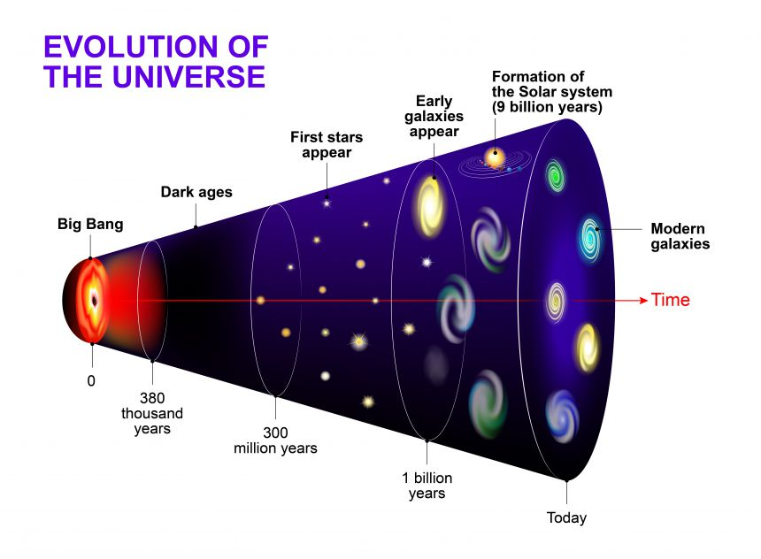
2.1.1.3 还原论结合整体论
- 见树木：还原到元素层次，理解局部精细结构，避免猜测、笼统。
- 见森林：从整体上把握事物、解决问题，避免零碎。
2.1.2 定性描述与定量描述
- 质：定性认识(对象的性质、特点、发展变化规律)不正确,会把认识引向歧途。
- 量：定量描述可深入准确地把握系统行为特性（数学公式描述物体运动规律）
2.1.3 局部描述与整体描述
- 整体由局部构成,整体统摄局部,局部支撑整体
- 描述系统包括描述整体和局部两方面
- 在系统整体观对照下建立对局部描述,综合所有局部描述以建立关于系统整体描述。

2.2 系统方法特点
整体与部分，对象与环境相互联系、作用、制约，综合精确考查对象
- 达到整合优化处理设计问题（包括子问题）的目的。
2.2.1 整体性
各种对象、事件、过程等是一个合乎规律，由各要素组成的有机整体。
- 各子系统各具特定功能和目标，分工协作，实现系统整体功能和目标。
- 从事物 (系统) 整体出发，着眼于系统总体最高效益，而不局限于个别子系统。
2.2.1.1 产品系统应用
- 增强系列产品灵活性、统一性和持久性。
- 强调产品在造型、色彩等形象因素上统一,以保证使用环境获得秩序感。

2.2.2 综合性
通过辩证分析和高度综合，使各要素相互渗透、协调达到整个系统最优化。
- 系统是一些要素为特定目的而组成的综合体，如建筑功能、环境、技术、人文、艺术等组成综合体;
- 对任何事物研究，须从成分、结构、功能、相互联系方式等综合系统考察。

2.2.2.1 产品系统应用
汽车驾驶、发动机、底盘、内饰、外型等组成综合体
- 例：汽车高加速性与低油耗系统思考。
- 例：标致307两厢车改成三厢车，要综合考虑车头、车身造型与车尾协调。
2.2.3 细分化
对组成要素进一步细分为零件材料、结构、造型、表面处理、色彩等
- 保证符合功能与结构要求，并精细化设计。
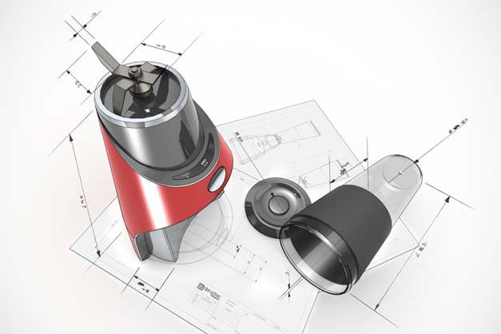
2.2.4 最优化
取得最好功能效果，选择出解决问题最好方案。
- 最优目标：在条件约束下,为系统确定最优目标,运用数学方法获得最佳解决方案。
- 实现目标的过程和方式最优：从整体、全局、相互联系上来研究设计对象及有关问题。

2.2.4.1 产品系统应用
- 产品优化：功能完整、结构合理、造型美观、成本经济。
- 制品过程优化：设计、生产、管理，产品经济性、维护性、包装运输、安全性、可靠性等

2.2.4.2 例：奔驰C系轿车对比前几代系统优化
- 功能完整、结构合理、造型美观、成本经济、操控优异。
- 安全性指标也达最优。

2.3 产品系统分析与综合法
2.3.1 分析与综合的基本概念
分析与综合是一个扩散和整合交织的过程。
2.3.1.1 分析
为设计提供解决问题依据，加深认识，启发构思。
- 为使设计问题构成要素和有关因素清晰显现
- 对系统结构和层次关系分解，明确系统特点，取得必要设计信息和线索。
2.3.1.1.1 系统分析内容
- 系统组分
- 系统组分关联方式
- 系统所处环境(特点)、互相影响、变化趋势
具体包括调查研究、目标确定、总体分析、宏观、微观模型建立、系统优化、系统方案综合、系统评价等
- 定量分析与定性分析相结合。

2.3.1.1.2 系统分析作用
- 系统分析(功能、环境、条件、可行性、费用、效果等)保证获得良好方案，避免大量返工和经济损失。
- 系统层层解析利于对分系统用以往经验和知识分析和处理，把复杂问题条理化、简单化。
2.3.1.1.3 系统分解
- 简单系统分解：结构要素分解（例：电冰箱分为压缩机、冷凝器、蒜发器、箱体、温控器等）。
- 其它系统分解：系统目的明确化(总目的、子目的)、系统评价、系统研制进程安排等分解条理化。
- 分解程度(数目)适当，过细花费精力，也使系统综合变得困难，过粗不利于分析。
- 分解位置，应在分系统间联系最少处，减少各分系统分析干涉。

2.3.1.2 综合
- 对分析结果归纳、整理、完善和改进。
- 根据分析结果，经评价、整理、改善后，决定事物构成和特点，确定设计对象基本方面。
- 尽可能作出多种综合方案，并按一定标准和方法评价、择优，选出最佳。

2.3.1.2.1 综合创新
- 分析——重构：由部分重构整体
- 对现有系统分析后加以改善,达到新综合;对尚未存在系统可收集分析类似资料后创造性设计。

2.3.2 产品系统分析与综合
- 系统是一系列有序要素集合，各要素间有层次关系和逻辑联系。
- 设计是动态过程，通过设计因素(功能、经济、审美)间信息传递相互调整和修正。
- 把诸因素层次及联系了解清楚,按预定目标综合整理出问题解答。
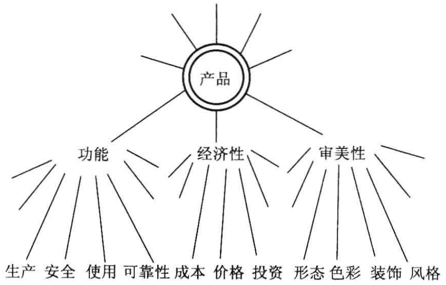
2.3.2.1 系统分析与综合原则
- 把内外影响因素综合分析
- 把局部与整体效益结合考虑，追求最佳效益。
- 依据目标性质和特性采取定量或定性分析。
- 遵循系统与子系统或构成要素间协调原则，使总体性能最佳。
- 遵循辩证观点，从实际出发，对情况周密调查，考虑各因素，准确反映客观现实。
2.3.2.2 系统分析与综合步骤
- 总体分析: 确定总目标及客观条件。
- 任务与要求分析: 确定为实现目标需完成任务及要求。
- 功能分析: 根据任务与要求，对系统及各子系统功能和相互关系分析。
- 指标分配: 在分析基础上确定对各子系统要求。
- 方案研究: 为完成预定任务和各指标，需制定各种可能方案。
- 分析模拟: 系统受多因素影响，当某因素变化时，系统指标随之变化 (因果关系由模拟和实验确定)
- 系统优化: 在方案研究和分析模拟基础上，从可行方案中选出最优方案。
- 系统综合: 对最优方案论证和具体化。
2.3.3 系统分析方法
系统分析是系统决策与设计基础。
- 从系统长远和总体最优出发，确定目标与准则，
- 分析各层次子系统功能及关系，及系统同环境相互影响。
- 在调查研究、收集资料和系统推理基础上，提出对系统输入、输出及转换过程若干可能方案。

2.3.3.1 投入产出法
Input-Output Technique 输入输出法
- 通用电器公司用于探求设想。
- 确定期望产出(结果和目标,明确输入输出) -> 决定投入 -> 利用智力激励法寻求投入产出关系。
- 同时确定限制条件，如成本不超过某值、坚固耐用等。

2.3.3.1.1 例: 天黑灯自亮问题
- 输入: 天黑下来, 输出: 灯自亮
- 根据入、出和限制条件，考虑相互关系，
- 运用创造性思维和逐步推敲明确入和出联系，分析出解决问题方案。
2.3.3.2 相关表法
探讨设计问题中相关要素间关系为目的
- 分解设计问题 -> 分析比较 -> 明确主次问题 (关系最重要、希望产生关系和无关系)
- 例：街道清扫系统要素相关表

2.3.3.3 PERT 法
Program Evaluation and Review Technique 评测复审法
- 1958年，美国海军特殊设计局发明PERT法，并应用于潜艇和导弹开发，使工期比预定时间缩短两年。
- 包括PERT/TIME、PERT/MAN-POWER和PERT/COST (时间、人员、费用)
2.3.3.3.1 利用PERT制订计划方法
- 基本图示符号
- 规则
- 基本步骤
- 圆圈: 事件结点，不需时间和资源。圈内为作业名称或数字
- 箭头线: 作业过程
- 虚箭头线: 两结点间无实际作业，仅示先后顺序
- 箭头线顺序发展（无回路）
- 结点编号逐渐增大，可跳号以补充修改作业，但不可重复编号。
- 符合实际工作程序。

- a. 制订整体计划 (时间、人、物与资金)。
- b. 分析确定所需全部作业项目。
- c. 构造网络。
- d. 计算日程。
- e. 配置资源。
- f. 预算费用。
- 在估计时间、资源等问题时，可按乐观、悲观、最可能情况估算，取平均值Te=(a+4m+b)/6
- 例：乐观3天完成、悲观10天完成、最可能5天完成 -> (3+4*5+10)/6 = 5.5天
2.3.3.3.2 大型儿童游乐玩具项目设计计划
应将时间、人员、费用，及资源配置等因素估计或计算进去，以使系统开发工作过程得到有效控制。
- a 调查准备 (a1准备调查记录本卡;a2研究调查场所;a3确定调查人员;a4准备调查用具。)
- b 实地调查 (b1现状调查;b2资料整理。)
- c 收集有关大型游乐玩具资料 (c1杂志、商品选购指南;c2市场上有关玩具。)
- d 有关儿童身体发育资料 (d1图表化处理;d2按年龄等分类处理。)
- e 活动分析 (e1活动种类;e2动作分析;e3把握活动意义。)
- f 分析游乐时使用物品 (f1分析物品;f2物品特征;f3分析游戏与物品关联性。)
- g 综合化 (g1:d、e、f关系明确化;g2图形化。)
- h 展开 (h1意念性草图;h2比较 c、g;h3设计定位;h4草模。)
- i 基本设计 (i1基本形态、结构确定;i2预想图绘制;i3细部审核;i4修正。)
- j 制作模型 (j1绘制模型工程图纸;j2选择模型材料;j3模型制作完成;j4拍摄模型照片;j5对模型审核。)
- k 评价
- l 试销准备 (l1创意和设想;l2调查;l3根据调查结果修改设计预想图;l4修改或重新制作模型;l5信息整理。)
2.3.3.4 因果分析图法
Cause and Effect Diagram 鱼骨图
- 以图示方法揭示关系而认清相关因素间影响。
- 着眼问题结果和对问题结果产生影响的原因。
- 箭头顶端表示设计问题或其它问题要点，大、中、小骨分别表示大、中、小原因

2.3.3.4.1 绘制鱼骨图方法
- 确定问题要点 (要分析项目)，如机械加工为什么出现废品。
- 确定大原因，如机床、方法、操作者等。
- 继续找出中原因和小原因及更细原因。
- 对关键原因作标记以便进一步研究。(鱼骨图可转化成树形图)

2.3.3.5 雷达图分析方法(radar chart)
一种多变量对比分析技术,形似导航雷达图或蜘蛛网。
- 雷达图可对多组变量多种项目对比,反映数据相对中心点和其它数据点变化情况。
- 适于对多属性体系结构描述对象作出全局、整体评价(如：判断产业发展趋势、确定产业范围边界)

2.3.3.5.1 图示说明
- 档次渐高,边缘为最高档,由若干同心圆组成。
- 同心圆向外引若干条射线,等间距。
- 每个圆代表一定分值,由中心向外分值增加。
- 每条射线末端标明指标。

2.3.3.5.2 例：产品功能属性用户评价雷达图
功能性(实用)、技术性、艺术性(造型)、舒适性(人机)、经济性(性价比)、环保性等评价。
2.3.3.6 关联图法(网络)
分析原因一结果、目的一手段等各因素间互相影响、制约
- 据逻辑联系，寻求最有效解决措施。
- 箭头由原因指向结果，或由手段指向目的，或由因素指向问题等。
- 重点项目可用双框。
2.3.3.7 矩阵图法
- 运用矩阵形式多维分析。将问题分解，找出全部因素并分类，
- 把属于因素群R的因素R1、R2、…、及属于因素群L的因素L1、L2、…、排成行和列，
- 在行和列交点处表示出设想点，据以探求问题所在及解决问题方法。

2.3.3.8 复杂系统工程分析法
定性分析、定量分析、综合分析
2.3.3.8.1 系统分析工具
- 霍尔三维结构方法(硬系统方法论)
- 切克兰德软系统方法(软系统方法论)
- 并行工程方法
- 物-事-人理系统方法
- 螺旋式推进系统方法
- 综合集成方法——统计数据参数模型,人机交互,逐次逼近。
2.3.3.8.2 系统分析前提条件
建立系统模型，描述系统某一方面本质属性
- 并能以确定形式(文字、符号、图表、实物、数学公式、计算机建模)提供该系统知识,
- 且据此(系统模型)对系统定性、定量、综合分析,
- 找出研究对象特征和发展规律。
2.3.3.8.3 系统模型
- 实体模型
- 相似模型
- 比例模型
- 文字模型
- 网络模型
- 图表模型
- 逻辑模型
- 数学模型
- 计算机模型
2.3.3.8.4 霍尔(Hall)三维坐标系表示的系统工程研究方法和步骤
时间、逻辑、专业三维结构
- 时间维：整个寿命周期 (规划设计-…->更新)
- 逻辑维：思维过程 (问题提出-…->实施)
- 专业维：专业知识排列 (工程-…->社会)
2.3.3.8.5 切克兰德软系统方法

社会经济系统中的问题往往很难象工程技术系统中的问题那样，事先将“需求”给定清楚，因而也难以按价值系统的评价准则设计出符合这种“需求”的最优系统方案。
- 切克兰德方法论的核心不是“最优化”而是“比较”与“探寻”
- 从模型和现状的比较中来学习改善现状的途径
- ①认识问题：收集与问题有关的信息，表达问题现状，寻找构成或影响因素及其关系，以明确系统问题结构、现存过程及其相互之间的不适应之处，确定有关行为主体和利益主体
- ②根底定义：初步弄清、改善与现状有关的各种因素及其相互关系。目的是弄清系统问题的关键要素以及关联因素，为系统的发展及其研究确立各种基本看法，并尽可能选择出最合适的基本观点
- ③建立概念模型：在不能建立精确数学模型的情况下，用结构模型或语言模型来描述系统现状。概念模型来自于根底定义，是通过系统化语言对问题抽象描述的结果，其结构及要素必须符合根底定义的思想，并能实现其要求
- ④比较及探寻：将现实问题和概念模型进行对比，找出符合决策者意图且可行的方案或途径。有时通过比较，需要对根底定义的结果进行适当修正
- ⑤选择：针对比较的结果，考虑有关人员的态度及其它社会、行为等因素，选出现实可行的改善方案
- ⑥设计与实施：通过详尽和有针对性的设计，形成具有可操作性的方案，并使得有关人员乐于接受和愿意为方案的实现竭尽全力
- ⑦评估与反馈：根据在实施过程中获得的新的认识，修正问题描述、根底定义及概念模型等
2.3.4 系统综合方法
在系统分析基础上提出全面完善的整体解决方案。
- 系统分析的反向过程，常常是一个创新过程，重构即综合。
- 功能求索法、整合重构法、产品定位法、产品基准法、系统优化法
- 标准化法、模块化法、平台化法、系列化法
2.3.4.1 功能求索法
确定总功能，通过总功能层层适度分解，构成若干子系统和功能元的有序组合。
- 明确功能系统基本构造和特点。
- 分功能求解：部分分功能已有可选部件,其余分功能需探索解决办法。
- 各分功能解法组合就是系统综合设计原理方案。
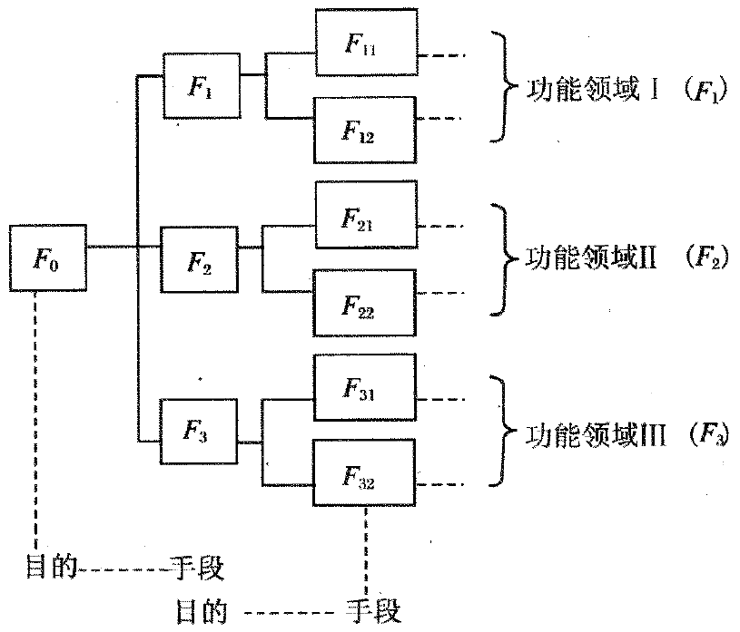
2.3.4.1.1 功能求索方法实施
- 借鉴汇集前人经验的设计手册、设计原理方案 (技术物理效应、物理原理等)
- 发挥创造性思维，利用创新技法提高设计水平和工作效率 (头脑风暴法、联想法、类比法)
2.3.4.2 重构整合法
- 在系统分析、分解基础上，将系统要素及其结构依据功能要求重新打散，建立新构成关系
- 由部分重构整体实现整合创新（分解与组合）
2.3.4.2.1 分解原理
- 事物本身由很多可分解功能组成,组成方式不同,总体功能将不同,满足不同需求,由分解到重组。
- 分解出主要功能，组成更多更好主辅搭配。
- 多种功能合在一起彼此影响,分离有利于各自特点发挥,或利于创新改进。
2.3.4.2.2 组合类别
- 主要功能与辅助功能组合
- 同种功能组合
- 无关功能组合
- 不同功能关系组合

2.3.4.3 产品定位法
将竞争产品作为参考对象,以自身产品体系完整性为开发目的,寻找设计突破。

2.3.4.4 产品基准法
据产品定位,选择行业领先产品作为产品基准,对结构参数、性能、尺度、外观提出对应方案。
- 例：尼康选择佳能产品作为其产品基准
| 佳能 | 尼康 |
| 1280万象素,5D全幅单反 | 1210万象素,D3 |
| 小幅单反1010万象素,40D | 1230万象素,D300 |
| 准专业数码1210万象素,G9 | 1210万象素,P5100 |
2.3.4.5 标准化方法
- 标准化要求产品各部件或某些种类产品间建立一种联系，实现零、部件可互换。
- 标准化要求合理制定产品品种规格以满足不同层次需求;
- 5种标准化形式：简化、统一化、系列化、通用化、组合化（标准接口）

2.3.4.5.1 标准化路径
- 制定高标准以提高产品质量;
- 在生产、流通、消费等方面全面节约人力、物力以降低成本;
- 在商品交换和服务方面保护消费者合法利益和社会公共利益;
- 保障人类安全、健康,创造舒适、宜人环境,有利于建立科学、文明、进步生活方式;
- 促进相互理解、交流,提高信息传递效率;促进国际间生产协作、技术交流和贸易等。
2.3.4.6 模块化方法
- 模块化换元与移植创新思维法则与标准化思想相结合产品系统设计整合创新方法。
- 模块产品中相对独立有互换性部件,在模块化系统中用于构成系统功能单元。

2.3.4.6.1 例：镜头模块化
EOS系列单反镜头模块
- 适马公司采用模块化方法为佳能和尼康公司提供一系列单反镜头(有对应接口)。
2.3.4.7 平台化方法
零部件可互换产品平台实现多种产品部件共享
2.3.4.7.1 例: 大众紧凑型轿车PQ35平台
既满足客户多样化需求，又实现规模效应，降低造车成本。
- PQ35 (P: 产品平台, Q: 动力总成横置, 3: A级车, 5: 第五代)
- PQ35平台车型：高尔夫5、奥迪A3、宝来、斯柯达明锐、大众SUV途观
2.3.4.8 系列化方法
- 通过对同一类产品发展规律分析、研究,
- 对国内外生产与需发展趋势调查和预测,
- 结合企业自身生产技术条件,
- 经过全面技术经济比较,
- 将产品主要参数、型式、尺寸、基本结构等做出合理安排与规划 (最佳数列排列)
- 以尽量少品种数来满足最广泛需求, 形成产品品种和规格标准化。
2.3.4.8.1 例: 相似功能系列
成套锅具系列

2.4 产品系统优化设计方法
- 指研究和寻求在给定条件下最佳解决问题方案(最合理参数、最好工作性能、最低成本等)。
- 使功能完整、结构合理、造型美观、成本经济
2.4.1 质量指标
- 稳定性：功能长期有效性及在下一次更新换代前保持其先进性与竞争性
- 准确性：预期目标与现实状况近似程度
- 快速性：设计速度及由设计到实现的时间
2.4.2 优化设计程式
发散 (广开思路) -> 创造(构想各种独创、新颖方案) -> 收敛(关键部位创新设计、附属部分常规设计)

2.4.3 优化方法
- 直觉优化方法
- 试验优化方法
- 进化优化方法
- 数学优化方法
- 专家系统(知识库)优化方法
- 模糊优化方法
- 其它优化方法
2.4.3.1 直觉优化方法
- 赁直觉和经验确定，如造型形态问题等。
- 取决于设计者知识广泛性及修养，并配合一些评价方法。
2.4.3.2 试验优化方法
应用环境: 产品本身机制不清楚，新产品系统设计经验不足，各参数对设计指标影响主次难以分清。
- 试验模型 (样机或模拟装置等)，经数次试验后据试验结果来优选方案。
- 或根据实验数据，构造函数，再求极值。
2.4.3.3 进化优化方法
渐变与突变，随时根据市场需求和竞争形势等不断更新换代。
- 价值工程从使用寿命期间功能价值出发一点一滴分析改进，使工程和产品达到优化。
- 适应性设计、变异性设计也一种进化优化，而开发性设计属突变彻底优化。
2.4.3.4 数学优化方法
简易优化法(如黄金分割)、图解分析法和数学规划法，分三个阶段:
- 将问题转换为数学模型，建立评价目标函数，考虑约束条件，确定参与优化的参数。
- 根据数学模型中函数性质，选用合适优化方法，并作程序设计。
- 运行程序，求出最优值，然后分析判断出最优设计方案或参数。

2.4.3.5 专家系统 (知识库) 优化方法
将专家知识和经验分类整理后纳入程序中，在输入原始参数后，模拟专家推理、判断与决策。
2.4.3.6 模糊优化方法
现实事物存在界限糢糊的特点
- 在模糊数学(模糊集合)基础上，定量处理影响设计方案的模糊因素。
- 给出一系列不同安全水平优化方案，供选择。

2.4.3.7 其它优化方法
多维图形法、图论法、准则法，以及大量创造性方法。
2.4.3.7.1 方案优化
适用于只有任务要求、用户要求或总功能要求，还没有原理方案的情况。
- 功能论方法为指导，在约束限制下，利用创造工程和功能技术矩阵产生多个原理方案。
- 再通过各种办法评价、筛选和决策。
- 在产品开发中有可能产生创新和飞跃。
2.4.3.7.2 参数优化
通过数学规划等在已有原理方案情况下
- 使参数具体化和优化，完成预定总功能方案设计和参数设计。
- 如图：零件的容差等级越低，成本就越低，但产品参数偏离目标值的可能性就越大，造成损失就越大。需优化进行平衡。

2.4.4 优化方法小结
- 优化贯穿于产品构思、计划、设计、制造、装配、使用、维修、改造直至报废全过程。
- 设计追求多目标 (性能、环境、成本、使用经济性)。为协调各方因素，不同指标高低均衡。
2.5 产品系统原型设计方法
2.5.1 模型与原型
- 模型：简化对象实体,用适当表现形式或规则描绘主要特征所得模仿品。
- 原型：用于研究、分析和验证的对象实体，保证客观性和有效性。
2.5.1.1 模型分类
- 按构造模型成分
- 按模型功能
- 按模型结构
2.5.1.1.1 按构造模型成分
- 实物模型
- 符号模型
2.5.1.1.2 按模型功能
- 解释模型(统计模型用于测试因果假设)
- 预测模型(通过统计模型和数据挖掘来进行预测新的数据或未来)
- 规范模型
2.5.1.1.3 按模型结构
- 标度模型(scale model): 与原型结构相同或相似, 但尺度缩小(如模型船舶、模型飞机)
- 地图模型(map model): 与原型有相同拓扑结构。
- 数学模型: 抽象模型, 与原型结构有内在联系,结构问题用数学语言描述,用数学方法分析和解决。
2.5.1.2 产品原型分类（按实体程度）
范围从概念草模到功能齐全样品（三维模型设计、分析和验证）
- 外观原型
- 概念原型 (用于快速检测设想)
- 实验原型 (用于证实产品功能)
- 样机原型 (全范围、全操作产品版本)
2.5.2 数字(解析化)原型与实体原型
2.5.2.1 解析化原型一般比实体化原型更具弹性
解析化原型近似一个数学模型,可随不同设计选择改变参数。
- 一般，改变解析化原型某个参数比改变实体化原型某个属性校容易，且允许作更大改变。
- 解析化原型用于缩小可变参数取值范围,而实体化原型用于对设计精雕细琢或确定方案。
2.5.2.2 检测不可预见现象需实体化原型
实体化原型经常揭示出与原型最初目标完全不相关不可预见现象。
- 在产品开发过程中,至少要建造一个实体化原型。
2.5.2.2.1 例: 开发太空实验室（方便间原型）
一项规模庞大的系统工程,有许多子系统需反复实验改进。

2.5.3 原型的作用
- 降低高值重复风险：测试可决定任务是否要重复，适于高成本、新技术或重大变革产品。
- 可加快开发步骤：比如，复杂形状部件的实体化模型促进更快地细化和设计模具。
2.5.4 原型化技术
- 计算机3D建模
- 快速原型化——3D打印
2.5.4.1 计算机3D建模
用3D实体表现设计,每个实体通常用圆柱、块、孔等几何单元构造而成。
2.5.4.2 快速原型化——3D打印
- 快速成型技术(Rapid Prototyping)由3D System公司于1984年推出。
- 基本原理：分层制造，逐层叠加。
- 每次做一个横截面，就铺置一种材料或选择性地凝固一种液体。
- 材料：塑料、石蜡、纸、陶瓷和金属
- 3D打印也被用来制造假牙、人体骨骼器官等。
2.5.4.2.1 快速原型化技术特点
将一个实体复杂三维加工离散成一系列层片加工,大大降低加工难度
- 快速成型适合激烈产品市场竞争。
- 可制造任意复杂形状三维实体。
- 用CAD模型直接驱动,实现设计与制造高度一体化。
- 成型过程无需专用夹具、模具、刀具,既节省费用,又缩短制作周期。
- 技术高度集成。
2.6 产品系统过程设计方法
预制计划阶段 | 计划控制 | 探索问题状况方法 | 寻求构想 (Ideas) 方法 | 探索问题结构方法 | 产品造型设计方法 | 广义工业设计 | 新产品开发
- 过程设计包括分析、创造、综合、发展、表达、反馈等阶段
- 系统、动态地解决设计过程中出现各类课题
- 产生具体、明确步骤和有针对性的解决方法
2.6.1 预制计划阶段
- 系统研究
- 价值分析
- 系统工程分析
- 人机系统设计
- 设计时程计划
- 边界研究
2.6.1.1 系统研究
目的: 确定系统设计变量
- 明确问题组成要素，按重要性权衡出可控和不可控变量。
- 明确各变量间关系。
- 预测不由设计师控制的变量影响。
- 确定边界条件。
- 调节每一个决策变量数值，并预测依赖性变量数值。
- 选择决策变量和各种数值，以获得目标综合最优值或可行解。
2.6.1.2 价值分析
目的: 提升产品价值
- 价值 = 功能(效用) / 成本(费用)
- 功能：基本功能、辅助功能、使用功能和美观功能。
- 成本：产品寿命周期成本(生产、销售、使用、维修等全部成本)
- a. 提高功能，降低成本
- b. 功能不变，降低成本
- c. 功能有所提高，成本不变
- d. 功能略有下降，成本大幅度降低
- e. 大幅度提高功能，适当提高成本
2.6.1.3 系统工程分析
目的: 在系统内各元件间取得内部相容性; 在系统和环境间取得外部相容性。
- 确定系统输入和输出。
- 确定如何将输入转化成输出功能 (实施方案)。
- 选择或设计能实现上述每一个功能的元件。
- 检测内部相容和外部相容结果。
2.6.1.4 人机系统设计
目的: 取得系统内人-机间内部相容; 系统与其所在运行环境间取得外部相容。
- 确定系统输入和输出。
- 确定将输入转化成输出所需功能。
- 确定人和机器间功能分配。
- 确定必要训练程序、辅助工作、人机界面设计和机器设计。
- 保证人-机-环境间相容。
2.6.1.5 设计时程计划
目的: 制定系统性工作程序与方法。
2.6.1.5.1 用甘特图 (横道图) 表示设计时程
例：工程由X、Y、Z 3项任务组成，X任务中，任务2)须在任务1)完成后才能开始。
- 这种甘特图只能用于单线工作, X、Y、Z 任务间的联系不能在图上反映出来。
图中箭头表示各项任务中各项工作间关系，带箭头直线上的数字为该项工作所需时间。
- 从事项1)到7)可有5条路线，其中所需时间最长的称为紧急线或关键路线。
- 紧急线上的工作提前或拖后都直接影响整个任务的提前或推迟。
- 图中所示工程紧急线为1)-3)-6)-7)。所需时间为9周。
- 确定元素或组分按什么方式相互关联形成整体,即研究和发现系统结构或元素分类。
- 描述任务进度。
- 图包含水平时间线和垂线。
- 通过画出代表每一任务从开始到结束水平条绘制而成,
- 每一水平条已填充部分代表该任务已完成部分。
- 垂线代表当前任务,因此可直接看出任务提前或落后于进度。
2.6.1.5.2 PERT法 (计划协调技术)
图为一项工程共6个事项，即图中1)、2)、3)、4)、5)、6)，
- 9项工作 1-2、1-3、2-3、2-4、3-4、3-5、4-5、4-6、5-6。
- 各项工作完成先后顺序如图(b)所示。
- 紧急线或关键路线用带箭头双线表示。
- 对只与其它工作有约束关系而不需消耗时间工作，称为虚工作，以0表示，如工作4-5。
- 准备PERT网络
- 估计每项工作"预计完成周期"，计算式为Te=(a+4m+b)/6, 式中，a、m、b分别为每项工作最短、最可能及最长周期估计值。
- 寻找关键路线
- 计算非关键路线上工作机动时间一一时差
- 评价PERT计划
2.6.1.6 边界研究
目的: 找出满足设计要求所处限定范围。
- 写出关键条件性能规范。
- 尽可能精确地定义不确定因素存在范围。
- 制作模拟器，在不确定因素存在大致范围内，对每一个规范关键广度调节。
- 性能测验，以找出可达到预定性能限制范围。
2.6.2 计划控制
2.6.2.1 计划转换
目的: 正确处理设计过程中产生自发思想与原计划思想两者关系。
- 着手制订一个适合的问题计划。
- 在执行计划时，分别记录自发出现在有关人员头脑中想法。
- 在每一个自发思想没有充分研究之前，不要修改原有计划。只有在无计可施时才去重新修改原计划。
- 分析预定计划和自发思想所产生输出项，以便决定放弃一个，还将两者综合成一个新计划。
2.6.2.2 Machett基础设计法 (F.D.M)
目的: 从设计师熟悉部分入手，建立初步思考模型，再针对问题模式，选择适合思考方式，以完成工作目标。使用以下思考模式对设计问题思考：
- 用概括计划思考，其要点为: 预制计划; 比较各种设计计划 ;拟定设计策略。
- 从平行面思考，以客观方式观察各种思想和方法，并比较。
- 以检核表方式多角度地思考。
- 从不同概念 (例: 主要产品特性、产品寿命周期、可行性等) 思考。
- 以基本要素思考，以便在各设计阶段中作出正确选择 (需求、预测、策略、技术、观念、理性、排障)。
2.6.3 探索问题状况方法
2.6.3.1 目标描述
目的:确定设计须与之相容外部条件。
- 明确设计操作环境。
- 明确与设计相容环境特征（委托者期望及动机、可利用资源、基本目标）
- 确保所描述目标彼此不相矛盾，并且与设计时可用信息也不矛盾。
2.6.3.2 文献检索
目的: 找出对设计有用信息。
- 明确检索目的、要求。
- 找出信息出版物种类。
- 选择检索方法。
- 设法使检索费用降到最低。
- 保留完整参考目录。
- 尽量缩小收集出版物范围，以加速检索过程。
2.6.3.3 列举缺点
目的:为改进型设计定向。
- 检查现有设计样品或照片。
- 鉴别设计元件间安排，找出与设计目的明显矛盾地方。
- 找出产生上述矛盾原因。
- 设想清除缺点的方法。
2.6.3.4 采访用户
目的: 获取本产品用户信息。
- 选择用户，并设法调查出一致意见。
- 鼓励用户描述和亲自演示他们认为重要问题详细情况。
- 记录下采访过程中主要和次要发现。
- 如有可能，争取用户对采访中已得结论作出评论。
2.6.3.5 问卷调查 (调查表)
目的: 在大量人群中收集信息。
- 问卷设计和调查方式(调研、访谈)
2.6.3.6 用户行为研究
目的: 探索行为特征，并预测一个新产品潜在用户操作要求。
- 征询对与新产品类似产品有经验和无经验用户意见，并观察他们的行为。
- 分析一个人机系统，以确定用户能力和人机界面设计要求。
- 对一个模拟预想设计产品，观察熟练者和初学者使用各种行为。
- 记录下用户在使用过程中不产生错误、伤害或不舒适而不能超出极限值。
2.6.3.7 系统检测
目的: 在复杂情况下对系统控制。
- 确定需排除因素 (不希望存在因素) 特征。
- 确认产生各种变化无常情况原因。
- 变化(施加或放松) 参数，并记录下对需排除因素特征影响，也记录下对其它特征影响。
- 选出最优和最小损害被测限制。
2.6.3.8 选择测量尺度
目的: 根据设计目标制订测量项目要求及费用。
- 提出需测量问题。
- 选择测量允许误差和人允许费用。
- 选择相应测量尺度。
- 设计一个与上述要求相容测量过程。
2.6.3.9 信息记录和精简
目的: 指明重要能决定设计行动特征，并使之视觉化。
- 确认对设计成败有关键影响不定因素。
- 确定这些关键因素被缩减程度。
- 确定可用于缩减不定因素资料。
- 检索可用于信息记录和精简各种方法，精度、速度、费用及适用范围。
- 选择与上述各项都能兼容信息记录和精简方法。
2.6.4 寻求构想 (Ideas) 方法
目的: 使设计师或一个设计群体能迅速产生许多有用构想。
- 强化创造动因群体激智方法，如头脑风暴法、德尔菲法、CBS 法、KJ 法等。
- 寻找设计目标方法有提喻法、设问法、和希望点列举法、检核表法、专利法等。
- 寻求改进设计构想可采用设问法、检核表法、缺点列举法等。
- 创造性设计方法有类比法、联想法、形态学法、区法、移植法、仿生法、组合设计法等。
- 创造方法很多，但不能生搬硬套。有时，一种方法可反复使用多次，有时要几种方法同时使用。
- 辅助构思工具 (Mind Map)
2.6.5 探索问题结构方法
2.6.5.1 功能技术矩阵
目的: 系统地探索各元素间关系。
- 定义各项元素及其关系。
- 建立一个矩阵，在其中每一元素都能与其它任何元素相比较。
- 确定每一对元素间实际上是否存在联系，若不存在联系即为不相容。
- 找出各种可能相容组合，即确定不同类型结构。
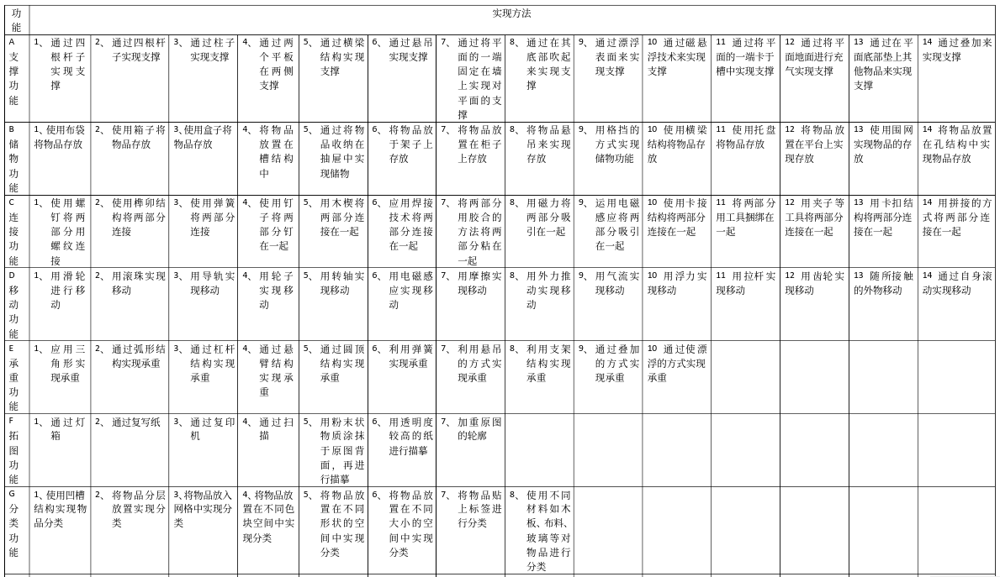
2.6.5.2 相互关系网
目的: 系统地探索各元素间关系特征。
- 如上所述，利用关系矩阵，确定哪些元素相关。
- 画出代表各元素点列图, 连接不相容元素
- 利用相互关系网可得出相容结构有6个: a1b1c1d1, a1b2c1d1, a2b2c1d1, a2b2c1d2, a2b2c2d1, a2b2c2d2
2.6.5.3 相互关联决策域分析
目的: 对结合在一起各互相相容子解答，确认和评价。
- 在每个决策区域内确认几个可行子解答。
- 指出哪些子解答与其它不相容。
- 列出结合在一起相容子解答; 并按标准 (例: 成本) 评价
- 找出最优一套子解答。
2.6.5.4 系统转变
目的: 改变一个不能令人满意系统，以排除其固有缺陷。
- 确认现有系统固有缺陷及产生原因。
- 找到能排除这些缺陷新型元件。
- 找出使现有元件演化为新型元件过程。
2.6.5.5 功能更新
目的: 创造新功能。
- 确定现有设计每个部分功能。
- 确定哪些是主要功能，哪些是次要功能。
- 分析改善现有设计主要功能的可能性。
- 将以上两步结果合起来形成一个新修正的主要功能。
- 将新主要功能分解，并分配给相应新部分，找出多种选择方法。
2.6.5.6 亚历山大确定元素法
目的: 将某一结构分组成合适元素，使得每一元素能分离，并被自由地替换以适应环境变化。
- 确定能对该结构产生影响的全部需求。
- 确定相互关系矩阵中每对元素需求否相关，并将结果记录。
- 将该矩阵分解成若干子阵(块)，每一块内部密切联系; 而各块间联系松弛。这些块就要寻求合适元素。
- 将每一个块需求设计为一个元件。
- 将这些元件组织起来，构成新系统，或将某些新元件引入到现有结构中，而均不改变原有结构功能。
2.6.5.7 设计信息分类
目的: 将一个设计问题信息分成较易处理若干部分 (KJ法)
2.6.6 产品造型设计方法
2.6.6.1 定量结构变化法
目的: 将产品主功能分解为限制在一定数量之下分功能，再作结构上变化，以此创造最佳产品造型。
- 确认产品主功能
- 将主功能分解成子功能
- 展开功能结构
2.6.6.1.1 确认产品主功能
2.6.6.1.2 将主功能分解成一定数量子功能(功能树)

2.6.6.1.3 由3个变量展开功能结构
所谓配置方式即为主要功能在结构变化上的可能形式。
- 两个构成元素的空间排列（点状、轴向、面状和立体排列）
- 三个元素的可能排列情况
- 吸尘器空间排列

2.6.6.1.4 使多样化造型与产品功能相容
2.6.6.1.5 选择最佳方案
2.6.6.2 机能面关系界定法
构成产品元素组件间形成一定数量机能面，按机能不同可分为:
- 物理机能，即表现出产品各组件间关系;
- 生理、心理机能，即表现出人和组件间关系(人机工程学)。
2.6.6.2.1 总目的
按造型应满足物理、生理和心理三项机能，创造出产品最佳造型。
2.6.6.2.2 步骤
(a)所示旋钮，其机能面数量有两个:
- A 与人接触的外在机能面 (生理、心理机能面)
- B 与轴接触的内在机能面 (物理机能面)


图 8-22 为机能面关系界定法流程图。机能面关系界定法用由小到大、由内向外方式来造型。
2.6.6.3 造型分解法
目的: 按造型各种需分解形态，以创造最佳造型。
- 确定产品 (计算器) 概略性形状
- 确认计算器可变更部分
- 按功能、构造及视觉将造型展开。
- 选择最佳适型

2.6.6.3.1 确定产品 (计算器) 概略性形状
2.6.6.3.2 确认计算器可变更部分
2.6.6.3.3 按功能展开造型
2.6.6.3.4 按构造展开造型

2.6.6.3.5 按视觉展开造型
2.6.7 广义工业设计
2.6.7.1 对人类生活方式设计
产品设计不仅是造型，研究对象是人-机-环境-社会大系统。
- 产品设计出发点是人，目的为人而不是产品本身。
- 使生存环境更加合乎人性。
2.6.7.2 广泛创新活动
生产力（科学技术、设计）进步正在不断地推动生产关系更新。
- 先进设计和制造技术，功能齐备产品，深刻影响物质领域，生活领域，同时改变人们观念。
- 产品设计已发展为广泛创新活动，推动市场竞争由产品向企业、产业、工业以至国家、地区方向发展，
- 从低到高，由微观向宏观，由技术到经济、文化综合实力竞争，均体现在设计中。
2.6.7.3 生态设计
设计不仅研究人-机关系，还扩及整个人类环境，要将人造和自然环境作为整体来规划。
- 设计已超出一般意义下技术与艺术相结合范畴，成为一种促进现代产品、企业和社会发展动力。
- 随着人类和自然、社会间自适应状态逐渐改变、综合和协调，设计将日益发挥重要作用。
- 设计除科技、艺术外还须考虑经济、文化和社会实践各种要素，设计应多元、动态、系统、综合。
- 产业生态 | 社会生态 | 自然生态
2.6.7.3.1 产业生态
设计不仅决定产品开发，还在产品和产业结构调整，企业和产业改造，新兴产业诞生中有不可替代作用。
- 科技通过设计，正在迅速改变人类生存和发展条件，生存质量不断提高，生活方式不断改变。
- 新兴信息产品不但影响和改变生活方式，且为促进新兴产业出现和建设市场经济提供广阔空间。
2.6.7.3.2 社会生态
设计中引进社会学、生态学和人类文化学概念，研究生活形态学，生活设计，以提高消费社会经济效果。
2.6.7.3.3 自然生态
在生态设计中发挥先导作用。合理消费模式和适度消费规模，能使生存环境得到保护和改善
- 低效高耗生产和不合理生活消费极大地破坏现有生态环境。
- 保护地球，重新规划人类生活。
2.6.7.4 企业策划
设计在企业资产增值，提高企业竞争力和经济效益方面发挥巨大推动作用。
- 为企业作设计开发、生产开发和市场开发工作，协助企业克服在市场竞争中遇到的新问题。
- 问题：富有竞争力性价比产品概念; 合理产品产业结构; 企业优势、机遇和企业潜在问题
- 制定企业产品、行销和形象战略部署，提出行销企划（分销网络、广告策划、宣传展示及售后服务）
- 还可在城市规划、公共设施和室内设计等方面发挥作用。
2.6.7.5 设计大团队
多元动力机制，运作，要靠大团队来支撑。
- 由企业家、设计师、工程师、经济师、专家、管理人员、学校研究机构和政府部门共同组成
- 核心：企业家、设计师和政府公务人员三结合体制。
2.6.8 新产品开发
- 新产品概念
- 开发机制
- 产品设计创新过程模型
2.6.8.1 新产品概念
- 仿制产品
- 改进型产品
- 换代产品
- 全新产品
- 未来型产品
2.6.8.1.1 仿制产品
仿照已有产品，在造型及局部结构，零部件、材料、工艺上作修改
- 制造出在性能、质量、价格等方面有竞争力产品。
2.6.8.1.2 改进型产品
对现有产品，改进性能、提高质量或增加品种、规格、款式花色等。
- 对提高企业经济竞争力大有益处。
2.6.8.1.3 换代产品
在原有基础上，采用部分新技术、新结构、新材料、新工艺及元件以满足新需求。
- 渐进性创新
2.6.8.1.4 全新产品
在原理、技术、结构、工艺或材料等方面有重大突破
- 与现有产品无共同之处新产品，科学技术新发明应用
2.6.8.1.5 未来型产品
探索性(概念方式)设计，旨在满足人们近期或未来需求。
- 可能幻想，但却未来现实。
- 未来型设计因极具创意，故一般能推动技术开发、生产开发和市场开发。
2.6.8.2 开发机制
- 设计主导型创新机制
- 技术主导型创新机制
- 设计一技术结合型创新
2.6.8.2.1 设计主导型创新机制
随着科技和社会经济发展，设计内涵发生深刻变化使以设计为主导创新成为必要。
2.6.8.2.2 技术主导型创新机制
这种创新机制特点技术创新和工程设计先于设计开发和设计。

2.6.8.2.3 设计一技术结合型创新
由技术人员和设计人员共同组成创新小组。 或以设计创新为主，或以技术开发创新为主，要看项目特点和人力配备。
2.6.8.3 产品设计创新过程模型
在企业内部实现产品创新，可有三种过程模型。
- 部门阶段模型
- 整合性设计创新过程模型
- 综合模型
2.6.8.3.1 部门阶段模型
设计创新任务按部门分阶段，部门间缺乏协调与联系。

2.6.8.3.2 整合性设计创新过程模型
通过企业设计开发策略制定和设计管理，将市场、设计、生产、营销等部门有机组合起来，实现开发过程同步化，在企业内部达成共识。
- 缩短产品开发周期和企业内部协调时间，加快产品推向市场速度。
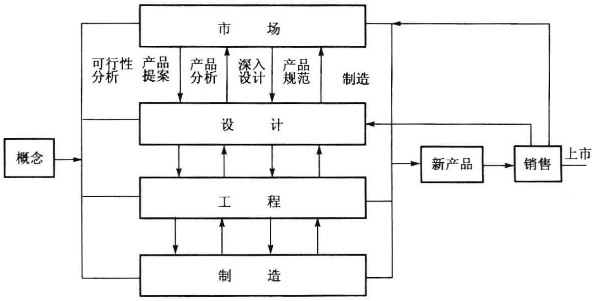
2.6.8.3.3 综合模型
将创新活动划分5个阶段，从创新决策上分为3个阶段，将各阶段活动与决策结合模型。
2.7 作业二
- 选择一类产品中的3～4款产品运用至少一种分析方法（比如雷达图分析方法、矩阵图法等）进行分析比较，明确各自优缺点；
- 在此基础上，对此类产品基本功能结构分解（可用功能结构系统图表示），再重组为新的设计方案（可有若干组合，并选出其中最优方案）。
- 做成PPT，9月8日(周日)23:00前发送到anhongz@outlook.com
- 文件名: PSD2-标题-姓名
- 文件类型: 演示文稿或PDF文档
3 产品系统设计整合
3.1 产品系统整合概述
在最大限度满足个性化需求前提下实现产品标准化、模块化、平台化和系列化整合(层次由低到高)。
3.1.1 系统整合的产生与发展
- 适者生存：自然界和人类社会发展演化历史就是事物整合求生的历史。
- 物以类聚：大自然优胜劣汰是生物物种自然整合的过程，到目前有5亿-30亿年。
- 人以群分：一方水土养一方人，世界各国形成各自语言、文化和生活习俗。
- 国家整合：秦始皇统一六国，又统一货币、车辙和文字。
- 美国开创产品整合创新先河，形成标准化制造体系。
3.1.1.1 霍尔 (John H. Hall) 发展可互换性
简化来复枪生产(1824)
- 目标: 使枪每一个相同部件完全一样，能用于任何一支枪。
- 由此，在美国发展出一种标准化产品大批量生产，产品零件有可互换性。
3.1.1.2 美国福特公司发明流水线
1914年大量生产有可互换性部件，并采用流水装配线。

3.1.2 产品整合(关联产品群)定义
通过共享要素 (零件、部件、平台)，将尽可能多产品整合形成有关联产品。
- 产品族，在设计生产中，将某些产品在组成要素或结构及造型风格上发生联系，形成关联产品群。
- 合理安排多样化产品组件及系统，满足市场需求; 降低成本，增加品种，加快开发速度，提高收益。
3.1.3 产品整合的结构关系
关注产品群内在要素与功能结构联系，产生规模效应：成本低, 种类多, 开发生产速度快, 竞争力强, 收益好，并有助于产品发展演化。
- 关联产品群的内在联系
- 关联产品群与个体的联系
- 产品个体与平台的联系
- 产品平台与部件和零件的联系
3.1.3.1 例: 厨房刀具整合体系
- 切菜刀、斩骨刀、剪刀、切割刀、小尖刀、锯切刀、磨刀棒等
- 材料、表面处理、色彩、造型风格统一，尺寸规格统一划分，使刀具整合全部装入刀架内。
3.1.4 产品整合四层次
据共享要素性质分:
- 标准化(多零件共享)
- 模块化(多部件共享)
- 平台化(完整平台共享)
- 系列化(多产品关联)
3.1.4.1 标准化: 尽可能多零件共享
产品系统组件符合工业化标准，其结构可共享、适应要求。
- 可互换的功能元整合，在产品群中广泛使用，可降低研发与生产成本。
- 许多制造商均可生产同样标准大小和质量组件 (例: 螺丝配件)
- 例：刀柄及铆钉，将刀柄结构设计成使用铆钉标准件。
3.1.4.1.1 标准接口
两个不同系统交接并通过彼此作用部分
- 接口技术产品标准化构造一种形式。
- 接口一套规范(标准)，满足规范设备就可组装到一起实现该设备功能 (USB接口)。
3.1.4.1.2 标准化方式：开放和专有
- 开放标准指公司或组织公布，且任何人或公司都能出售依照此标准开发产品而不用支付专利版权费。
- 专有标准指某些公司或协会开发，但生产和销售此标准产品时须支付版权费和专利费。
3.1.4.2 模块化: 尽可能多部件共享
产品某功能单元有更多潜在用途。重新考虑并在工程中利用，能加速产品研发过程并降低成本。
- 这种有更多潜在用途功能单元通过整合变为通用模块。
- 将产品结构调整为共享通用模块，对产品模块化整合。
3.1.4.3 平台化: 尽可能完整平台共享
一家公司生产制造有相同结构、组件、系统不同产品来满足市场多种需求。
- 这些共同结构、组件和系统称为平台。
3.1.4.4 系列化: 尽可能多的产品关联
目的：用有限品种和规格产品最大限度、经济合理地满足需求。
- 产品个体往往能执行多种功能。
- 因产品要素众多，系列化构造内容极其丰富，成为丰富产品重要手段。
- 系列化方法：共享要素、功能互补
3.1.4.4.1 共享要素
关联产品群共享产品要素
- 共享平台
- 共享模块
- 共享造型要素、风格
- 共享系列化功能
不锈钢壶系列产品容积由三个规格组成，但整合构造中每种产品互不共享组件。
整合系统中每种产品都有相似特性(原材料等)，但各自都有独特功能。
3.1.4.4.2 功能互补
单个产品有某特定功能，如将功能扩展，须设计新产品个体。
- 若干有某特定功能，且功能相补产品组成关联产品群。

3.1.5 产品整合(共享)要素说明
共享要素 (平台、模块、标准、造型要素、风格、色彩、材料、表面装饰等) 间形成下列层次关系。
- 产品标准结构可看作零件互换载体。
- 产品模块结构包含产品标准，可看作带有复合功能互换载体。
- 产品平台结构包含模块，可看作产品最大互换载体。
- 产品系列化结构包含产品要素，可看作共享产品要素集合。
3.1.5.1 单反相机体系结构
- 集成化平台：机身
- 模块化：镜头
- 标准化：标准连接件、镜头与机身接口标准(EOS)、信息输出接口标准。
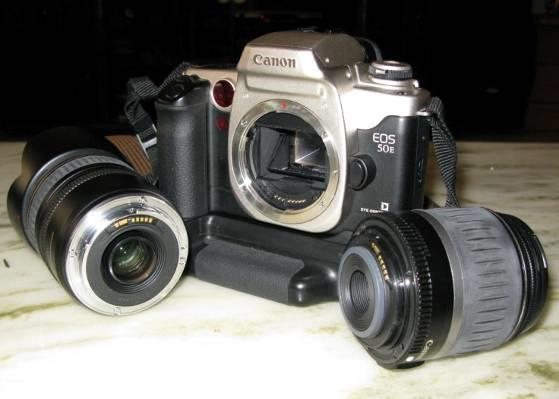
3.1.6 产品整合设计
综合运用科技成果和工学、美学、心理学、经济学等知识，对产品功能、结构、形态及包装等整合优化。
- 整合升级 (顾客化产品)
- 整合创新 (技术推动型产品)
3.1.6.1 整合升级
- 研究和利用现有产品功能、结构和造型；
- 企业为降低成本、增加收入，利用已有产品资源，不做完全彻底改变即可产生新产品簇群的发展战略。
3.1.6.1.1 顾客化产品
对品种、规格、参数等基本标准调整, 改变产品参数(如尺寸、形态、材料、操控方式等)，得到新产品。
- 对顾客化产品所作设计属于变量设计又称改型设计, 在对顾客特殊定单做出反应基础上特别开发。
- 例子包括整体厨房、汽车配置、颜色要求、电池盒变化，适应不同人体参数、不同要求等。
3.1.6.2 整合创新
- 对产品功能、结构、造型系统认识和全新塑造
3.1.6.2.1 技术推动型产品开发
- 从技术研发开始开发新技术产品。
- 技术推动型产品研发科学家和技术专家核心工作。
3.2 产品标准化
3.2.1 标准化基本概念
科学、技术和实践经验的总结。制定、发布及实施标准过程，称为标准化 (中国国家标准：GB)。
- 标准化目的：最佳秩序和取得最佳效益。
- 标准化不是孤立事物，而是一种活动，包括制订、修订、贯彻和实施工作。
3.2.1.1 标准定义
注：标准宜以科学、技术综合成果为基础，以促进最佳共同效益为目的。
- GB/T200001-2002: 为在一定范围内获得最佳秩序，经协商一致制定并由公认机构批准，共同使用和重复使用一种规范性文件。
- GB/T200005: 为在一定范围内获得最佳秩序，对现实问题或潜在问题制定共同使用和重复使用条款活动(标准、技术规范、规程和法规等)。
- GB3935.1－83: 对重复性事物和概念所做统一规定。以科学、技术和实践经验综合成果为基础，经有关方面协商一致，由主管机构批准，以特定形式发布，作为共同遵守准则和依据。
3.2.1.2 标准术语
- 产品标准：对产品结构、规格、质量和检验方法所做技术规定, 可分别由国家、主管部门和企业制定。
- 规格：同一品种(型式)按尺寸、质量或有关参数划分类别 (如种类、形状、尺寸、构造、安装、质量、成分、性能、寿命及安全性等)
- (一项标准可包括数项规格，但规格不能机械地视为一项标准。)
- 型式、型号：型式指同一种产品按其形状、结构、特征不同所划分类别。型号则为用字母、数字等表示产品型式、规格一种符号。
- 技术规范：规定产品、过程或服务应满足技术要求。
- 规程：为设备、构件或产品设计、制造、安装、维护或使用而推荐的惯例或程序。
- 技术法规：将标准、技术规范或规程纳入法规，来规定技术要求。
3.2.1.3 标准化对象及其属性
对象: 产品、过程或服务 (材料、元件、设备、系统、接口、协议、程序、功能、方法或活动)
- 多样性: 某一事物有多种表现形态 (同一种产品有不同结构形式和尺寸规格)。
- 相关性: 事物内部各部分间及内部和外部相互关联、相互依存和相互制约关系。
- 重复: 同一事物反复多次出现性质。
3.2.1.4 常用标准
常见标准类别有基础标准、试验标准、产品标准、过程标准、服务标准、接口标准和数据待定标准。
- 标准类别相互关联。例：一个产品标准如果规定关于产品特性试验方法，则也可视作试验标准。
- 产品标准：产品应满足要求以确保其适用性，还可包括术语、抽样、测试、包装、标签和工艺等要求。
- 过程标准：过程应满足要求以确保其适用性。
- 服务标准：服务应满足要求以确保其适用性。
- 接口、界面标准：产品或系统在其相互连接部位与兼容性有关要求。
3.2.1.5 标准分类
- 按一般习惯：技术标难、管理标准和工作标准。
- 按作用范围：国际标准、区域标准、国家标准、地方标准和企业标准。
- 按标准在系统中作用：基础标准、一般标难。
- 按专业特征：71个专业标准
- 按对象作用：原材料(毛坯、半成品)、零部件、设计、工艺、设备维修、环境条件及产品和捡验标准。
- 按管理作用：技术管理、生产组织、经济管理、行政管理、管理业务和工作标准。
- 按标准特殊功能：安全标准、方法标准、包装标准、编码（编号、代号）标准等。
- 按标准法律属性: 强制执行标准、推荐性标准。
- 按标难保密性: 公开标准、内控标准。
3.2.1.6 标准化目的
品种控制、可用性、兼容性、互换性、健康安全、环保、产品防护、相互理解、经济效能、贸易等。
- 适用性：产品、过程或服务在具体条件下适合规定用途能力。
- 兼容性：诸多产品过程或服务一起使用，满足相应要求，彼此不引起不可接受的互相干扰的适应能力。
- 互换性：某产品、过程或服务代替另一产品、过程或服务并满足同样要求，包括功能互换和度量互换。
- 安全：免除不可接受损害风险状态。把损害人员和物品可避免风险消除到可接受程度。
- 环保：保护环境使之免受由产品、过程或服务影响和作用造成不可接受的损害。
3.2.1.7 标准本质特征
统一 (绝对统一或限定一个范围、规定几种情况)
- 不同级别标准在不同范围内统一
- 不同类型标准，从不同角度、不同侧面统一
3.2.2 标准化的产生与发展
3.2.2.1 商品生产和交换需产生各种生产和计量标准
《武经总要》、《营造法式》、《天工开物》、《本草纲目》等记载有大量农业、建筑、矿冶、铸造、纺织、食品、造纸、印刷、医药等有关标准化知识和规定。
3.2.2.2 近代，标准化成为提高劳动生产率重要手段
- 一战前后，福特各车型简化为T型，用流水线，成本1910年800元降到1917年500元，占世界市场50%。
- 1970s，日本打破美国汽车市场垄断，原因之一是日本汽车生产标准化程度达90%，而美国为70%。
3.2.2.3 当今，标准化促进国际间经济技术分工和协作
- 跨国公司，在世界上逐渐成为重要生产组织形式。
- 为保证国际间专业化生产和经营，标准化成为生产社会化和国际化重要基础。
3.2.3 标准化意义和作用
- 提高生活质量
- 提高运行效率
- 促进合作交流
3.2.3.1 提高生活质量
- 合理制定产品品种规格以满足社会上不同层次需求;
- 在商品交换和服务方面能保护消费者合法利益和社会公共利益;
- 能保障人类安全、健康，创造舒适、宜人环境，有利于建立科学、文明、进步的生活方式;
3.2.3.2 提高运行效率
- 制订先进产品质量标准以提高产品质量;
- 在生产、流通、消费等方面全面节约人力、物力以降低成本;
3.2.3.3 促进合作交流
- 防止贸易壁垒，并促进技术合作。
- 促进相互间理解、交流，提高信息传递效率;
- 促进国际间生产协作、技术交流和贸易等。
3.2.4 标准化的方式
标准化层次: 全球、区域、国家、地区、行业、部门、地方、协会、企业、车间、业务室
- 标准化方式: 简化、统一化、系列化、通用化、组合化
3.2.4.1 简化
目的：对一定范围内产品品种缩减，防止不必要的多样化，降低成本，提高生产率，增加竞争力。
- 品种规格合理简化，可减少设计错误，提高水平;
- 减少工作量可缩短设计周期，或可集中力量改进产品和开发新产品;
- 品种规格简化后也易设计管理。
3.2.4.1.1 简化原则
- 简化要适度，过分简化造成使用不便。
- 简化注意时机。过早简化，因时机不成熟有害技术发展，过迟造成不易改换混乱局面。
- 简化结果应保证消费需求和利益不受损害，并适应未来增长需求。
- 参数形成系列(可从优先数列中选取 GBMT321-2005)。
3.2.4.2 统一化
把多种规格合并为一种，使产品在使用中可互换。
- 实质: 使对象形式、功能、技术特征、程序和方法等一致，并用标准确定，消除混乱，建立秩序。
- 绝对: 图形符号、代码、编号、标志、名称、单位、运动方向 (开关转换，电机轴旋转，交通信号指示);
- 相对: 对质量要求统一化，但具体质量指标又有灵活性 (如分级规定，指标上、下限，公差范围等)。
3.2.4.2.1 统一和简化的关系
- 统一含简化意义(都减少不必要多样性) ，
- 简化着重在减少和精炼，
- 统一化则强调一致性和统一性，统一更高度简化。
3.2.4.3 系列化
将同一品种(形式)规格按最佳数列排列，以尽量少品种数满足最广泛需要。
- 作用: 1)简化品种，零部件通用;2)扩大生产，便于新技术、材料和工艺;3)提高生产效率，降低成本。
- 内容: 制定产品基本参数系列、编制产品系列型谱、系列设计

3.2.4.3.1 制定产品基本参数系列
- 性能参数: 基本技术特性参数，如载荷、功率、转速、压力等
- 几何参数: 重要几何尺寸参数。
- 既满足当前需要，又考虑长远发展。
- 同类产品和配套产品协调。
- 有合理分档密度，尽量选用优先数(系)。
优先数系是由公比分别为10的5、10、20、40、80次方根，且项值中含有10的整数幂的理论等比数列导出的一组近似等比的数列。
- R5系列：1.00 1.60 2.50 4.00 6.30 10.00
- R10系列：1.00 1.25 1.60 2.00 2.50 3.15 4.00 5.00 6.30 8.00 10.00
- R20系列：1.00 1.12 1.25 1.40 1.60 1.80 2.00 2.24 2.50 2.80 3.15 3.55 4.00 4.50 5.00 5.60 6.30 7.10 8.00 9.00 10.00
- 1) 选择产品主参数(1~2个)。如电机功率、车床最大加工直径和长度。
- 2) 确定主参数上、下限值。
- 3) 在上、下限间合理分档，形成系列方案，同时满足功能目标和经济目标，选出最佳系列。
- 4) 主参数按一定规律分档、分级后，形成有规律数列，又会导致有关参数分级，此即形成参数系列。

3.2.4.3.2 编制产品系列型谱
用图表形式把基本型系列和派生系列间关系表达出来, 作为产品系列设计和远景规划依据。
- 确定产品系列后，用技术经济比较法，从系列中选出最先进、合理的产品结构，作为基本型。
- 在此基础上派生出各种换型产品。
- 例:工作面宽200~630mm万能工具铣床系列型谱：基本型、精密型、程序控制型和数字控制型。
3.2.4.3.3 系列设计
根据系列型谱，在基本型产品基础上运用结构典型化、零部件标准化、通用化等方法进行系列设计。
- 尽量做到仅增加少数专用件就可发展一个变型产品或变型系列，使变型和基本型产品最大限度通用。
- 对现有产品分析比较，选出较好的作为基础，按系列中空白规格补充以形成系列。
- 根据现有产品资料，分析比较，综合优点，按需设计新产品系列。
主参数系列、尺寸系列、材料系列、色彩系列、价格系列、包装系列、形态系列等。
3.2.4.4 通用化
在互换性基础上，尽可能扩大同一对象 (包括产品零件、部件、构件等) 使用范围。
3.2.4.4.1 互换性包括尺寸互换性和功能互换性
- 尺寸互换性: 各工厂零部件与其它产品间连接尺寸、连接部分运动速度和方向一致性。
- 功能互换性: 使用功能彼此等效性，零部件构件在实用方面有相同功能。
3.2.4.4.2 目的
- 最大限度减少零部件在设计和制造过程中重复劳动。
- 对组织专业化生产和提高经济效益有明显作用。
3.2.4.4.3 通用化一般方法
分析产品基型系列和变型系列中零部件，找出有共性零部件定为通用件。
- 设计新品时，尽量采用已有通用件; 新设计零部件时，考虑能为以后产品采用，逐步发展为通用件。
- 对现有产品整顿，根据生产、使用和维修情况，将可通用零部件经过分析、试验达到通用化。
3.2.4.5 组合化 (积木)
通用零部件作为组合单元，利用其功能或几何互换性，再设计一些专用零部件，组成新产品。
3.2.4.5.1 组合单元设计程序
- 确定其应用范围;
- 编制组合型谱 (由一定数量组合单元组成新产品各种可能形式);
- 设计组合单元零部件，并制订相应标准。
3.2.4.5.2 组合方式 (按组合尺寸选择不同)
- 一般组合
- 模数化组合
设C为组合尺寸, A、B为单元尺寸，则C=A+B。
- 其中A、B需符合系列化要求，尽量用优先数。而两个优选数之和C不一定是优先数。
对C=A+B，其中C、A、B均有模数系列化要求，均应选标准模数系列。
- 模数(module): 产品长度基数、宽度基数和高度基数的最大公约数，系统 (建筑、设备或制品) 设计、计算和布局中普遍重复应用。
对电工、电子设备插箱面板、搬件面板、架和柜尺寸系列规定:
- 揪箱面板宽度系列尺寸: 240，360， (420)，480， (540) ，600。
- 插箱面板高度H，当基本模数 Ma=20 时其扩大模数系列。
- 搬件面板、架和柜尺寸系列详见GB3047.1一82中规定 (表:扩大模数系列)
3.2.5 产品系统设计与标准化
3.2.5.1 产品系统设计与标准化相互促进
- 标准化要求各部件或某些种类产品间建立联系，实现零、部件可互换,主要出自制造需要
- 例: 电加热管标准件采用统一标准。
3.2.5.2 系统设计是一种方式设计
系统设计遵循标准化原则，但主要一种方式设计。
- 使消费者获得选择、安排或发展一种使用方式自由，
- 甚至鼓励使用者按自己意愿来重新设计产品组合形式。
3.2.5.3 构造产品制造单元零部件
- 标准件: 标准化零件。
- 连接件: 在大多数产品中有共性，各种机器、设备、产品都要用到。
- 标准化对产品(或零件)类型、性能、规格、质量、原材料、工艺装备和检验方法等作出规定，并实施。
3.2.6 产品标准化工作内容
- 简化品种，防止不必要多样化，降低成本。以尽量少品种数目满足最广泛需。
- 统一图形符号、代码、编号、标志、名称、单位、运动方向(开关转换，电机轴旋转，交通信号指示)；
- 使产品形式、功能、技术特征、程序和方法等有一致性，并用标准确定下来，消除混乱，建立秩序。
3.2.6.1 调研、搜集目标产品已有技术、标准、规范
目标包括专利、商标等，搜集相关信息和各种资料。需调研技术标准如下：
- 国家标准、专业标准和企业标准等有关涉及原材料(毛坯、半成品)标准；
- 零、部件标准；设计标准；工艺标准；
- 工艺装备设备维修标准；自制设备及设备维修标准；
- 环境条件标准及产品标准和捡验标准。
- 安全标准；方法标准；包装标准；编码（编号、代号）标准等。
3.2.6.2 产品技术平台整理
- 测绘、拆卸产品，研究产品基准。
- 确定产品系列，用技术经济比较法，选出最先进、合理的结构作为基本型，开发各种换型产品。
3.2.6.2.1 调用和测绘基本型产品标准件与通用模块
- 能满足基本型产品结构直接采用，或做局部调整。如汽车设计要利用已有底盘和发动机，吸油烟机要利用已有专业风机(电机、风轮、涡壳)。
- 将不能满足基本型产品部分作为产品开发主要设计工作展开概念与方案设计。
3.2.6.3 企业中产品设计标准化工作
- 收集国内外同类产品、零部件有关标准，并作出水平分析。
- 提出产品标准化综合要求
- 对产品图样和技术文件标准化审查。
- 审查产品图样和设计文件代号。
- 为提高产品和服务质量，应制定产品销售和使用标准，
- 有关法规、法令和制度。
3.2.6.4 产品标准化综合要求
- 产品设计应符合产品系列标准和其它现行标准要求、对原材料、元器件标准化要求；
- 工艺装备标准化和通用化程度；
- 产品预期达到标准化程度;结构要素标准化和通用化程度；
- 与国内外同类产品标准化水平对比，提出产品标准化最佳要求；
- 预测标准化经济效果。
3.2.7 产品设计标准化注意事项
- 消费者利益标准化工作顺序
- 标志、图形符号标准
- 人机工程学标准
- 进出口商品标准
3.2.7.1 消费者利益标准化工作顺序
国际标准化组织制定：
- 健康与安全第一
- 环境保护;
- 适用性;
- 节省资源;
- 互换性和接口;
- 提供信息。
3.2.7.2 标志、图形符号标准
简明、直观、易懂、易记
- 总则、箭头、技术文件用图形符号
- 设备用图形符号
- 公共信息图形符号
- 安全标志、安全色、城市交通标志等。
3.2.7.3 人机工程学标准
人-机-环境系统，从解剖学、生理学和心理学等研究高效、健康、安全和和舒适等。
- ISO设有人类工效学标准化委员会(ISOMTC159)
- 我国1990年底已制定标准20个 (中国成年人体尺寸、人体测量方法、仪器、环境、照明等)。
3.2.7.4 进出口商品标准
为消除或减轻国际贸易技术壁垒，要特别注意出口标准化选择。
- 参考进口国标准组织生产，势必增加成本，降低效益 (No);
- 坚持本国标准生产，可能降低出口商品竞争力 (No)。
- 优先采用国际标准(包括特定市场标准和世界通行标准)，在国际市场中赢得地位 (Yes)。
- 例: 多数国家电工产品在签合同时以IEC(国际电工委员会)标准为基础。

3.2.8 产品规格说明
- 规格制定
- 何时建立规格说明
- 建立目标规格说明过程
- 收集产品性能参数规格
- 确定产品设计理想目标值
- 审视并修正目标
3.2.8.1 规格制定
规格由数值和度量标准组成，是设计和管理产品的依据。以吸油烟机为例
- 尺寸(mm)：长750×宽550×高450；
- 功率：258W；
- 出口：160；
- 净重：30kg；
- 静压：>260pa；
- 噪音：<40dB；
- 气流：>16m3/min；
- 电机：双电机；
- 电源: 220V-/50HZ；
3.2.8.2 何时建立规格说明
- 在开发过程早期一次。
- 高技术产品至少两次说明。
- 在选择产品概念后，须修正目标规格说明。
3.2.8.3 建立目标规格说明过程
目标规格在识别顾客需后，在形成产品概念并选中一个有前景产品概念之前建立。
- 准备度量标准清单，在必要时，使用需—度量标准矩阵。
- 收集竞争基准信息。
- 为每个度量标准设置理想目标值和勉强接受目标值。
- 审视目标规格。
3.2.8.4 收集产品性能参数规格
将竞争性产品信息收集在一起。
- 有时，竞争者目录和支持文献中包含数据不正确, 应用独立测试或观察对关键度量标准值核实。
- 例：2011年一汽大众迈腾与东风雪铁龙C5参数对比
3.2.8.5 确定产品设计理想目标值
两种目标：理想目标 (开发小组期望最好结果)、勉强可接受目标 (刚好能使产品有商业可行性)。
- 用处: 指导概念生成和概念选择后续阶段，并在选定产品概念后精确确定规格。
- 为给度量标准设置目标值，开发小组要对可利用信息综合。
3.2.8.5.1 表达度量标准值s的方法
- s >= x (度量标准下限值)
- s <= y (度量标准上限值)
- x <= s <= y (度量标准下限值和上限值)
- s = x (某个度量标准特定值，如实际值和该值偏离，系统性能会下降)
- 一组离散值
3.2.8.5.2 为设置目标值，开发小组需多方面考虑
- 现在可用竞争性产品性能
- 竞争者未来产品性能
- 产品任务语句和目标市场部分
3.2.8.5.3 开发小组希望产品能符合一些理想值
- 中级乘用车（三厢）目标规格(设计基本技术性能参数)
3.2.8.6 审视并修正目标
开发小组需反复确定目标。要考虑问题：
- 小组所有成员都同意吗?
- 为与多市场区域特殊需求匹配，是否开发多种产品或型号？
- 规格有丢失吗，反馈有助于商业成功吗?
3.2.8.6.1 开发小组需权衡修正规格说明
- 过程可通过小组会议完成。
- 在会议上，使用技术模型确定可行组合值，接着设计成本应用程序。
- 将精力集中于: 受欢迎的产品，最大程度满足顾客需要，确保足够利润。
3.3 产品模块化
3.3.1 模块化基本概念
- 秦砖汉瓦、活字印刷
- 现代模块化技术(二战后): 1964年，IBM360计算机创造性地采用"模块化"原理
- 通过"模块化分解"和"模块化集成"实现全球PC厂商分工整合，大大加速电脑技术创新和产品升级
3.3.1.1 模块定义
- 模块: 由若干完成产品相应功能零件组成的组件(介于标准件与产品平台之间)。
- 模块相对独立有互换性部件，构成系统功能单元。
- 例: 自行车或摩托车避振器
- 计算机模块：机箱、显示器、主板、CPU、硬盘、显卡、内存、电源、键盘、鼠标等。
3.3.1.2 模块化分类
- 功能模块: 功能划分，然后将各子功能用形式关系表达。
- 制造模块: 考虑加工制作技术环节，形成装配模块。
3.3.1.2.1 功能模块
功能模块可分为基本模块(主要功能)和附属模块(附属功能)
- 有特定作用的特殊模块和根据用户要求完成的附加功能模块
- 形式：悬挂式、负载式、拼接式、混合式和可调整整合构造模块。
以某个基础设备部件为构造单元，通过与其它不同部件连接执行不同任务。
- 同一模块出现在系列化产品中，每件产品均采用一致接口，模块承担一种功能。
- 形式：电池、发动机、电动机。

某一设备(产品主体)利用自身提供标准接口同时接纳多个不同功能模块任意组合, 完成相应功能。
- 模块提供标准接口，用来与母体设备插口相连(计算机主板上内存扩展插槽)。
几个模块通过边界或接触部分互相连接，各模块通过同一界面表现。
- 各模块有自身不同功能，经过拼合后整体不影响各模块功能发挥。
- 各部件可能有不止一个界面。
- 例：办公家具
各标准部件组合成网络状交织结构，
- 每一模块须提供多个连接点, 不同于拼接式模块线性连接。
- 例：一系列标准部件有风机设备、照明装置、按钮结构、滤网结构等组合构造出各式吸油烟机。
- 提供几种(固定)模块，购买之前选择确定(功能单一，成本低，价格低)；
- 提供功能可变的一种模块，购买后选择使用(多功能，成本高，价格高)；
- 例：可变模块, 用户可自由调整汽车座椅位置(结构可变，提供调节装置)。
3.3.1.2.2 制造模块
在功能模块基础上，根据生产条件，确定生产模块(加工装配单元)。
- OEM模块
- 装配模块
- 规格模块
- 组件模块
计算机电源设备, 可随处非常方便地购买和获取
一组功能相关部件为便于装配而做捆绑处理
性质内容完全相同，只是物理尺寸和形体规格有区别(用于同类产品或相同操作程序)。
以部件作为基本模块(吸尘器吸管、电话听筒、电脑键盘)
- 组件模块可使部件有不同功能，有时比更换部件更灵活。
- 如，吸尘器吸管部件(包括软管和硬管)，更换不同吸头组件，产生不同吸附功能
- 将零件作为生产模块灵活性更大，通过各种零件组合，可变换多种型号产品。
3.3.1.3 模块化特点
- 独立性: 模块内部元素或零件除通过接口，一般不与外界发生联系。
- 抽象性: 作为有特定功能黑盒子调用，在正常物理量与信息量输入情况下，按其功能输出物理量和信息量，满足系统所需外部特性。
- 互换性(通用化): 结构形式、功能和名义参数完全相同零部件可在不经或很少修整情况下相互更换，使系统功能及性能保持不变。
- 灵活性: 可不从属某个系统，只要任何一个需某项功能系统能够兼容。(搭配焦距不同镜头)
3.3.2 模块规划
对模块化设计三要素：功能参数、结构尺寸、连接关系提前布局，将功能参数落实到产品系列化中，制订出模块发展系列型谱。
- 开放式模块系统: 由尺寸不同模块组成标准度量系统。
- 封闭式模块系统: 由一定种类模块组成有限数组合。
- 模块化产品通常有标准模块产品和自定义模块
3.3.3 模块化设计
设计出多种模块，经过不同组合(积木化)构成不同产品，解决品种、规格和设计制造周期、成本间矛盾。
- 模块选用(现有模块): 据用户要求对模块选择和组合，加以设计计算和校核计算(如标准接口功能模块)。
- 模块开发(新模块): 在产品内部划功能分区，将功能分区设计成便于互换模块，或系列模块化。
3.3.3.1 模块化设计原则
- 组合性: 结合面合理精确, 可靠、易装、易拆、易换, 有时需标准化
- 适应性：结构与外形适应，与不同产品组合时，保持形式和视觉协调。
- 系列构成合理性：由市场、技术、经济可行性分析确定产品系列构成型谱。
3.3.3.2 模块化设计特点（较一般产品设计）
突出表现三要素：功能参数、结构尺寸、连接关系。
- 有特定功能
- 尺寸、功能参数模数化
- 有连接要素
3.3.4 模块化设计流程
- 前提须注意市场对同类产品需求量。
- 合理确定模块化设计所覆盖产品种类和规格, 过高过宽造成浪费，过低过窄不能满足要求。
- 合理确定尺寸、运动和动力参数（功率、转矩、电压等），参数数值在一定范围内分布。
- 以用户需求为出发点分析各物质、能量、信息交换过程，并对并行功能链和顺序功能链结构做出区分。
- 考虑模块空间关系 (方块大小反映模块预计物理尺寸) -> 据消费需求或使用环境对布局尺寸标注。
- 据布局图找到相应模块。
- 验证模块可行性。
- 模块结构设计、造型及系统优化设计，形成模块库。
3.3.5 模块化设计方式
- 横系列产品模块化设计
- 纵系列产品模块化设计
- 多系列产品模块化设计
3.3.5.1 横系列产品模块化设计
功能差异较大
- 不改变产品主参数，利用模块发展变形产品。
- 在基型品种上更换或添加模块，形成变形品种。易实现，应用广。
3.3.5.2 纵系列产品模块化设计
功能差异不大而性能尺寸有变化
- 在更换模块同时改变结构尺寸，在同一类型中对不同规格基型产品设计。
- 主参数不同，动力参数也往往不同，导致结构形式和尺寸不同，较横系列模块化设计复杂。
- 在与动力参数有关模块设计时，合理划分区段，只在同一区段内模块通用；而与动力或尺寸无关模块，则可在更大范围内通用。

3.3.5.3 多系列产品模块化设计
包括纵系列、横系列和跨系列模块化设计。
- 例: 德国某厂生产工具铣
- 可改变为立铣头、卧铣头、转塔铣头等形成横系列产品
- 可改变床身、横梁高度和长度，得到三种纵系列产品
3.3.6 模块标准化接口问题
模块化设计依赖模块组合，即联接或啮合，又称接口。
- 为保证不同功能模块组合和相同功能模块互换，模块应有可组合性和可互换性。
- 这两个特征主要体现在接口上，须提高标准化、通用化、规格化程度。
3.3.7 布劳恩袖珍电唱收音机模块化设计
布劳恩公司通过模块化设计使标准化生产和多样化选择结合起来,以满足不同需求。
- 1959年布劳恩推出袖珍电唱收音机组合。其中电唱机和收音机可分可合标准件。
- 1980年生产高保真音响系统，都具备模块化特征(功能和结构)。
3.4 产品平台化
3.4.1 平台化基本概念
一组产品共享零部件集合，在产品开发过程中确定一个基准，用于开发组装多种功能各异系列产品。
- 同一套整车开发技术(汽车底盘+发动机+变速系统)应用于组装多种不同功能、款式车型。
- 德国大众最早提出并使用平台战略(两厢、三厢或MPV共用同一底盘)
3.4.1.1 一汽奔腾与马自达共享平台
- 底盘、变速箱、发动机一样，但看得见地方都不一样，两车用户群几乎没有重叠
- 因此, 外形像与不像并不是判定是否共享相同平台依据
3.4.2 平台化作用
- 提高零部件通用化程度，实现零部件最大共享，以实现更大规模生产。
- 缩短开发周期，降低开发成本，实现产品多样性。
- 例: 相机机身用于光学相机和数码相机，并可配合不同镜头。
3.4.3 产品平台规划
在差异性和共同性间权衡。
- 差异性设计: 提供一个产品不同类型带来市场效益；
- 共同性设计: 扩大不同产品共享组件程度带来设计和制造效益。
3.4.4 产品平台构造
- 平台构造原理
- 平台构造类型
- 平台构造方法
- 平台构造步骤
3.4.4.1 产品平台构造原理
两个以上关联产品共享最大化

3.4.4.2 产品平台构造类型
要选择产品平台，应先寻找哪些方面共同，而哪些方面只被单个体独立实现。
- 一组产品共享设计与零部件集合(模块载体)可联结其它不同模块和零部件(自行车车架，汽车车身)
- 一组产品共用子系统及子系统间关系组成构架集合(共享模块集合)可置于不同产品(计算机主板)
- 某基型产品(主体部分)可附加变化辅助部分(单反相机机身)
- 某一个或几个核心部件，即承载核心部件载体(汽车底盘)
3.4.4.3 产品平台构造方法
- 拆卸法：去除可变部分和互换部件，尽可能大地保留基础部分，或难变部分。
- 装配法：产品装配基础部分，或用于承载其它零件、部件主体部分。
3.4.4.4 产品平台构造步骤
- 将关联产品群作为构造产品平台集合，匹配产品需求类型、功能结构及特性。
- 选择关联产品群中两个以上典型产品个体作为交叉样本
- 比较判断关联产品群中可变产品要素(特征)与不变产品要素(特征)
- 将不变要素集合作为关联产品群平台预选
- 对预选产品平台调整整合为产品平台方案
- 检验产品平台方案(在其上开发出产品系列检验平台适应性)
3.4.5 产品平台整合
将若干零部件通过某种方式彼此衔接集成超大共用模块。
- 例: 把二级缓存植入处理器
- 例: 集成显卡、声卡、网卡等
3.4.6 产品平台变体
平台选定后，派生产品 (变型产品) 类型如下
- 降低成本派生产品
- 生产线扩充产品
- 增强型产品
3.4.7 产品平台升级
- 可升级模块化平台: 系列产品没有共同组件，但除大小以外都相同
- 例: 每个引擎有相同系统，为达不同推力，在大小和材料方面不同。
3.4.8 平台型产品开发
- 围绕已有技术子系统建立, 改造现有系统或增加较为重要子系统(如汽车防抱死系统)。
- 围绕平台型产品所作设计属改良设计，也称综合设计。
- 例: 轿车底盘、新型发动机、计算机主板、单反相机机身等。
3.5 产品系列化
3.5.1 系列化基本概念
通过对同一类产品发展规律分析，预测发展趋势，结合企业自身条件，经技术经济比较，将产品主要参数、型式、尺寸、基本结构等作出合理安排与规划。
- 特别将同种规格按最佳数列排列，以尽量少品种数满足最广泛需求，形成品种和规格标准系列化。
3.5.2 产品系列化作用
- 有效满足相似或个性需求。
- 根据系列化规划，简化品种，提高零部件通用化程度；
- 使生产批量相对增大，快速满足相同功能产品多种需要，便于采用新技术、新材料、新工艺；
- 提高产品开发效率，提高劳动生产率，降低成本。
3.5.3 产品系列化特性
- 关联性：功能间有因果关系和依存关系 (冰箱系列，洗衣机系列，灶具系列)。
- 独立性：某个功能可独立发挥作用 (手工维修工具中扳手系列，互相不可取代)。
- 组合性：不同功能相匹配，产生更强功能 (西服套装)。
- 互换性：功能可互换 (不同款式电热水壶。冰箱坏了，可换不同规格冰箱)。
3.5.4 产品系列化类型
- 规格系列
- 成套系列
- 组合系列
- 家族系列
3.5.4.1 规格系列
功能相同，造型相同，不同规格、型号产品组成系列。
- 如同一款式不同规格型号旅游鞋。
- 如相同功能、款式造型扳手、套管、钻头、榔头、钉锤、斧头、镐头系列。
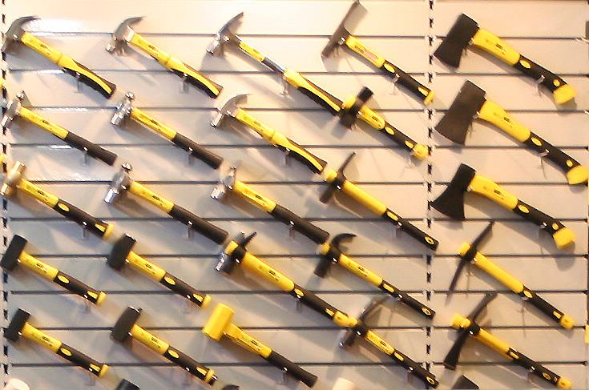
3.5.4.2 成套系列
- (1) 功能相似，造型配套同类产品组成系列。
- (2) 产品局部改变或模块更换形成系列。
- 尽管功能相似，各个单件使用频度不尽相同。但组合在一起可提高产品适应性，也可满足特定需要。
- 因为充分体现成套意识，可增加商机。同时，成套产品整齐美观，有良好视觉效果。
3.5.4.3 组合系列
功能不同，造型配套，不同规格、不同型号同组产品组成系列。
- 使用角度，体现功能协同可靠性
- 商品角度，体现品牌效应
- 例: 茶壶、电水壶和托盘组成一个完整组合系列。
- 例: 厨房用品铲、勺、漏组成一个完整组合系列。
3.5.4.4 家族系列
功能、造型均有差异同族产品组成。
- 产品间有通用部分和专用部分。通用部分反映家族特征。
- 例：美电水壶家族系列产品
3.5.4.5 家族系列与其它系列关系
- 有组合系列特点，即由独立功能产品构成系列。
- 但不一定要求可互换，产品往往同样功能，但形态、规格、色彩、材质不同，这与成套系列产品类似。
- 家族系列产品间存在功能相关性，且形式也相关; 更具选择性、商业价值和品牌效应。
- 例: 大牌企业把两厢、三箱、跑车、商务通MPV、越野SUV等作为家族系列同时开发，并不断更新换代。
3.5.5 产品系列化设计方法
- 规格型号变化法：通过规格型号变化得到系列产品。
- 组合配套变型法：功能与结构组合配套扩大产品适应范围，满足更多需要。
3.5.5.1 规格型号变化法
- 制定产品基本参数规格系列标准
- 编制系列型谱
- 开展系列设计
3.5.5.2 组合配套变型法
- 组合设计
- 变换设计
3.5.5.2.1 组合系列设计
- 多功能组合
- 要素组合（纵向）
- 配套组合（横向）
- 强制组合
- 趣味组合
- 在单件产品设计中，将多种功能部分组合到一个产品中 (多功能产品)。
- 系列产品功能组合，将不同功能产品组成系列，主题一致，使用可选。
多个要素在某个目标下系列组合。
- 功能、用途、结构、原理、形状、规格、材料等要素
- 如将功放机和音箱组合成套形成组合音响
将不同、独立产品作为构成系列要素组合。
- 目的：成套意识带来品牌效应，有助于商业上特定服务目标实现。
- 茶具系列将茶壶和茶杯产品作为构成系列要素组合。
将功能、品种不同产品组合，形成单件或系列，有整体目的性和相关性。
- 不同功能产品，为同一目标组合在一起，发挥综合作用 (或出于商业需要)。
- 要素统一：形式(放置、包装方法)、形态(造型、风格)、色彩、某部件(可互换)
- 例: 电熨斗、吹风、针线包、指甲钳、梳子等构成旅游产品系列(便携、适应不同环境)。
- 借用人们希望、爱好、祝愿、友谊、幽默、时尚追求等；通过形象化造型或附加造型，组合到系列产品中，构成趣味性产品系列。
- 可成套化，也可强制性，
- 组合目的增加卖点。
3.5.5.2.2 变换系列设计
改变产品要素，如局部结构、造型改变或模块更换
- 变型产品。目的: 增强功能，提高性能、降低成本等。
- 适应性强: 受市场机制影响，以多变形式适应不同层面需求。
- 快速反应: 针对市场需求快速推出提升功能换代产品。
- 低成本: 变换或模块化某(些)部分，省略重复和共用，降低设计生产成本。
- 通用性：产品部件或单元甚至模块应达到可置换要求。
- 标准化：为实现互换建立标准，保证质量，缩短开发周期，利用维修、降低成本。
- 系列化：在基型产品基础上要素变换(纵向、横向、多向或相似变换)
提高设计生产效率。
- 纵向变换设计
- 横向变换设计
- 多向变换设计
- 相似变换设计
通过一组功能相同、属性相同、结构相同或相近，而尺寸规格及性能参数不同产品系列设计
在产品基本型态上功能扩展，派生出多种相同类型产品(如，在普通自行车基础上派生出变速车、赛车、山地车、学生车等)。
- 充分考虑通用部件。
- 考虑可互换部件位置，留出使用余地。
- 考虑接合部位合理性。
以同性能或通用部件构成不同类型产品，并选择产品某些要素，采用增减、置换、重组、颠倒等变换方法多角度、多层次、多途径变换设计。
- 多向系列产品一种跨系列产品族，形成家族系列
- 不一定形式上系列感，而技术和原理上共性，有时通过通用件或模块来实现。
是纵向变换的另一方式，在功能属性、结构等相同条件下，将形态尺寸、性能参数按一定比例关系变换设计。
- 首先确定基本形态，在此基础上几何计算、作图或经验推导，寻求最优。
- 机电产品应严格按相似理论设定相似条件(不仅形态相似，且性能原理参数也按一定公比变换)。
- 一般产品仅形态上相似变换。
据具体情况确定形态相似类型 (完全相似、不完全相似)。
- 完全相似：产品几何形态完全按固定比例变换。
- 不完全相似：产品某些部位受功能、使用限制，无论形态如何变，该部件不变(如开关)。
3.5.6 产品系列化设计流程
3.5.6.1 系列设计计划
主参数、尺寸、材料、色彩、价格、包装和形态系列等计划。
3.5.6.2 系列设计程序
据参数标准，系列型谱和使用要求，选择基型，对基型产品技术、造型和工艺设计。
- 横向扩展：设计全系列各种规格。
- 纵向扩展：设计变型系列或组合系列。
3.5.6.3 系列设计注意事项
- 选好基型，搞好基型设计。
- 基型设计,应在国内外同类产品选优基础上。
- 通用化。主参数相同产品，以基型为主，实现最大限度通用化。
- 在设计基型产品基础上设计基型系列各种规格。
- 纵系列中不同规格外形尺寸，重量均有相当差别，在同一通用组中，构件外形风格应尽可能一致。
- 设计变型系列或变型产品时，应利用组合化，模块化设计思想，达到变型和基型产品最大限度通用。
- 分析产品结构，对有共性零件，通用化处理。
3.5.7 制订产品参数系列
3.5.7.1 基本参数及意义
- 纵向变换系列设计和相似变换系列设计都需将其形态尺寸、性能参数按一定比例关系变换。
- 如何确定基本参数、选择变换参数系列，需在系列产品开发早期制订产品参数系列。
3.5.7.1.1 基本参数
产品基本性能或基本技术特征标志
- 选择或确定产品功能范围、规格尺寸基本依据。
- 产品基本参数及其特性可分为性能参数、几何尺寸参数
3.5.7.1.2 确定产品基本参数系列意义
- 由基本参数构成基本参数系列，指导企业发展品种，指导用户选用产品基本依据。
- 基本参数系列确定否合理，关系到该产品与相关产品间配套协调，在很大程度上影响企业经济效益。
- 基本参数系列产品系列化首要环节,也编制系列型谱、系列设计基础。
3.5.7.2 制订产品参数系列步骤和方法
3.5.7.2.1 选择主要(基本)参数
各项参数中起主导作用参数选择原则如下:
- 应能反映产品基本特性(如电动机功率)。
- 应产品中最稳定参数（如机床床身上工件最大回转直径)。
- 应从方便使用出发、优先选性能参数，其次选几何尺寸参数。
主参数数目一般只选一个，最多两个。如电机功率、车床最大加工直径和长度。
3.5.7.2.2 列出参数方程
一般机械主要参数和基本参数、及各基本参数间有密切联系
- 应通过技术分析列出参数间函数关系式，
- 没有函数关系而有统计相关函数，可列出回归方程。
3.5.7.2.3 确定主参数上、下限值
- 确定参数系列最大、最小值。
- 这个数值范围确定，—般经过对国内外用户近期和长远需情况、生产情况、质量水平、及同类产品生产和使用情况做周密分析来确定。
3.5.7.2.4 有关参数分级
- 主参数按一定规律分档、分级后，形成有规律数列，
- 又会导致有关参数分级，形成参数系列。
3.5.7.2.5 合理分档形成规格系列
在大小规格上、下限间合理分档，以形成系列方案，同时满足功能目标和经济目标，选出最佳系列。
- 整个系列安排多少档，档与栏间选用怎样公比等, 除调查、分析足够统计资料外，应提出多个可行方案。
- 然后运用统计资料技术经济比较，从中选择最优方案。
3.5.7.2.6 在选择参数系列时应注意原则
- 既满足当前大多数产品需，又考虑到长远产品发展战略。
- 要考虑同类产品和配套产品协调。
- 要有合理分档密度，并尽量选用优先数和优先数系。
- 要以人机工程学要求为标准，做到高效、舒适、健康、安全。
3.5.7.3 优先数系
3.5.7.3.1 优先数系概念
国际上统一数值分级制度，一种无量纲分级数系，适用于各种量值分级。
- 在确定产品参数或参数系列时，应最大限度采用。
- 产品(或零件)主要参数(或主要尺寸)按优先数系形成系列，可使产品(或零件)走上系列化，标准化轨道。
- 用优先数系来系列设计，便于分析参数间关系，可减轻设计计算工作量。
3.5.7.3.2 优先数系应用
- 优先数系适用于能用数值麦示各种量值分级，例: 长度，直径，面积、体积，载荷，应力，速度，时间，功率，电流，电压、流量，浓度、传动比，公差，测量范围，测点间隔，比例系数等，
- 特别产品参数系列，凡取值有自由选择余地参数，均应最大限度选用优先数系。
3.5.7.4 模数制
有包容关系外件和内件间设计和布局中普遍应用一种基准尺寸。
- 组合模数记作m，组合尺寸最小基数，叠加组合，模数值选用取决于内件(组合单元)最小尺寸，制品尺寸应模数整倍数。
- 分割模数记作M，组合尺寸最大基数，分割组合，内件(或组合单元)尺寸应取M整数分割值。
模数制就在模数基础上所制订一套尺寸标准。选择优先数系、模数可参考《机械设计手册》标准化与互换性内容
3.5.8 编制产品系列型谱
3.5.8.1 系列型谱
- 企业根据市场发展需，依据对国内外同类产品生产状况分析，对基本参数系列所限定产品型式规划，把基型产品与变型产品关系及品种发展总趋势，用简明图表反映出来。
- 用以表示产品系列构成、相互关系及发展趋势。
3.5.8.2 产品发展总蓝图
- 设计新品种产品时，应有一个总体规划，系列型谱产品发展总蓝图，
- 根据产品参数系列、结构型式、基型产品与变型产品关系及其应有技术性能来拟定。
3.5.8.3 系列型谱形式和内容举例
OLYMPUS 4/3镜头系统作为一个完全为数码时代设计标准，最适合数码单反。
- 奥林巴斯计划推出多支镜头，图8.32所示为OLYMPUS4/3系统镜头系列型谱开发计划（2004）。
- 该型谱中纵向关系表示产品参数规格系列-镜头焦距大小分档，也可说产品规格参数。
- 由决定产品性能主参数系列确定。
- 表中每一纵列代表结构相似、参数大小不同产品系列。
- 该型谱中横关系表示产品结构形式-型号，即基型与变型(以基型产品为逐础派生出来产品)间关系。
- 表中每一纵列代表结构相似、主要参数不同基型和各种变型产品。
- 该型谱中50mm镜头为基型系列，余者为变型系列。
- 纵横交错构成每一空间网络，表示一个可发展品种。
- 有些型谱还将该产品发展方向、生产情况、设计试制状况、近期及远期重点等带方向性问题，用醒目的符号标志出来，以指导生产和设计。
3.5.8.4 编制系列型谱工作
- 分析国内外同类产品发展情况(包括产品布局和型式，产品性能和技术水平，产品品种发展情况，基本系列和变型系列)和发展趋势。
- 产品需情况分析。
- 产品及其部件通用化关系分析。
3.5.8.5 产品系列型谱内容
- 确定基本型。产品系列确定后，用技术经济比较方法，从系列中选出最先进合理、最有代表性产品结构，作为基型。按产品总体布局不同，分成几种型式，系列构成包括基型系列与变型系列。
- 在基本型基础上，通过规格和型号变化，派生出各种换型产品。
- 各系列用途、性能及结构特征等说明。产品品种表。根据产品主参数，系列构成和型式等编制出产品品种表(系列型谱) 。根据需可在表中标出按订货发展品种等特殊标记。
- 产品参数表。应包括主参数，基本参数和一般参数。一般参数指参数标准以外与产品结构有关尺寸与性能参数。
- 用图表形式把基本型系列和派生系列间关系表达出来，形成产品系列型谱。作为产品系列设计和远景规划依据。
3.6 作业三
- 选择一类标准化、模块化、平台化或系列化产品分析其整合方式和特点（可包括优缺点）；
- 在此基础上，对此类产品提出延伸方案、改进方案或借鉴此类产品完成新的整合（标准、模块、平台或系列）设计方案。
- 做成PPT，9月15日(周日)23:00前发送到anhongz@outlook.com
- 文件名: PSD3-标题-姓名
- 文件类型: 演示文稿或PDF文档
4 产品系统设计内部要素
4.1 功能要素
把产品与外部环境相互联系和作用过程的秩序、效用(用途)及表现出的能力(性能指标)称为产品功能。
- 产品是功能载体，用户购买产品所具备功能,在使用过程中可能会产生一些新功能 (如:把书当枕头)。
- 功能要素是系统诸要素中的核心要素，决定产品系统意义，回答是什么和用来做什么的问题。
- 功能是一个过程，产品内部固有能力外部体现。实现功能是产品设计最终目的。
4.1.1 功能思想
构成要素有其各自功能，发挥不同作用，相互联系、制约，实现设计对象总体功能。
- 消费需求
- 节能、环保、高效、安全、可持续发展要求
- 例: Ville购物车和自行车合二为一, 自行车折叠, 放下小轮子, 变成购物车。
4.1.1.1 功能思想特点
- 功能问题为主线;
- 克服思维定势和传统观念束缚,注重思维发散;
- 去除不必要功能,降低产品成本;
- 实用可靠;
- 把功能分解与造型单元构造结合;
- 突出系统化思想。
4.1.1.2 功能的系统观点：能量、物料和信号
功能：将输入能量、物料和信号有目的转换或变化后输出。
- 能量：机械能、热能、电能、光能、核能、化学能、生物能等;
- 物料：材料、毛坯、物件、气体、液体、颗粒、物体等;
- 信号：测量值、显示值、控制信号、通信、数据、情报等。
4.1.1.2.1 黑箱
只看输入和输出（电机－能量变换，车床－切削物料），不看内部变化。
- 黑箱到白箱：总功能分解为子功能，寻找相应技术途径。逐步明确内部构造。
4.1.1.3 功能系统
- 确定总功能：规划阶段确定任务书，描述设计对象，分析各项要求，明确目标。
- 总功能分解：多层分功能，功能分解程度以方便找到对应技术途径为准，不可过细。
- 子功能按逻辑关系连接以满足总要求，形成功能系统。
4.1.1.4 功能实现
根据专业知识和经验，利用技术资料 (手册、设计解法目录) 寻找各分功能多种实现途径。
- 根据约束条件判断、选择，不能盲目搜索。
- 各种技术途径组合可能很多，通过可行性、相容性及技术经济分析和经验判断，挑选方案并优化。
- 方案结构化、定量化和细化：一般到具体(原理到材料、形状和尺寸)，局部到整体(零部件组成产品)
4.1.2 功能论设计方法
从(抽象)功能描述出发,摆脱实体结构和材料特性束缚,利于设计出实现该功能新结构、材料和工艺。
- 功能系统：软件，通过使用体现设计者和用户所追求目标。
- 结构系统：硬件，反映设计对象的构成元素和构成形式。
- 功能出发：系统和价值工程为基础，着重软件，通过功能系统分析，找出技术途径，不同途径组合。
- 结构出发：集中在结构合理和可行性上，着重硬件，所设计出的产品往往功能受限。
4.1.2.1 要素与系统
- 问题：构成因素越多，功能数目越大，功能间相互联系越复杂。
- 解决：功能论方法. 按功能逻辑而不按结构去完成功能技术矩阵，发现和消除不必要功能，弄清功能间内在联系和相对重要程度。还可解决设计管理、评价、决策等问题。
4.1.3 功能分析
功能分析的目的和作用：
- 明确产品设计依据。
- 开阔设计思路，克服思维定势。
- 优化产品系统。
- 便于功能评价。
- 利于计算机辅助设计

4.1.3.1 功能定义
给设计对象及其组成部分的功能下定义，限定每一功能内容，明确本质。
- 产品和零部件或构成要素作为功能载体 (主语)，功能发挥一定效用 (谓语及宾语)。
- 如: 手表(主) 显示(谓) 时间(宾)。
4.1.3.1.1 功能定义的目的
- 明确使用要求和设计依据
- 开阔思路，克服思维定势
- 便于功能评价和分析
构成要素在所设计对象体系中相互作用完成一定功能。
- 不仅给总体功能下定义，且要给各构成要素具体功能下定义。
- 例: 实现保存食品的总功能需有储放、制冷、隔热、保冷和温度控制等具体功能。
跳出已有产品结构原理框框，去探索、开拓实现新产品功能新思路、新方法和新结构。
- 例：钟表从结构出发，只能在选材和加工方法及造型形式上变化。
- 从功能出发(指示时间)，就能想到电动、电子振荡等方法，发生本质变革。
建立功能技术矩阵，分析和评价功能，保证功能组合合理性。
- 利用矩阵各种组合规律，探寻实现产品总体功能最优方案。
4.1.3.1.2 功能定义的原则
- 简洁、明了、准确
- 尽可能定量化
- 功能定义适当抽象
- 明确制约条件
- 以事实为基础
动词+名词 (温度计：测量温度，电风扇：降低温度)
- 动词：实现功能的方法和手段 (找出尽可能多技术途径)
- 名词：功能属性 (功能技术矩阵定量分析)
- 可加形容词或其它。
- 复合功能应分别表达，以免混淆。
用数值语言给功能下定义。
- 使用可定量分析的名词。
利用功能技术矩阵打破传统模式束缚。例: 设计夹紧装置的功能定义层次
- 螺旋夹紧：仅有螺母夹紧等，思路受限。
- 机械夹紧：平面凸轮或偏心夹紧等，思路较前开阔。
- 压力夹紧：液压、气动和电气夹紧等，思路更开阔。
找出多种技术途径。5W2H提问如下:
- What? 功能是什么?
- Why? 为何需此功能?
- Where? 何处使用?
- When? 何时使用?
- Who? 由什么人使用？(盲人、聋哑人)
- How Much? 功能有多少? 哪些技术经济指标? 哪些技术手段完成功能?
- How? 功能如何实现? 采用什么方式手段(结构、技术原理)实现?
- 防止想当然地设想一个功能，或草率地对功能下定义。
- 设计对象及其构成要素名称，或并不代表其功能。
4.1.3.1.3 功能定义的检核
定义是否恰当，利于把各技术途径考虑在内，通过以下检查核实：
- 是否用一个动词和一个名词简明扼要地给功能下定义?
- 功能表达是否完整和一致?
- 对功能理解是否正确和一致?
- 功能定义有没有遗漏?
- 功能表达是否都能定量化?
- 是否有无法下定义功能?
- 给功能定义时，是否考虑扩大思路? 是否有利于引进各种先进技术途径?
- 是否有赁主观推断功能定义?
- 为什么要实现这个功能? 能否取消这个功能?
- 这个功能有多少种技术途径可实现? 否把所有技术途径都考虑到?
4.1.3.2 功能分类
为更好地分析设计对象，确定功能性质及其重要程度，应排出功能重要性序列
- 给实现各功能具体技术途径赋权，就须对功能区别和分类。
- 功能分类可从不同角度出发。
4.1.3.2.1 按功能性质分：物质功能和精神功能
- 物质功能：实际用途或使用价值(适用性、可靠性、安全性和维修性等)，也与技术、经济用途相关。
- 精神功能：审美、象征、教育等效果。影响感受和主观意识。如豪华感、现代感、技术感等。
- 精神功能或会影响到物质功能发挥。尤其生活用品（手表、汽车、家电）精神功能较重要。
4.1.3.2.2 按重要程度分：基本功能和辅助功能
- 基本功能：为达设计目的，发挥设计对象效用必不可少的功能。基本功能不同，用途也就不同。
- 辅助功能：为更好地实现基本功能而添加上去的功能。将不必要辅助功能剔除。
- 手表基本功能：显示时间
- 手表辅助功能：防水、防震、防磁、夜光等，有助基本功能实现，在特殊环境中也能准确显示时间。
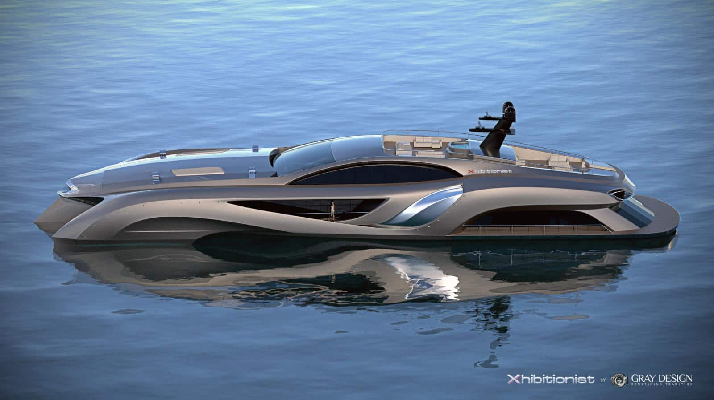
- 基本功能产品存在基础,相对稳定,不会出现大幅度变化。否则,产品性质就会发生变化。
- 辅助功能往往多变,有时起辅助作用,有时会模糊功能主次关系。如文具钟,很难判断文具和钟主次关系。
- 一件产品辅助功能可不断增加,其成本有时会高于基本功能。合理设置功能结构可降低成本。
- 基本功能：作用必不可少? 主要目的? 若作用改变，要素和工艺是否改变?
- 辅助功能：对基本功能起辅助作用? 次要?
例: 万能床，既能卧铣，又能立铣或其它铣削加工。
- 如冷暖空调夏天制冷、冬天制热。

- 基本功能：盛水、抓把倒水。
- 辅助功能：支高轻松倒水，方便把火炉放在下面煮茶
4.1.3.2.3 按用户需求分：必要功能和非必要功能
保证必要功能，排除不必要功能和多余功能，可降低成本,减少误操作。
- 必要功能：用户所需功能，包括基本功能和辅助功能。如产品满足不了用户需求，则功能不足;
- 非必要功能：有些功能不是用户所需。但需求变化影响功能必要性使必要和非比要发生转换(相对性)。
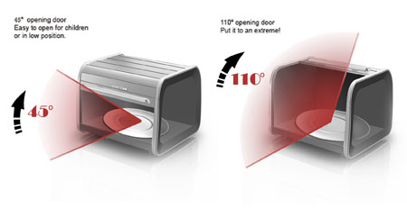
供夜间骑驶照明之用。
- 因城市有路灯，自行车灯还有无必要?
- 在城市公路上行驶，没有越野需要，前轴驱动功能就成过剩功能
- 若取消此功能，既不影响使用，每辆车还可降低成本约2000元。
- 但在山地或崎岖路面行驶，四轮全驱仍能发挥优势。
- 片面追求尽善尽美，不惜工本;
- 对用户需求不完全了解;
- 因设计任务紧迫而未必要计算和分析，以致采用超过必要限度设计规范;
- 因缺乏信息，未能充分利用已有技术成就，技术标准，过分依靠个人经验;
- 没有处理好形式与内容关系，二者不够协调合理等。
- 有些消费者买产品不精打细算，甚至要功能过剩产品而不要功能适度产品，助长不必要功能产生。
4.1.3.2.4 按需求满意度分：不足功能、适度功能和过剩功能
- 不足功能：必要功能未达预定目标。如因结构、选材不合理造成强度不足、可靠/安全/耐用性不够。
- 过剩功能：有些功能超过用户所需范围(内容过剩)或使用需要的程度(水平过剩)。
附属功能多余或使用率不高（录像机的编辑、定时、卡拉OK等）。
为实现必要功能,在安全性、可靠性、耐用性等方面采用过高指标。
- 不适当地加大安全系数;
- 一般用途产品采用承受高负荷元件;
- 采用公差、粗糙度超过产品适用性要求;
- 在用户看不见表面上，不惜工本地来提高表面质量;
- 采用过高寿命指标，构件尚未磨损到极限公差，而产品已被淘汰;
- 采用过分贵重材料;
- 坚持不合理工艺要求，而不考虑产品适用性。
4.1.3.2.5 按相互关系分：目的功能和手段功能
目的功能和手段功能是一种相对概念（上位功能、下位功能和同位功能）
- 若功能A是功能B的目的,而功能B是功能A的手段,目的对应上位功能,手段对应下位功能,两者从属关系。
- 与同一上位功能相连的若干下位功能是同位功能。
- 对一个功能问其目的，可找出上位功能; 问实现其手段，可找出下位功能。
4.1.3.2.6 按功能用途分：使用功能、美学功能和象征功能
产品给予使用者直接物理、生理作用所有功能。例：椅子功能
- 椅面(宽/深度, 倾/圆角, 有否软垫)支撑身躯，臀、腿合理受力，节省体能，保证活动空间与坐姿改变。
- 椅背（高度、宽度、形状、有否软垫等）用以支持脊柱并放松背部肌肉，减少疲劳；
- 扶手用以支撑手臂、保持坐姿。
- 椅腿用以连接和支撑椅面、扶手、椅背。
- 在使用功能基础上，对产品起美化、装饰作用功能 (外观造型及物质功能本身表现出审美欣赏效果)
- 形式规律：对称与均衡、稳定与轻巧、比例与尺度、对比与调和、过度与呼应、统一与变化等。
- 舒适性、安全性、仪表等易读性，视觉、触觉、听觉等因素与人心理状态、感受有关。
产品象征功能用产品表示某种特殊意义或精神层面。
- 产品精神功能组成部分，文化差异在产品载体上推移感受,影响品位档次。
- 与品牌关联,但不同。
- 有时代性。随社会发展、时间推移，象征功能会发生变化。
4.1.3.2.7 各功能重要程度及转化
首先满足必要功能，达到物质功能目标，同时考虑精神功能和辅助功能，尤其审美功能。
- (不)必要、主要/附属功能是动态概念，有些功能起初认为过剩、不必要，后来被市场证明有需要。
- 例: 在手机上安装镜头，起初认为不合适，因有照相机和摄像机存在。
- 但多年发展，手机摄影摄像功能不断增强，且增加电视功能。
4.1.3.2.8 例：喇叭花漏斗
- 物质功能：作漏斗用
- 精神功能：供欣赏
4.1.3.3 功能整理
由功能整理，建立功能系统，确认不同级别功能领域，再确定部件设计，有针对性、合理性和可行性。
- 功能间有依存关系(目的-手段)，由系统图明确概念，定位功能(取消不必要功能)，提高产品竞争力。
- 但所发现没有用或目的不明确功能也有可能由功能定义不准确造成。
- 步骤：编制功能卡片->选出基本/辅助功能->明确功能间上/下/并列关系->功能系统图->功能技术矩阵
4.1.3.3.1 编制功能卡片
把设计对象及其构成要素所有功能一一编制成卡片，每张卡片记载一个功能。
4.1.3.3.2 选出基本功能和辅助功能
- 抽出基本功能，只连接基本功能相互关系，搭成主骨架；
- 再连接辅助功能。
4.1.3.3.3 明确功能间上下、并列关系
- 从已抽出基本功能卡片中任取一张，提问: 目的？实现手段？找出上下位功能，并将其上位功能放在左侧，下位功能放在右侧。
- 继续分别向左和向右提问，并摆放下去，找到最终目的功能和最终手段功能，形成功能系统骨架。
- 在这个过程中，可能会发现功能定义遗漏或表达不当功能，此时应追加或修改功能卡片。
- 对辅助功能卡片提问目的什么、实现手段什么，进而明确上、下位功能，并分别排列在相应位置上。
4.1.3.3.4 作功能系统图 (关联树图)
确定功能间上下、并列关系，上位(目的)功能画左边、下位(手段)功能画右边，并列关系功能并列排放。
将系统总体功能分解为子系统功能和基本单元功能的过程。
- 上/下位功能：目的对应上位功能，手段对应下位功能。目的-手段形成从属关系。
- 同位功能：共有同一上位功能各下位并列功能
- 功能域：独立完成某功能的一个子系统。(机、电或机电一体化结构模块成为功能载体)
- 总体功能：最上位(目的)功能, 总系统和子系统最终功能，可基本功能，或某一辅助功能。
- 末端功能：最下位功能, 总一些有独立功能功能元。功能元间有串联、并联和混合联接3种联接方式
- 是否把所下定义功能都分类? 是否区分出基本功能和辅助功能?
- 每个功能目的是否明确?
- 各功能用什么手段来实现?
- 是否有相互不明确功能?
- 是否有因遗漏某功能，而找不到目的功能或手段功能?
- 是否有不必要功能?
- 有没有受到已下定义功能束缚而勉强与其它功能相联系?
- 功能系统图每一层手段功能实现上一层目的功能。
- 从目的功能出发建立产品一系列功能内在联系，揭示结构与功能间逻辑关系，
- 以此为基础，从目的功能出发，尝试不同角度，寻求不同技术或结构来满足功能目的需求，
- 找到新设计思路。
- 顶端起于产品总功能
- 向下分为分功能、子功能等
- 其末端功能单元
通过目的功能和手段功能将洗衣机功能按上位功能与下位功能排列：
- 洗净衣物通过形成蜗流手段实现。
- 形成蜗流通过传递力矩手段实现。
- 传递力矩通过提供动力手段实现。
- 提供动力通过电动机手段实现。
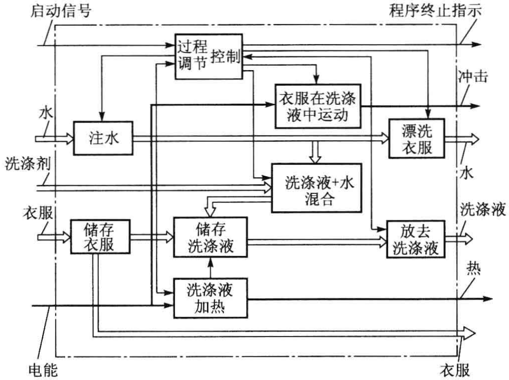
4.1.3.3.5 作功能技术矩阵
组合各种途径形成实现总功能G原理方案，如下两例：
- 功能G由解决途径L11-L12-—L1n组合形成实现总功能方案A
- 功能G也可由解决途径L31-L42-—L4n组合形成实现总功能方案B
4.1.4 功能设计
实现由功能分析设定的具体目标的设计过程。
- 实现功能的结构原理和构成形式(造型)，需市场分析、功能设计、工艺设计等人员共同完成。
- 功能通过不同技术、结构、工艺实现。为同一功能可提出不同结构造型方案。
- 产品结构系统设计对象硬件，反映对象由什么零部件构成和怎样构成。不同功能，结构技术或不同。
4.2 结构要素
产品内部各要素所占比重和关系之和的体现。
- 功能系统与环境外部联系，结构则是系统内部要素联系。
- 结构是功能和形式承担者，受材料、工程、工艺、商品使用环境等制约。
4.2.1 认识产品结构
- 分解与组装产品
- 零部件相互联系、作用，即各零部件在时空上排列组合。
4.2.2 产品结构多重含义
- 单个产品结构
- 多个产品关系结构
- 产品与空间关系结构
4.2.2.1 单个产品结构
- 外部结构
- 核心结构
4.2.2.1.1 外部结构
外部结构指外观造型及相关整体结构,外部形式承担者和内在功能传达者。
- 通过整体结构使元器件发挥核心功能,且实现界面功能(造型)。
- 具备材料、工艺知识及经验优化结构关键。
- 外部结构须在外部条件和内部因素明确情况下设计。
- 情况A:外部结构不承担核心功能 (必要功能),其变化不直接影响核心功能。如电话、吸尘器、冰箱等无论款式如何变,语音传输、真空吸尘及制冷功能不变。
- 情况B:外部结构核心功能承担者。结构形式直接与产品效用相关。如容器、家具、自行车等。其结构具双重意义:传达形式,承担功能。
4.2.2.1.2 核心结构
技术原理系统形成有核心功能产品结构。如吸尘器电机结构及高速风扇真空抽吸原理。
- 由机械工程师、电子工程师设计,专业厂家生产 (标准化\模块化) –> 工业设计师明确核心结构输入输出关系, 系统整合。
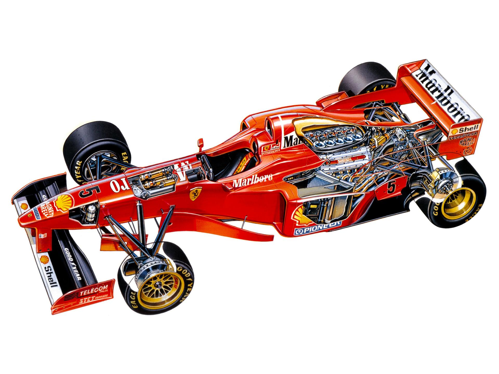
4.2.2.2 多个产品关系结构
将若干产品所构成关系看作一个整体,将其中有独立功能产品看作要素。
4.2.2.2.1 分体结构
相对整体结构,同一目的不同功能产品关系分离。
- 例：电脑由主机、显示器、键盘、鼠标及外围设备组成完整系统。
4.2.2.2.2 系列结构
由若干产品构成成套系列、组合系列、家族系列、单元系列等。产品间相互依存、作用。
4.2.2.2.3 网络结构
若干有独立功能产品相互有形或无形连接,构成复合功能网络系统。
- 例：电脑相互联网,服务器与若干终端(手机、传感器)连接(物联网)等。
4.2.2.3 产品与空间关系结构
产品在空间上构成关系,产品与周围环境相互联系、相互作用。
- 埏shān填以为器,当其无,有器之用;凿牖yǒu以为室,当其无,有空之用。
- 和泥制作陶器,有器具中空地方,才有器皿作用。开凿门窗建造房屋,有门窗四壁内空虚部分,才有房屋作用。所以,有给人便利,无发挥作用。
- 功能体现于产品实体与空间本身及其相互作用。
4.2.3 产品结构分析
关键: 使结构设计围绕市场特性、用户需求及性能指标展开。
- 产品技术系统
- 产品结构类型
- 产品构造系统
- 产品体系结构
4.2.3.1 产品系统结构
产品整体构成方式: 模块与模块、模块与产品、产品与产品间关系结构
- 整体结构: 各部分间关系结构形成统一（不可分离）简单形体完整系统。
- 分体结构: 同一目的不同分功能产品关系分离。
- 系列结构: 由若干产品构成成套系列、组合系列、家族系列、单元系列等。
- 网络结构: 由若干有独立功能产品相互有形或无形连接，构成有复合功能网络系统。
4.2.3.2 产品技术系统
- 功能保障系统由结构、材料和工艺组成; 包括动力系统、控制系统、支撑结构系统及工艺保障系统等。
- 例: 汽车技术系统涉及发动机、电机、传动机构、转向机构、刹车系统、连接件、显示仪表、控制器、照明等及材料、加工工艺、表面处理、装配工艺等。
4.2.3.2.1 有转换功能的技术系统(内部核心结构)
- 能量转变形成能量流技术系统 (内燃机将输入燃料化学能转换为机械能)
- 信息转变形成信息流技术系统 (计算机、数码相机、CMOS光电转换系统)
- 物料转变形成物料流技术系统 (排风机电机-叶片系统、电机-传送带系统)
4.2.3.2.2 有装填-包装-支撑功能的技术系统(外部结构)
- 实现装填的技术系统（陶瓷用品）
- 实现包裹的技术系统（服装包装等）
- 实现支撑的技术系统（家具桌、椅等）

4.2.3.3 产品结构类型
要素与要素(零部件)、要素与产品整体、产品整体与外部关系。
- 核心结构/工艺结构/外部结构/空间结构
4.2.3.3.1 核心结构（核心技术部件）
- 由技术原理系统形成有核心功能(能源流、信息流和物料流)产品结构。
- 例：在完成物料流结构中，机械传动结构和液压传动结构常见结构（图6.24）。
- 例：吸尘器电机结构及高速风扇产生真空抽吸原理可看作一个模块（图6.25）。
4.2.3.3.2 工艺结构
连接结构、装配结构、焊接结构。
4.2.3.3.3 外部结构
外部形式承担者，内在功能传达者（可视零部件、外观造型、相关整体结构组成）
- 例：自行车系统结构与外部结构基本一致。
- 例：轿车车身结构是典型产品外部结构
4.2.3.3.4 空间结构
产品构造形成空间形态。形成产品与周围环境相互关系。
- 例: 轿车车身既是实体结构（从外看），又是空间结构（从内看）。
- 轿车内部空间提供舒适、惬意感受。
4.2.3.4 产品构造系统
零部件要素按功能要求有机组成整体。
- 产品解析：对结构、构造、零部件及结构关系、功能作用和形态的分解和分析过程。
4.2.3.4.1 产品技术结构
若干零件相互联系、相互作用方式。
- 结构是系统内部诸要素联系。
- 功能是设计目的，而结构是功能承担者，结构决定功能实现。
- 结构既是功能承担者，又是形式承担者。
按组成系统部件、零件、连接关系、装配位置及关系拆解分类来认识技术结构。
- 燃气灶具中间燃烧及控制层进气管、阀门、燃烧室、炉头等组成技术结构系统部件、零件、连接关系、装配位置拆解。
4.2.3.4.2 产品造型组件
通过材料和结构形式来体现。
- a. 外观结构不承担核心功能，不直接影响核心功能。
- b. 外观结构承担核心功能，和产品效用相关(自行车)。
对造型组件要素分解，按产品外观形态组成分解分类。
- 自行车造型组件：车把、车座、座杆、车架、中罩挡泥板、脚蹬腿、脚蹬、前挡泥板、车轮等。
4.2.4 产品结构设计要点
黑箱结构(核心结构)与白箱结构(外部结构)，两者不可分割相互作用整体。
- 在设计外部结构时，应考虑黑箱结构和外部因素的双重制约。

4.3 形态要素
4.3.1 形态基本概念
事物在一定条件下表现形式
4.3.1.1 概念形态
空间所规定抽象形态,可表现为感知形态(以图形形式出现),即纯粹形态(造型设计基本要素)。
- 构成要素包括质 (点、线、面、体及相互关系)和量 (大小、多少)
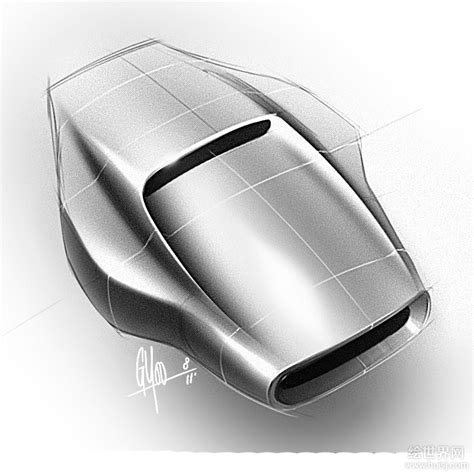
4.3.1.2 现实形态
自然形态/人工形态

4.3.1.2.1 自然形态
- 有机形态: 各种自然法则产生有平滑曲线,体现生命形态特征(山水树木、花鸟虫鱼)。
- 无机形态: 体现在几何形态上,给人以理性感觉。
4.3.1.2.2 人工形态
通过各种技术手段创造的形态 (产品、建筑等)
4.3.1.3 形态学 Morphology
探索生物体形态生成和发展过程、有关机理及形态分析与分类。
- 以自然形态为研究对象形态学观点及其成果,对人工形态设计有很多启发。
- 以人工形态(器具、建筑)外性(形状、大小、色彩与材料)寻内性(意图、价值、关系与爱好)。
- 对以上形态可视性方面与非可视性方面对应研究,弄清人工形态创意机理。
4.3.1.4 空间要素
- 实空间和虚空间
- 心理空间
4.3.1.4.1 实空间和虚空间
实空间和虚空间并存。
- 实空间：产品本身所占空间;
- 虚空间：不占物体那部分空间形体，但却参与产品形成。
- 例: 水杯就实空间而言，水在杯外，但从提供储水空间而言，水却在杯内。
- 实空间为杯子存在提供前提，虚空间为杯子实用性提供保障。
4.3.1.4.2 心理空间
心理空间诉诸于人视觉,不仅限于实体形态印象,同时产生心理联想。
4.3.2 形态系统组成
由形态要素通过形态构成和形式法则实现。
- 形态要素：点、线、面、体等
- 形态构成：空间、种类、数量、位置、方向各种组合变化等。
- 形式法则：比例与尺度、统一与变化、均衡与稳定等。
4.3.2.1 形态要素
形态指能被视觉、触觉所感知的客观现实存在形体和形象、结构各部特征和整体模样。
- 产品造型创造产品整体形态。
4.3.2.1.1 基本形态要素
按空间维度分：点、线、面、体。
- 点由有形、色、质和一定大小物质材料组成，例：把手、按钮。
- 线由点组成，例：项链。
- 面由边线围绕而成，例：桌面。
- 体由若干面叠成，例：书本。
- 空间由立体形态围成。例：包装盒、窑洞、建筑。
4.3.2.1.2 造型要素
形状-大小-色彩-质感
- 产品、部件、零件具体形状
- 大小-比例-尺度
- 材质表面色彩装饰
4.3.2.2 形态构成
形态构成包括空间、种类、数量、位置关系、方向各种组合变化等。
4.3.2.3 形式法则
形式法则包括比例与尺度、统一与变化、均衡与稳定等。
- 稳定性:视觉感受可信赖
- 新颖性(独创性):在功能结构合理基础上给人独特新颖感觉
- 秩序性:统一中寻找变化,变化中追求统一
- 体量感:产品体积和大小适于人使用
4.3.2.3.1 比例尺度
正确的比例和尺度是完美造型基础和框架。
- 保证功能和技术条件下，多变化组合，展现整体与局部或局部与局部间(大小/粗细/长短)量变关系。
- 尺度比较固定：造型尺寸与人体尺寸或某种标准间适应程度和范围。
- 造型次序：首先确定尺度，然后根据尺度确定和调整比例。
- 例：桥护拦、机床护罩、汽车车箱、自行车座、笔杆，首先考虑尺度，即人体尺寸适应长、宽、高、直径等，然后才是比例和细部调整。
4.3.3 产品形态语意
形态是产品与功能中介,并有表意作用 (产品语意学)。
- 通过形态传达信息,如产品属性 (什么)、功能 (能做什么或怎么做)。
4.3.3.1 产品语意学
研究人造形态在使用环境中的象征特性,运用隐喻、暗示及相似性手法来表达产品意义。
- 符号学用于研究符号意义,包含指示符号、图像符号及象征符号。
- 由符号造型、抽象图形和意义相关元素排列、综合等构成方式来解释产品意义。
- 使用者通过理解产品意义,正确有效地使用产品。
4.3.3.2 传达意义形态
形态是一个符号系统,有意指、表现与传达等类语言功能综合系统。
- 对不同形状按钮或旋钮、人能作出反应,如根据旋钮形状作出按、拨、旋等动作。
4.3.3.2.1 物质角度
灰色处于纯白环境中看起来比实际更深 (视网膜邻近区域间交互作用结果-视错觉)。
- 色彩不变性: 准确判断不同照度下的同一色彩,因瞳孔放大/缩小，控制光通量，或经验学习的结果。
4.3.3.2.2 学习角度
人能感知事物，因人有学习能力。眼睛能辨别方位,因人们有触摸物体的经验。
- 人类对空间或形态感知是学习的结果，感知基于经验。
4.3.3.2.3 功能角度
物质有许多特性,如材质、色彩等虽不会移动,但能造成认识改变。
- 感知最后阶段是将看到的东西与记忆比较,引导对环境探究。
- 如:步行劳累时,看到任何一个平坦石头都有椅子功能;若要写字时,可成为桌子。

4.3.3.3 诠释设计形态
诠释功能由形完成。研究形态意义不停在物层面，把视点置于事层面
- 通过形态传递信息，用户在形态信息引导下，正确使用产品。
- 使用者能否按设计者意图作出反应，取决于设计者对形态语言运用和把握。
- 传达是什么、能做什么，怎么做、不能怎么做、只能这样、不能那样、除这样、还能那样等。
- 通过类比、隐喻、象征等手法描述产品及相关事物。
4.3.3.3.1 形态与识别(表明属性)
通过产品自身解说力,判断出产品属性。如自行车与摩托车。
4.3.3.3.2 形态与操作(表达意图)
形态区分哪些属于看(视觉部分)，哪些属于可动(触摸部分)，哪些部分危险，不可随意碰(通过设计让其无法轻易触及)，哪些部分不可拆。
- 构成产品部件、机构、操控等部分形态要符合使用习惯。
- 形态显示产品构造和装配关系
4.3.3.3.3 形态与使用(发挥使用者能力)
利用新奇形态激发使用者好奇心和想像力,唤起游戏心理。
- 使产品形态有多种组合性、变换性,增强适应性;
- 为给使用者留有发挥余地,在避免误操作前提下,尽可能不使用说明。
4.3.3.3.4 形态与环境(适应环境)
产品处于具体环境(建筑空间、自然环境、或与其它产品在一起)，相互影响 (尺度、材质)。
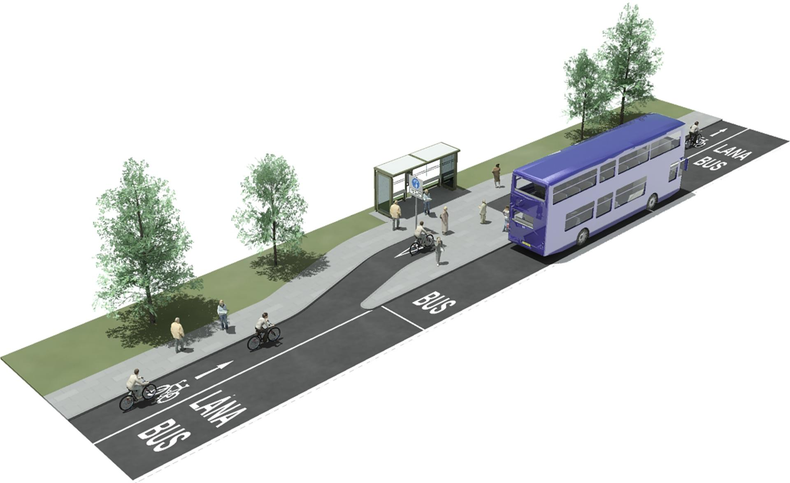
4.3.3.3.5 形态与记忆(满足心理需求)
从形态中读出记忆中所熟悉而喜爱的信息，产生亲切感。

4.3.4 产品形态分析(造型之美)
美是事物客观属性，人们内在知觉和感情。
- 美无处不在，关键：发现。
- 形式美: 把形式要素根据创意要求，按美规律与法则组合，成为在视觉中被认可美形式。
4.3.4.1 造型审美原则
主体尺度和自然形式统一，主体目的和自然规律统一体现，对实践效果满足需一种积极肯定，一种价值。
- 就主体看，人尺度要体现目的要求内在尺度；
- 就客体看，自然形式要表现美规律形式。
4.3.4.2 美组成
- 美要素：能给人以美感受物质材料、手段，如形状、线条、大小、色彩、肌理、材质
- 美法则：对称、均衡、比例、尺度、参差、变幻、调和、对比，节奏、韵律，主次、重点，过渡、呼应，比拟、联想、多样统一与和谐
4.3.4.3 美两点说明
- 形式美法则有相对稳定性，随时代发展而发展，也因人、事、条件不同而不同，须灵活运用。
- 产品造型美须内容与形式完美结合，既突出形式美，又要保证产品功能结构完善。
4.3.5 产品造型(形态设计)原则
4.3.5.1 宜人
产品用途和功能适宜于人使用，舒适、高效、安全、健康。
4.3.5.2 新颖
产品开发建立在创新基础上，包括对原有产品款型改善或变化。
4.3.5.3 合理
- 材料与工艺力学和技术性能特点，表现出产品优良性能。
- 从整体构思到细节处理都合乎逻辑，从构思到款型设计、到设计完成应一种逻辑过程。
4.3.5.4 语义
- 语义性指事物有被他人认知可能性。
- 产品设计语义性，就指产品设计能够被消费者理解可能性。
- 造型要能理解，特别操作把柄和按钮要按操作习惯设计，指示出转动或推动，压或拉等。
- 例: 水龙头. 机械关节可延伸调整水龙头，有无数稳定姿态，不用时，可缩成一块。
4.3.5.5 情感
- 产品设计反映地域、社会、文化、爱好、种族、性别、修养、年龄、经济地位等因素差别。
- 设计要有文化特点，有艺术感染力，有情趣。
4.3.5.6 简洁
- 简洁就不做不必要设计。
- 适合性就解决问题设计方案与问题间恰到好处，不牵强，不过分。
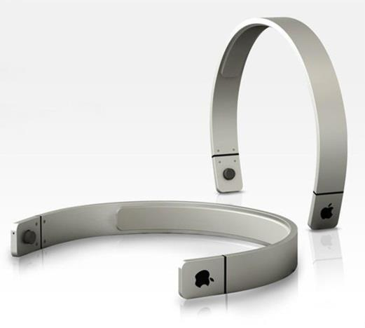
4.3.5.7 环保
考虑使用环境要求，产品应恰如其分地溶入环境。
- 引导一种能与生态环境和谐共生、正确生活方式。
- 利于节约能源，回收材料再利用。
4.3.5.8 经济
以最小消耗达到所需目的。
- 制造上省工、省料、省时、低成本，加工方法和程序简易，
- 使用上省力、方便、低消耗等。
4.3.5.9 安全
产品安全与否，将直接影响其使用
4.3.5.10 优化
针对工业化生产手段使产品获得更好品质
- 更好功能、结构、技术性能、经济指标、操作性、维护性、适应性；
- 更美外形、色彩、质感、做工、比例尺度。
4.3.6 产品造型方式
当设计新形象，在人们意念中有许多已有形象在起作用。
- 已有形象(母形)：现实形态反映、模糊印象或变形、抽象。
- 母形中最简单形称为原形：方、圆、三角、点、线和面; 自然/人为形态轮廓(人、动植物、景物)。
- 新形由母形演变而来。
4.3.6.1 产品形态基本构成方式
- 直接由原形复制
- 使原形发生变形
- 分解形得到新形
- 两个以上形迭加组合
- 上述生成方式综合，不断推演新形
4.3.6.2 复制
复制后，根据排列位置和方向不同有下列几种形式。
- 重复: 整齐、最简单排列形式，使母形得到加强，视觉上产生强调、统一、节奏和均衡美感。
- 旋转: 在重复基础上将形位置、方向沿圆周配置成环状，有转动感。
- 发射: 将形沿径向或发射骨胳线排列。各部分都有向中心汇集或沿发射线向外发射动感。
- 对称: 通过镜象复制，与母形形成反映关系 (点对称，线对称和移动对称)。
4.3.6.3 变形
在重复基础上对形整体或局部、大小或结构作改变，使新形与原形类似但不同。
- 线性变形：沿某方向按比例乘法变换。放大/缩小，单向伸长/压缩及错切。放大有移近和突出作用。
- 自由变形：按设计者主观意图作非线性变换。
- 局部变形：如形局部发生凸起、凹入、迁移、线性变形或非线性变形而又不产生分离。
4.3.6.4 迭加
多种母形通过空间位置关系改变制造新造型方式。
- 相离指多个单元形相近但不接触。
- 连接指多个单元形相接触但不重迭。
- 重叠指多个单元形有重迭部分。
- 结合指多个形融为一体但有各自独立边界轮廓迭加形式。
4.3.6.5 分割
在母形基础上分割出一个或多个子形，使形态丰富、多层次、生动。
- 分割比例适宜(如黄金分割比)
- 横向分割使形体更显宽度感觉
- 纵向分割使形体更显高度感觉
- 环形分割使小圆扩张,大圆收缩
4.3.6.6 移位
在分割基础上将形态位移，以寻求有联系形的最佳位置关系。
4.3.6.7 切削(减缺)
通过一到多个不同大小,不同位置局部切割,产生造型变化。
4.3.6.8 聚集
将多个单体经大小、位置、数量、方向等变化,采用渐变、发射、特异等排列方式产生新造型。
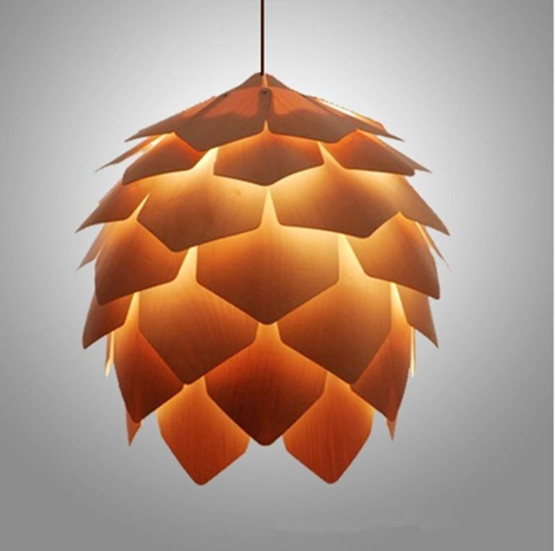
4.3.6.9 合并
4.3.6.10 拉伸
4.3.6.11 挤压
4.3.6.12 弯曲
4.3.6.13 综合
将复制、变形、分减、迭加等多种变化方式同时使用，产生更加丰富视觉形象。
- 渐变
- 简炼
- 装饰
4.3.6.13.1 渐变
将重复和变形、或分减、迭加形式综合使用。
- 有统一节奏感，又有变化生动感。整体给人立体感、韵律感和层次丰富动感。
4.3.6.13.2 简炼
将变形和分减综合在一起。比较复杂和高级变化形式，综合程度高。
- 特征夸张、放大特征部位，去除细枝末节，使内容深刻而形式简单 (象征或抽象)。
- 有侧重，有些以放大夸张特征部位为主，有些以减缺抽象为主。
4.3.6.13.3 装饰
- 将重复、变形、简炼和迭加综合应用。
- 以应用迭加为主，在主形上迭加辅助以增加层次、丰富表现形式，或将不规则形整形处理。
- 改善已有形态单调感，并使形象赋于新含意。
4.3.7 产品形态风格
产品形态不仅有物和事层面意义,还包括精神、文化及时代背景层面意义。
4.3.7.1 功能主义形态
1930s前后
- 在美国,为使经济危机下产品打开局面,使用流线形设计,成速度、效率等新时代象征;
- 在德国,人们对产量和质量双重需求推进统一化、规格化量产方式;
- 英国也开始规格化、合理化等功能主义设计实践。
4.3.7.1.1 形式服从功能
- 强调以科学、客观分析为基础,提高产品效率及经济性;
- 反对无理性根据形式,反对传统样式及装饰,提倡创新。
- 形成特有设计语汇,即净化几何形态。
- 这虽然符合工业化生产要求,但简洁单纯几何形态作为抽象功能在材料、结构上体现,有时不能完全呈现功能多样化产品目的性。
- 批量生产条件下简约化或标准化一定程度上难于满足消费市场多元化、多层次要求。
4.3.7.2 趣味形态
产品形态设计追求符合时代潮流、摈弃千人一面形式而面向差异化表现。
- 例：赋形、色以游戏要素，或将异质因素组合，造成失调感形成趣味(生活行为语言表现)。
4.3.7.3 多样形态
新材料(塑料\纳米)及信息技术应用发展，使设计形态更加多样化。
- 塑料与电子信息产品结合形成新产品形象。
- 同一产品领域形变化激剧增加;且形态本身也发生很大变化,种类在增加。
4.3.7.4 相对形态
电子技术发展，使产品设计语言表现空间发生变化，设计语法绝对化和规范相对化。
- 形态表现可脱离内部约束自由发挥，部分复杂机械结构逐步被电子器件取代。
4.3.7.5 个性形态
多品种少批量柔性生产方式形成形态表现新空间–具象、比喻、隐喻、主观等。
- 例：a. 自然物或动物比喻，b. 尖端技术隐喻高科技，c. 怀旧形态。
- 表现方法：新古典主义、新功能主义、自然主义、折衷主义等。
- 新古典/功能主义：或暴露机件，或以几何体构形(圆形和弧形)表现为机械、无意识感觉。
4.3.7.6 联想形态
为加强形态说服力和感染力,采用自然物或人造物形态特征,产生联想作用
- 或把握产品功能和特性,与某种自然物或人造物形态联系起来,使产品形态有某种象征意义。
4.3.7.7 引用形态
产品各部分形处理引用过去产品元素。在内部机构不变情况下,别具一格外壳,成为新卖点。
- 寻求历史文脉将过去形态重新组合,怀旧感产品。
4.3.7.8 象征形态
具体形态类比暗示及联想。象征物与被象征物间共同点并非外形,而是功能。
- 功能成为形媒介，通过联系构成象征形态。
- 产品形态象征作用，逐步从以视觉为中心扩大到综合听觉、触觉等知觉领域。
- 例：小孩看见竹马(骑在胯下竹竿)时,便会认为这就是马。竹杆成功能替代物。
- 尽管模仿物和被模仿物在外形上已分离,但其功能却共有(马和竹马都骑在胯下向前奔走)。
4.3.7.9 触感形态
曲面形态变化。
- 例：照相机、电话、汽车等以复杂曲面构成，变无机为有机。
4.3.7.10 无根源形态
无根源形态只出于功能需要,以最基本几何形体产品包装",并在表面印上指示说明文字和图形。

4.4 材料要素
物质基础，考虑材料选择是否满足功能。
- 石材与木材 -> 金属 -> 塑料 -> 合金及生物材料
- 石器时代粗糙石器->信息时代谷歌眼镜，改造和提升人们存在和生活过程。
- 由金属材料、非金属材料（木材、塑料、橡胶、布皮等）通过表面处理（装饰）实现质感美。
4.4.1 材料学与新技术
研究材料组成、结构、工艺、性质和使用性能间相互关系，为设计、制造、工艺优化和使用提供依据。
- 新技术新发现能带来材料革新, 注重材料类别交叉和综合,为设计发展提供更多可能与方向。
- 例：潘顿1970用发泡塑料技术设计船体内部空间。
4.4.2 材料处理过程
认材-> 选材-> 配材-> 理材-> 用材
- 材料选择需考虑材料对产品性能和寿命影响,符合人机要求,环保及心理需求(iMac半透明机壳)
4.4.3 影响材料选择因素
4.4.3.1 材料性能
强度、刚度、稳定性、平衡性、疲劳特性和抗冲击性
4.4.3.2 使用因素
- 产品功能和使用寿命
- 产品结构和形态对材料要求
- 安全性
- 抗腐蚀性
- 市场因素
- 材料成本
- 使用场所和人群
4.4.3.3 环境因素
- 温度和湿度(如温度激烈变化时某些绝缘材料会失去绝缘性,湿度过高导致某些材料精度失调)
- 冲击和振动(运输或使用过程中)
- 气候
- 环保
4.4.4 材料感知特性
4.4.4.1 材料触觉特性
- 生理感受：温觉、压觉、痛觉
- 心理感受：愉悦感和厌恶感

4.4.4.2 材料视觉特性
材料表面色泽、肌理、面积都会影响材料视觉感受
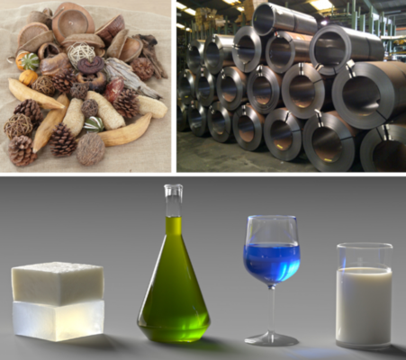
4.4.4.3 材料听觉特性
不同材料通过敲击和振动产生不同音效感受

4.5 色彩要素
色彩由物体发射、反射光通过视觉产生印象颜色集合。色彩随人们情感不同和认知差异而变化。
- 色彩应与造型相符。对同质化产品，可用色彩加大与其它产品不同，创造多样、个性和差异化。
- 色彩可协调或弥补造型不足。
- 由彩色系、非彩色系、光泽色系通过色彩构成和对比与调和配色法则实现。
- 色调可表现出生动、活泼，精细、庄重，冷漠、沉闷或亲切、明快等。
4.5.1 色彩意义
色彩相对形态和材质,更趋感性化,色变化比形(受设计制造、成本制约)变化代价小,且较为多样。
- 例：轿车不同色彩可造成不同视觉效果。GM以色彩区别不同车型，与黑色T型福特轿车形成对照。
- 轿车基本功能稳定后，人们开始感性需求。GM推出舒适、安全、追求卓越形和色的K型轿车。
4.5.2 色彩计划
对设计需求和营销策略分析，以配色原理、色彩学为基础制定色彩使用计划，考虑用户认知与心理需求。
4.5.2.1 色彩计划特性
- 科学化:色彩认知心理学,符合消费心理和市场需求
- 类别化:使品牌个性化,塑造品牌形象,增强企业识别度
- 阶段化:根据消费需求和企业策略分阶段逐步实施色彩方案
- 系统化:注重色彩与功能、结构、形态关联性,使设计一体化。

4.5.2.2 色彩计划程序
- 情况调查:收集分析资料–企业特点、竞争对手、市场需求、消费心理、产品定位,明确企业优势
- 表现概念(概念定位):根据调查结果确立企业形象、经营概念、消费环境概念,并符合时代特征。
- 色彩形象(色彩匹配):将各种概念与色彩匹配,确立企业标准色、市场用色及商品用色。
- 效果测试:对色彩生理、心理和物理测试,以验证形象概念。
- 管理监督:为保证不同设备输出颜色与规定相符,需将色彩数值化,制作专有色样本。
4.5.3 色调选择
根据产品用途、功能、结构、时代性及使用者好恶等确定; 确定标准色形一致，以色助形，形色生辉。
- 暖色调感到温暖，冷色调感到冷清。
- 以高彩度暖色为主调使人兴奋，以低彩度冷色为主调让人平静。
- 高明色调轻爽、明快，低明色调深沉、庄重。
4.5.4 色彩设计
4.5.4.1 色彩与功能
利用约定俗成，由色彩产生联想或暗示功能，传达意图。
- 色彩不仅表示单个商品特性，也反映商品群体形象及企业形象和理念。
4.5.4.1.1 色彩与产品功能关系
- 色彩结合形态对功能暗示。如,电器按钮或某部位用色强调,暗示功能。
- 以色制约和诱导行为。如红色警示,绿色畅通,黄色提示。地域民族不同对色感受也有差异。但许多指示性色彩已存在国际标准,如红色表示STOP,绿色表示START。
- 以色象征功能。象征功能色彩有些根据色彩本身特性确定,或约定俗成。如,我国邮筒用邮政专用绿色,有国家则用橘红色。

4.5.4.1.2 产品色彩须满足以下条件
- 用色彩表示商品属性(功能、形态、材质)
- 色彩表示与商品属性和形象相适应
- 以色彩体现工作和生活环境舒适性
- 所用色彩不仅适用于单位产品,还要适用于纵横系列
- 用公众持续看好、富有生命力色彩
- 色彩要体现企业品质
4.5.4.2 色彩与形态
4.5.4.2.1 理性与感性
- 理性:色彩可提高产品形态认知度。如电脑、复印机等办公设备多为灰黑色系,办公产品心理感受属理性范围,色彩属性与形态属性相一致。
- 感性:但随追求感性化时代到来,产品彩色化倾向明显,并创造品牌形象如苹果G3、G4电脑色彩设计,突破人们对该类产品一惯认识—半透明色和富于感性意味形结合。
4.5.4.2.2 色彩匹配产品形态常用手法
- 同一产品造型,用不同色彩表现,形成产品纵向系列。
- 对同一产品形态用不同色彩分割(根据产品结构特点、用色彩强调不同部分)。在视觉上影响人对形态感觉,即使同一造型,会因色彩变化而对形态感觉有所不同。
- 用同一色系统一不同种类产品,形成产品横向系列,有家族感。树立品牌形象常用做法,即便不同厂家生产产品,营销企业也可用色彩将其统一在本企业品牌之下。
- 以色彩区分模块,体现产品组合性能。
- 以色彩装饰,产生富有特征视觉效果。
4.5.4.3 色彩与象征
- 不同民族、地域文化对色彩理解不太一样。但人类感性有共通一面,对色彩直观感受存在很多共性。
- 象征作用产生于联想,不同色彩感觉会导致不同色彩联想(色彩原理及人认知心理)。
- 产品色彩包括功能性和情绪化。其中,人性化因素不断增加,且产品色彩有时代象征意义。
4.5.5 色彩管理
从企业总体目标出发，在产品计划、设计、营销、服务等环节,以理性定量化方法对色相、明度、辉度统一控制和管理。
4.5.5.1 色彩管理目的
- 对异地生产产品和部件色彩标准化(产品或企业标准)控制。
- 对互换式生产方式下产品色彩控制。将产品某一部分更新,使这一部分与产品其它部分互换,以最小成本最快速度推出新产品。互换产品色彩仍要与色彩计划保持一致。
- 企业形象战略需。色彩计划贯穿企业活动各方面,包括产品、宣传、促销,也企业理念象征。设计师须与表面色彩技术处理部门联系,通过原材料供应商或生产厂家提供色标选定产品色彩。
4.5.5.2 色彩管理实施步骤 (3C)
- 设备校正:调整设备配色,以通过色彩测试。
- 设备特征化:输入一系列颜色值,测出设备产出颜色值,建立输入颜色值和产出颜色值间对应关系,并将其转换关系记录在特征化文件中。
- 颜色空间转换:将原设备颜色空间转化到相应色彩感觉,再将色彩感觉转化成目标设备颜色值。
4.5.5.3 色彩管理用工具
- 标准光源目的视比色箱:在标准光源箱里看色可避免因外界光线介入所引起色彩偏差
- 电脑测色仪:包括色差计、印刷网点密度仪、屏幕亮度灰度计
- 国际标准色卡:使用色卡,除去寄送样品麻烦,报一个色卡号码即可
4.6 内部要素之美
产品美通过形态被感知，并通过技术手段加工制造出来。
4.6.1 功能美
当新产品推向市场时，其功能美吸引人们主要因素。
- 功能好用、完善、先进功能是美的先决条件
- 优良性能也是功能美的表现形式
4.6.1.1 功能好用、完善、先进功能是美的先决条件
- 汽车物质功能运输，功能美表现形式与汽车类型有关。
- 大众2007款多功能紧凑型GOLF轿车，一款有轿车舒适性带有一定越野能力SUV轿车。

4.6.1.2 优良性能也是功能美的表现形式
- 工作性能(如汽车速度、稳定性、耗油量等)
- 使用性能(汽车操纵性、舒适性等)。
4.6.2 结构美
产品内部组织，产品各组成部分合理配合和排列; 实现功能要求，也增强美感。
- 力学和材料学新成就，为产品造型结构美提供重要科学依据。
- 结构力学发展，在保证强度和使用寿命前提下，设计出结构轻盈、刚劲、简洁产品。
- 流体动力学发展，使交通工具在结构上实现低阻流线体态(流线美)。
4.6.3 材质美
材料产品物质基础。
- 各种材料都有各自外观特征、质感和手感，体现出不同材料材质美(质地美)。
- 如钢坚硬沉重，铝轻快洁净，金高贵华丽，塑料柔顺轻盈，木材朴实自然等。

4.6.4 工艺美
体现加工痕迹和特点。
- 工艺包括：制造工艺(造型得以实现措施)和装饰工艺(完美造型手段)。
4.6.4.1 制造工艺
- 机械化批量生产方式使造型有简练、大方形体和各种加工手段所形成表面特征
- 如切削平直光洁，抛光细腻柔和，模压挺拔圆润，精密铸造准确丰满等。
4.6.4.2 装饰工艺
- 产品装饰工艺使表面、色彩与产品功能、形态、工作环境协调。
- 如塑料电镀金属光泽，铝材氧化精饰处理，钢材涂复工艺
4.6.5 舒适美
- 产品在使用中，应充分体现人与机器协调一致，使人感到使用方便、操纵舒适和安全可靠。
- 人机工程学研究人们生产、科研或生活如何达到效率最高、感觉最舒适、操作最准确。
4.6.6 规范美
标准化、通用化和系列化实现规范美有效手段。
- 利于产品整齐划一、改型设计，有统一中规范美感和协调中韵律美感；
- 利于促进技术交流、提高产品质量、缩短生产周期、降低成本、扩大贸易，增强市场竞争力。
4.6.7 科技和艺术统一
- 只强调产品科技先进性而忽略艺术性，会使产品产生机械冷漠感、仪表枯燥感和人机不合理性。
- 只强调产品艺术性而忽略科技先进性，会使过多人为装饰妨碍产品物质功能体现。
4.7 作业四
- 选择一款或一类产品分析其内部要素（功能、结构、形态、材料、色彩等），明确优缺点；
- 在此基础上，对该产品提出延伸方案、改进方案或完成新的设计方案。
- 做成PPT，9月22日(周日)23:00前发送到anhongz@outlook.com
- 文件名: PSD4-标题-姓名
- 文件类型: 演示文稿或PDF文档
5 产品系统设计外部要素
通过研究产品开发宏观环境影响因素确定发展战略目标 (SET研究：社会、经济、技术)
两种力量
- 需求拉动：预测消费需求、价值观念及生活方式变化趋势，与现已开发市场研究结果一并运用到设计中，使商品符合市场需求，达到营销目标。
- 技术推动：为达到某一功能，须缩小需求与技术差距，制造上予以突破，产生全新产品占领市场。
5.1 社会要素
社会生活和文化中相互作用的因素
设计与社会状态匹配,并促进社会发展。
- 为非洲设计低成本炉灶 Baker Cookstove 减少煮食时热量浪费和有害烟雾排放。
- Motorola Talkabout 对讲机解决父母对孩子监护问题,并维持家人和孩子良好关系。
5.1.1 社会要素的基本概念
- 社会
- 社会基本要素
- 社会功能
- 社会环境
- 社会生活
5.1.1.1 社会
社会是一个复杂系统，有共同利益、价值观和目标的人组成的联盟。
- 共同生活的人们通过各种各样社会关系联合起来的集合。
- 形成社会最主要社会关系包括家庭关系、共同文化及传统习俗。
- 微观上，社会强调同伴意味，并延伸到为共同利益而形成自愿联盟。
- 宏观上，社会就由长期合作社会成员通过发展组织关系形成团体，并形成机构、国家等组织形式。
5.1.1.2 社会基本要素
社会生活基本要素和构成成分，依据一定社会规范和制度形成有规律社会过程。
- 环境：地理位置、地貌、气候、土壤、水、动植物及各种自然资源等。
- 人口：性别、年龄及自然构成，一切社会活动、关系、现象和社会问题都同人口发展相关。
- 劳动：通过劳动创造物质财富和文化财富，满足人类需。
- 沟通：以语言、文字和其它符号为媒介，交流感情，建立联系和相互了解。
- 组织：通过各种类型社会组织形成群体，人类社会生活基本存在方式。

5.1.1.3 社会功能
- 整合：将人组织起来，一定范围内维持统一局面。
- 交流：具备语言、文字、符号等人类交往工具，为人类交往提供必要场所，保持和发展相互关系。
- 导向：一整套行为规范，用以维持正常秩序，调整人们间关系，规定和指导人们思想、行为方向。
- 继承和发展：人类一代代更替，创造物质和精神文化通过社会积累和发展。
5.1.1.4 社会环境
- 文化、社会阶层和相关群体等
- 如教育程度、生活方式、风俗习惯、行为规范、经济水平、价值观念、消费特征等
- 在更大范围内影响产品设计
5.1.1.5 社会生活
- 个人、家庭及其它社会群体在物质和精神方面的消费性活动
- 包括吃、穿、住、用、行、文娱、体育、社交、学习、恋爱、婚姻、风俗习惯等。
- 社会生活是影响产品开发的主要因素。
5.1.2 社会生活研究
社会生活研究是设计创新的源泉
- 设计创新既有需求拉动，又有科技推动。
- 需求根源于生活。在不断变化生活中，会产生新价值需求。
- 挖掘来源于生活环境新需求、新思路、新点子、新创意。
5.1.2.1 社会生活研究内容
- 探索生活方式新观念：从生活中解各种消费群体（性别、年龄、职业、文化层次、地域）需求。
- 从社会生态学研究获取灵感。如针对设计过度和装饰过度现象，引进社会学和生态学概念。
- 探索合理社会消费结构，适度消费。
- 研究生活形态学，生活设计、预测目标市场，开发新品。
- 闲暇方式设计（为生存所须时间为劳动时间，用于享受和自身发展时间为闲暇时间）。
- 研究使用情境。
- 对生活多方位研究（工作生活，闲暇生活、消费生活等）。
- 结合人机工程学。对残障人所作生活研究开发出产品。
5.1.3 社会心理对设计的影响
社会心理客观反应社会生活变化基本倾向和可能出现发展趋势(社会心理预告作用)
- 社会心理现象变化趋势可干预，可通过策划和广告使社会态度发生改变。
- 设计目的是提升生活质量，通过心理需求调查与预测，归纳设计约束条件。
5.1.4 社会政治法律和伦理对设计的影响
- 社会政治法律环境
- 社会政治伦理
5.1.4.1 社会政治法律环境
- 政治环境引导企业营销方向，企业在市场经营和对外贸易中，要考虑东道国社会稳定情况。
- 企业经营者须熟知有关法律条文，保证企业经营合法性，运用法律武器保护企业与消费者合法权益。
5.1.4.2 社会伦理
- 有计划废止制、一次性产品设计、人为寿命设计等商业设计思想，成为创造物质财富手法之一。
- 但这些财富或建筑在对自然资源不合理应用及对环境造成巨大污染之上。
5.1.5 社会文化对设计的影响
5.1.5.1 各国文化
- 日本产品轻薄小巧，其灵巧、清雅、精致、自然气质，融东方文化和高科技于一体。
- 德国产品高级感，来自科学、严谨、精密、认真、高雅精神，其技术文化反映。
- 意大利产品风格多样，技术/文化协调，生活/艺术结合，文艺复兴传统及热情奔放性格。
- 北欧质朴和清新自然功能主义传统，温雅、柔和、明朗、质朴和清新自然文化气息。

5.1.5.2 欧洲创新计划1996
欧盟把促进创新文化发展列为第一个创新行动计划第一个优先领域
5.1.5.2.1 欧洲创新计划(欧盟1996)
- 形成创新文化；
- 创造有利于创新管理法律和金融环境；
- 促进知识生产上知识扩散和使用部门间联系。
5.1.5.2.2 欧洲创新措施(欧盟1996)
- 改进教育与培训；
- 鼓励人员流动；
- 提高全社会创新意识；
- 改进企业管理，大力支持面向创新管理培训；
- 促进政府行政管理部门和公共部门创新。
5.1.5.3 例：奥运会相关设计
- 奥运会会徽设计
- 场馆设计
- 开、闭幕式设计
- 纪念品设计
5.1.5.4 例：可口可乐
- 不仅一种饮料，还关联橄槛球赛、一级方程赛车和周末野餐等。
- 成为装在瓶子里美国梦，成为美国精神和一种象征。
5.2 经济要素
经济发展状况、经济结构、居民收入和消费者结构等会影响人们消费观念。
- 产品合理性价比、成本控制和营销方式提高销量使更多消费者受益,企业盈利,促成经济发展。
5.2.1 经济影响产品三个层面
- 经济形势决定产品开发能力、市场拓展能力、产品在市场中的表现。
- 经济投入决定产品品质、功能、性能、档次、价格和市场定位。
- 1) 要素层面: 产品结构、零配件材料、表面处理、工艺水平决定品质和成本；
- 2) 产品自身: 功能、性能、档次、价格决定产品利润；
- 3) 产品环境: 品牌、市场占有率、市场定位决定企业营销目标和收益。
5.2.2 宏观经济
国民经济总体及其经济活动和运行状态
- 总供给与总需求；
- 国民经济总值及增长速度；
- 国民经济中主要比例关系；
- 物价总水平；
- 劳动就业总水平与失业率；
- 货币发行总规模与增长速度；
- 进出口贸易总规模及其变动。
5.2.3 市场经济
商品经济为企业产品提供公平竞争环境。
- 交换与竞争是市场经济主旋律。
5.2.3.1 市场经济基本特征
- 独立企业制度
- 完善市场体系(要求有足够多买者和卖者及充分竞争，避免垄断)
- 开放市场空间
- 健全法制基础
5.2.3.2 市场经济下的交换与竞争
- 需求方竞争: 供给不足。
- 供给方竞争: 供给充分而需求不足，卖方希望买方优先买自己产品。
5.2.3.2.1 交换与竞争有利之处
- 优化配置资源，提高资源利用率。
- 优胜劣汰。
- 降低社会交易成本。
- 使消费者受益。
5.2.4 经济环境分析
5.2.4.1 消费者收入分析
- 国民生产总值。
- 人均国民收入：人均收入增长，对商品需求和购买力就大，反之就小。
- 个人可支配收入：可用于消费或储蓄个人收入构成实际购买力。
- 个人可任意支配收入：减去必需品花费(房租/水电/食物/衣物)所剩(高档品/娱乐/教育/旅游)。
- 家庭收入：收入高，对消费品需求大，购买力也大；反之，需求小，购买力也小。
5.2.4.2 消费者支出分析
消费结构：消费者收入变化与支出模式，即消费结构变化规律(恩斯特.恩格尔, 1857)
5.2.4.2.1 恩格尔系数
恩格尔系数＝食品支出金额／家庭消费支出总金额
- 食品支出比重小，生活质量高；
- 食品支出比重大，生活质量低；
5.2.4.2.2 恩格尔系数应用
企业从恩格尔系数了解市场消费水平，推知消费变化趋势及对企业经营活动影响。
- 《2013年国民经济和社会发展统计公报》显示
- 2013中国农村居民恩格尔系数为37.7%，城镇居民恩格尔系数为35.0%，均较上年下降。
- 2013汽车销售增速比上年快3.1%；轿车保有量达7126万辆，增长19.0%。
5.2.4.3 消费者储蓄分析
储蓄行为制约市场消费量。
- 收入一定时，如储蓄增多，购买量就减少；反之，储蓄减少，购买量就增加。
5.2.4.4 消费者信贷分析
- 消费者凭信用先取得商品使用权，然后按期归还贷款。
- 信用消费允许人们购买超过自己现实购买力商品。
- 中国经济发展对汽车产业影响 (如图)
5.2.5 产品设计与经济
5.2.5.1 产品设计是经济文化交流关键因素
2001年ICSID提出设计任务：致力于发现和评估与下列项目在结构、组织、功能、表现和经济上的关系：
- 持续环保：增强全球可持续发展和环境保护。
- 利益共享：赋予全人类社会、个体、集体、最终用户、制造者和市场经营者带来利益和自由。
- 文化多样：在世界全球化进程中支持文化多样性。
- 内外协调：赋予产品、服务和系统以表现性形式(语义)并与内涵相协调(美学)。

5.2.5.2 产品设计的经济属性
设计须把消费需求、市场作为动力，促进销售，为企业创造更多价值。
- 使资本增值：创意水平和表现技法差异造成商品价值和附加值差别。
- 引导消费：形成时尚。
- 促进技术进步：设计参与技术发明发展全过程。
- 实现生产。
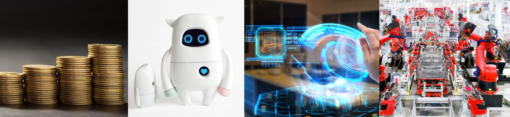
5.3 科技要素
对新技术和科研成果及其潜在价值直接或间接应用。
5.3.1 科技
技术以科学理论为基础，结合生产实际开发研究，得出新方法、新材料、新工艺、新品种、新产品等。
- 新材料、新工艺、电子信息技术、生物技术等。
- 蒸汽机引发工业革命。
- 计算机助力信息产业（交互设计和服务设计）。

5.3.1.1 科技是生产力
以知识形态为特征的一般社会生产力和直接生产力。
- 一种社会活动；
- 一种生产实践经验和社会意识结晶；
- 科技为社会生产力发展和人类文明开辟广阔空间，推动经济和社会发展。

5.3.1.2 科技是人类文明标志
科技进步为人类创造巨大物质财富和精神财富。
- 为人类提供电话、电脑、各种生活电器、工具、设备、汽车、高铁、飞机等。
- 为人类提供广播、电视、电影、录像、网络等传播思想文化新手段，使精神文明建设有新载体。
- 对丰富人们精神生活，更新人们思想观念，破除迷信等有重要意义。
5.3.2 科技因素对产品设计的影响
金木受攻而物象曲成。世无利器，即般、锤安所施其巧哉？《天工开物》
- 如没有制造工具技术，即使精工巧匠也不能施其才艺。
- 有制陶技术，才能出现形式各样彩陶，才会使陶瓷工艺品在中国工艺美术史上写下辉煌篇章；
- 有冶炼技术，才会浇铸出空前绝后司母戊鼎。
5.3.2.1 科技思想方法使产品设计更先进
科学思想方法渗透到设计活动过程中，对设计科学性和先进性提供基础保障。
- 设计借助想象,在意识作用下,依赖于现实工具和材料,凭借当时技术条件所做创造性活动。
- 现代设计是科技与艺术结晶。
5.3.2.2 科技发展带来新的市场机会（新行业）
文艺复兴后科技革命将最初手工业作坊发展到机器大生产,
- 这不仅一场生产技术革命,也一次深刻社会革命。
- 科技革命致使社会发展进入工业时代，导致设计与制造分离，产生设计行业。
- 电脑代替传统打字机 / 复印机代替复写纸 / 数码相机夺走胶卷市场
5.3.2.3 科技发展推动产品开发策略创新
- 新产品不断涌现，产品寿命周期明显缩短，要求企业关注新产品开发，加速产品更新换代。
- 要求不断分析科技新发展，变化产品开发组合策略，适应市场新变化。
5.3.2.4 科技为设计转化为新商品提供技术平台
- 手机、平板、电脑、电视等产品设计
- 流线型风格起源于空气动力学试验，产生广泛而持久影响。
- 现代主义运动因对机械认可，产生以理性、客观、简洁为表达方式设计。
5.3.2.5 科技发展促使消费行为改变
- 随着多媒体和网络技术发展，出现电视购物、网上购物
- 在家中通过网络系统订购火车票、飞机票、戏票和球票
5.3.2.6 科技发展促进社会经济结构调整
科技发展促进产品开发管理现代化
- 如电脑、传真机、电子扫描装置、光纤通讯等设备广泛运用，对改善产品开发管理起重要作用。
5.3.3 科技对产品设计的直接作用
从产品生命周期看出，科技提供产品心脏或胚胎。
- 新科技孕育新产品，新产品为科技发展提供物质保障。
- 工程技术、材料科学、信息技术对产品设计影响最为重要。
5.3.3.1 计算机辅助CAD
- 给产品设计内容、方式与手段带来革命性变化。
- 信息微处理技术使产品向微型化发展。设计师可在较大空间尺度变化范围内使产品形态设计多样化。
5.3.3.2 材料科学
- 塑料和冲压成型加工技术影响产品设计
- 由金属冲压成型技术获得大面积流畅曲面，为曲面形态设计提供技术保证。
- 复合材料-玻璃纤维-碳纤维产品
5.3.3.3 生产方式改变
- 传统机械化生产方式，在一个固定不变模子中大批量、标准化生产同样产品，当市场需求快速改变时，无法及时有效地调整，造成生产滞后于市场变化。
- 3D打印快速成型技术，通过自动控制和调节随时改变工作程序，快速改变款式品种。小批量、多样化、灵活柔性生产。缩短从设计到生产过程，及时满足社会多样化需求。
5.3.3.4 高科技产品开发呈棘轮效应
制轮作用指消费习惯形成后有不可逆性，即易向上调整，而难于向下调整。
- 知识更新加快和市场竞争加剧，使速度成为企业赢得竞争优势追求目标。
- 高科技产品周期不再按研发期、引入期、成长期、成熟期、衰退期、过渡期规律发展，而呈现棘轮一样效应。产品在引入期便迅速成长，成熟期后不经衰退期便进入新一轮循环，总趋势不断上升。
5.3.4 高科技产品开发形式
自主开发、联合开发（协作开发）与引进
5.3.4.1 自主开发
由企业依靠自身力量从事全部开发工作
- 从技术开发到工艺开发甚至从基础研究开始致产品打入市场全过程。
- 便于管理协调，利于技术保密与垄断，便于进度控制，掌握市场主动权。
5.3.4.2 协作开发
科技企业间，企业与高校、科研机构协作技术和产品开发
- 便于在一定范围内共享科技知识和人才。
- 协作开发能取长补短，促进新构思产生与完善，使开发工作向更深层次发展。
5.3.4.3 引进开发
企业由外界引进已成熟或基本成熟、已成功或即将成功技术、专利。
- 节省人力、物力、财力，争取时间，提高企业技术开发效率和档次，较快地将新产品推入市场。
5.3.5 科技与产品开发关系
- 产品开发和科技相互依存
- 产品开发和科技相互促进
5.3.6 开发高科技产品意义
- 突破资源约束，实现低耗高效内涵发展。
- 加速产业结构调整，提高生产技术水平。
- 产生更高附加值 (例：心脏监护仪可打印、回看，操作方便)
- 促进外向开拓，增强国际竞争力。
- 保证国家安全。
5.3.7 社会-经济-科技模型
社会、经济和技术因素改变会创造出新趋势和产品机会缺口。
- Jonathan Cagan 和 CraigM. Vogel提出帮助设计师系统分析设计背景工具
- 升降车SET(Society-Economy-Technology)分析
5.3.7.1 社会Society
- 仓储式购物中心
- 工人极度疲劳和重复性压力
- 员工参与
- 目录购物和网上购物
5.3.7.2 经济Economy
- 保险费(责任和工人赔偿)
- 人员调整费用
- 空间成本
- 工作效率
- 电子商务配货中心
5.3.7.3 科技Technology
- 技术整合和压缩
- 伺服传感和控制技术提高
5.4 人因要素
以人为本
为实现产品与人匹配，在设计中须考虑有关人的因素 (人类工程学、心理学、社会学和审美要素等)。
- 产品从完成设计最终到达消费者手中，需各专业人员协作完成。
5.4.1 人机系统分析
设计要适合人生理，心理因素, 研究人与物间关系，人与物交接界面上的问题。
- 人体尺度：人体各部分尺寸、体重、体表面积、比重、重心及人体各部活动时相互关系和可触及范围。
- 人体结构：人体各部分发力范围、活动范围、动作速度、频率、重心变化及动作时惯性等动态参数。
- 分析视/听/触/嗅觉及肢体感觉器官肌能特征，人在劳动时生理变化、能量消耗、疲劳程度及对各种劳动负荷适应能力。
- 探讨人在工作中影响心理状态因素，及心理因素对工作效率影响等。
5.4.1.1 人机系统研究作用
- 为设计中考虑人因素提供人体尺度参数。
- 为设计中产品功能合理性提供科学依据。
- 为设计中考虑环境因素提供设计准则。
5.4.1.2 人—机—环境系统分析
产品处于人—机—环境大系统中。
- 人、机、环境三者各自成为一个子系统，并形成彼此间3个界面。
5.4.1.2.1 人
- 感觉器官: 接收刺激信号
- 脑: 加工信息
- 效应器官: 执行
5.4.1.2.2 机
- 操纵系统
- 运转系统
- 显示系统
5.4.1.2.3 环境
- 自然环境: 资源环境、生态环境和地理环境。
- 社会环境: 民族、文化背景、社会制度、政府政策、国际关系等。
- 技术环境: 设施环境和协作环境。高度文明劳动环境由相应技术设施来实现。
5.4.1.3 人机系统分析四个基本问题
- （1）人机间功能分配问题: 什么工作适合人来完成，什么工作适合机来完成 (合理分工)。
- （2）人机结合形式问题 (人机界面设计问题)。
- （3）机械器具设计问题: 人机系统中，人使用什么工具和机械，比如操纵器与控制器设计。
- （4）人机系统评价问题: 怎样评价人机系统质量好坏。
5.4.1.3.1 例: 人和汽车功能合理分工
汽车自动变速器大大减轻驾驶员劳动强度，特别在城市红绿灯频繁出现道路。
5.4.1.4 产品设计中考虑人因素建议
- 人们往往希望东西体积细小，便于携带，容易包装。
- 人们普遍学会右旋法则，顺时针转动可关紧龙头，扭紧螺丝。
- 人们习惯于控制方向盘转动方向与车辆转动方向一致。
- 当指针式仪表可调时，人们习惯于调整旋钮转动方向与其指针转动方向一致。否则易引起调整错误。
- 人们习惯于一些颜色含义。
- 人注意受光亮、响声、闪光和亮色吸引，如显示器选择不当信号，难以引起注意，也可能分散注意。
- 人们习惯于面向声音信号源，所以驾驶舱内信号源要设计在操作员前方头位置高度。
- 人们往往认为产品安全，系统处于正常状态，比如默认提手足够结实，没有提防。
- 发现异常时，人往往用手去探究，引起伤害。材料选择和产品设计要避免人手触及危险部位。
- 人们期望桌椅台阶高度适合习惯高度。
5.4.1.5 人机系统功能分配
考虑人和机各自特点，根据二者长处和短处，确定最佳功能分配。
- 将人—机-环境大系统功能分解，合理分配给3个子系统承担，取得最佳技术经济指标。
- 考虑人因，贯穿产品设计全过程。将人看做系统一个要素，设计以人为主体最佳人机系统。
- 人机功能分配时，首先决定必要功能，接着分解各个功能根据人机特性比较逐一分配。
- 界面设计宜人，使人机有机结合，信息传递相互适应，使系统稳定高效。
5.4.1.5.1 子系统能力分析
人、机、环境三者各有特点，也都存在限制。
- 正确度界限 (人作业时或有误差)
- 体力界限 (长时间持续劳动易疲劳)
- 行动速度界限 (人运动速度有限，且处理信息需一定反应时间)
- 计算和感知界限 (复杂计算较慢，记忆有限，但能感知杂音中的信号，综合适应和推理能力较好)。
- 机器性能维持能力界限。不适当养护，性能不能长久维持，维护方法要由宜人原则来定出。
- 机器正常动作界限 (有可能突然异常)
- 机器判断能力界限（机器有一定判断性，但很有限）
- 费用高（短期投资大）
- 在系统运转过程中不断提供物资与能源。
- 接受系统排放，并予以消化。
- 创造人机良好工作周边环境。
- 环境设施承担群体共性功能。如机场导航系统为所有在航线上飞行飞机共享。
- 从社会角度解决系统运行问题。如为控制汽车尾气污染，通过立法强制推行安装汽车尾气净化装置。
5.4.1.5.2 功能分配原则
- 比较分配原则
- 剩余分配原则
- 经济分配原则
- 宜人分配原则
- 弹性分配原则
- 判断被噪声阻碍信息时;
- 在图形变换情况下，要求辨认图形时;
- 要求对多种输入信息能辨别时;
- 对发生频次非常低事态，希望能判断时;
- 要解决需归纳推理问题时;
- 对意外发生事态，能预知、探讨，报告信息状况。
- 对决定工作能反复计算，要储存大量信息时;
- 要迅速地给予很大物理力时;
- 整理大量数据时;
- 在危险、恶劣环境下作业时;
- 需精确调整操作速度等时;
- 对控制器施加力需严密时;
- 需长时间加力时。
5.4.1.5.3 功能分配总趋势
- 使人不断从繁重体力劳动中解脱出来，在大系统中更多地发挥智力强项功能；
- 使人一部分有明显规律性思维转由机去执行 (由计算机或自控系统执行)；
- 系统宜人性日益受到重视，人不仅承担系统分配功能，且物质和精神文明享受者；
- 机对环境设施要求越来越高，很多机械需公共设施支持，与社会环境关系也日益紧密；
- 人们已从机全寿命周期考虑人—机—环境大系统运转，及贯穿各阶段功能分配；
- 自然环境供给资源和接受排放功能应符合可持续发展战略。
- 随生产高度自动化和机器人广泛应用，无人工厂、无人驾驶，将来人该做什么工作?
5.4.1.6 人机系统分析和设计程序
明确系统目的，必要条件、控制条件等，再综合成系统方案。系统分析包括:
- 系统整体必要条件
- 系统外部环境
- 系统内部环境
- 系统组成分析
- 记录构成系统各要素机能特性和限制条件
- 人和机器协调和有机结合关系
- 要素决定(由人还是机器完成)
- 选择评价方法和方式
5.4.1.6.1 系统整体必要条件
- 系统使命、完成目的;
- 系统使用条件、使用一般环境条件;
- 系统任务;
- 机动性要求;
- 紧急保护措施。
5.4.1.6.2 系统外部环境
- 阻碍系统完成任务外部环境;
- 外部环境测定。
5.4.1.6.3 系统内部环境
- 照明、采光、振动、噪声等;
- 作业空间;
- 妨碍完成作业内部环境。
5.4.1.6.4 系统组成分析
5.4.1.6.5 记录构成系统各要素机能特性和限制条件
- 人最小作业空间;
- 人最大用力;
- 人作业效率;
- 疲劳;
- 人可靠性;
- 费用、输入输出力量、信号等。
5.4.1.6.6 人和机器协调和有机结合关系
- 人和机器作业分担;
- 共同作业时关系协调等。
5.4.1.6.7 要素决定(由人还是机器完成)
5.4.1.6.8 选择评价方法和方式
5.4.2 从市场角度分析人的因素
5.4.2.1 人对产品影响
人与机，消费者与商品，市场与营销
5.4.2.1.1 人与机
产品需人操作，形成人机关系
5.4.2.1.2 顾客与商品
- 考虑消费行为、习惯。
- 例: 苹果公司定位于更广大消费者（小学水平就能操作），开发出简单易用高级电脑。
5.4.2.1.3 企业与市场
产品开发要考虑市场和宏观战略层面，研究人类市场行为。
- 判断产品市场区域优势、营销品种问题、规模问题，
- 确定产品开发时机和入市时间，产品投放市场节奏和数量等。
- 设计基于市场容量和市场真正可能需求。
- 例: 2010小米通由各种营销手段从市场获得大量产品开发信息，短时间内建立起网络营销渠道。
5.4.2.2 人口对产品市场影响
人口性别、年龄、民族、婚姻状况、职业、居住分布等对产品市场格局和营销活动产生影响。
5.4.2.2.1 人口数量分析
人口数量决定产品市场规模和潜在容量。
5.4.2.2.2 人口结构分析
年龄、性别、教育与职业、家庭、社会、民族等不同
- 重视不同消费习惯，开发受市场欢迎商品。
5.4.2.3 市场购买力
- 购买力指在一定时期内用于购买商品货币总额。
- 购买力通过社会总产品和国民收入分配和再分配形成，
- 社会购买力来源于工资收入、其它收入(补贴、救济、奖励等)、贷款、社会集团购买消费品货币。
5.4.2.3.1 中国社会购买力主要由三部分组成
- 民购买消费品货币支出
- 社会集团购买力
- 农民购买农业生产资料货币支出
5.4.2.3.2 从自行车到汽车消费巨变
- 购买力取决于社会生产发展和国民收入 分配
- 20世纪80年代改革开放前，中国一个自行车王国。
- 改革开放后，购买力逐渐增强，由自行车王国逐渐演变为汽车消费大国。
5.4.2.4 市场成熟度
市场成熟度取决于消费活动成熟度和消费心理成熟度。
5.4.2.4.1 消费活动成熟度
- 包括消费群体对自己行为承担责任能力和愿望大小
- 消费者知识和市场行为，消费法规建设
5.4.2.4.2 消费心理成熟度
- 指消费群体消费意愿和动机
- 消费心理成熟度高消费活动不需太多外部激励，他们靠内部消费动机激励。
5.4.2.5 市场消费文化习俗
5.4.2.5.1 消费习俗
- 群体消费行为，约定俗成消费习惯。
- 主要包括饮食、婚丧、节日、服饰、娱乐消遣等物质与精神产品消费。
5.4.2.5.2 消费习俗特点
- 群众性
- 长期性
- 社会性
- 地域性
- 非强制性
不同消费习俗造就不同消费者。
- 消费习俗以社会活动为中心。
一种习俗产生和形成，要经过若干年乃至更长时间
- 而形成消费习俗又将在长时期内对人们消费行为发生潜移默化影响。
某种消费活动在社会成员共同参与下，才能发展成为消费习俗。
消费习俗通常带有浓厚地域色彩，特定地区产物。
消费习俗形成和流行，不强制发生，而通过无形社会约束力量发生作用。
5.4.3 从人性化角度分析人的因素
人性化有关动机因素、人体工学因素、美学因素、环境因素、文化因素
5.4.3.1 人性化设计观念
积极考虑新产品将在人们生活中发生的作用，及对周围环境影响程度。
- 人类生活有物质和精神双重需求，设计师要对生活敏锐感受和观察为提高人类生活品质作出贡献。
- 个人对公共资源或技术资源消耗，若由适当社会形态组织和协调，会得到很大节省。
- 诸如资源、公共设施、运输系统、传播媒体、通信系统等由全社会共同拥有、分享。
- 设计是协调自然、社会、科学、文化艺术的一种催化剂。
- 信息化时代问题，如孤独、失落感、心理压力增大等。原因并非技术本身，而是人性化观念失衡。
5.4.3.2 人性化设计原则
- 设计须为人类社会文明、进步作出贡献，使人类价值得到发挥和延伸。
- 以人而非物为中心展开各种设计，研究人生理、心理和精神文化需求和特点。
- 注重社会整体效益，克服纯经济观点。
- 提高人民大众整体生活品质。
- 使设计发挥谐调个人与社会、物质与精神、科学与美学、技术与艺术等关系。
- 充分发挥设计文化价值，把产品与影响和改善提高人们精神文化素养、陶冶情操目标结合起来。
- 把设计看成沟通人-物-环境-社会桥梁和手段，从大系统中把握设计方向，加强人机工程学研究和应用。
- 用主动、积极方式研究需求，探索潜在愿望，唤醒人们美好追求。
- 使产品尽可能具备更多易为人识别和接受信息，提高影响力。
- 继承和发扬民族精神、优良文化传统，为人类文明作出贡献。
- 动态观念：随时代发展，人性化设计观念不断充实和提高。
- 为消费者着想，并谐调好消费者、生产者、经营者关系。
5.4.3.3 人性化设计因素
影响人性化设计因素包括
- 需求因素
- 人机工程学因素
- 美学因素
- 环境因素
- 文化因素
5.4.3.3.1 需求因素(动机)
人类生存会遇到各种问题，就有许多需求，产品设计为满足需求而产生。
- 人的需求层次(马斯洛)
- 与设计关系密切的需求因素: 生理需求、心理需求、智性需求。
- (1) 生理需求: 免于饥饿、口渴、寒冷等基本要求。
- (2) 安全需求: 免于危险，使人感到安全要求。
- (3) 归属需求: 免于孤独、加入群体，接受爱和爱人的需求。
- (4) 尊严要求: 受人尊敬，有成就感等需求。
- (5) 认知需求: 知晓、了解、探索的需求。
- (6) 审美需求: 追求秩序和真善美的需求。
- (7) 自我实现需求: 发挥潜能，发展个性，表现性格特点的需求。
借助产品功能弥补人们无法达到或不方便完成的工作。
- 把设计看成人类本身系统再延伸。
- 例: 电话是听觉能力再延伸，计算机是人脑延伸。
审美、归属、认知或自我实现需求 (马斯洛分类)
- 造型美观、精致等赏心悦目的要求
- 例: 宜人要求，体现个性，满足成就感和归属感。
提高智力水平、解决问题能力、效益、速度等。
- 计算机代替算盘，信息办公系统。
- 符号语言设计使信息传递高效、简便、可靠。造型强调信息传达。
5.4.3.3.2 人机因素
如何使产品适合人使用，而不要人去适应产品。
- (1) 运动学因素: 即研究动作几何形式，探讨产品操作上动作形式、人操作动作轨迹及与此有关动作协调性与韵律性等。
- (2) 动量学因素: 即研究动作与所产生动量问题，如水龙头把手和打火机设计等。
- (3) 动力学因素: 主要讨论产品动态操作上所需花费力量、动作大小等。
- (4) 心理学因素: 主要探讨操作空间和动作等对人安全感、舒适感、情绪等影响。
- (5) 美学因素: 主要指在心理感受基础上，在形态设计方面如何满足人精神审美要求。
人知觉信息安排和人对产品操作合理性上，操作适宜性，整体设计有新秩序、安全及舒适感。
- 人体测量尺寸、人肌力、运动、生理特性可测量，有反复/持久使用动作受人体静态和动态尺寸影响
- 心理变化、环境作用等则不易直接测量，有些属于情感方面，还难以找出一套标准作为依据。
- 不同使用对象，因年龄、性别、种族等差别，其人机工程学特点大为不同。
5.4.3.3.3 美学因素
视觉(造型美)、听觉(音质美：洗衣机定时蜂鸣器、门铃)、触觉((材质美：把手、按键、旋钮))及其所感受对象符合审美情趣。
- (1) 视觉感受及视觉美创造;
- (2) 审美观及美感表现;
- (3) 听觉感受及听觉美创造;
- (4) 触觉感受及触觉美创造;
- (5) 美媒介及其美学特性发挥;
- (6) 美的形式;
- (7) 美感冲击力及人的适应性;
- (8) 美学法则和方法等。
5.4.3.3.4 环境因素
环境特点影响人们价值观念及生活态度，环境对产品设计影响包括微观及宏观两个层次。
- 微观：产品使用实际环境，对设计影响显性;
- 宏观：产品所处特定时空，对设计影响隐性(法律、法规、社会状态、文化)。
产品与人操作环境关系。产品使用时受到照度、温度、湿度、声音及其它干扰。
设计受时代环境影响。
- 1930~40s盛行流线风格，影响汽车及许多与流体力学毫无关系的产品设计。
- 信息化时代环境下，电脑及办公自动化产品影响设计风格(简洁、实用)。
5.4.3.3.5 文化因素
生活习俗和价值观念对产品设计有相当影响。
设计风格、观念及定位等方面须符合文化环境特点，与其谐调。
- 轻、薄、小巧的设计观念涉及人们生活态度。
产品设计往往影响人们生活文化，甚至导致新生活文化形态形成。
- 符合时代文化特点产品设计在广泛进入人们生活后，对生活形态产生巨大影响。
- 人性化设计提高文化素养，使人们价值观更为合理、进步。
5.4.3.4 以用户为中心的人性化设计
User-Centered Design在产品整个生命周期过程中，时刻考虑用户需求和期望。
5.4.3.4.1 以用户为中心设计含义及流程
使用产品的人。研究用户从用户作为人类的一般属性和与产品相关特殊属性着手。
- (1) 用户是产品使用者。包括当前使用者、未来和潜在使用者。
- (2) 用户有人类共同特性，例: 感知、行为特性等在使用产品时体现出来。
满足大多数用户要求。
- (1) 基本信息: 包括年龄、性别、教育程度和职业等信息。
- (2) 性格特征: 包括内/外向型性格; 形象/逻辑思维型等。
- (3) 基本能力: 包括视/听/触觉和本体感觉，判断、分析和推理能力，关节/运动/施力/反应特性等。
- (4) 文化区别: 包括地域、语言、民族习惯、生活习惯等。
- (5) 对产品知识了解程度: 是否了解现有产品或类似产品功能、是否有相关使用经验等。
- (6) 与产品使用相关内容: 包括使用场合、使用时间和使用频率等。
产品只有在用户满意条件下才可能有好的销路，为企业带来效益。
- 设计人员非常熟悉所设计产品，以至于察觉不到产品哪些方面会造成使用困难，更无从知道使用该产品发生错误操作几率。
- 产品用户，尤其初次使用或不常使用的人，对产品不了解，须通过学习才能学会使用该产品。
- 设计人员若能在研发阶段与用户有效沟通，使设计建立在深入、细致、准确地了解用户情况和需求基础上，可避免用户接受性差的产品出现。
- 产品种类非市场需求，
- 产品性能与用户要求不符，
- 产品外观缺乏吸引力，
- 产品难以学会使用，
- 产品可靠性、安全性差。
Total User Experience包括从最初了解产品、具体研究、购买产品、安装使用及产品各个方面服务和更新。
- 用户体验任一环节遇到阻碍，对产品满意度就会受到影响，甚至阻止用户到达下一环节。
任何一个产品诞生都要经历一个复杂过程。
- 虽每个产品设计开发有各自特殊性，但也可描述出以用户为中心设计总流程
- 以用户为中心设计流程分为策略和用户分析、设计和评估、实施和评估3阶段。
包括用户特征描述、需求收集和分析、目标定义和任务分析
- 着重解决问题: 产品设计设计方向和预期目标。
以用户为中心设计过程基础，它们可同时交叉且互相受益。
- 用户特征描述重点应明确谁是产品目标用户; 目标用户群体有哪些典型特征。
- 需求收集和分析理解目标用户对产品期望及目标。
一个产品往往不可能同时满足所有用户所有需求，且不同用户需求间往往互相矛盾。
- 设计和开发人员在全面分析用户和需求基础上，需根据自身条件将用户目标明确化。
目的是采用系统用户研究方法，深入理解用户最为习惯完成的任务方式。
- 任务分析数据来源于用户试验，
- 将试验得到信息归纳整理后用图示、列表、叙述等表达，作为设计指导。
策略和用户分析阶段为设计提供素材，这些素材须通过系统分析，并简洁表达。
- 在此基础上，设计定位，明确具体方向。
- 然后设计草图和模型开发。
- 用户测试法可直接发现用户使用产品问题，但其成本较高且周期较长。
- 专家评估法容易管理、用时较短，同时可能会发现一些比较深层次问题;但专家不是用户，反馈意见会存在不同程度偏差。
方案分析并完成设计，包括产品效果图和相关图纸、最终模型(样机)制作、设计说明撰写等。
- 实施阶段指产品设计方案实施及产品投放市场。
- 评估采用实验室可用性测试及用户调查表方法。发现新问题或用户建议，及时解决相关问题，有利于产品销售运作和下一代产品研发。
5.4.3.4.2 以用户为中心设计原则
强调设计应以用户需求和利益为基础，以产品易用性和易理解性为侧重点。
- 唐纳德.A.诺曼认为，设计人员首先确保用户能弄明白操作方法，其次确保用户能看出产品系统工作状态。
- (1) 保证用户能够随时看到哪些可行操作。
- (2) 注重产品可视性。
- (3) 便于用户评价产品系统工作状态。
- (4) 在用户意图和所需操作间、操作与结果间、可见信息与对系统状态评估间建立自然匹配关系。
简化产品操作方法，通过新技术和新设计对复杂操作重组。
- 考虑心理特征，短时记忆、长时记忆和注意力局限。
- a 通过简化设计使产品系统增强用户短时记忆;
- b 避免从长时记忆中提取信息时缓慢且易出错特性;
- c 在操作中尽量减少干扰因素，以免分散人注意力。
- 例: 用户界面操作中，尽量让用户通过识别界面信息就能操作，而不通过让用户回忆信息操作。
新技术通过减轻用户脑力负担，帮助用户对各种操作有效评估，并将操作结果以更完整和易理解方式显示出来。
- 例: 飞机高度显示仪，表盘只有几个指针，显示高度改变速率和方向，易理解;
- 而飞行具体高度则用数字显示，保证显示准确性，
- 操作界面可视：使用户明确应做哪些操作，及如何操作。
- 操作结果可视：使用户随时知道产品在操作过程中状态及操作过程反馈，并判断操作结果优劣。
例: 调节音响旋钮，人们要立即听到声音增大或减小。
产品用户界面 (Product User Interface) 主要讨论产品设计中用户和产品间认知与传达问题。
- 理想界面仅向用户提供当前所需信息，尽可能简洁。
- 在界面上每增加一个额外功能或信息，意味着用户要学更多东西，信息或功能被误解可能性会增加，且增加从中查找所需信息难度。
- 对图形用户界面来说，优良图形和色彩是设计简洁自然界面的基础。
界面上过多信息、数据和图形会让用户无法把握主要信息。
- 少即多法则保证用户能将界面中重要信息识别，并利用这些信息完成绝大部分任务。
- 例: 可专门为计算机新手用户设计一个简单界面，屏蔽掉针对熟练用户复杂功能(新手模式和熟练用户模式)。
增加人们对界面中各组成元素关系理解。
- 如一些东西放在一起，或用线框围住，或同时移动，或同时改变，或在外形、颜色、大小或印刷版式上类似，
- 就可认为是一个整体、单元或小组。
帮助用户给界面元素认知与使用顺序排序。
- 如利用闪烁、粗体或大写字母、印刷版式变化吸引用户注意。
- a 不过度使用颜色。用户界面颜色数量最好不超过5~7种。
- b 浅灰色或柔和颜色比鲜艳颜色更适合作为用户界面背景颜色。
- c 从色盲用户角度考虑，确保用户在不能辨色时也能使用，保证灰度显示时被清晰辨识。
- d 界面中颜色应仅用于区分和强调目的，而不用于提供信息尤其量化信息。
- e 针对不同产品，做到最佳色彩匹配。
- 例: 仪表盘的墨绿刻度盘配白色刻度标或黄色刻度盘配黑色刻度标，误读率低。灰黄色刻度盘配白色刻度标，误读率高。
产品设计中建立正确自然匹配关系，应使用户能够看出:
- a 操作意图和可能操作行为间关系。
- b 操作行为与操作效果间关系。
- c 产品实际工作状态与用户通过感知系统 (视觉、听觉和触觉等) 感知工作状态间关系。
- d 用户感知产品工作状态与用户实际意图、 需求及期望间关系。
限制因素包括产品结构、逻辑、语义和文化限制因素。
将产品可能操作和使用方法限制在一定范围内，并有效地将正确操作方法显示。
- 例: 突出垂直门把手向使用者暗示其正确开门方式门应往外拉。
在产品中存在空间或功能逻辑关系。
- 例: 自然匹配关系应用。
通过形状、大小和色彩等语言，来传递产品应怎样使用。
- 例: 产品操作面板上操作键凸起与凹进，决定操作键旋转或按压操作。
一些已被人们广泛接受的惯例。
- 例: 筷子是中国人生活必备品，外国人初次见到筷子时，不知怎样使用。
考虑到用户使用产品时可能出现的所有操作错误，并应针对各种错误，采取预防和处理措施。
- 且容错设计应让用户知道操作错误可造成的后果，并使用户较易取消错误操作，让系统恢复以前状态。
- 例: 计算机文件删除命令不会不可撤销地删除文件，而仅仅移动放置在另一地方，操作者有机会恢复因过失造成的错误操作。
采用最佳匹配原则，可能导致操作复杂化。当无法做出最佳选择时，可依据标准化设计，使操作步骤、结果、操作及显示方式等标准化。 标准化设计益处: 用户易学习。 例: 字母位置标准化设置计算机键盘，无论用户购买哪家键盘，只需学一次掌握使用要领。
- 过早，因技术不成熟，导致规则不实用，易造成操作差错;
- 过晚，因生产各方已形成自己传统，而难于改变。
5.4.4 消费者(用户)
消费者对设计目标要求性能好、功能完善、外观美、使用操作方便、价格合理。
- 通过产品市场表现反映不同消费层次和喜好
- 产品效能只有通过人使用才能发挥,而人能否正确、有效使用产品取决于产品本身否匹配人身心。
- 人类工程学对人生物特性研究(基础),及人与产品、环境等关系合理化研究(应用)。
5.4.4.1 用户体验设计
与直接用户相关,核心: 带给用户价值感和愉悦度,而不仅系统实用功能和可靠性能。
5.4.4.2 用户体验要素五层面
- 表现层:界面和外观
- 框架层:产品各元素位置规划,优化设计布局,提升效率
- 结构层:根据产品操作流程安排各元素和功能部件相互关系和层次结构
- 范围层:产品能实现功能有哪些
- 战略层:产品开发宏观目标
5.4.4.3 通用设计
- 对产品设计和环境考虑尽最大可能面向广泛使用者一种设计活动。
- 如视觉设计考虑红绿色盲人群存在。
- OXO Good Grips削皮器因其高度可用性、美观和对材料创新应用减轻手臂患关节炎人群使用负担。

5.4.4.4 例：车铃系列化产品
充分满足各类消费者多样化需求。
5.4.5 设计者
- 最大限度满足商家和使用者要求,
- 最大限度满足宏观环境要求。
- 最大限度发挥设计者(设计师和设计项目团队)创意、设计修养和艺术修养,
- 充分展现设计才华和设计价值,
- 使科学性和艺术性在设计作品中得到完美体现,
- 实现功能与形式辩证统一。
5.4.5.1 例：马自达新概念汽车
- 追求新、奇、特
- 外观充分展现设计师对汽车科学性和艺术性完美统一设计思想。
5.4.6 生产者
生产者工作效率和质量关系产品成败。
- 设计是影响效率和质量的前提条件。设计时充分老虑生产线与装配流程,及工艺特点和生产管理方式,最大限度与之相适应。
- 同时考虑人操作特点,尽可能减少装配部件和装配工序,优化装配方法,降低组装难度等。
- 产品在生产过程中储运方式也应重视。
- 例:某企业空调生产线最后程序由人工对两个不同型号机型分别包装封箱,两个机型仅在某局部有细微差别,包装箱几乎一样,只有箱体下角F-1和E-1字样区别,经常造成机型与包装箱不符错装。
5.4.7 营销者
销售人员能动性至关重要。设计时须根据营销活动特点考虑产品与营销者匹配。
- 如销售时陈列方式,广告部门根据产品特点完成视觉设计。
- 在设计阶段就考虑产品展示,有利于促销时二度创造及不同条件下促销行为(如现场演示,适应各种卖场包括百货店或超市等不同展示陈列环境)。
- 设计也应考虑产品销售过程中送货、安装等服务,包括移动、运输、仓储、商品分类等。
5.4.8 回收者(及维修人员)
产品更新周期日益缩短,应使废旧产品继续产生价值,如整体回收和拆解回收。
- 分解:如计算机,部分再生利用,部分重复利用,其余成为垃圾
- 分类:
- 堆集:设计应考虑堆放效率,节省空间,使回收工作轻松有效。
- 运输:
- 防污染:
5.5 环境要素
资源可持续利用
- 将环境要素作为产品设计、开发、生产过程中评价指标是可持续发展需要,也关系到产品生产者和使用者实际利益。
- 重视产品与环境、环境与人的关系。
- 考虑环境要素，面向产品全生命周期设计，以解决产品在生命循环每个环节的环境问题。
5.5.1 生态环境问题
指人类为其自身生存和发展，在利用和改造自然过程中，对自然环境破坏和污染所产生危害人类生存各种负反馈效应。
- 生态学研究动植物及其环境间、动物与植物间及其对生态系统影响一门学科。
5.5.2 生态环境保护
5.5.2.1 全球生态环境保护
- 《人类环境宣言》中，各签署国达成七条基本保护环境共识(1972)
- 《地球宪章》在巴西里约热内卢联合国环境与发展大会上签署(1992)
5.5.2.2 我国生态环境保护
生态文明建设：思想上正确认识环境保护与经济发展关系；政策上从国家发展战略层面解决环境问题；措施上实行最严格环境保护制度；行动上动员全社会力量共同参与保护环境。
- 坚持污染防治与生态环境保护并重。
- 坚持把节能减排放在更加突出、重要位置，不断加大工作力度。
- 积极引导有利于能源资源节约和保护生态环境消费模式
- 建立适合现阶段生态环境建设自然保护区管理体制。
- 正确对待自然生态资源，实行绿色经济。
- 提倡绿色消费，节约物质资源。
5.5.3 产品生命周期
5.5.3.1 商业产品生命周期
从市场营销角度看,新产品投入市场到退出市场生命周期分4阶段:引入期、成长期、成熟期、衰退期。
5.5.3.2 绿色设计产品生命周期
绿色产品生命周期从原材料加工、产品生产制造装配、包装运输、销售使用,到回收重新利用全过程:
- 原材料投人阶段;
- 产品规划、设计与生产制造阶段;
- 产品销售和使用阶段;
- 产品维护和服务阶段;
- 废弃、淘汰产品回收、重新利用阶段。
产品生命周期各阶段都会有物料输入和输出,有些进入人为循环再利用,有些则进入自然循环,可能造成环境生态问题。
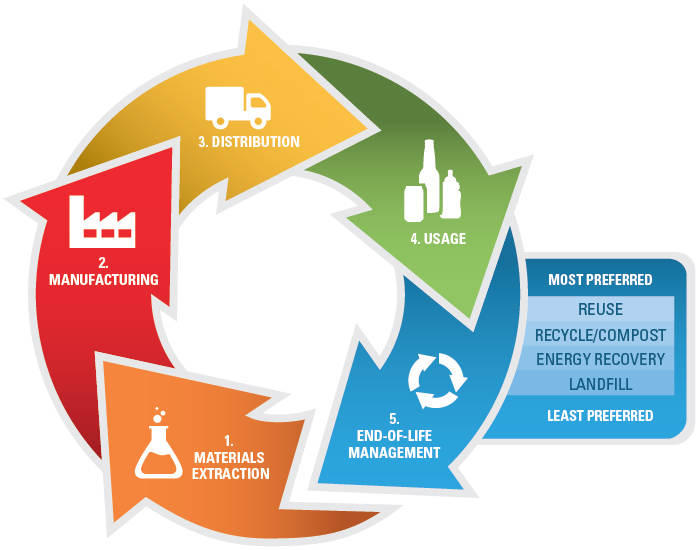
5.5.4 绿色设计
环境问题日益突出: 森林破坏，土地侵蚀，沙漠扩大，空气污染，水污染，核污染，农药污染…
- 到20世纪五六十年代，随人口增加，矿物燃料使用，使废弃物不断增加，环境问题已发展为严重国际社会问题
- 实行经济建设、城乡建设、环境建设同步规划和实施，使环境保护及建设与国民经济和社会发展相协调。
5.5.4.1 提高设计观念中的环境意识
在产品设计、生产、使用、废弃全过程中控制环境行为
- 掌握生态设计理论和方法，使对环境污染、破坏最小进而达到根本上清除。
- 改善生活条件，创造健康、舒适、清洁、优美、宜人生活环境。
5.5.4.2 绿色设计特点
绿色设计扩展产品生命周期。传统产品生命周期仅从生产投入到使用为止，而绿色设计将产品生命周期延伸到下一循环。
- 绿色产品设计是一个并行协同过程。
- 绿色设计考虑环境需求,从源头做起。
- 绿色设计使构成产品零部件材料得到充分利用,使产品在整个生命周期中能耗最小。
- 绿色设计减轻甚至消除产品生命周期末端压力,即减少废弃物、垃圾污染及环保治污方面投入。
5.5.4.3 绿色设计原则
- 产品功能先进、实用适度，去掉冗余设计;
- 造型易加工生产，节约能源减少材料消耗;
- 提高产品使用寿命;
- 增强产品维修性能，供应充足配件; 选用无毒、易分解不危害环境材料;
- 包装设计摈弃不必要装饰和过分包装; 使用再生材料及生物降解材料。
5.5.4.4 设计绿色消费商品
环保商品已被消费者赋于时髦高尚形象，开始畅销，使企业在开发产品时，注意环境功能评价，兴起绿色消费设计浪潮。
- 理想绿色消费商品应在生产中不造成污染，产品废弃时可回收，且取材有利于综合利用资源。
- Eco-Mark生态标志商品 (不含毛氟烃喷发胶、废塑胶再生制品、婴儿尿布、废食用油再生肥皂)
- 绿色食品在产地生态环境，原料作物环境及生产操作过程，生产、包装、储运、检测及外包装等均应符合绿色标准。
- 绿色食品不仅有良好社会效益，且因内在质量好及其生态价值高而成为一种高附加值商品。
- 造型易加工生产，节约能源，减少材料消耗，提高使用寿命；
- 增强产品维修性能，供应充足配件，选用无毒、易分解不危害环境材料；
- 摈弃不必要装饰和过分包装，使用再生材料及生物降解材料。
5.5.4.4.1 例：洗衣机
为避免洗衣机消耗大量水和产生污染洗涤液废水，一种不用水和洗衣粉的洗衣机出现。
- 迷你型食盐吸附洗衣机：通过人手推动使洗衣机滚动清洗轻薄T恤，裙子，毯子，毛绒玩具等,不消耗水和有污染洗涤液
- 环保洗衣机：运用电离空气技术洗涤衣物，不需水和洗涤剂。
5.5.4.5 设计可回收环保产品
- 产品在完成使用后，继续保留会造成环境污染，那么设计应考虑易拆除和销毁(焚烧、压碎、熔化、切割等)。
- 材料、元件和子系统回收，易拆卸，分成多种材料。
- 减少资源消耗及对环境污染。如在玩具设计中采用发条和重力原理减少干电池危害。
- 废弃物再资源化设计。如用樱花木、栎木、榉木等下脚料，作字母拼图材料。每种木头香味、颜色、手感不同，在玩乐中记住A、B、C……。
- 废弃物分类回收
5.5.4.6 设计可重复利用产品
使已成废品东西重新变为有用, 控制污染，保存资源。
5.5.4.6.1 重复利用水平和程度受经济因素影响
- 比如当矿藏资源减少且土地占有费用增高时，重复利用就可能增加。
- 其它影响重复利用经济因素包括赋税信用、消费者态度、污染控制费用、收集费用及运输问题等。
5.5.4.6.2 用于重复利用设计
产品整体或部件再次利用
当完成预定功能后，可移作其它用途。比如汽车零件可作为再制零件重复利用。
- 汽车零件如座位或暖气片等固定件标准化，适应不同型号汽车。
- 在关键部位使用插入件有助于修理和更新，比如电动机电刷、轴承、连杆
分类能增加废料实用性。
- 废纸可作为发电厂燃料，或作为原料再用来造纸，
- 冲压金属下脚料可回炉重新熔炼，
- 木材加工中碎屑可制成再造材料，
- 热塑零件浇口和浇道通常被磨碎后掺入没用过材料中,
- 旧船能变成钢筋用于钢筋混凝土。
- 从旧汽车电池中回收铅和在冲洗照片废液中回收银。
- 把汽车里铜线都集中在电缆内，易拆卸；
- 积木式组件和按扣装配概念使产品易拆卸。
5.5.4.7 生产制造生态化
工业废弃物对环境污染十分严重，据报道，美国工业废弃物以每年4．5％速度增长，国民生产总值增长一倍，环境污染则增长20倍。
5.5.4.7.1 生态工艺代替传统工艺
无废料生产工艺，以闭路循环形式在生产过程中实现资源充分合理利用，使生产过程保持生态学意义上洁净。
5.5.4.7.2 材料选择
使产品在回收时能再生利用或纳入生态循环系统减少公害。
- 例: 若能解决塑料再生利用，塑料将成为理想设计材料。
- 选用能用人工种植养育木、竹、动物皮、毛等。在大规模植树造林基础上，将生产活动纳入自然界合理物质循环系统中。
5.5.4.8 生活环境生态化
- 改善居住条件，创造清洁、优美生活环境，美化生活，更提高环境质量积极因素。
- 提高设计中环境意识，在产品、生产、使用、废弃全过程中控制环境行为，掌握生态设计理论和方法，提高人类生存环境质量。
5.5.4.9 在设计中遵守环境保护法规
环境问题已为全球危机，大气二氧化碳浓度增加，臭氧层破坏及酸雨等。
- 欧洲和美国制定汽车排放标准，减少机动车排放污染物
- 我国从1983年开始，陆续颁布尾气排放标准和实施法规。
- 我国1999年公布新修订中国逐步淘汰消耗臭氧层物质国家方案，冻结氟氯烃产量。
- 在产品评价指标体系中增加相应环境功能项目,比如零排放－电动车。
5.5.5 仿生设计
- 研究自然界各种事物功能、结构、形态和色彩等，并应用到设计中。
- 群体仿生设计
5.6 作业五
- 围绕人与自然展开生态化产品设计调研与分析（结合实例，明确主题），并提出自己的想法(新的设计构想或某问题的解决方案)
- 做成PPT，10月7日(周一)23:00前发送到anhongz@outlook.com
- 文件名: PSD5-标题-姓名
- 文件类型: 演示文稿或PDF文档
6 产品系统设计流程
6.1 设计流程综述
6.1.1 设计流程基本概念
6.1.1.1 需要-设计链
6.1.1.2 面向机会流程
- 新趋势 –> [识别机会]-一个机会 –> [理解机会(多方面研究)]-产品定义 –> [概念化机会(生成多个概念并作出选择)]-一个概念 –> [实现机会(构思多个产品并细化设计) –>产品提案
6.1.1.3 设计活动方式
6.1.1.4 设计思维活动系统(模型)
- 信息输入过程
- 信息处理过程
- 信息输出过程
6.1.1.5 设计流程的时间概念
- 影响产品开发时间因素
- 产品寿命
- 敏捷开发
6.1.1.5.1 影响产品开发时间因素
- 对市场与用户需求掌握程度(若需求信息掌握不足,会导致开发过程中往复)
- 产品所需技术
- 需整合零件数目及零件装配难易程度
- 开发工作人员数目及人员组成多样性程度
- 管理质量(若管理不到位,会导致资源浪费和各部门协作效率低下)
6.1.1.5.2 产品寿命

6.1.1.5.3 敏捷开发
敏捷开发应对产品迭代周期缩短趋势。

6.1.2 产品系统设计流程
根据不同阶段不同设计内容和明显阶段差异,完整产品开发系统设计过程可划分为6个阶段
6.1.2.1 产品开发目标化阶段
对新产品产生希望和预见。设计酝酿、筹划期和产品开发创意阶段,结果制定和下达产品开发任务书及配套开发计划,包括经费预算,后期产品宣传策划等。澄清以下问题：
- 市场反馈和预测战略分析
- 确定设计战略目标
- 做出开发计划日程安排
- 经费预算计划
- 设计后期产品宣传策划
6.1.2.2 设计概念化阶段
针对调研产品,将企业战略目标转化为具体概念、构思。
- 对目标有理性认识和初步思考,包括以下内容
- 总体分析
- 建立产品功能模型
- 澄清以下问题
6.1.2.2.1 总体分析
确定系统总目标及客观条件限制:
- 产品市场定位
- 任务与要求分析:确定为实现总目标需完成哪些任务及满足哪些要求
- 新产品大体规格
6.1.2.2.2 建立产品功能模型
- 功能分析
- 指标分配
- 方案研究
6.1.2.2.3 澄清以下问题
- 确定存在问题领域
- 确定需求范围、市场和消费需求品缺陷和价值。
- 确定目前技术可能性。
- 定出概略性能说明。
- 搞清预想重要问题领域以确认技术可能性,收集现有数据,对开发产品应具备性能要求作出明确说明。
- 初步分析产品市场定位、产品特性、产品卖点。
6.1.2.3 设计视觉化阶段
- 以实现创意为目的。产品建模,通过实际构建功能模型或以数字分析方式建模,对执行效果测试。在产品开发现实环境中考虑建模,用以有效地帮助设计决策工作。
- 由朦胧意象向明确视觉形象转化工作,设计核心阶段和能够被他人明确感知阶段。
- 此阶段由构思分析、方案综合、模型试验(形态、尺度等几何要素)、反馈修正4个设计环节组成。
6.1.2.3.1 构思分析
- 研究实施可能性(初步设计分析)。
- 明确可能实施技术,讨论细节问题。
- 明确经济上可能性。
- 决定重要问题,对关键技术分析。
- 提出总体解决概要(设计1草)。
- 检查消费者和生产者经济能力(购买力和生产成本平衡可能性)，做出解决问题设想概要构思分析。
6.1.2.3.2 方案综合
- 开展方案设计,对构思综合设计。
- 补充可能说明(说明书2)。
- 开展细部设计(设计2草)。
- 预测技术性能和生产成本。
- 制定设计方案文件。
6.1.2.3.3 模型试验
- 设计方案二维原型展开三维尺度模型试制。
- 制造原型(原型1)。
- 试验检查原型。
- 评价技术性能。
- 使用者原型试验(试验1)。
6.1.2.3.4 反馈修正
- 通过检查原型,从中发现新问题,确认已提出设想,并确定无法解决部分,
- 然后用原型性能试验,最后实际应用实验等。
- 通过试验评价设计和技术,在这一阶段里以说明书中记述内容为具体基准,
- 按说明书细部设计,然后对体现设想图或文字说明文件修订。
6.1.2.4 设计标准化阶段
- 利用成熟技术,避免重复设计,深化设计前,按系统思想对产品全面调查,落实产品已有技术和标准规范。
- 同时,对产品种类、规格、技术模块、产品平台、系列化开发、风险与成本控制等问题作出系统规划。
6.1.2.4.1 调研、搜集目标产品已有技术、标准、规范
- 技术标准：国家、专业和企业标准等有关涉及原材料(毛坯、半成品)标准、零部件标准、设计标准、工艺标准、工艺装备设备维修标准、自制设备及设备维修标准、环境条件标准及产品标准和捡验标准。
- 安全标准、方法标准、包装标准、编码(编号、代号)标准。
- 对目标产品已有专利、商标等系统调研，搜集有关信息和各种相关资料。
6.1.2.4.2 产品标准化工作
- 设计预备工作和大量细致市场调查工作和资料收集工作，以明确设计概念。
- 简化产品品种，防止出现不必要多样化，以降低成本。
- 参数应形成系列，参数系列可从国家标准优先数列中选取。将同一品种或同一型式产品规格按最佳数列排列，形成优化系列，以尽量少品种数目满足最广泛需要。
6.1.2.4.3 产品技术平台整理测绘、拆卸产品、研究产品基准
产品系列确定后,用技术经济比较法,选出最优结构作为基本型,开发各种换型产品。
- 能满足基本型产品结构直接采用,或做局部调整,
- 将不能满足基本型产品部分作为产品开发主要设计工作展开概念与方案设计。
- 例：汽车设计要利用已有汽车底盘和发动机开展设计工作
- 例：吸油烟机要利用已有专业风机(电机、风轮、涡壳)开展设计工作
6.1.2.5 设计产品化阶段
- 选优得到设计方案须在设计过程中加以实现。对购买要素、部件制造、产品组装等依据预定规范和标准,将产品具体化。
- 视觉化后经标准化修订就要实做产品,从产品生产和工艺角度对设计检验和修正,对产品结构、材料、零件制造工艺,产品装配工艺、及产品功能和产品性能全面检验,包括成本分析等。
- 一个真实设计在设计活动过程中会遇到极大技术性挑战。产品与设计资料和任务书一致或发现新问题加以解决,或优于原设想目标,或证明设计目标不可行这一阶段标志性成果。
6.1.2.5.1 产品化阶段主要解决以下问题
- 对产品结构、材料、零件制造工艺、产品表面处理效果、产品装配工艺按生产要求实做。
- 从生产和工艺角度对设计检验和修正。
- 使用评价。
- 产品功能和性能对照设计目标全面检验,包括成本分析。
- 产品与设计资料和任务书相一致或发现新问题加以解决,或优于原设想目标,或证明设计目标不可行。
6.1.2.6 产品开发商品化阶段
- 产品试销评价而转化成为大批量生产商品设计终极目标。
- 将产品经过包装、宣传、展示、销售、使用、维护、反馈,使产品真正转化为商品
6.1.2.6.1 解决以下问题
- 将产品经包装、宣传、展示、销售、使用、维护、反馈,使产品真正转化为商品。
- 销售调查(产品试售)
- 生产计划
- 机械设备和市场准备
- 开始生产(商品化)
- 生产和销售
6.1.2.7 产品系统设计流程变化
- 在产品开发过程中,设计流程并非一成不变,设计过程或反复多个回合才能获得理想结果。
- 各种产品设计方式与过程有很大差异;
- 各种不同产品设计程序也不尽相同;
- 各国家与地区工业设计发展水平与设计方式也不尽相同。
- 随着设计科学发展,设计手段不断发生新变化,
- 计算机辅助设计在设计领域普及,使得产品设计方法与设计程序处于一种动态发展过程中。
6.1.3 产品系统综合设计流程
- 把产品诸因素层次关系及相互联系解清楚，发现问题，
- 对分析结果归纳、整理、完善和改进，按预定系统目标综合整理出对设计问题解答，
- 用系统分析和综合方法产品设计，在新起点上达到系统综合。
6.1.3.1 系统综合
- 根据系统分析结果，在经评价、整理、改善后，决定事物构成和特点，确定设计对象基本方面，
- 在系统分析基础上提出全面、完善整体解决方案。
- 应尽可能作出多种综合方案，并按一定标准和方法评价、择优。
6.1.3.2 产品系统综合创新原则
- 把宏观、市场、内部要素综合分析。
- 把局部与整体效益结合考虑，追求最佳效益。
- 依据目标性质采取定量或定性分析方法。
- 遵循系统与子系统或构成要素间协调性原则，使总体性能最佳。
- 遵循辩证观，从实际出发，作出周密调查，考虑各种因素，准确反映客观现实。
6.1.3.3 系统分析和综合一般程序
系统分析和综合是一个扩散和整合交织反复的过程。
- 设计调研有关信息（宏观、内部）
- 系统对象选择
- 确定设计目标
- 系统分析
- 发现问题
- 系统整合创新
- 方案研究
- 可行性分析
- 系统优化（标准化）
- 系统设计展开
- 深化设计
6.1.3.4 产品系统分析流程
- 产品系统分析
- 技术资料搜集分类
- 确定设计目标与设计准则
- 产品分解
- 功能环境分析: 分析系统同环境相互影响
- 系统结构分析: 分析构成系统子系统功能及相互关系（连接关系、装配关系、材料工艺）
- 形态要素分析: 分析构成系统各层次要素及外观相互关系（形态、比例尺度、表面装饰、设计风格）
- 人机系统分析
- 产生对系统输入、输出及转换过程多种设想，探索可能方案。
6.1.4 基于产品生命周期的系统设计
6.1.4.1 产品整体概念
产品指以满足某种欲望和需而(由生产者)提供给市场一切东西 (菲利普·科特)。
- 产品包含核心产品、有形产品，期望产品，附加产品和潜在产品五个层次。
6.1.4.1.1 核心产品（基本功能）
- 如棉皮大衣内部保暖部分。
- 美的(Midea)MRO202-4双出水反渗透净水器
6.1.4.1.2 有形产品（基本形式）
- 有形产品产品结构、外在形态造型和市场形象部分
- 如棉皮大衣面料、款式等。
- 如冰箱质量、造型、颜色、容量等。
- 美的净水机
6.1.4.1.3 期望产品（期望该有的产品属性和条件）
- 包括说明书、质量保证、安装、送货、产品使用技术培训或指导等。
6.1.4.1.4 附加产品（附加利益和服务）
- 由营销活动附加到产品上服务和利益，
- 包括产品包装、顾客咨询、提供信贷、免费送货、时间保障、质量三包、售后维修服务等。
6.1.4.1.5 潜在产品（未来发展、补充、完善或升级）
- 有可能实现附加部分和新增功能。要求企业不断寻求满足顾客新方法，将潜在产品变成新产品。
- 例: 持续开发出新不同用途单反镜头。
6.1.4.2 产品生命周期分析
产品循环系统：设计->制造->流通->回收
6.1.4.2.1 产品生命周期(Product Life Cycle)
- 市场角度：引入期、成长期、成熟期和衰退期
- 系统角度：研发期、引入期、成长期、成熟期、衰退期、过渡期
6.1.4.2.2 产品生命周期意义
- 适于企业产品开发战略规划
- 通过不断创新，开发新产品，使产品在市场上永葆青春。
- 判断产品所处生命阶段，推测发展趋势，采取相应策略，增强竞争力，提高经济效益。
- 产品衰退。通过改进策略，再创产品新生命周期。例: 机械产品自动化，智能化，燃油汽车电动化。
6.1.4.2.3 产品全生命周期各阶段分析
决定产品市场命运关键部分: 技术诞生、产品技术研发、产品设计、产品生产
- 技术开发：把研究发现或科学知识应用于产品和工艺上的技术活动。据市场现实或潜在需求，通过一定材料和技术路线，采用适当方法和手段，筛选出更好满足市场需求新品种、新技术。
- 工作特点：产品功能指标确定、各种方案尝试、各种结构比较、各种材料试用等开拓创新性工作产品研发期。
投产试销、进入市场
- 新产品上市处于试销阶段，同行竞争者少。
- 引入期新技术产品问题也较多，主要开发任务改善产品功能，注重功能拓展，使功能、结构、造型关系趋于合理。
产品发展演化
- 产品上市中期，顾客对产品已熟悉。
- 产品设计处于改善功能、提高可靠性、提高舒适程度、提高功效阶段。
- 用户对产品功效反映最为强烈。消费者开始参与设计和影响设计。
- 产品核心技术结构和工艺基本定型。
- 产品结构向模块化整合方向发展。
- 产品市场需求趋向饱和，产品促销逐渐增加。
- 设计重点由技术-功能转向形式：好操作、高效亲和人机界面、造型美观、个性化设计、品种系列逐渐增多（各种品牌、各种款式）
产品衰落到转化蜕变
- 产品过剩，销量负增长，利润下降。
- 消费者对产品提出全方位要求：功能、材料、工艺、造型、色彩、表面处理、价格等进入完善阶段。
- 企业在衰退初期，须主动变化和创造新有利局面。
后衰退期，据市场反馈进入下一轮产品开发
- 产品花样翻新寻求蜕变，替代产品即将打入市场
- 市场出现新老产品同时销售局面。
- 老产品因品牌建设投资、技术投入、设备投入、产品线都比较完善，投资挖潜、资源综合利用过渡期主要任务。
6.1.4.3 产品绿色生命周期系统
- 生产制造:减少污染物排放(材料、工艺、设备、作业方式)
- 营销推广:环保包装、环保广告
- 物流运输:合理规划(运筹学),减少浪费和排放
- 用户使用:延长使用寿命、减少损耗与排放
- 回收利用:易拆分,再加工
6.2 设计规划
6.2.1 战略思想
- 宏观环境因素影响下指导未来10-20年后所需工业化产品设计思想
- 通过产品战略规划及其调整来反映
- 例：比亚迪于2009年在国内投放纯电动车型(e6)
6.2.2 决策思想
6.2.2.1 产品开发决策由市场需求和企业目标引起
- 为在开发过程中配合整体营销计划使产品系列在复杂市场等条件下不断成长
- 设计者应充分了解市场问题，依据营销计划和目标，拟定各种商品设计策略
6.2.2.2 做大、做强、占领尽可能多市场

6.2.2.3 跟风领先者
- 与行业领先者竞争采用风尚思想,即跟风领先者、紧盯时尚风格
- 例: 宝马SUV车型X3在市场表现出色,大众公司、奔驰公司马上跟风
- 奔驰推出紧凑级GLK小型豪华越野车、大众公司推出Tiguan等对等SUV车型跟风
- 大众公司U型前脸造型在市场被看好,纷纷推出各公司变形U型前脸造型
6.2.3 产品系统设计模式
为适应不同目的，采取不同系统设计模式：
- 串行/并行
- 自下而上/自上而下
6.2.3.1 串行系统设计模式（串行流程）
将设计各环节视为系统要素，要素间构成关系按一定顺序。以强调行动、行动间关系及顺序为特征。
- 串行模式特点：突出特征要素间有相关性和依次产生制约性。
- a. 串行模式因单线进程,故易整体控制。
- b. 但犹如串联电路,线路上某一元件出现故障,会造成整个线路瘫痪。
6.2.3.1.1 串行系统开发流程
- 计划阶段 –> 构思阶段 –> 提案阶段 –> 转化阶段
| 项目 | 内容 |
|---|---|
| 企业方针 | 确认组织者 |
| 设计策略 | |
| 评价基准 | |
| 资料准备 | 调查资料(市场调查\消费者调查\动机调查\竞争产品调查) |
| 研究资料(技术资料\专利资料) | |
| 发想资料(集体提案\构想资料\草图\效果图\模型\制图) | |
| 事业计划 | 日程 |
| 事业计划书 | |
| 设计计划书 | |
| 确定计划 | 产品构成内容\详细日程\会议记录 |
| 设计方针 | 设定基本条件、确定阶段目标任务书 |
| 资料整合调研 | |
| 分析 | |
| 方针(概念) | |
| 组织形式 | 确定组成人员 |
| 项目 | 内容 |
|---|---|
| 展开构思 | 设计日程表 |
| 构思草图、形式草图、基本尺寸图、三视图 | |
| 概念制图、草模、试模、样机 | |
| 检验\讨论\评价 | 检讨、交涉、会议记录 |
| 设计部门内部检讨、评价与主要技术资料相关者 |
| 项目 | 内容 |
|---|---|
| 总合 | 效果图、展示、模型、制图、提案者 |
| 设计定案 | 高层会议、相关者参与、记录、原型确定 |
| 项目 | 内容 |
|---|---|
| 试制原型 | 细部做法书、详细图、组装图 |
| 修正任务书、试验数据 | |
| 确认 | 指出修正点 |
| 认可 | |
| 会议记录 | |
| 量产试制 | 委托修正 |
| 认可量产试制原型 |
6.2.3.1.2 串行设计流程
| 项目 | 子项目 | 作业内容 | 例会 | 技术支持 |
|---|---|---|---|---|
| 构想设计 | 确立概念 | 收集资料(市场研究服务、需求研究)\ 现有产品研究\技术条件分析\各类咨询 | 确立基本理念、确定概念 | 提供相关资料及信息 |
| 初步设计1 | 展开构思 | 构思草图展开\基本设计思想(构成、功能、造型、构造) | 决定设计方向 | 核对技术条件 |
| 初步设计2 | 按既定目标展开设计 | 设计草图展开\草模制作\使用状态研究\初步色彩计划\可行性研究 | 初步设计定案 | 提出生产技术要求 |
| 实施设计1 | 按既定目标展开设计 | 外形尺寸草案\外观效果图\设计模型表现 | 设计定案 | 提出生产技术要求 |
| 实施设计2 | 细化设计 | 设计制图\色彩计划\视觉表示\细部处理\表面处理\生产工艺研究\可靠性分析 | 完成图纸 | 可行性论证 |
| 发布设计 | 设计报告书\样机(手板)\部分图纸修改 | 完成图纸手板 | 修改 |
6.2.3.2 并行系统设计模式（并行流程）
市场定位、实施设计、生产制造，商品化参与者由不同专业组成，共同同时开展开发活动。
- 同位功能子系统，其结构位置、尺寸与系统结构接口关系明确条件下（无空间干涉，保证相容），可同时开展子系统开发。
- 上下位不相邻子系统，也可同时开展设计活动。
- 传统vs并行
6.2.3.2.1 并行模式中某些子过程可含其它模式
6.2.3.2.2 并行流程特点
- 以要素网络结构为基本特征,对产品及相关过程集成、并行设计系统化流程。
- 设计一开始就考虑产品整个生命周期各种因素,包括概念形成、需求定位、可行性、设计实施、生产制造及市场推广等,
- 参与者由不同专业领域成员组成,如决策人、市场研究者、设计师、工程师和营销人员等。
- 各组成部分形成网络关系 (或包括部分串行流程) 相互协同。
6.2.3.2.3 并行流程作用
并行设计能避免和减少反复、变更及浪费。对新产品研究和开发至关重要。
- 并行流程避免时空顺序关系 (串行) 制约,更具可靠性。
- 通过并行流程各单元协同关系可及时修正因决策和判断错误导致总体失误。
- 并行协同流程可最大限度避免错误,减少重复和变更,降低成本,提高效率。
- 并行流程改变传统只在产品定型时才导入设计做法,而使设计介入整个开发过程,
- 避免和减少反复、变更及浪费,对新产品研发(R&D)至关重要。
6.2.3.3 自下而上系统设计模式
要素-结构-功能
- 一个系统起始于不同要素客体, 由要素通过结构确定功能, 由"末梢"向"根部"设计路线。
- 系统综合设计模式(计算机装机)，适用于决定投入产出高层管理，对产品设计过程也同样适应（例，兼容计算机）。
6.2.3.3.1 例：计算机兼容配置要素-结构-功能设计系统模式
- 主板CPU、硬盘、显卡、内存、机箱、电源、显示器、键盘、鼠标等备齐后，
- 按个人意愿重新设计组装出一台符合个性化需求计算机。
6.2.3.4 自上而下系统设计模式
功能-结构-要素
- 目标首先被确定(立项——确定构成方式——确定要素内容)
- 由整体功能入手，选择结构，安排要素而实现产品整体设计路线。
6.2.4 设计计划制订
设计计划指设计师个人或群体为将最初要求转化为最后设计而采取一系列行动。
- 制订设计计划，就是将一系列设计行动划分成若干阶段，并确定各工作阶段中可能使用的方法。
6.2.4.1 直线式设计计划
较理想情况，直线式计划中每一个行动都依赖上一阶段行动结果，而该阶段结果对下一个阶段又独立。
- 适用于对现有产品重新组合或改进，而不适于创造全新产品。
6.2.4.2 循环式设计计划
当已知后阶段结果，须将该结果返回，重复执行上一阶段行动时就构成循环。
- 有时会有两个以上、互相嵌套反馈循环。
- 但当出现无休止循环时，需改变问题模型。
6.2.4.3 分支型设计计划
当同时出现几个彼此独立的设计行动时，就构成分支型，包括若干平行步骤。
- 根据前阶段结果调整后阶段计划方案数量增多，需投入较多设计力量。
6.2.4.4 适应性设计计划
只确定第一个行动，随后每一个行动选择，都由前一行动结果来决定。
- 整个设计过程都在最有用信息控制之下，但缺点是对设计进程不易预测。
6.2.4.5 递增(调参)型设计计划
在适应性设计过程中，设置若干修正量，以调节现有结果来寻求优化设计。
- 递增量太大时可能漏掉好结果; 递增量过小时可能延缓设计进程，甚至不能取得进展。
6.2.4.6 随机设计计划
适用于不确定范围内，为一些独立研究寻求若干出发点。 在考虑每一个步骤时，有意忽略其它步骤影响，使该步保持独立。 应用于头脑风暴法。
6.2.4.7 计划控制方法
对设计全过程作整体评价。
- 目的：将有困难但有前景计划继续下去;将不符合评价标准计划及时修改或放弃。
6.3 设计调研与定位
6.3.1 设计来源
6.3.1.1 设计活动源于消费需求
- 消费需求社会发展动力和设计诞生源泉。
- 需求内容功能,
- 需求形式产品。
- 设计对需求有反作用。
- 设计一种探寻-满足需求-视觉化活动
6.3.1.1.1 需求特点
淘汰旧产品,涌现新产品。需求和设计制造交替运动，推动人类文明不断向前，向更高层次发展。
- 特定内容（对某种事物需）
- 多样性和层次性（差异和不同档次）
- 周期性（重新产生、出现）
- 时代性和变化性（随满足需具体内容和方式改变不断变化和向更大范围、更高层次发展）
6.3.1.2 设计活动源于设计委托
- 明确目标、制定设计开发计划、经费预算、筛选审定设计方案等活动需委托者参与。
- 产品在由构想变为商品过程中与策划、管理、生产、销售、市场等环节发生联系。
6.3.1.3 设计方案产生于设计活动过程
- 设计活动核心是创意构思
- 设计活动依赖于信息调研、处理、理解和分析。
6.3.1.3.1 信息输入（调研）
调研、信息搜集分析整理。在分析评估后根据公司发展策略,规划新产品整体概念。
- 产品开发委托书
- 产品技术功能及特性参数要求
- 产品技术发展趋势调研资料
- 产品专利情况
- 产品流行趋势分析
- 市场调研与信息收集
- 消费者调查
- 市场定性分析
6.3.1.3.2 信息处理和创意构思活动过程
- 依靠设计经验、设计信息输入，与构思转换能力将信息情报转换产生市场上有意义创意方向。
- 创意构思设计核心任务，设计结果与设计师美感，创意实力与经验有关。
- 设计需集体协力。概念创意可采用头脑风暴或与顾客面谈，针对竞品与概念提案，了解与澄清需求。
6.3.1.3.3 信息输出活动过程(方案展示)
- 方案表达：图样、模型和设计说明。
- 将设计概念转换为可视形态。
6.3.2 定位观
将产品纳入关联产品群(产品族)并与竞争对手比较分析、思考、构想。
- 例：通用别克、现代索纳塔、本田雅阁、宝马3系、福特蒙迪欧、大众帕萨特。
- 每家公司依据其它公司汽车产品来区分和确定本企业产品。
- 在企业内部,每一款产品都要受到本企业其它相关产品制约。
6.3.3 设计调查方法
6.3.3.1 设计调查
6.3.3.1.1 调查重要性
- 设计结果应对社会或环境产生某种变化，造成积极有益结果。
- 就各种工业品而言，大体上都有一个发生、发展和消亡过程。
- 设计是信息处理过程：始于需求信息，同时，产品有关过程中产生反馈信息不断返回设计。
- 设计前须调查消费需求，且调研伴随整个设计过程始终。
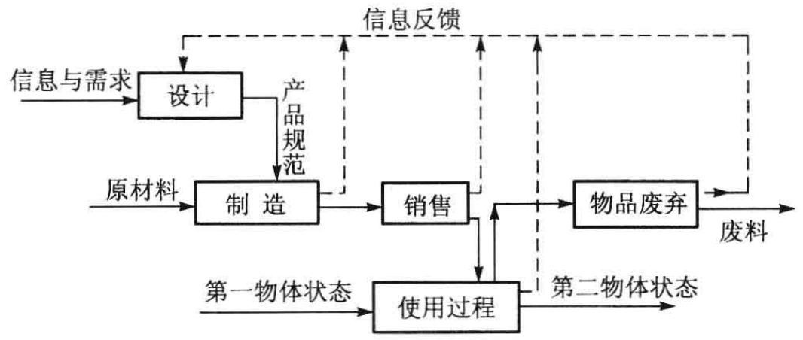
- 资料 1 为需求提供社会、经济、技术、法律、生理和环境资料。
- 资料 2 提供建立设计需条件和设计变量。
- 资料 3 提供评价体系及评价方法。
- 资料 4 提供大量市场研究和预测信息，以便于市场开发。
- 资料 5 则提供技术动向、新技术、新材料、新工艺及有关环保功能等信息资料。
- 从认知心理学: 心理活动对各种信息吸取、加工与交流。
- 设计从生活中获取各种视觉和非视觉信息，
- 在创造性活动中，通过形象思维编码 (信息函纳)、形式中合 (点、线、面、形体和色彩构成) 成为有审美心理效应作品，再经过一系列技术过程，最终呈物化状态。
- 在流通与使用过程中，物化状态形象信息作为审美形式传递给观赏者(消费者) ，由此构成设计师与消费者间审美意识交流。
- 认为形一种有高度组织水平知觉整体，知觉积极组织或建构结果。
- 美感体验来源于有组织形对观赏者刺激作用，即一种心理平衡。
- 为导致这种心理平衡状态，在设计师与消费者间应存在着心理上互相沟通基础，存在着对同一个形象信息有大体一致意义概念和情感概念，即信息同构。
- 这种同构能使消费者和设计师创作意识同化并产生情感上共鸣。
- 设计师在美创造中获得美享受，消费者通过使用参与审美，尽管因主体千差万别造成审美心理个体差异 (感应差) ，但他们都在获得物质满足同时，也得到不同程度精神满足。
信息采集除设计师日积月累外，主要应依靠设计调查。
6.3.3.1.2 设计调查内容
设计调查内容包括
- 市场需求调查
- 企业调查
- 技术调查
市场、企业和产品构成相关三角形
- 市场环境调查
- 市场需求调查
- 商品销售调查
- 对竞争者调查
- 国际市场调查
政策法令、经济状况、社会环境(人口、年龄结构、教育)、自然环境、社会时尚、科技状况。
- 产品调查 (规格、特点、寿命、周期、包装等);
- 消费者对现有商品满意程度及信任程度;
- 商品普及率;
- 消费者购买能力、购买动机、购买习惯、分布情况等。
- 企业销售额、变化趋势及原因
- 企业市场占有率变化
- 市场价格变化趋势，需求与价格关系;
- 企业定价目标、中间商加价情况、影响价格因素、消费心理等，以制定合理价格策略。
- 竞争企业数量和规模;
- 竞争对手各管理层(董事会、经营单位、母公司与子公司等)结构、经营宗旨与长远目标;
- 竞争对手对自己和其它企业评价;
- 现行战略 (低成本战略、高质量战略、优质服务战略、多角化经营战略);
- 对手优势和弱点 (产品质量和成本，市场占有率，对市场应变能力和财务实力，设计开发能力，领导层团结和企业凝聚力，采用新技术、新工艺、开发新产品动向等)。
- 国际市场有关商情资料、
- 进出口和劳务统计资料、
- 主要贸易对象国情、
- 产品需求与外汇管制、
- 进口限制、
- 商品检验、
- 市场发展趋势等。
- 经营情况调查，包括产品分析、销售与市场调查、投资调查、资金分析
- 生产情况调查、成本分析、利润分析、技术进步情况
- 企业文化、企业形象及公共关系情况等。
- 根据产品开发需可选项调查，并将调查结果制成如下图表。
- 技术动向，技术集中和分布情况，特别技术空白，以便集中人员和资金研究。
- 有不少发明创造和专利，当用到生产中时还要技术开发。
- 环保技术调查：印有生态标志eco-mark商品不会在生产、使用至废弃过程中污染环境。
- 环保功能日益成为产品评价重要指标。
6.3.3.2 调查方法和步骤
6.3.3.2.1 调查方法
- 按调查对象选择
- 按收集资料方法
- 按调查目的
- 全面调查
- 典型调查
- 抽样调查
一次性普查
以某些典型单位或个人为对象调查，以推断一般。
抽取一部分有代表性对象调查，以推断整体。据抽样方法分为3类。
- 随机抽样
- 等距抽样
- 非随机抽样
按随机原则抽取样本
- 不作任何选样，用纯偶然办法抽取样本。
- 方法适于所有个体相关不大的总体。
- 先把要调查总体按特征分类，然后在各类中用简单随机抽样方法抽取样本。
- 增强样本代表性，避免简单随机抽样可能集中在某一层次缺点。
- 先把被调查总体分若干群体(特征相似)，再从各群体中分层抽样或随机抽取样本分析。
- 适于调查总体十分庞大，分布较广泛均匀，可节约人力、物力和时间。
将调查总体中各个体按一定标志排列，然后按相等距离或间隔抽样。
据调查分析、判断和需要进行抽样。
- 人为随意抽样。
- 当总体特性较相近时，采用这方法，但此法可信程度较低。
- 据对调查对象分析和判断，选取有代表性样本调查。
- 当对调查总体熟悉时，对特殊需要的调查有较好效果。
- 按规定控制特性和分配调查数额选取调查对象。
- 所抽取不同特性样本数应与其在总体中所占比例相一致。
- 询问法
- 查阅法
- 观察法
- 购买法
- 互换法
- 试销试用法
- 按问卷传递方式不同可分为
- 面谈调查、电话调查、邮寄调查及留置问卷4种，
- 其适用范围及优缺点见下表
被调查者不知正在被调查，一切均很自然，有真实性和可信性。
- 顾客行为观察: 可观察到顾客对商品喜爱程度，为新设计提供资料。
- 操作观察: 可观察到使用者对产品使用时操作程序、习惯等，为改进产品提供资料。
- 把调查对象置于一定条件下，有控制地分析观察某些市场变量间因果关系。
- 例: 在调查包装、价格对销售量影响时，可先后在试销过程中逐渐变动价格，或同时在控制组 (正常条件下非实验单位) 和实验组 (采用实验包装、价格) 对比。
- 此法同样可进行质量、品种、外观造型、广告宣传等方面调查。
- 有时也可将实际产品，交由受测者使用，或在小范围内试销，然后收集信息，经分析研究作出改进。
- 此法较客观，富于科学性，但需时较长，且成本高。
- 随着生活日益个性化，感性消费成分在增长，人们需商品适合他们独特生活方式。
- 传统调研方法，很难挖掘消费者潜藏深层需求。
- 坦诚亲切交谈(小组交谈、专题讨论会)，不受问卷约束，互相启发、交流、探讨，得到较真实信息。
- 要求调研人员有较高素养，调查费用也会提高。
- 探索性调查：问题不明确时，在正式调查前为找出问题症结、确定调查提纲及重点。
- 描述性调查：对某一问题发展状况调查，找出事物发展过程中关联因素。
- 因果关系调查：在描述性调查基础上，进一步调查、分析发展过程中各变量相互关系，找出因果关系。
- 预测性调查：对事物未来发展状况调查，在分析后，能为预测提供依据。
6.3.3.2.2 调查步骤
- 准备阶段，据已有资料，初步分析，拟定调查课题和调查提纲。
- 或需非正式调查。据初步分析，找有关人员(管理、技术、营销、用户)座谈，听取他们对初步分析所提出调查课题和提纲意见。
- 使拟定调查问题能找准，能突出重点，避免调查中盲目性。
- 确定资料来源和调查对象。
- 选择适当调查技术和方法，确定询问项目和设计问卷。
- 若为抽样调查，应合理确定抽样类型、样本数目、个体对象，以便提高调查精度。
- 组织调查人员，必要时可培训。
- 制订调查计划。
将调查收集到资料分类、整理。有资料还要数理统计分析。
随机误差 (即无规律、偶然出现，有正负、大小可能) 呈正态分布。呈现出以下规律性。
- 正误差与负误差出现数相等。
- 小误差出现数目占绝大多数。
- 大误差出现较少。
- 要针对调查计划及提纲问题回答。
- 统计数字要完整 、准确。
- 文字简明，要有直观图表。
- 要有明确解决问题方案和意见。
- 竞争产品现状、优缺点及动向。
- 产品发展沿革。
- 企业以往产品特征和目前风格。
- 同类产品市场价格和成本。
- 可供利用生产设备。
- 材料供应与限制等
- 产品市场分布调研。
- 产品价格定位调研。
- 产品使用状况调研。
- 用户一般及特殊需求分析。
- 用户建议及反映信息收集统计。
- 国内竞争对手产品分析比较
- 国外竞争对手产品分析比较
使用状态数据分析采集与测绘调研
- 问卷发放及统计分析。
- 数据综合及电脑统计分析。
- 异地调研。
- 测绘、拍照及产品信息综合。
- 调研报告书及有关结论分析。
6.3.3.2.3 例：某企业产品牙科综合治疗机改进设计的调查计划
调查目的: 通过对国内外竞争对手及产品市场作综合分析，确定目标产品设计定位。
- 产品市场分布调研;
- 产品价格定位调研;
- 产品使用状况调研;
- 用户一般及特殊需求分析;
- 用户建议及反映信息收集统计。
- 使用状况及功能优势分析比较;
- 外形及材料工艺优势分析比较。
- 购买对象及其动机与要求分析比较;
- 外形及材料工艺优势分析比较;
- 色彩及视觉处理分析比较;
- 国际有关产品发展趋势及预测分析。
- 医务人员操作状态及程序分析;
- 病人使用状态及心理反应和要求分析;
- 测绘及人机学数据模型统计。
- 涉及外观表面处理工艺调研;
- 涉及外观制造材料与工艺技术调研;
- 涉及外观结构及其有关方式调研。
- 调研和收集上述标准规范;
- 建立本产品相应标准规范。
- 问卷发放及统计分析;
- 数据综合及电脑统计分析;
- 异地调研;
- 测绘、拍照及资料综合;
- 调研报告书及有关结论分析。
6.3.3.3 调查技术
在实际调查中，除善于针对不同类型调查采用不同类型方法外，还要熟悉各种询问方式、问卷设计及抽样分析等各种调查技术。
6.3.3.3.1 询问调查技术
- 二项选择法
- 多项选择法
- 自由回答法
- 顺位法
- 倾向偏差调查询问
- 一对比较法
- 图解评价法
- 项目核对法
- 嘉德曼法
非此即彼，只择其一。
- 如:你对某产品喜欢呢? 还不喜欢?
- 此法优点能得到明确答案，缺点不能表现出程度差别。
多项答案提示给被调查者，使其选择一项或几项。拟定问卷注意:
- 答案应事先编号以利统计;
- 答案应尽可能包括所有可能项目，避免重复;
- 答案以不超过10项为宜。
回答者针对问题自由讲述意见，不受约束。
- 优点：问题易拟定，回答不受约束，易得到意外建设性意见。
- 缺点：易得到不确定回答，受被调查者表达能力影响，同时统计困难，不好分析。
被访问者对选项按重要程度排序。可选最重要一项，两三项较重要，A与B哪个重要?B与C哪个重要?。应注意：
- 顺位项目不宜超出10个。
- 顺位到第几项，由调查目的决定。
- 在10个项目中取第一、第二位时，首先应选出重要，再从选出对象中顺位，这样可得出更可靠判断。
当需要调查意见和态度程度时用此法。以某产品为例:
- 问题1 现在你用什么牌子? 答:A牌。
- 问题2 目前最受欢迎B牌，当你更换时否仍选A牌? 答:或不。
- 问题3 对答。如B牌降价，你是否考虑买B牌? 答:(和否)。
- 问题4 对问题3答者，提问降低多少呢?
- 用此法可调查出到何种偏差方能使被访问者改变其原态度，以测定其支持程度，以此确定新设计依据。
这决定顺序的一种方法，当一个项目有数种选择时，将其在良与不良等评价下两两排列，不仅能顺位，也可作出程度评价。
- 例: 要评价A、B、C、D、E5种产品耐用性，可设计成如下问卷。被访者在认为适当栏中画圈
此法用于要求被调查者对调查项目，根据其意见选取一个数值。问卷可设计成:
- 很有必要
- 很没有必要
列出产品各种特征 ，探询被访者意见，问卷可设计成:
嘉德曼理论：人的行为由单向度内在态度引发。因为单向度，所以每个人对一个对象所持态度，便可在此向度上找到一个相应点，一一对应，比较出每个人所持态度。
- 假设A对某物持态度值大于B态度值，则据单向度规定，A比B对某物持有较好态度。
- 反之，当已知各种态度表现大小关系，便可由一个人表现推测其态度值。
6.3.3.3.2 抽样调查技术
抽样调查应用得比较普遍。
- 在调查中应着重解决样本数大小和提高调查精度两个问题。
6.3.3.4 预测方法
- 利用知识、经验和手段，根据过去和现在情况，对事物未来或未知状况预先作出推知或判断。
- 对调查资料分析、研究，寻找事物发展规律，并以此规律推断未来过程。
- 预测5要素: 预测者、经验或知识(预测依据)、手段(预测方法)、事物未来或未知状况(预测对象)、预先推知或判断(预测结果)。
6.3.3.4.1 预测类型
- 宏观预测: 总体情况预测，如国际市场预测。
- 微观预测: 企业目标市场供求情况预测。
- 5年以上长期预测。
- 1~5 年中期预测。
- 1年以内短期预测。
- 定性预测 (以经验分析调查资料)。
- 定量预测 (用数学和统计方法推算数据资料，作出估计)。
- 规范型预测 (以国家和社会需为前提，分析和预测目标实现可能性、条件和途径等)。
- 探索型预测 (以事物过去到现在发展趋势推断未来)。
6.3.3.4.2 预测学内容
- 社会预测: 研究社会发展模式，科技对社会发展影响，人口、环境、社会机构职能和管理改革等。
- 科学预测: 研究科学各领域联系，发展科学事业组织管理、控制与监督、科学研究规则，缩短理论研究到开发研究和制成成品进程，使科学研究取得更大效益。
- 技术预测: 研究技术发明和应用系列问题，技术和协调人与自然关系，产业结构变化，技术革命对社会广泛影响等。
- 经济预测: 研究经济增长模式，社会需求预测，资源预测，经济规划和经济管理，为国家或企业经济计划或决策服务，获取最大经济效益。
6.3.3.4.3 预测方法
- 市场需求既是设计出发点，又是设计归宿。
- 对设计评价,在一定意义上看用户(消费者)反映，很大程度上代表产品对人类社会产生效益大小。
- 主要内容包括潜在市场需求预测、企业销售量预测、市场占有率预测、购买者行为预测、企业投资效果预测、产品生命周期预测、有关科技前景及新产品开发预测等。
专家征询法，美国兰德公司在1940s末创立一种定性预测法。适用于缺乏系统数据上且环境变化较大时 (或情况不明) 对新重大问题预测。步骤如下 :
- 选定专家，一般选择与课题有关、精通专业、有预见性、有分析能力专家，也适当吸取不同专业专家，从不同角度征询意见。
- 确定预测目标，提出调查提纲，并附背景材料。
- 用匿名保密方式，在规定时间内由专家独自填写意见寄回。经整理，将不同意见综合成新调查表，再寄回征询意见。经几次征询、反馈后意见渐趋一致。
- 用整理统计方法 (一般用中位数法) 收敛。
- 优点：匿名性 | 反复征询，多次反馈 | 收敛集中
- 缺点：时间较长 | 有时不能保证回收率
请一部分有经验、分析能力强，并有预见性人员，这可由经理召集销售、市场研究、生产管理、财务负责人员，或由主管召集销售人员等参加会议。
- 前者即为经理人员评判意见法，
- 后者为销售人员意见评判法，
- 也可综合经理人员和销售人员意见而成为综合判断法。
其计算公式为 Y=(a+4b+c)/6
- 式中，Y为预测值，即推定平均值; a为乐观估计值; b为最可能估计值; c为悲观估计值。
据个人直觉，对未来发展趋势作合乎逻辑推理判断。
- 相关类推法
- 对比类推法
- 推测法
- 转导法
从已知相关各种市场因素间变化，来推断预测目标发展趋向。首先找出与预测目标有关因素。
- 例: 从每年结婚者数目对家具、服装、家庭用具及住宅需求量影响;
- 从出生率对婴儿用品购买量影响，
- 从替代品市场变化对本企业产品影响;
- 从互补性商品(住宅与室内家具)及先行、后行产品市场需求变化来预测产品需求。
- 此法分析与预测目标相类似已有事物，由此来推断预测目标未来发展趋势。
- 例:对比国外已有产品市场生命周期、产品更新换代情况来预测我国同类产品指标及发展变化。
百分率增加法，根据过去实际销售资料来推算未来时期销售值。
- 其推断公式为 Y = Y1*(1+m)n
- 式中，Y为n期后的预测值; Y1为市场实绩; m为平均增长率。
- 推测法中关键是找出平均增长率m。m可由经验得出，也可用数理统计求得。
- a. 用环比计算法求m
- b. 用对比(同比)分析法求m
据某一行业总产值所占国民生产总值比率及本企业市场占有率，推算本企业产品年预测销售值。
- Y = G*(1+k)*j1*j2*…jn
- 当地市场商品零售总额G=85亿元
- 预计增长速度k=8%
- 当地服装市场占地区零售总额比重j1=10%
- 该店经营服装在当地服装市场中的占有率j2=3%
- 该店儿童服装占商店服装销售额的比重j3=20%
- 该店明年儿童服装销售额预测Y=850000×(1+8%)×0.10×0.03×0.20=550.8(万元)
- 为使销售计划更符合实际，还需对市场分析(需求变化、竞争对手、营销策略等)。
将历史资料，按时间顺序排列，构成一组变动观察值数列，分析此数列，找出变化规律，推测发展趋势。
- 简单平均法
- 加权平均法
- 几何平均法
- 移动平均法
- 指数平滑法
此法中以观察期数据之和除以数据个数所得平均数，即为下期预测值。
- Y = (x1 + x2 + x3 + … + xn)/n
- 优点：简单易算。
- 缺点：误差较大，特别观察值有明显变动或趋势变动时。
为考虑各观察值重要性不同，分别给予不同权数。按预测法则近期影响大，远期影响小赋权。
- Y = w1*Y1 + w2*Y2 + w3*Y3 + … + wn*Yn
- w1 + w2 + w3 + … + wn = 1
运用历史资料算出平均发展速度，以此作为预测依据。
- 在计划工作中经常用到，例: 测算商品供应量、商品流转额、职工人数、国民收入、人均收入等。
此法将观察值由远而近按一定跨越期平均，取平均值。
- 随观察期推移，逐一求得移动平均值，以接近预测期最后一个移动平均值，作为确定预测值依据。
此法中用前期实际值与前期预测值加权平均数来预测
对预测目标诸影响因素分析，找出它们之间统计规律性，建立回归方程。
- 如因果关系只涉及两个变数，称一元回归分析; 如涉及两个以上，称多元回归分析;
- 视变量是否呈线性关系，又分为线性回归和非线性回归。
- 当用一元线性回归预测法预测时，回归方程如下：
- 对模式合理性可用相关系数来检验
6.3.3.5 生活研究一一设计创新源泉
- 设计创新既有需求拉动，又有科技推动。
- 需求拉动主要来自生活，而不只市场。
6.3.3.5.1 如何生活研究?
从生活中了解消费群体(不同职业，文化层次，地域、年龄、性别)需求
- 研究使用者情境为核心开发设计创新基本策略。
- 探索新生活方式和价值观
1980s针对设计过度和设计过饰, 引进社会学和生态学概念。
- 因对生活方式缺少设计，造成能源和材料大量浪费和环境污染。
- 例: 高度加工食品，热量过剩; 营养不足;
- 例: 过度城市化，高度能源消费和由此产生垃圾严重影响居民健康。
- 例: 商业性设计观念也给社会带来极大浪费(如过多包装)。
在交通、运输、通信、住宅建设、室内装饰和生活用品等方面开展示范设计，以提高消费社会经济效果
- 我国闲暇时间用于家务劳动、吃饭、睡觉等方面较高。
- 开展家庭自动化 (HA) 设计和自己动手设计 (DIY)，在提高享受和自身发展方面达到建立适应现代生产力发展和社会进步要求的文明、健康、科学生活方式。
生活研究两个方面
- 生活形态学物化
- 人机工程学软化
- 社会生态学研究劳动/闲暇/消费/家庭生活、少儿/青年/成年/老年生活、残障人生活、农村/城市生活
- 生活提案 -> 物化
- 研究人-机-环境，以及人与人的关系。
- 用心理学研究发展心理、社会心理、商业心理及心理美学等。
- 老年人心理、生活、消费、养老模式、养老保障体系、传统伦理观念及法律、法制化建设
- 老年人用品研究、老年人居住空间研究、养老福利设施研究等。
6.3.3.6 调研分析内容
有目的、有步骤认识与分析产品过程
- 调研资料：图书、期刊、报纸、网络、电视。
- 调研用户：地域(国内外)、年龄、阶层
- 调研市场：商场、品种、品牌、价格、销量等
- 调研分析：设计目标与准则、产品功能与环境相互影响。
- 结构分析：系统功能及相互关系—结构分析(功能部件、连接关系、装配关系、材料工艺)
- 造型分析：各层次要素与外观相互关系(形态、比例尺度、材料表面装饰、设计风格等)
6.3.4 产品设计调研
- 产品信息调查
- 专利文献和检索
- 产品功能识别
- 产品基准选择
- 产品结构分解
- 产品检测报告
- 产品设计说明
6.3.4.1 产品信息调查
- 产品信息
- 产品信息调查目的及层次
- 产品信息调查原则
- 产品信息调研内容
- 产品信息搜集计划
6.3.4.1.1 产品信息
消息中有意义内容称为信息，产品设计中有意义内容就是产品信息。
- 户外炉具信息：高寒烧油，温暖烧气。2.5升铝锅烧开一锅水在20分钟内完成，价位150元以内。
6.3.4.1.2 产品信息调查目的及层次
对资料/技术/新功能/消费趋势/竞品基准/功能结构参数及造型调研/识别/选择/分解/检测/整理和说明。
- 战略规划调查：为在战略层面制定企业发展战略蓝图展开调查。
- 战役布局调查：为制定开发计划和下达设计任务书，在设计管理层展开调查。
- 战术方案调查：为探寻目标，形成概念，技术选型、明确功能基准，细分用户，完成任务的调查。
6.3.4.1.3 产品信息调查原则
- 目的性
- 完整性
- 准确性
- 适时性
- 计划性
- 条理性
6.3.4.1.4 产品信息调研内容
- 产品用户市场需求情报调查
- 对企业及商品销售调查
- 对竞争者调查
- 国际市场调查
- 科技情报调查
- 生态环境调查
- 生产情况调查
- 费用经济情报调查
- 方针政策调查
6.3.4.1.5 产品信息搜集计划
调查内容由设计项目决定，根据设计内容，制定相适应调查内容。
- 确定搜集内容范围
- 确定搜集来源
- 确定信息提供时间
- 确定搜集方法
- 确定搜集人
6.3.4.2 专利文献和检索
- 专利文献概述
- 专利文献作用
- 专利文献分类索引
- 专利检索
6.3.4.2.1 专利文献概述
专利文献是已经申请或被确认为发现、发明、实用新型和工业品外观设计研究、设计、开发和试验成果有关资料;及保护发明人、专利所有人及工业品外观设计和实用新型注册证书持有人权利有关资料已出版或未出版文件（或其摘要）总称。
- 专利申请说明书(著录项目、说明书、权利要求书、摘要)
- 专利说明书
- 专利证明书
- 申请及批准有关文件
- 检索工具(专利公报、专利分类表、分类表索引、专利年度索引、Derwent公司专利出版物)
一种专利文件，指含扉页、权利要求书、说明书等组成部分用以描述发明创造内容和限定专利保护范围一种官方文件或其出版物。
- 专利文件中限定专利保护范围文件部分。
- 权利要求书中至少有一项独立权利要求。
- 还可有从属权利要求。
- 清楚完整地描述发明创造技术内容文件部分，
- 附图则用于对说明书文字部分补充。
- 说明部分包括：技术领域，背景技术，发明内容，附图说明，实施例等。
- 发明专利 (保护期限:20年)
- 实用新型专利 (保护期限:10年)
- 外观设计专利 (保护期限:10年)
- 产品发明（如机器、仪器、设备和用具等）
- 方法发明（制造方法）
又称小发明或小专利
- 对产品形状、构造或其结合所提出实用新技术方案。
- 实用新型与发明不同：(1)实用新型只限于有一定形状产品，不能一种方法；(2)对实用新型创造性要求不太高，而实用性较强, 在技术水平上低于发明专利。
对产品形状、图案或其结合及色彩与形状、图案结合所做出富有美感并适于工业应用新设计。
6.3.4.2.2 专利文献作用
- 传播发明创造，促进技术进步
- 警示竞争对手，保护知识产权
- 借鉴权利信息，避免侵权纠纷
- 提供技术参考，启迪创新思路
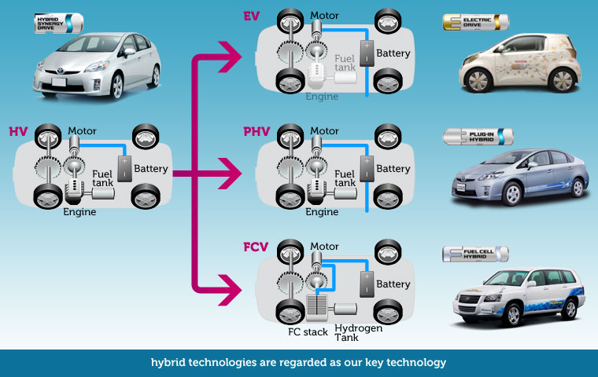
6.3.4.2.3 专利文献分类索引
《国际专利分类表》(IPC)分类结构如下：
- 部(Section)
- 分部(Sub—Section)
- 大类(Class)
- 小类(Sub—Class)
- 主组(Main—Group)
- 分组(Sub—Group)
- A 生活必需品(HumanNecessities)
- B 操作、运输(Operations，Transporting)
- C 化学和冶金(ChemistryandMetallurgy)
- D 纺织与造纸(TextilesandPaper)
- E 永久性构筑物(FixedConstmction)
- F 机械工程、照明、加热、武器、爆破(Mechanical Engineering，Lighting，Heating，Weapons，Blasting)
- G 物理学(Phvsics)
- H 电学(Electricity)
例: A部生活必需品包含4个分部：农业、食品与烟草、个人和家庭用品、健康与娱乐。
如A部食品与烟草分部下设4个大类：
- A21(成包烘烤、面制品)；
- A22(屠宰、肉类加工、家禽和鱼类加工)；
- A23(未列入其它类目的食品及其加工)；
- A24(烟草、雪茄、纸烟、烟具)。
例: A21B为面包烘烤、烘烤用机器和设备。
例: A21BI／OO面包烘烤炉。
例: A21BI／02按加热装置特点分类烘烤面包炉。
- 各分组文字标题前印有个数不同圆点，示分组等级，圆点越多表示等级越低，可细分到七级。
lht·Cl为第n版国际专利分类缩写
- 部：B部：操作，运输
- 大类：B64 航空，飞机，宇宙飞船
- 小类：B64C 飞机，直升飞机
- 主组：B64C25／00 降落传动装置
- 一点分组：25／02·起落架
- 二点分组：25／08··非固定，如在飞机起升时投弃
- 三点分组：25／10···可伸缩、可折叠式
- 四点分组：25／18····操作机构
- 五点分组：25／26·····有开关控制或锁定装置
- 六点分组：25／30······紧急开动
- 分类号B64C25／30完整含意：用于飞机或直升飞机起落架上非固定、可伸缩、可折叠、紧急开关用控制或锁定装置。
6.3.4.2.4 专利检索
根据一项数据特征，从大量专利文献或专利数据库中挑选符合某一特定要求文献或信息过程。
- 专利文献覆盖所有技术领域及非技术领域涉及技术方面。
- 通过专利检索可得到与发明创造最接近现有技术信息，可确定现有技术与发明创造共有技术特征（独立权利要求前序部分），发明创造特有技术特征（需专利保护），
- 对权利要求书撰写、专利申请、审批授权至关重要。
- 专利文献中说明书及附图可得到有关发明创造具体情况，一种标准化科技信息资源，可为科技人员学习、借鉴先进技术提供重要参考。
- 据世界知识产权组织统计，若能运用好专利文献，可节省40%科研经费和60%科研开发时间。
- 新颖性检索：相对于现有公开的或者在国知局申请还没有公开的所有的技术其具有区别点，是新的技术方案，单独对比不一样即可
- 创造性检索：相对于现有技术其不仅要有区别点，而且这些区别点要有实质性特点和显著的进步。
- 防侵权检索
- 专利申请人、专利审查员、专利代理人及有关人员在申请专利、审批专利及申报国家各类奖项等活动之前，为判断该发明创造否有新颖性，对各种公开出版物上刊登有关现有技术检索。
- 该类检索目的为判断新颖性提供依据。
- 为确定申请专利发明创造否具备创造性，对各种公开出版物检索。
- 为避免发生专利纠纷而主动对某一新技术新产品专利检索，
- 目的找出可能受到其侵害专利。
- 中国国家知识产权局数据库 http://epub.sipo.gov.cn/gjcx.jsp
- 美国专利商标局网站专利数据库 http://opic.gc.ca/
- 世界知识产权组织网站数据库 http://www.delphion.com/
- 加拿大知识产权局网站数据库 http://www.ipdl.ncipi.go.jp/homepg_e.ipdl
- DELPHION知识产权信息网数据库 http://ep.espacenet.com
- 日本特许厅网站专利数据库 http://www.uspto.gov/patft/index.html
- 欧洲专利局esp@cenet网络数据库 http://www.sipo.gov.cn/sipo/zljs/default.htm http://www.wipo.int/
- 德温特世界专利索引数据库(DII) http://isi01.isiknowledge.com/portal.cgi/
- 模糊字符%使用
- 布尔逻辑检索（Boolean）
- 词组检索（phrase）
- 截词检索（truncation）
- 例1：已知发明人为深圳某实业有限公司，用深圳%实业有限公司或深圳%实业%公司检索。
- 例2：已知专利名称中包含汽车和化油器，且汽车在化油器之前，用汽车%化油器检索。
- 三种布尔逻辑算符AND，OR，NOT。
- 例：检索包含snowman和kit专利文献 snowman AND kit。
将一个词组（通常用双引号""括起）当作一个独立运算单元，严格匹配，以提高检索精度和准确度
- 一般数据库检索中常用方法。
- 例: 检索出申请人为通用汽车公司所有专利文献：AN/"GeneralMotors"
- 截词检索预防漏检提高查全率一种常用检索技术方法。
- 截词指在检索词合适位置截断，然后使用截词符处理，
- 这样既可节省输入字符数目，又可达到较高查全率。
- 尤其在西文检索系统中，使用截词符处理自由词，对提高查全率效果非常显著。
- 在一般数据库检索中，截词法常有左截、右截、中间截断和中间屏蔽4种形式。
- 而在搜索引擎中，目前多只提供右截法。且搜索引擎中截词符则通常采用星号*。例: educat*。相当于education+educational+educator。
- 截词检索能够帮助提高检索查全率。
6.3.4.3 产品功能识别
结构设计的前提和纲领，首先研究顾客需求。
- 在一个创意主导下，确定产品总功能，层层分解总功能确定子功能
6.3.4.3.1 功能系统图
- 从一阶子功能出发，根据用什么办法实现，形成下位手段功能，构成二阶子功能。
- 以二阶子功能为目的功能，寻找手段功能，构成三阶子功能体现主要技术方案，成为产品完整构思。
- 结合对各组成部分功能定义，逐步形成结构构想。
- 通过功能评价，形成最佳方案。
6.3.4.3.2 探索顾客需求功能目标
- 保证产品集中在顾客需求上；
- 识别明显需求和潜在需求；
- 提供一个判别产品规格说明事实基础；
- 创建一个开发流程所需活动原始记录；
- 确保没有遗漏重要顾客需求；
- 在开发团队成员中发展对顾客需求共同理解。
6.3.4.3.3 识别顾客需求流程
在产品项目开始之前，企业需识别出特殊市场机会，列举出可能项目目标和限制条件。
- 从顾客处收集原始数据。
- 依照顾客需释解原始数据。
- 将需组织成—个需求等级。
- 建立需求相关重要度。
- 对结果和流程做出反应，形成产品规划目标任务书。
- 这些信息常常被总结成任务陈述(有时也叫做总纲或设计简述)。任务陈述对任务方向作界定，但常常并不界定精确目的或前进特殊方向。
6.3.4.3.4 需求信息探索基本方法
- 访谈单个客户
- 集中群体开会讨论
- 观察顾客使用产品
- 一个或多个开发团队成员与一个顾客讨论顾客需求。
- 访谈通常在顾客处，一般持续1～2个小时。
- 一个协调者组织由8～12个顾客组成群体2小时讨论。
- 讨论过程通常被录制下来。
- 给参加者适度费用。包括房间租赁费、参加费、录制费和饮料费。
- 观察顾客使用现有产品或使用一件新产品试图完成任务，
- 揭示有关顾客需求重要细节。
6.3.4.3.5 选择顾客
- 访谈普通顾客
- 访谈领先用户
- 访谈最终用户
- 普通访谈30人次。顾客需90％在访谈30人次后可揭示出来。
如果和领先用户访谈，就可有效识别需求。
- 他们能清楚地阐述需求。
- 他们可能已发明出满足自己需求办法。
- 购买者和使用者可能并非同一人, 从产品最终用户那里收集数据一种好途径，
- 如产品要打入多个细分市场，为理解不同需求，从每个细分市场收集产品信息很重要。
6.3.4.3.6 访谈顾客建议
- 顺其自然。
- 使用视觉刺激和激励。
- 超越对有关产品技术事先假设。
- 让顾客阐述产品和与产品相联系典型任务。
- 对惊奇和潜在需表达要警觉。
- 注意非语言传息。
6.3.4.3.7 访谈及需求信息记录方法
- 磁带记录：磁带记录非常容易，但转换成文件耗时，也会使某些顾客恐惧。
- 笔记：访谈最一般方式。
- 录像带记录：记录群体会谈。产品使用环境中顾客行动多个视角，有助于潜在顾客需求识别。
- 拍照：易展示、视觉质量优秀和方便获取。
6.3.4.3.8 建立需求信息权重指标
两条途径权衡成本在速度与准确性间比较：
- (1)基于团队成员与顾客接触经历所产生共识;
- (2)基于进一步顾客调查重要性评价
6.3.4.3.9 需求调查时间安排
- 团队在一次会议上就可做出需求相对重要性文字评价，
- 而顾客调查至少需两周时间，更现实地调查需一到两个月。
- 概念生成和竞争产品分析，可在相对重要性调查完成之前开始。
6.3.4.4 产品基准选择
- 产品基准概念
- 设定产品基准的意义
- 产品基准案例
- 产品基准设定流程
6.3.4.4.1 产品基准概念
通过对比最强竞争者或公认行业领先者来衡量产品、服务和实践持续过程。
- 基准给出标准、参考点及范围，用来判断产品质量、价值或性能。
- 例：帕萨特轿车各种性能指标、参数可成为售价20万元左右（2016年）其它品牌汽车设计国内中档汽车基准。以此基准定位和判断要开发中级乘用车产品优势和劣势。
- 基准能够揭示已用于解决某一特殊问题现有概念，揭示竞争加剧与削弱方面信息。
- 例：撞击实验机相关产品包括力学摆锤实验机、建筑打桩机、弹簧枪等仪器设备。
6.3.4.4.2 设定产品基准的意义
- 知己知彼
- 加深对产品理解，并预见产品在未来发展。
- 了解竞争发展趋势和方向。
- 将相应信息结合到产品开发过程中，识别客户需求，改进观念，吸收同类最佳产品外观，确保预定指标超过竞争对象，确保使用同类最佳组件并选择最佳供应商。
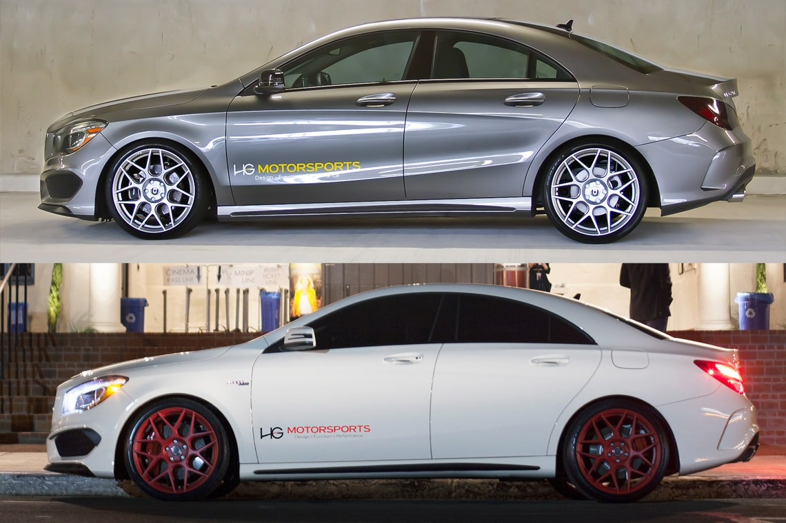
6.3.4.4.3 产品基准案例
雪佛兰Spark和奇瑞QQ。
- 上汽通用五菱雪佛兰成为奇瑞QQ产品基准。于2003年底推出Spark车型大宇曼蒂兹（MATIZ）中国版，
- 曼蒂兹（MATIZ）由乔治亚罗设计，1998年4月份开始在韩国销售，当年打破韩国单车销售纪录。
- 2002年通用汽车正式收购韩国大宇，曼蒂兹收归在通用旗下。
- 雪佛兰Spark车身尺寸、发动机等参数都跟曼蒂兹保持一致，只在车顶上加装行李架。
- 比Spark早几个月上市奇瑞QQ以曼蒂兹为竞争对手(奇瑞QQ很多设计元素来源于大宇曼蒂兹)
- 圆形前大灯像水汪汪大眼睛，
- 如出一辙小MPV侧身线条，
- 都有0.8L和1.1L两种排量。
- 尺寸：Spark 3495L*1495W*1485H(mm)，轴距2340mm; 奇瑞QQ轴距2348mm,稍大
- 前脸：Spark封闭式水箱盖；奇瑞QQ水箱盖留出弯月格栅(像微笑嘴巴)
- 配置与售价：Spark初期配置好于奇瑞QQ，售价比QQ高出两万余元。
- 价格步步走低，上汽通用五菱2005年推出06款Spark指导价下调为4.58万～4.38万元。奇瑞06款QQ厂家指导价仅剩2.98万～5.28万元。
- QQ配置越来越丰富，加装ABS、MP3等设备，功能越来越齐全。2013版奇瑞QQ指导价：3.79-5.09万。
- QQ增加多款车型，与Spark血缘关系越来越远，最终分道扬镳。但产品基准作用显露无遗。
6.3.4.4.4 产品基准设定流程
根据设计任务描述，研究相关案例。
- 分析产品功能和技术结构，了解竞争对手产品功能列表。
- 研究产品生产成本。
- 分析产品市场潮流趋势。
- 设定产品基准层次，检测参数，明确性能规格。
与产品研发目标要求有关
- 产品功能
- 性能参数
- 成本
- 价格
- 尺度
- 识别竞争对手，一般根据公司名字和产品名称来。
- 有不同产品、不同卖主和不同供应商完整信息，经过审查，就可采用清单形式将其显示。
- 在显示中对重要特殊竞争对手做着重标记，便于开发小组全面理解。

- 球形一体化厨房。厨房里所需一切都在这个球里。
- 如一件艺术品可摆放在客厅成为一体化厨房。
关键信息包括销售、商品成本、费用、收入、支出细目的分类及产品运作信息。
- 该产品印刷类文章，产品特点、材料、公司和生产地点或问题信息，描述客户市场接受情况或份额信息，及其它补充信息。
- 搜集关于该类产品和相关产品；执行功能；目标市场。
- 信息源有多种，商人喜欢谈论市场和不具备竞争力商业单位，许多人乐于谈论他们竞争对手信息。
- 如需求者表现出购买意向，供货商通常会谈论其客户情况。
- 得到这些信息秘诀，打探信息时保持开朗、诚实和道德。
完成拆卸产品工作是设立基准行动核心步骤
- 产生每种产品材料清单、功能模型、分解图和功能与组件间功能—形状映射。
- 每个功能性能水平应经过测量。
- 要拆卸的不同产品都应是市场佼佼者
- 从失败产品中学不到什么，但从获胜产品中可学到很多。
- 绘制基准产品详细图、分解图、装配图和零件图。
产品确立基准后，需切实分析结果。根据产品外形总结对应关系。
- 例: 对多个吸油烟机，根据集烟罩、材料或风机不同样式为每个产品列出清单，然后比较。
- 这种方法存在问题，一个产品任何组件都不能跟另一个产品相同或相近组件在功能上对应起来
- 一个吸油烟机机前面板可能同时也包含开关，而在另一个产品中却没有此项功用。
- 一个产品中附件可能需另外对应物。
为克服上述问题，不能根据产品组件确定基准，而要用功能等价法。因为功能产品存在依据和本质。
- 在一个新产品开发过程中，应建立新产品功能模型。
- 然后，对模型每一个功能，都在其它产品功能模型图中找到相同功能。
- 对某项功能（相同功能），在相应解决方案中找出各种物理形式(技术结构)，
- 并在每个方案下列出其性能测量值，以后可用于比较。
- 典型地，所列出每一种方案都来自每个产品组件集合。
- 列出实现每个功能各种解决方案后，比较法分析。
- 对每一项功能，有最好性能方案称为同类最佳方案。
- 最便宜方案称为同类最便宜方案。
- 这些基准设定限制几乎可在所有产品功能层次聚集中完成, 针对整个市场比较各种产品。
6.3.4.5 产品结构分解
在产品设计视觉化未完成前，确定相近产品、特别竞争对手产品。
- 购买竞争产品，拆卸和分解，成本评估。
- 详细剖析、检测，进一步明确设计目标。
6.3.4.5.1 产品结构分解意义
- 获得产品基准基本信息
- 了解产品核心功能实现方式
- 对同类竞争产品检测分析
- 了解竞争产品成本
- 简化理解产品运行原理
- 为产品发展找到新策略
6.3.4.5.2 产品分解过程
基于功能产品分解过程须对这个产品系统展开分析，并将这些分析结果转换为信息，用做新设计一部分。
- 产品分解步骤包括：功能列举、分解预备、营销策略评估、零件数据获取，生成产品报告。
- 针对新产品开发
- 针对产品改良设计
- 消费需求研究和产品功能预测
- 所面对设计条目的可能全新。
- 任何关于消费市场、竞争对手、竞争性产品特性等方面信息都有价值。
- 这些条目将成为影响产品性能重要指标，一般都与消费需求相关。
需了解先前设计团队情况，包括以下问题。
- 他们曾经面临一些什么样困难？
- 他们所解决认为最有成就感设计难题什么？
- 他们所感兴趣相关技术什么?
消费需求分析和级别排序使设计条目的内容更全面充分。
- 产品功能预测帮助在追求功能实现手段前，明确功能本身什么，利于新概念和设计条目的形成。
- 在收尾阶段记录设计条目的，关于装配过程中相关部件基本信息。成为后期分析中性能评估标准。
- 单位产品包含零件数
- 尺寸测量值
- 材料厚度最大、最小和平均值
- 重量
- 材料品种
- 颜色及表面处理
- 制造过程，包括制造分析中足量信息
- 几何性、空间性、参数容差
- 基本功能
- 单位零件或组件成本
明确设计条目后，确定产品分解任务所需工具(用于测量过程感应设备和试验器具)，做成报告。
- 是否需照相机?
- 是否需摄像机(用来记录产品操作)？
- 万用表、硬度测试仪、光学感应器、流量计、测力计、圆规、闪光灯、测量工具…
- 在产品研发决策过程中，产品及零件如何实现从下线到包装、运输、市场销售过程需着重考虑一环。
- 对这项内容检验也产品分解过程中不可分割一部分。
对逆向工程，在分解前要对产品装配件整体拍摄记录和测量。而后工作包括：
- 拆分装配件
- 在分解状态拍摄记录，或制作出关于产品实物模型装配图，即产品剖析图。
- 对各零部件测量并制成数据表格。
- 避免破坏性试验，造成零件损坏。而在随后实验性操作中，可在需破坏性试验地方进一步分解。
- 在拆解过程中，应完成详述产品细节书面材料。
- 也应完成装配拍摄和分解后CAD制图。
- 材料表格中数据对随后分析必不可少，其中包括成本和性能。
6.3.4.6 产品检测报告
- 产品设计中对测量的需要
- 实验检测方法
- 产品分解报告
6.3.4.6.1 产品设计中对测量的需要
- 产品详细说明
- 竞争性产品检测分析
- 提供对产品所须完成功能精确和定量描述
- 产品目标价值设计实现性能水准
- 测量在设计中重要性通过在设计方法中普遍强调将客户需和产品功能量化必要性来说明
- 聚焦在为产品分解测量技术应用上，最终目标发展一套产品指标和测量装置。
6.3.4.6.2 实验检测方法
- 测量什么及如何测量
- 测量标准
- 测量步骤
- 测量分类
采取某种方式取得对测量合理规定，以使测量结果回答产品必要问题并避免不必要测量工具。
- 想要什么?
- 为什么要测量这个?
- 这个测量方法果真解决所有问题吗?
- 这个测量方法揭示什么?
- 能够取得关于测量装置标准信息途径和来源很多，
- 为高质量试验，须研究每一项标准，将们运用到选择过程中。
- 普及性、范围和精确性在产品分解应用中极为重要。
- 选择能应用确定测量法产品范围；
- 确定需测量子功能；
- 理解所选择子功能并确定每个子功能测量方法, 包括如何收集组织数据。
- 从工作表工具目的录里选择测量工具、设计一个专用工具或可选择测量技术。
- 在范围之内产品相似性和范围大小。
- 产品相似性可通过选择一组有共同功能特征产品实现。
目的为获得测量优先权。
- 为使确定具体子功能测量过程变得容易，可建立关于产品功能公共测量方法数据库。
- 被用来测量各个功能产品规格需记录。
- 按用途和特点分
- 按构造分
- 实物量具： 在使用时以固定形态复现或提供给定量一个或多个已知值量具。
- 极限量规： 一种没有刻度专用检验工具，用这种工具不能得出被检验工件具体尺寸，但能确定被检验工件否合格，如光滑极限量规、螺纹极限量规等。
- 显示测量仪器：指显示值测量仪器。如模拟电压表、数字频率计、千分尺等。
- 测量系统：指组装起来特定测量全套测量仪器和其它设备，测量系统包含实物量具。固定安装着测量系统称为测量装备。
- 游标式测量仪器： 如游标卡尺。游标高度尺及游标量角器等。
- 微动螺旋副式测量仪器： 如外径千分尺、内径千分尺及公法线千分尺等。
- 机械式测量仪器： 如百分表、千分表、杠杆比较仪及扭簧比较仪等。
- 光学机械式测量仪器： 如光学计、测长仪、投影仪、接触干涉仪、干涉显微镜、光切显微镜、工具显微镜及测长机等。
- 气动式测量仪器： 如流量计式、气压计式等。
- 电学式测量仪器： 如电接触式、电感式、电容式、磁栅式、电涡流式及感应同步器等。
- 光电式测量仪器： 如激光干涉仪、激光准直仪、激光丝杆动态测量及光栅式测量仪等。
- 直接测量
- 间接测量
- 接触测量
- 不接触测量
- 组合测量
- 比较测量
6.3.4.6.3 产品分解报告
在产品基准拆卸、检测后期，需总结对产品分解，将结果整理成文件。
记录产品结构性、物理性、功能性信息。
- 为装配中各部件和组件所选择标签、组件数量、组件细节描述、组件有关功能输入/输出状况、
- 组件颜色、物理性数据(大小、材料属性等)，及各个组件制造过程。
- 这些数据将被用来对产品竞争性产品检测分析并用于对制造成本模型设计。
- 绘图或照片采集
- 各组件沿装配轴方向由产品中心向外分散，所有组件都标注准确并且细节突出。
- 产品分解图可用来帮助发展装配计划；研究重要组件、装配界面及错综复杂产品特征。
- 功能网络，产品通过转换能量、物料和信号，最后形成所需输出物。
- 代表一件产品现存部件功能，这些功能关乎顾客需求。
- 功能模块划分后，初步形式设计。其中首要工作建立产品功能结构概略布局图。
- 这种采用线框形式布局图，用来反映产品模块间关系，作为装配设计结构配置图。
- 在建立产品体系结构模块层级关系后，应用草图方案将这种关系尽可能直观地加以表述。
- 在这一环节中，工业设计和工程设计工作将初步接合在一起。
- 外观美学因素、人机工程学因素、结构合理性等问题都需借助这种布局结构图考虑因素。
- 应注意尽可能保持图形简洁性，在许多情况下一个简单线框图表就完全可满足充分表述要求。
- 在建立概略布局图过程中需重复先前步骤。
- 每一步骤中应推出多种方案供参考选择。
- 布局图绘制要加入对用户需求中美学、人机工程学因素。
- 可出现泡沫塑料模型、分析草图或其它形式表达手段(粗模)。
6.3.4.7 产品设计说明
说明性文字，图片、图表等，以及三维动画补充说明。内容如下:
- 设计目的和意义
- 主要技术参数，包括功能参数和性能指标（产品功能、用途、性能、尺寸）
- 结构选型及原理，产品基准或竞争对手（与市场上什么品牌产品整体、功能接近）
- 设计主要内容造型要求（产品整体、功能、结构、造型）
- 参数计算说明
- 创新及应用前景等。
6.3.4.7.1 建立说明书过程
说明书从需求调研中得到或抽取而出，建立说明书过程大体包括如下内容。
- 需求调研
- 基准设定
- 整体产品设计性能说明
- 设想阶段目标
- 开发过程各个阶段目标
- 审核通过设计说明书
- 源自使用检验表
- 源自调研量化客户需求解释。
- 新产品设计说明书要考虑整体产品说明、单个部件与装配说明等。
- 新产品设计说明书有定性说明和定量说明(设计应达到何种满意程度可度量标准)。
- 说明书应指定目标值。目标值也标有尺寸单位，达到该值表示达到需性能。
- 目标值可确定值，也可一个范围，如1，30—42，≥70，蓝色等。
- 在产品开发过程中基准设定后，新概念开发前，应认真考虑整体产品说明书。
- 在设想阶段目标与具体阶段经过提炼目标不一样。经过提炼目标项目相对完整，参数范围比较肯定。
- 对客户需必要整理和分类，要从用户需求中分清有用功能和无用功能和可选功能，分别区分处理。
- 产品开发每个阶段，对说明书都应修订(测试或验证)，而不只在已经完成设计或制造最终阶段。
- 审核说明书，从用户角度考虑是否合理，提高效率，达到目的，有完整定性和定量设计说明。
6.3.4.7.2 功能需求与约束间相对性
- 对设计具体性能说明，即设备如何运作。
- 开始时陈述应用最宽松(最一般化)条件。
- 在设计中给出功能清晰定义。为解决技术问题，需用清晰、可复用方式描述每个可用(或确定)输入和每个期望(或要求)输出间关系。
- 再由这些输入／输出关系建立系统功能。
- 由此来看，功能就系统应完成任务抽象表示，独立于任何特定解决方案(物理系统)。
- 用这些解决方案来获得期望结果。
- 一般用(可测量)物理量及其数学关系来表示功能。
- 功能文字性(或口头)描述通常由动词和名词组成，如增加压力、转移力矩等。
- 功能需求应用这些术语表示，其后跟适当量化词以度量说明。
- 约束一些外部因素，以某种方式限制系统或子系统特性选择。
- 约束与系统单项功能(或功能目标)没有直接关联，但会影响整个功能体系。
- 成本和开发日程约束，尺寸大小、重量、材料性能和安全问题(如无毒、非可燃材料)等都约束。
- 与表面磨光和公差相关说明也许应看做约束，但不绝对。例: 对镜子来说，特殊表面磨光就应看做一项功能需求，而不约束。
除非约束实际存在，否则不能随意添加。由此，导出如下方针。
- 只有在评估危险后才能确定约束。
- 除识别功能需求和约束之外，还可根据功能分解策略指导生成说明书过程。
- 也就说，当若干更详细说明书同时相关联时，每份说明书也可看做关联。
- 通过这种淹没方式，说明书会与特定子系统和组件更直接地关联，可能更有用。
6.3.4.7.3 细目的分类法生成说明书
客户需求指明基础设计方向，在此基础上补充设计标准、道德规范、生产工艺等工程要求。
- 考虑范围更大客户群：利益相关者，生产商、装配厂商、销售商及分销商等，把他们看做设计客户。
- 此方法倾向于模糊化产品购买者概念。
- 应用说明书列表生成器方法，即用分解方法来导航对相关说明搜索。
- 这种方法聚焦于潜在(客户有需求，但没有明确表示)说明，包括安全、法规和环境因素等将每个说明指定为要求或期望，可与重要程度相关联。
- 编辑说明书。整理功能需求和约束，清楚排序。从功能要求开始，然后列出各项约束。
- 判断每个功能要求和约束否为需求或期望。
- 判断这些功能要求和约束在逻辑上否一致，
- 尽可能在各方面实现量化。
- 确定测试验证详细方法(工程分析；比例缩放、正常尺寸、原型测试；图纸检查；失败模型分析；用户适度大小样本测试)。
- 发布说明书以获得评论和修正意见。
- 对评论和修正意见评估、收集到意见后，分析反对意见及建议修正方案。处理这些反对意见，如有必要，可将修正方案合并到说明书中。
6.3.4.7.4 设计任务共同要求
对一般产品设计项目任务书，还应包含下列要求。
- 产品定位明确。
- 功能定义清楚：细化项目功能、规格参数，分析约束条件、设计规范，明确目标。
- 结构科学合理。
- 使用及交互符合人机要求。
- 艺术造型要求：表现时代特征。
- 总体遵循实用、美观、经济、时尚、创新、环保、安全、健康等要求。
6.3.5 设计资料分类
以最短时间收集到有关资料，以获得能解决问题实际依据，再加上创造力，有效解决问题。
- 在资料收集、分析、整理、归纳上建立分类系统。
6.3.5.1 资料收集
明确问题，按一定方向收集资料(设计环境、科学技术发展、消费者、市场、企业生产制造等)
- 使用环境类别，及环境对产品不同使用方式要求等
- 使用者类别，性别、年龄、受教育程序、职业背景、经济情况等 (不同消费者对产品要求不同)
- 市场、地区性、区域性生产习惯及使用产品方式会对产品设计有特殊要求
- 不同场合与不同消费者相互间人体工学关系
- 使用者动机
- 产品机构与结构、表面处理等技术信息
- 产品外观造型
- 市场环境
- 竞争者产品现状、优缺点及动向
- 产品发展沿革
- 企业过去产品特征，现在风格
- 同类产品市场价格和成本
- 可供利用生产设备
- 材料供应与限制
- 其它
6.3.5.2 资料分类
- 分类方法
- 分类程序
6.3.5.2.1 分类方法
- 演绎
- 归纳
- 按二分法逐层推进，每次推进分一大类，两小类，
- 先寻一重要性质作分类基础。一类为有此性质者，一类为不具备此性质者，如此不断分类就能得到一个资料系统
- 性质不明显，且互有交叉，如一资料含A、B、C三种性质，当这三种性质不好判断何者最为主要，就不能用演绎法。
- 此时，应采用归纳法。假设现有资料7项，资料1含A、B、E性质，资料2含性质A、D、H、M等。
6.3.5.2.2 分类程序
- 分析事物性质，比较异同
- 研究关系，确定分类标准 (据哪一点(性质)划分)，把资料分为几类合适
- 把相同(相似)放一起，逐一分成许多门类，依次序整理成资料系统
6.3.6 系统目标拟定
6.3.6.1 系统目标拟定步骤
- 确认问题构成主要部分 (设计变量: 由设计师控制/由设计来控制/特殊问题)
- 确定变量关系。
- 预估变量值。
- 确认变量限制条件。
- 调整每一变量值。
- 选择最佳设计组合。
6.3.6.2 例: 喷水器设计
6.3.6.2.1 确认问题构成主要部分 (设计变量)
- 能为设计师控制变量：出水管道长度与口径(a1)，喷口口径变化范围(a2) 。
- 不能为设计师控制变量：欲使用其喷洒面积(b1)，使用该喷水器对象和场合(b2)。
- 为设计师间接控制变量：压力大小(c1)，喷出水粒大小(c2)，调整角度范围(c3)，由多大压力喷出多少水量及喷酒面积(c4)。
6.3.6.2.2 寻找变量之间的关系
若d为喷出距离; A为喷出水雾扩散角度，P为压力; O为出水口径大小; V为容量，则d与P、O、V成正比; A与P、O成正比。
- 据此，寻找变量间关系性，由分析可知，b1和b2变量由a1、a2、c4变量决定，它们又由c1、c2决定…
将所有变量间作一评比，可得到相对重要性优先次序如下所列;
- 最重要变量: c1，c4;
- 重要变量 : b1，b2;
- 较重要变量: a1，a2;
- 次重要变量: c2，c3。
6.3.6.2.3 预估设计情况下变量值
- b1 (使用者欲喷酒面积)为 1mx1m, 8mx8m, 20mx20m
- b2 (使用者欲使用对象)为: 用于交通工具清洗; 一般清洗用; 园艺工作用
- a1 (出水管长短及口径)为: 出水管道长400mm~800mm; 出水管口径8mm~12mm
- a2 (喷水口口径变化范围)为: 3mm~5mm
- c1 (压力大小)为: 3x105Pa~6x105Pa
- c2 (喷出粒子大小)为: 0.01mm~0.1mm
- c3 (调整角度范围)为: 水平与垂直方向90~180度
- c4 (由多大压力对应喷出多少水量及喷洒多少面积)为：
- 3x105 Pa 对应于 50cm3/s;
- 4x105 Pa 对应于 200cm3/s
- 5x105 Pa 对应于 400cm3/s
- 6x105 Pa 对应于 600cm3/s
6.3.6.2.4 选择最佳设计组合
调整每个变量值，取得一个合理区间后即可选择最佳设计组合。
6.3.6.2.5 确定设计目标
经最佳组合分析后，确定以下目标:
- 设计一个可供控制水量大小喷水器。
- 在细长出水管造型上适当处理，符合人机原理，便于握持。
- 可调整出水管道长度在50~60m。
- 喷口上加不同罩头，以扩大或缩小喷洒面积。罩头可设计为可调式。
- 缩小压缩机体积，必要时增加出水压力，并减轻喷水器重量。
6.3.6.3 不确定情况下目标拟定
采用系统概念来分析设计课题，以便在设计之初便能清楚地设定设计原则与目标。
- 把人、产品、环境视为完整系统，依活动性质分解为三个子系统，
- 使用前、使用中、使用后三个方面，再分析影响这三个子系统因素，
- 综合这些因素，评选重要影响因素，作为设计目标。
- 设计者从给予的条件确定设计目标的过程是一项困难的工作。
- 环境日益复杂，材料来源、技术限制条件、生产设备状况不同，须应用系统论思想方法。
6.3.6.4 例: 露营帐篷设计
6.3.7 产品设计定位
研究企业用什么产品来满足消费需求。对未来产品预见把握设计方向和深度，以及设计评判标准。
- 定位从市场空间、竞争环境、用户对象及自身产品体系完整性等方面对产品开发做出具体计划安排。
6.3.7.1 产品市场调研分析
- 行业定位企业首先要解决经营方向问题。
- 产品市场调研目的是研究商品潜在市场，搞清楚在目标市场上，谁是用户，产品目标市场空间有多大。
6.3.7.1.1 市场调研
- 市场调研任务和要求
- 市场调研作用
- 市场调研分析方法
通过市场调研确定产品未来需求量、品种及持续时间；产品销路及竞争力；产品规格品种变化及更新；产品需求量地区分布等。
- 市场调研内容
- 供求预测分析
- 市场需求预测分析
- 市场需求层次和各类地区市场需求量分析
- 估计产品生命周期及可销售时间
- 企业正确制定产品定位基础。
- 实施产品定位计划保证。
- 保障企业决策正确。
- 系统分析法
- 比较分析法
- 结构分析法
- 演绎分析法
- 案例分析法
- 定性与定量分析结合法
- 宏观与微观分析结合法
- 直接资料法。
6.3.7.1.2 市场细分
- 市场细分概念
- 市场细分范畴
- 市场细分要求
- 市场细分步骤
按消费需求把市场划分成若干有共同特征子市场。
- 处于同一细分市场消费群被称为目标消费群。
- 相对大众市场,目标子市场消费群就是分众。
- 地理细分
- 人口细分 (年龄、性别、家庭规模、家庭生命周期、收入、职业等)
- 心理细分（社会阶层、生活方式及个性特征）
- 行为细分（对品牌了解、制度、使用情况及其反应）
- 细分后市场须具体、明确
- 细分后市场须有潜力市场，且有进入可能(成本不太高)
- 选定产品市场范围
- 列举潜在顾客需求
- 分析潜在顾客不同需求
- 制定产品开发策略
6.3.7.1.3 目标市场定位
市场细分成若干市场后，据市场环境、企业特点确定要进入更具体、明确的子市场。目标市场定位好处：
- 准确分析市场需求，启发设计思路。
- 明确设计目标，有的放矢、有针对性地展开设计。
- 发现被忽略潜在市场，开发出独树一帜新产品。
- 目标市场应有适度需求规模和发展趋势
- 目标市场结构以有内在吸引力为好
- 目标市场应符合企业发展目标和资源条件
- 无差异进入目标市场 (苹果iPhone)
- 集中进入目标市场 (福特牌T型黑色轿车)
- 差异进入目标市场 (海尔集团不同细分市场冰箱)
6.3.7.1.4 市场调研报告内容
- 总体市场分析
- 竞争对手分析
- 市场细分
- 目标市场选择
- 新产品价格定位
6.3.7.2 产品市场定位
6.3.7.2.1 产品市场定位内容
使要开发产品能在目标顾客心目中占有一个独特、有价值的位置（Philip Kotler）。
- 从产品自身出发，寻找合适市场
- 从特定市场出发，改造产品，主动适应市场
- 例：佳能EOS-1Ds和尼康D2x定位高端用户，奥林巴斯C-70zoom定位中端用户。
- 产品定位 (功能、品质、成本、款型定位)
- 企业品牌定位 (形象塑造：品牌、员工能力、企业文化)
- 竞争定位 (确定企业相对竞争者市场位置、价格等)
- 消费者定位 (确定目标顾客群)
6.3.7.2.2 市场定位步骤
- 分析目标市场现状，确认企业潜在竞争优势。
- 准确选择竞争优势，对目标市场初步定位。
- 显示独特竞争优势和重新定位。
- 竞争者推出新产品定位于本企业产品附近。
- 消费需求或偏好发生变化。
6.3.7.2.3 市场定位策略
- 避强定位：避免与强势企业直接竞争，使产品在某些特征或属性与对手有显著区别。
- 迎头定位：据自身实力，为占据较佳市场位置，不惜与强势竞争对手正面竞争(有风险)。
- 创新定位：寻找新尚未被占领但有潜在市场需求位置，如索尼特色产品随身听。
- 重新定位：市场发生变化，或竞争者定位与本公司接近，应考虑重新定位(以退为进)。
6.3.7.2.4 市场定位原则
- 据产品特点定位
- 据使用场合及用途（功能）定位
- 据顾客利益（附加功能）定位
- 据使用者类型定位
6.3.7.2.5 目标市场
- 市场可依地理、人文、心理及购买者行为等细分 (细分度可视需要和具体条件而定)。
- 把市场细分成若干子市场后，再据市场环境、企业特点确定要进入的子市场(目标市场)。
- 图中产品要素可按类型、形态、色彩、价格、档次、风格、成本等展开，使设计目标清晰化。
- 由此对产品大致定位，细节问题由其它方法解决。
- 可准确分析市场需求，启发设计思路。
- 明确设计目标。如为女性设计办公自动化产品。
- 可发现被人们忽略的市场，开发出独树一帜新产品。
6.3.7.3 产品定位
确定目标市场后，解决产品定位问题：从普及化消费形态，走向个性差异消费。
- 产品定位是一个连续过程，在不同地理位置和不同时间，应随市场环境改变做相应调整。
- 例：开发套刀系列需规划每一角色，使其成为套刀系列一员。
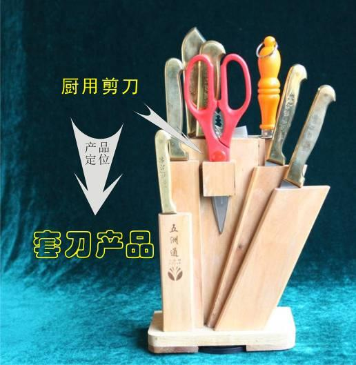
6.3.7.3.1 产品定位观
- 市场定位观
- 市场细分观
- 市场特色观
- 市场容量观
- 市场价格观
- 市场风险观
6.3.7.3.2 产品定位要求
设身处地为消费者未来着想，把市场需求作为设计依据。
- 消费者购买行为在众多同类产品竞争中作出判断和选择，适者生存。
产品功能/形态/色彩/价格/质量差异符合消费者需求差异，市场销售就有成功前提。
- 功能差异
- 心理差异
- 技术差异
- 有人需高级音响来满足鉴赏音乐品质。
- 有人购买低档品来满足声觉享受。
- 1960s，日产推出1L(发动机排放量)Sunny轿车。丰田公司见其销路好，随后推出1.1L Corona轿车。0.1L的差异在心理上大有作用。
- 某些音像产品上增加发光二极管 (LED) 等显示装置。虽然物理功能及成本没有大变化,但在人们心理上却造成较大差异感。
用优异技术使产品发生差异化
- Sony公司Walkman
- Benz汽车
6.3.7.3.3 产品定位内容
- 功能属性定位
- 用户群定位
- 产品线定位
- 外观及包装定位
- 卖点定位
- 营销策略定位
- 品牌属性定位
- 明确为谁设计
- 如何考虑消费者所喜爱设计风格和造型、材质、色彩、装饰等嗜好
- 产品在什么场合下使用
- 何时使用
- 通过什么渠道使产品到达消费者手中
- 用何种产品去满足用户需求
- 为什么要这么设计
- Know-what 指关于事实方面，知道是什么的知识。通过读书、听演讲、查看数据库获得。
- Know-why 指自然原理、因果关系与规律方面，支撑技术发展及产品和工艺进步。这类知识生产来自大学、研究室和实验室等。
- Know-how 将所学知识转换成有效执行，指做某些事情技艺和能力，有许多技术诀窍靠长年经验积累。
- Know-who 涉及谁知道和谁知道怎么做某些事。
6.3.7.3.4 产品定位方法
- 产品差异定位法
- 主要属性/利益定位法
- 产品使用者定位法
- 使用定位法
- 分类定位法
- 针对特定竞争者定位法
- 关系定位法
6.3.7.3.5 产品定位策划
- 寻找市场机会
- 市场细分
- 选择目标市场
- 制定产品定位策略
6.3.7.3.6 产品定位步骤
- 找出异于其它品牌产品主要特征，分析现有产品特点和市场情况，确定所要设计产品如何同中求异;
- 建立一个产品差异空间;
- 比较分析现有市场中各商品关系，重新指出一个新的设计方向。
- 例: 大小、结构、材料、造型、价格、商标、功能、质量、性能指标等。
- 从中确定若干消费者最为关心特征项目，目标明确，提高实效。
- 当产品重点特征确认后，可展开形成一个产品差异空间，
- 机能、心理、技术等方面差异，也可细分成更具体方面，如安全性、可靠性、工艺性、成本等。
- 通过对众多竞争产品特点及差异性空间分析，发现要设计产品所处位置，同中求异并适应企业特点。
- 形成产品概念，对未来产品有初步的关键想法，作为方案设计前提。
- 价格差异
- 功能差异
- 质量差异
- 造型形态、色彩、装饰、工艺、质感、风格、尺度等形式差异
- 安全性、可靠性、维护性、技术水平、规格、性能、质量、互换性等功能技术要素差异。
6.3.7.4 产品品牌定位
6.3.7.4.1 品牌定位概述
品牌人们对一个企业及其产品、售后服务、文化价值评价和认知，一种信任;
- 商品综合品质体现和代表。
- 属性。该品牌产品区别于其它品牌产品本质特征，如功能、质量、价格等；
- 利益。品牌产品因帮助消费者解决问题而带来实惠利益；
- 消费价值。产品为消费者提供价值；
- 文化。品牌所有文化内涵；
- 个性。品牌所有人格特性；
- 购买使用者。该品牌为哪类消费者所购买和使用 (目标消费者)。
措施：高质量、真诚服务、品牌延伸、品牌现代化、品牌国际化。
- 1984琴岛-利勃海尔单一品牌；
- 1985年海尔实施高质量名牌战略；
- 1986年海尔实施真诚服务名牌战略；
- 1987年海尔引入工业设计；
- 1989年海尔实施溢价战略；
- 1990年开展品牌认知活动 (高质量、真诚服务)；
- 1992年导入CIS，1993年更名为海尔集团；
- 1995年开始兼并洗衣机、黑色家电等扩大品种，品牌延伸走向多元化；
- 2000年以后，实现品牌国际化。
企业在市场定位和产品定位基础上，对特定品牌在文化取向及个性差异上商业决策，
- 品牌与目标消费者群建立内在联系，建立一个与目标市场有关品牌形象过程和结果。
- 确立品牌市场概念。
- 规定品牌层级、档次。
有助于潜在顾客记住企业所传达信息，对该品牌产生正确认识，进而产生品牌偏好和购买行动。
- 成功品牌定位充分体现品牌独特个性、差异化优势，这正品牌核心价值所在。
- 当消费者真正感受到品牌优势和特征，并被品牌独特个性所吸引时，品牌与消费者间建立长期、稳固关系就成为可能。
- 使企业实现资源聚合，产品开发须实践该品牌向消费者做出承诺，营销不能偏离品牌定位指向，企业根据品牌定位来塑造自身。
品牌定位对七喜饮料成功起重要作用
- 可口可乐和百事可乐饮料市场顶尖品牌，许多新品牌无数次进攻，均以失败告终。
- 七喜却以非可乐定位，成为另一种饮料选择，避免与可乐正面竞争，且与这两种品牌挂钩，提升地位。
6.3.7.4.2 品牌定位五阶段
据品牌建设发展水平，品牌定位划分为五阶段：
- 产品定位
- 品牌概念定位
- 品牌理念定位
- 品牌文化定位
- 品牌精神定位
确立产品名称和功能。企业中许多产品都有自己名称、商标、图案等，但未形成品牌。
- 将企业品牌规定出与其它企业、产品不同市场位置，
- 将相同产品而不同品牌以特征和独特风格区别，
- 由此使顾客加深对品牌概念理解与认同。
- 制定理念系统，将企业与品牌相关工作纳入理念系统，形成技术创新理念、产品理念、服务理念等。
- 理念对行为指导（企业形象识别CIS），并由企业各项行为传达出去，通过媒介传播形成理念在企业内外影响力。
- 与企业文化吻合，与消费者对品牌功效认同与接纳相一致，以保持品牌强有力市场地位。
- 品牌文化在给企业带来更高收入与效益同时，也设置较高市场进入壁垒。
- 品牌文化建设一个持久过程，消费者要经过长时间对同类产品不同品牌文化比较，筛选后，才能逐渐将自己对具体品牌文化认同固定下来。
- 消费者在品牌消费时得到精神享受。
- 品牌精神形成依赖品牌文化，扩展、更加强大和稳固品牌文化。
- 品牌精神赋予产品及相关要素消费目标，体现品牌超值部分，转化为消费者生活中更高境界追求。
中国中高端厨房第一品牌，世界一流厨房电器与集成化厨房解决方案提供商。
- 行业定位专业化
- 市场定位中高档
- 质量定位精品化
6.3.7.4.3 品牌定位方法
品牌定位建立品牌形象和提供价值行为，建立一个与目标市场相关品牌形象过程和结果。
- 人们只看他们愿意看事物
- 人们排斥与其消费习惯不同事物
- 人们对同种事物记忆有限
- 针对企业所处市场竞争环境：
- 消费者(Customer)、竞争者(Competitor)、企业自身(Corporation)三方面全面营销调研分析。
- 营销本质: 满足消费需求。
综合考虑企业外部环境和内部条件各因素，系统评价，选择最佳经营战略。
- S: 企业内部优势(Strengths)
- W: 企业内部劣势(Weaknesses)
- O: 企业外部机会(Opportunities)
- T: 企业外部威胁(Threats)
直观、简洁品牌定位分析工具。
- 利用平面二维坐标图将品牌识别、品牌认知等状况作直观比较
- 水平坐标轴代表一项评价品牌特征因子，
- 垂直坐标轴代表另一项评价品牌特征因子，
- 图上各点对应市场主要品牌，们坐标位置代表消费者对其各项特征因子评价。
- 抢先占位
- 关联强势品牌
- 攻击强势品牌
6.3.7.4.4 品牌定位注意问题
品牌定位蕴含产品定位，依赖宣传定位。
- 做品牌须挖掘消费者感兴趣某一点。
- 品牌要脱颖而出，须尽力塑造差异。
- 正确处理品牌定位与整合营销传播关系，实现品牌定位与品牌推广有机结合。
6.3.7.5 产品竞争定位
关注正在开发产品市场竞争对手同档次产品。
- 识别自己产品竞争对手是谁
- 并对竞争对手作深入、细致、全方位了解
- 然后确定出自己的产品定位。
6.3.7.5.1 产品竞争者分析
企业通过某种分析方法识别出产品竞争对手
- 并对其目标、资源、市场力量和当前战略等要素评价。
- 现有厂商
- 潜在加入者
- 替代品厂商
- 品牌竞争者
- 行业竞争者
- 需求竞争者
- 消费竞争者
企业应从不同角度，识别产品竞争对手，关注形势变化，更好地适应和赢得产品竞争。
- 市场领导者
- 市场挑战者
- 市场追随者
- 市场补缺者
- 产品地位
- 销售渠道
- 市场营销
- 生产与经营
- 研发能力
- 资金实力
- 组织管理力
- 迟钝型竞争者: 受到资金、规模、技术等限制，无法作出适当反应。
- 选择型竞争者: 对不同市场竞争措施反应有区别。
- 强烈反应型竞争者: 一旦受到挑战就会迅速反应，激烈反击。
- 不规则型竞争者: 反应随机，不按规则出牌，不可捉摸。
6.3.7.5.2 产品竞争定位分析
不少企业产品定位只建立在对消费者分析基础上，而对竞争对手分析不够。
- 如开发产品所在行业有强劲领导者，而设计定位相似，则无异于自寻短见, 因消费者更相信领先者。
- 定位宽泛，传达信息太多，什么都想表达，结果都没表达好。特点太多，产品没鲜明形象。
解消费者认知，提出与竞争者不同主张，让产品有一个清晰而又有别于同类产品概念。
哪一点比竞争对手强大有力，或更具潜在优势。让消费者接纳产品，信任甚至忠诚你。
- 寻找一个把自身与竞争者相区别概念。
- 从既有产品差别要素中，选择合适要素作为与竞争对手相区别地方。
- 找到自己有优势概念，与竞争者区别开来，占据有利位置。
- 例：冰箱，海尔抗菌，容声节能，美菱保鲜，伊莱克斯静音。
任何一个区隔概念须有据可依。
- 一台多功能收录机，须比别收录机功能多；
- 一辆转弯半径小汽车，须转弯半径比别汽车小。
- 建立不同于竞争对手区隔, 创造属于自己空间。
- 认识先入为主使先行者获得巨大领先优势，在定位时，要寻找属于自己区隔，
- 在此区隔概念下，所开发产品要能承载自己定位，并领先竞争对手。
6.3.7.6 产品消费者定位
6.3.7.6.1 消费市场特性
- 非盈利性
- 非专业性
- 层次性
- 替代性
- 广泛性
- 流行性
6.3.7.6.2 消费需求层次
马斯洛需求5层次：生理、安全、感情、尊重、自我实现
- 需求层次变化：人们需求层次结构同经济、科技发展水平、文化和受教育程度相关。
- 需求层次会随生产水平变化而变化。

6.3.7.6.3 产品消费者定位分析
按消费者年龄、文化层次和职业状况细分等方式定位。
- 例: 定位消费人群白领还大众化蓝领或灰领；
- 儿童、成人还老年人；
- 工薪阶层还农民工；
- 销往大城市，还中小城镇或边远农村；
- 国内市场还国际市场；
- 发达国家和地区，还贫困地区等。
马斯洛理论把消费需求分成依次由较低层次到较高层次发展模式，有助于帮助确定产品用户定位。
6.3.7.7 产品功能定位
6.3.7.7.1 产品功能定位概述
- 对拟提供产品应具备基本功能和辅助功能作出具体规定过程。
- 目的为市场提供适销对路、有较高性能价格比产品。
6.3.7.7.2 产品功能定位影响因素
- 功能提高要符合价格政策： 质量高产品，可订出高于其它同类产品较多价格。
- 功能标准制定要符合节能政策：标准定过高，在一定工艺技术条件下，单位产品能耗会提高。
制订产品功能标准最终目的研制、生产出用户满意产品，以取得最佳经济效益。
- 调查用户性质、所处销售地区、市场层次、经济条件、购买能力、技术操作与维修保养能力。
- 用户使用产品目的、使用环境与条件。
- 用户对产品功能及为实现这些功能所须具备技术经济参数要求；
- 用户对价格水平或价格控制幅度要求和技术服务方面要求等。
- 产品功能适应性与时间、环境、区域、风习有很大关系。
- 有同样质量、功能水平产品，因时间期限、地点、心理满足程度和消费习惯不同而有不同评价。
- 企业应站在用户立场，根据用户层次与结构来设计、制造有不同功能水平产品。
- 用户经济条件与支付能力
- 企业生产技术与管理水平
- 企业经济效益好坏
- 单一功能，造价低，但不能适应消费者多方面需。
- 多功能，成本或相应提高，但能满足顾客多方面需。
6.3.7.7.3 产品功能定位步骤
- 组建产品功能制订工作组
- 广泛调查研究, 收集各方面情报资料
- 在市场细分基础上初步功能设计
- 在实施过程中不断完善原有功能设计并功能定位
Digital IXUS系列定位时尚傻瓜型。
- 外形小巧时尚，只有很少手动功能。
- 轻薄型相机，俗称卡片机。
- 轻薄、小巧、美观，深为女性消费者喜爱。
伊克萨斯IXUS200 IS佳能首款搭载24mm超广角IS光学防抖变焦镜头小型数码相机。
- 新采用5倍光学变焦，镜头焦距相当于35mm照相机25-120mm，最大光圈F2.8(广角)/5.9(长焦) 。
- 1210万有效像素CCD和DIGIC 4影像处理器确保出众画质。每秒连拍0.8幅相片。
- 15秒到1/3000秒快门。
- ISO感光度80~1600，支持3200高感光度智能拍照模式。
- 3英寸23万象素宽频触摸液晶屏。
- 高清电视1280*720每秒30帧录像（单声道）。
- 微距变焦5cm。
- 光学影像稳定器，属于镜片避震功能。
- 锂离子充电电池。
- 支持佳能智能面部识别功能。
- 支持HDMI输出功能。
- 4个颜色：风情棕，畅想蓝，神秘紫，梦幻银。
- 外形尺寸 99.9×53.4×22.9mm，产品重量130g。
6.3.7.8 产品款型定位
6.3.7.8.1 产品款型
消费群体在购买时使用概念。款式要满意,型号大小宽窄要合适，也包含对产品花色、材料、做工要求。
- 产品形态: 产品整体外形所表现出形状、姿态、大小、色彩、材质、肌理及构成等问题研究。
- 产品造型: 针对产品形态外观设计、模型制作等活动创作过程及创作结果。
6.3.7.8.2 产品款型定位分析
- 依据用户定位和功能定位对产品在整体形态、局部形态、大小尺度、色彩设置相对产品市场、竞争对手所采取设计策略，
- 塑造与众不同、印象鲜明形象，
- 并将这种形象生动地传递给顾客，使该产品确立市场位置。
6.3.7.8.3 产品款型定位内容
- 确定整体造型基调。
- 提出局部细节要求。
- 确定操作界面设置。
- 提出材料及工艺要求。
- 色彩及表面装饰要求。
- 大小尺度限制范围、规格及参数系列种类限制。
- 自身重量和加附件总重限制范围。
- 机身整体造型给人以高级接近专业数码单反相机感觉，造型大气俊朗。
- 外壳采用专为EOS 60D新开发机身强度很高材料。
- 颜色沉稳，黑色配色显示出浓烈专业质感，
- 佳能EOS 60D配备3英寸104万像素显示屏，屏幕可多角度旋转，水平方向可展开最大角度约175°，竖直方向向下最大旋转角度为约90°，向上最大旋转角度为约180°。
- 机身有接近专业数码单反相机量感及适合手持大小准专业数码单反相机。
- 尺寸（宽×高×厚）约144.5×105.8×78.6毫米/5.7×4.2×3.1英寸。
- 重量约755克/26.6盎司（含电池、存储卡 ），约675克/23.8盎司（仅机身）。
- 机身整体造型给人以高级便携性突出小型准专业数码相机感觉，造型高贵典雅。
- 外壳采用机身强度很高材料。
- 颜色沉稳，黑色配色显示出浓烈准专业质感。
- 配备2.8英寸46.1万像素液晶屏，屏幕可多角度旋转，水平方向可展开最大角度约175°，竖直方向向下最大旋转角度为约90°，向上最大旋转角度为约180°。
- 机身有接近准专业数码单反相机量感及比较适合手持大小准专业数码相机。
- 尺寸（宽×高×厚）约112.1×76.2×48.3mm（不包括凸出部分）。重量约351g（仅机身），约401g（包含电池和存储卡）。

- 机身整体造型时尚前卫，纤薄而质感精良，非常便于拍摄者日常携带与使用。
- 整体设计保持流线型同时加入一些棱角造型。
- 机身外壳采用金属，骨架采用高强度工程塑料，前面板经过钢琴烤漆处理，后盖则经过轻度磨砂处理。
- 不仅造型时尚，且易操作。机身背面按钮布局简洁并舒适。
- 面板色彩斑斓明快，玛瑙褐、珍珠银、宝石粉三种全新机身色彩，后盖颜色略浅。
- 配备3.0"，约23万点，纵横比 16：9 LCD屏。
- 机身有在视觉上显现出纤薄精良、时尚便携感觉，大小能适应一般手持卡片式数码相机。
- 尺寸(W×H×D)约101.3×58.5×22.3毫米（不包括凸出部分）。重量(包括电池和存储卡/仅相机机身)约167 g（仅机身），约190g（包含电池和存储卡）。
- 定位于家用入门相机，但性能强悍、品位不低，价格实惠其主要特点。
- 机身整体造型通过前后面板包围式设计，打造出珠圆玉润般精巧外型。
- 机身上下平滑曲线给人一种纤薄感。握持感更为舒适，也更易随身携带。
- 机身外壳采用高强度工程塑料，轻便舒适。
- 大尺寸操作按键可减免操作失误，按键图标显示更清晰然，机身每一处精心设计都有效提升操作性。
- 机身色彩选择，满足你张扬个性需。
- 外观设计上很简洁，机身色调为黑色和暗银色组合，给相机带来内敛不张扬气质。
- 配备2.5"，约11.5万点LCD屏。机身有小巧便携感觉，大小基本能适应一般手持口袋装数码相机。
- 尺寸(W×H×D)约93.5×61.7×30.6毫米（不包括凸出部分）。重量(包括电池和存储卡/仅相机机身)约130 g（仅机身），约175g（包含电池和存储卡）。
6.3.7.8.4 产品款型定位影响因素
- 产品市场定位
- 产品定位
- 产品品牌定位
- 产品竞争定位
- 产品用户定位
- 产品功能定位
- 产品价格定位
- 企业实力、投资策略、开发战略规划、设计策略、及设计团队力量
6.3.7.8.5 产品款型定位意义
协调和规划好形态定义和外在表现，确定产品造型限制范围，搜寻最能代表产品定位款型。
- 形态产品与功能中介,产品内在品质、结构等因素外在表征。
- 一种产品功能或对应多个产品形态, 产品形态选择，关系和影响产品销售和市场占有率。
6.3.7.9 价格定位
6.3.7.9.1 价格定位概述
据产品价值特征，价格定在某区域，在顾客心中建立一种价格形象，使产品占据显著位置。
- 高价定位，把不低于竞争者产品质量产品价格定在竞争者产品价格之上。
- 低价定位，把价格定得远低于竞争者价格。因(1)有低成本优势，(2)或企业形象好、销量大，(3)或出于抑制竞争对手、树立品牌形象等战略考虑；
- 均价定位，把价格定在市场同类产品平均水平。
6.3.7.9.2 价格定位依据
- 以扩大市场份额为目标，宜采用较低价格。
- 以质量领先或主营高档品牌，宜定较高价格。
- 以规避竞争为目标，宜采用随行就市定价方式。
- 以渡过企业经营困境，宜采用成本定价（高于可变成本）方式。
市场需求决定定价上限
- 定价以企业所能获得最大利润为准，而非最高利润率，否则顾客采购量不足会影响企业利润。
包括固定成本与变动成本
- 商场固定成本主要店内设备投资与商场固定投资(或房租)，
- 总固定成本与产品销量无关，但单位固定成本与产品销量成反比。
企业处于困境时，价格可低于固定成本，高于可变成本，以清除库存，加快资金回笼，渡过困难时期。
- 商场可变成本主要表现为商场采购成本、员工工资、水电费等。
- 产品可变成本决定价格底线。
以产品定位和竞争对手同类商品价格为定价依据
- 选择有利于企业目标实现定价方法
- 比如随行就市定价，按行业平均现行价格水平结合市场定位来定价
6.3.7.9.3 价格定位价值分析
价格定位受不确定因素影响，难度大、风险大，易限制经营者对市场灵活反应。著名企业恪守定价原则所取得经验转化为经营特色，有助于在竞争中开拓战略选择, 可持续发展。
- 培养目标顾客忠诚度
- 塑造企业独特经营个性
- 成为企业经营管理利器
价格水平相对稳定。一旦确定在一定档次，除非市场剧烈变动，一般都处于稳定状态。
- 稳固型价格弱化市场供求变化对价格反映资源稀缺程度，强化企业目标专一，对顾客忠诚。
- 稳固型价格造成目标顾客对相应品牌价格心理定势，强化选择偏好，利于培养消费忠诚。
在市场不利情况下，价格定位执着会失去争夺市场份额机会，但专注所积淀经营个性竞争者不可模仿。
- 供不应求时一哄而上价格攀升，供过于求时一哄而下价格跳水，都不能给企业带来长期顾客回报。
价格通常企业参与市场竞争重要依据，担负着传递市场供求变化信息作用。
- 经过定位战略后价格，从参与市场竞争实现商品价值外部职能，渗透到企业内部价值形成管理过程。
- 价格定位从外部吸引资源合理配置到企业、并充分发挥资源创造价值作用，增强企业竞争力。
- 价格内部结算：为实现价格目标，价格定位要求企业各部门相互适配，以优补劣产生1＋1>2组合效应。
- 通过对价格内部构成指标分解，强化员工竞争观念，增强岗位责任，从责权利上调动员工积极性。
6.3.7.9.4 价格定位应变方式
价格定位将商品稳定在一定价格水平上，充实服务内容，提升竞争力; 但定位不舍弃价格变化灵活性，而改变价格变化方式。
- 高服务质量作为主要对策。
- 不断推出新产品新品种以弥补老产品退市空缺。
- 降价。企业承受不住降价压力，一时难以推出新商品，加强促销也不易奏效时，降价成必要手段。
当系列产品存在需求和成本内在关联性时，为充分发挥其积极效应，采用产品线定价策略。
- 确定某种产品最低价，充当领袖价格，吸引消费者购买产品线中其它产品；
- 确定某种商品最高价，在产品线中充当品牌质量和收回投资角色；
- 其它产品分别依据其在产品线中角色不同而制定不同价格。
- 佳能EOS60D(配18-135cm镜头)售8500元
- 佳能PowerShot G12售3750元
- 佳能IXUS1000售2150元
- 佳能PowerShot A495售850元
6.3.7.9.5 价格定位四种选择
- 高价定位: 高品质象征。
- 低价定位: 在同一质量和服务水平上，低价位吸引顾客有力武器。
- 中价定位: 价格确定在目标市场顾客平均购买力所能支付价格区间。要求产品质量处于中等或偏上水平。这许多企业喜欢采用定位。
- 固定价格定位: 不折、不扣、不减价、明码实价定位法。消除顾客对价格不信任，免去砍价之苦。这种定位要求产品或企业有相当声誉。
6.3.8 功能价值分析
功能价值分析 (价值工程 Value Engineering)
6.3.8.1 价值工程简介
技术和经济结合分析。源于1940s美国通用公司设计工程师麦尔斯(Lawrence.D.Miles) 在实践中总结。
- 寻找功能与成本间最佳对应配比，以尽量小代价取得尽可能大经济效益和社会效益。
- 用最少成本去实现必要功能, 提高设计对象价值。
6.3.8.2 国家标准价值工程 (摘于GB8223一1987)
- 价值工程目的：以对象最低寿命周期成本可靠地实现使用者所需功能，以获取最佳综合效益。
- 价值工程对象：为获取功能而发生费用事物，如产品、工、工程、服务或们组成部分等。
6.3.8.2.1 价值工程主要特点
- 以使用者功能需求为出发点;
- 对所研究对象功能分析，并系统研究功能与成本间关系;
- 致力于提高价值创造性活动;
- 应有组织有计划地按一定工作程序。
6.3.8.2.2 术语
- 功能 Function
- 成本 Cost
- 价值 Value
对象能够满足某种需求。功能特征Function characteristics是对功能定性定量描述。
- 使用功能 Use function：对象所有与技术经济用途直接有关功能。
- 品位功能 Esteem function：与精神感觉、主观意识有关。如贵重、美学、外观、欣赏功能。
- 基本功能 Basic function：与对象主要目的直接有关功能，对象存在主要理由。
- 辅助功能 Supporting fonction：为更好实现基本功能服务功能。
- 必要功能 Necessary function：为满足使用者需求而须具备功能。
- 不必要功能 Unnecessary function：对象所有、与满足使用者需求无关功能。
- 不足功能 Insufficient function：对象尚未满足使用者需求必要功能。
- 过剩功能 Plethoric function：对象所有、超过使用者需求必要功能。
表示对象功能得以实现功能逻辑关系图。
- 上位功能和下位功能：作为目的功能称为上位功能，作为手段功能称为下位功能。
- 同位功能：与同一上位功能相连若干下位功能。
- 总功能：上位功能的功能。
- 末位功能：仅为下位功能的功能。
- 功能区域：任何一个功能及其各级下位功能组合。
从对象研究、形成到退出使用所需全部费用。
按功能计算全部费用。
- 功能目前成本Functional present cost：对象现有功能成本。
- 功能目标成本 Target cost of function：为功能设立成本目标值。
对象所有功能与获得该功能全部费用之比。
6.3.8.2.3 一般工作程序
- 对象选择
- 组成价值工程工作小组
- 制订工作计划
根据客观需，选择价值工程对象并明确目标、限制条件和分析范围。
根据不同价值工程对象，确定工作人数，组成工作小组。
- a 工作小组负责人应由能对项目负责的人员担任;
- b 工作小组成员应各有关方面熟悉所研究对象专业人员;
- c 工作小组成员应思想活跃，有创造精神 ;
- d 工作小组成员应熟悉价值工程;
- e 工作小组成员一般在十人左右。
工作小组应制订具体工作计划，包括具体执行人、执行日期、工作目标等。
- 收集整理信息资料
- 功能系统分析
- 功能评价
由工作小组负责收集整理与对象有关一切信息资料，收集整理信息资料工作贯穿于价值工程全过程。
分析信息资料，用动词和名词组合简明正确地表述各对象功能，明确功能特性要求，并绘制功能系统图。
- 改进对象
- 创新对象
- a 用某种数量形式表述原有对象各功能大小;
- b 求出原有对象各功能目前成本;
- c 依据对功能大小与成本间关系研究，确定应在哪些功能区域改进原有对象，并确定功能目标成本。
确定功能功能目标成本，作为创新、设计评价依据。
- 方案创新：针对应改进具体目标，依据已建立功能系统图、功能特性和功能目标成本，通过创造性思维和活动，提出各种不同实现功能方案。
- 方案评价：从技术、经济和社会等方面评价各种方案，看其时否能实现目标，然后选择最佳方案。
- 提案编写：将选出方案及有关技术经济资料和预测效益编写成正式提案。
- 审批主管部门应对提案组织审查，并由负责人根据审查结果签署否实施意见。
- 实施与检查：根据具体条件及提案内容，制订实施计划，组织实施，并指定专人在实施过程中跟踪检查 ，记录全过程有关数据资料。必要时，可再次召集价值工程工作小组提出新方案。
- 成果鉴定：根据提案实施后技术经济效果，成果鉴定。
6.3.8.3 价值分析
产品价值=产品功能/耗费成本
- V=F/C (Value = Function / Cost)
- F: 实现功能的理想最小费用, 或社会最小成本 (采用最新技术及其它改进措施后可能达到的最低成本)。
- C: 改进前实现该功能的现状(实际)成本。
- V 值作为衡量功能与成本关系标准。
- 当 V=1 时，表示以最低成本实现相应功能，两者比例合适。
- 当 V<1 时，表示实现相应功能付出较大或过大成本，两者比例不合适，应改进。
6.3.8.4 价值分析对象选择
选择好分析对象，保证以最小投入获得最大效果。
- 投资大、涉及面广重大科技开发项目;
- 量大面广、耗能大、能量转换效率低科技开发项目;
- 污染严重、威胁人民生命安全、严重破坏生态平衡科技开发项目;
- 能推向国际市场，而不影响本国民生产品，逐步占领国际市场;
- 从国内实际情况出发，发展一批以劳力密集为基础科技开发项目;
- 满足人民日益增长物质和文化生活水平需科技开发项目;
- 各种新设计、新工艺、新材料、新技术科技开发项目;
- 使用频繁，与人们生活关系密切项目;
- 从设计质量差，改进余地大老产品人手，创新设计，提高效果;
- 从结构复杂、零部件多、体积大、分量重、安全系数过大产品中选择;
- 从成本高的现有产品中选择;
- 从用户反映差的产品中选择;
- 从销售量大，影响广产品中选择。
6.3.8.5 其它国家价值分析工作程序
6.3.8.5.1 日本某大学提出的价值分析程序
6.3.8.5.2 英国价值分析工作程序

6.3.8.6 价值工程在产品设计中应用概述
6.3.8.6.1 因缺乏价值分析常会出现的问题
- 对用户需哪些功能研究不够，使产品或功能过剩，或不足。
- 对产品制造成本关心不够，使产品价格过高，失去消费者。
- 对用户使用产品过程中所花费使用成本重视不够。
- 对产品设计方案评价没能从技术、经济、社会、人因、审美等多方面综合，常造成大方向失误。
6.3.8.6.2 价值工程在产品设计中应用范围
老产品因历史原因，未充分考虑功能成本比，也存在一些失误，有一定改造潜力。
- 运用价值工程基本思想和方法，对老产品全面分析、评价，从结构、材料、工艺、造型、管理等多方面探讨降低成本途径，
- 并注意对其功能系统加以分析和整理，克服功能不足或功能过剩两种错误，使产品价值达到理想水平。
- 同时，还要十分注意不受纯技术、经济观点束缚，通过对产品造型审美及社会效益分析，在不过多增加成本前提下 (甚至保持或降低现有成本值) 实现产品造型改良，提高产品水平，并适应时代发展要求。
涉及新问题和新情况。
- 对新条件和要求，设计若仅靠传统、主观设计思想，难以避免失误，使设计水平难以提高。
- 须用现代科学设计方法指导设计过程，有目的、有系统地达到设计高标准。
- 价值工程运用于对新产品设计开发全面指导，有助于提高产品生命力和竞争力。
- 使产品设计真正适应社会需要和时代特点，增加产品设计成功率，提高设计理性水平。
6.3.8.6.3 价值工程在产品设计中应用一般步骤
提高设计水平，减少设计在功能价值方面失误和不足。
- 选择分析对象 (既可局部，也可整体性，视具体产品和时间、精力、财力等条件而定)。
- 收集与设计有关资料 (包括用户要求、销售、设计技术、加工制造、国家政策、法令等)。
- 功能类比分析(比照优秀设计功能、成本、造型、效益等，找出关键问题)。
- 分析评价 (对重要零部件等功能价值基本分析，不断改进设计方案)。
- 提出若干设计方案供评价选择。
- 择优 (与有关专家一起综合评价，选择有前途方案)。
- 必要试验验证 (制作关键零部件模型， 对有关问题技术试验，检查总成本可行性等)。
- 确定设计方案并进一步具体化。
6.3.9 设计调研报告与任务书
需求分析、市场预测、可行性分析，确定关键性设计参数及制约条件
- 最后给出设计任务书 (或要求表)，作为设计、评价和决策依据。
6.3.9.1 需求分析
首先识别需求。从生活研究和市场竞争环境中分析出社会需求及发展趋势。
- 生活研究和市场分析 (如时尚趋势、消费需求及消费者对产品功能和性能质量具体要求)
- 竞争者状况
- 现有类似产品特点
- 主要原料、配件供应状况
- 产品变化趋势
6.3.9.2 可行性研究
对产品开发重大问题，由技术、经济和社会文化各方面分析，提出可行性报告，内容包括：
- 开发必要性
- 市场调查及预测情况
- 相关产品国内外水平
- 发展趋势
- 技术上预期达到水平
- 经济效益和社会效益分析
- 设计、工艺等方面需解决关键问题
- 投资费用及时间进度
- 现有条件下开发可能性及需采取措施
6.3.9.3 设计要求
对拟开发产品，通过调研分析，提出合理设计要求，用来指导设计展开。
- 在技术性能、质量指标、经济指标、整体造型、宜人性及环境等方面统筹兼顾、协调一致。
- a 功能/适应性/性能/人机关系
- b 可靠性/使用寿命/效率
- c 使用经济/成本要求
- d 安全防护要求/与环境适应要求/储运包装要求
6.3.9.3.1 功能
实用功能，美学功能和象征功能。
- 人机分析: 按人-机系统功能分析，充分利用人、机各自特点，发挥效率、方便使用。
- 成本分析: 按价值工程原理分析，如为实现某功能需过多成本费用时应进一步分析其必要性。
- 技术分析: 从技术可行性上分析。
6.3.9.3.2 适应性
- 工作状况、环境条件等发生变化时，产品适应程度。
- 设计前分析各种变化因素及后果，对设计提出要求适应变化。
6.3.9.3.3 性能
产品所有工作特性
6.3.9.3.4 人机关系
方便舒适，调节控制有效、可靠，符合人的习惯，造型和谐，操作宜人、高效等。
6.3.9.3.5 可靠性
这指系统、产品、部件、零件在规定使用条件下，在预期使用寿命内正常工作概率。
6.3.9.3.6 使用寿命
- 产品不同，对其使用寿命要求亦不同，一次性使用寿命，半耐久性产品，耐久性产品。
- 理想情况所有零部件为等寿命，但事实不可能，应对易损件寿命与部件或产品寿命倍数关系研究确定。
6.3.9.3.7 效率
- 系统输入量和输出量有效利用程度，如发光效率。
- 从节约能源，提高系统经济性考虑，尽可能高效率，
- 然而技术、成本等制约，应提出适于当前技术水平，较为经济、适度效率指标。
6.3.9.3.8 使用经济 (运行费用低)
这指产品在使用时支付成本费用与获得价值差值，如同类车辆百公里耗油量。
6.3.9.3.9 成本要求
- 产品成本一般70%~80%决定于设计过程。关系产品竞争力及利润水平。
- 设计简化、合理化精度和安全系数，零件结构和加工制造方法优化等都可降低成本。
6.3.9.3.10 安全防护要求
- 确保人身及产品本身安全，
- 如过载保护、触电保护、防止误操作装置等。
6.3.9.3.11 与环境适应要求
环境对系统有各种干扰，系统对环境也会产生各种物理、视觉等作用，
- 二者要达到一定协调、适应水平。
6.3.9.3.12 储运包装要求
产品储存码放、运输方法、产品总体尺寸、重量等。
- 包装既有保护产品作用，也具宣传展示功能，还会在废弃时对环境造成影响，需有相应要求。
6.3.9.4 设计任务书
- 产品规划 (计划) 阶段最终目标明确设计任务和要求，
- 确定产品开发具体方向，
- 并以设计任务书 (要求表) 方式加以归纳，
- 不同产品应根据自身特点确定其项目内容。
6.4 设计方案
方案设计关系产品性能、成本和竞争力。
- 运用创新思维方法并借鉴前人经验，采用普遍适用原理方案构思方法。
- 解决总体布置，运动配置、人机关系等
- 设计结构、选择材料、确定尺寸等
6.4.1 方案设计方法
- Object - Relation - Output
- Function-Behaviour-Structure ontology
6.4.1.1 0R0
- Object - Relation - Output
- 客体(要素) - 联系(结构) - 产出(功能)
- 系统始于不同客体如:自然资源、人力资源、材料、工艺等。
- 在各客体间建立结构联系,通过这些联系产生既定结果。
6.4.1.1.1 0R0流程实例 (木椅设计)
- 木椅由哪些要素组成,即各种客体。
- 如何将这些要素联系起来,即结构。
- 最终达到何种目的,即功能。
6.4.1.1.2 正向0R0流程
- 投入(木料、构件、工艺、尺度、色彩、木胶、镙钉、人体工学)[要素]
- –> 转换(造型、构造、连接)[结构]
- –> 产出(产品)[功能]
6.4.1.1.3 逆向0R0流程
功能->结构->要素
- 先确定目标，如设计项目立项
- –> 确定构成方式
- –> 确定要素内容
6.4.1.2 FBS (功能-行为-结构)
- Function-Behaviour-Structure ontology

6.4.2 功能设计
把复杂设计由功能关系抽象化，功能分解使问题简单化，以寻找能满足设计对象功能关系技术原理。
- 寻找实现每个分功能技术途径, 组合为设计原理方案。
- 优化筛选取得较理想功能原理方案。
6.4.2.1 分功能求解
- 分功能求解原则
- 选用现有零部件实现分功能
- 探索新的解决办法实现分功能
6.4.2.1.1 分功能求解原则
- 符合要求：充分考虑设计任务要求，如已要求机械传动，就不必考虑液压、电磁等。
- 全局考虑：分功能在总功能中作用及分功能间关系，几个分功能可用同一技术物理效应，简化方案。
- 多样选择：对一种分功能提出多种技术物理效应，以供选择，同时注意先进性。
- 创新技法：提高设计水平和效率，如头脑风暴法、联想法、类比法、检核目的录法等。
6.4.2.1.2 选用现有零部件实现分功能
已有诸如增速器、减速器、功率放大器、电器开关元件等之类通用、常用或标准化元部件可供选用。
6.4.2.1.3 探索新的解决办法实现分功能
- 物理作用原理
- 技术物理效应
- 技术物理效应与功能的对应关系
将输入量转变为所属输出量特性，如能量类型、运动型式转换、物态、材料性质转变、信号转换。
- 力学原理 (重力、弹性力、惯性力、摩控力、离心力等)
- 流体效应(流体动压、毛细管效应、虹吸效应、负压效应等)
- 电力效应 (电动力学、静电、电感、电容、压电等)
- 磁效应
- 光效应 (反射、衍射、干涉、偏振、激光等)
- 热力学效应 (膨胀、传导、储存等)
- 核效应(辐射、同位素等)
将物理学原理通过一定结构方式应用于工程技术。
- 例：据力平衡原理导出杠杆、滑轮等。
- 一种技术物理效应实现多功能：杠杆效应实现力放大、缩小及换向。
- 几种技术物理效应实现同一种功能：重力、离心力、压缩、脉冲等实现液体移动。
6.4.2.2 建立功能-技术关联矩阵
为每项分功能找到一定数量解决途径后，组合各种途径形成实现总功能原理方案。
- 功能栏内G(1), G(2), G(3),…,G(n)分别代表各项分功能;
- 技术途径栏内代表功能实现途径
6.4.2.3 原理方案组合和选择
从功能技术矩阵中获得组合方案数量巨大，不能逐一检验，要分析判断。
6.4.2.3.1 各分功能原理方案间在物理原理上相容性辨别
- 有无干扰：从功能结构中能量流、物料流、信号流能否不受干扰地连续流过
- 是否相容：分功能原理方案在几何学、运动学上否有矛盾来判断，剔除不相容组合方案。
6.4.2.3.2 从技术、经济角度，剔除有问题方案，选出有希望方案。
相容性矩阵法和选择表法。
- 相容性矩阵示例。其中行与列代表功能G(1)和G(2)技术物理效应，
- 由表可知A3、B1、D1相容，A1、B3、C1、C3有条件相容，其余组合为不相容。
符合要求记为+，不符合要求记为-，无法判定记为?
- 能否满足技术指标要求?
- 技术上否先进? 有和否前途?
- 技术上能和否容易实现?
- 否较现有同类产品更有特点和创造性?
- 成本上否可行?
- 宜人性上有无问题? 否优异?
- 原理否可靠、简明?
- 在材料供应、制造方法、专利和标准方面否可行?
- 如采用此方案，产品在重量、体积、外观、维修、使用成本等方面和否有较好结果?
- 安装、运输方面有无问题?
- 社会效益如何?
- 其它。
- 功能序列重要性系数评定
- 技术途径综合分析(工期优异性系数、寿命优异性系数、适应性优异性系数、成本优异性系数等)
- 分析方法：直接评分法、0,1评分法、0,4评分法、多比列评分法
6.4.3 结构设计
- 把原理方案落实到功能载体(零件、部件、机构)上。
- 变型探求多种结构方案。
6.4.3.1 结构设计思路
- 从定性到定量: 定性构形、选材料，再定量确定零件尺寸;
- 从局部到整体: 功能面构形后组合为零件，通过零件间连接或相对运动构成部件。
6.4.3.2 结构变型方法
- 功能面变型
- 连接变型
- 功能运动变型
- 材料变型
6.4.3.2.1 功能面变型
功能面零件中完成主要功能作用面，如传递力或扭矩传力面，相对运动面等。
- 功能面可按其形状、大小、数目、位置等要素加以变型。
- 如曲柄、连杆间久销连接，当销孔尺寸由小变大，即可形成许多不同形式，直至变为偏心轮机构。
6.4.3.2.2 连接变型
相对静止零件间传递力形式称为连接。
- 可按拆卸特点 (可拆或不可拆) 及锁合原理对连接分类和变型。
- 根据受力时维持零件问相对静止锁合原理，可分为形锁合、力锁合和材料锁合三类。
- 形锁合利用零件间形状关系产生锁合力;
- 力锁合利用零件间相互作用力 (摩擦力、磁力等) 产生锁合力;
- 材料锁合利用附加材料产生锁合力。
6.4.3.2.3 功能运动变型
在实现功能过程中，功能面或功能体间有功能运动。
- 类型：移动、转动、复杂运动
- 性质：均匀/不均匀、连续/断续
- 方向：单向、往复
- 数目：一个运动或多个运动合成
- 大小：速度高低
6.4.3.2.4 材料变型
根据工作要求，可选用各种金属、非金属材料，固体、液体或气体材料。
- 不同材料将影响结构方案形成，如铸钢、铸铁、铸铝同为铸件，但其结构各有特点。
6.4.4 造型设计
通过产品造型构思 (草图) 完成预想图和概念模型，逐步将产品形象具体化。
- 人机要素：产品顺手、易用、可操作性
- 制造要素：工艺师和工程师配合设计师评价和校验造型参数
- 市场要素：畅销商品造型特征
- 流行要素：流行色
6.4.4.1 造型设计推进方式
| 目的 | 开发过程 | 方法 |
|---|---|---|
| 设定产品形象 | 设计概念 | 根据企划确定 |
| 造型设计 | 构思草图 | 独立构思、集体研讨 |
| 造型研讨 | 概念模型（草模） | 纸质模型、发光塑料模型 |
| 设计定案 | 完成预想图 | 各种效果图 |
| 反映实际质感色彩预想模型 | 设计评价模型１ | 发泡塑料模型、塑料模型、油泥模型 |
| 制造方法、装配方法和成本预算 | 设计评价模型２（样机） | 三维打印 |
| 模具 | ||
| 试产 | 量产化试制 | 各种实际成型方式打样 |
| 产品 | 量产 | 各种成型方式 |
6.4.4.2 造型研究
6.4.4.2.1 概念和造型
- 可收集各种能反映消费趋势信息倾向探测 (杂志影像资料)
- 造型构想方式多样 (尼康观察水鸟望远镜，采用水鸟形象)
6.4.4.2.2 功能结构与造型
- 产品功能构造直接影响产品造型，有时为新造型需改变功能和结构
- 不能无视生产方法、材质和成本，而一味强调造型
- 好产品功能和造型设计需降低成本并适于量产
6.4.4.3 色彩研究
照相机、复印机、电脑、打印机、医疗产品等属于相同产品领域而在色彩运用上带有共性。
6.4.4.3.1 色彩可改变造型感觉及形成不同心理感受
| 对象 | 内容 | 其它 |
|---|---|---|
| 产品概念 | "何人"、"何地"、"如何" 使用原则 | |
| 产品属性 | 照相机以黑灰为主；复印机和医疗产品多用浅白灰 | 如要超出习惯用色范围，须研究与外观色彩及市场战略意图否相符 |
| 品牌差异 | 在惯用色基础上强调品牌用色，形成品牌系列 | 某一部分用企业色来装饰 |
| 信息提示 | 须依据人体工学原理 | |
| 表面处理 | 同样黑色，因表面处理不同而视觉效果各异，如高光、亚光或橘皮质感 | 也可通过氧化处理形成肌理感 |
6.4.4.4 造型设计与人机工程学
6.4.4.4.1 易用
- 操作困难产品会影响产品功能发挥。
- 考虑人动作和视觉特性，从心理、知觉、物理上求得产品与人之匹配。
- 手柄、把手、旋钮
6.4.4.4.2 易懂
- 让认知联系自然对应
- 如：搭载微电脑天平，操作显示要明确易懂，能轻易辨别微量变化。
- 操作显示、操作用语
6.4.4.4.3 以人为本 (D.A-罗曼《为谁而设计》)
电子芯片控制可简化操作，但也使过程黑箱化，如因选择复杂造成麻烦或误操作。
- 让使用者简单、明确地知道他可怎么做
- 对象物要醒目的
- 在操作过程中，通过视觉便可知道产品功能
- 要很容易地对系统现在状态作出评价
6.4.4.5 产品造型设计流程
6.4.4.5.1 功能结构整合
产品各功能实现结构(实体)化后，得到一系列零部件, 根据有关条件结合成更大部件，直至整个产品。
- 根据功能定位、用户定位做形态设计。
- 技术结构确定后，依据产品设计目标，给出设计形态，满足目标要求。
- 相同结构可设计出不同形态，通过形态，使设计创意-目标功能-结构原理形象逼真展现出来。
- 完成设计效果图
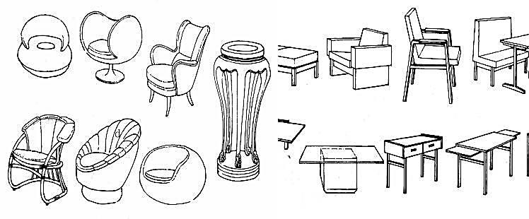
- 功能联结需要
- 节省空间
- 方便控制、操作、维护等使用需要
- 例：洗衣机电路控制和操作件集中在面板上
明确各部分间相对位置和方向变化限制条件，为确定造型单元做准备。
6.4.4.5.2 造型单元确定
- 包容指整合部分或其联结结构成为更大整合部分一个内部元素,或被产品壳体或其它实体结构包围。
- 不可见部分为隐结构，可见部分为显结构, 所有显结构集合构成产品造型单元
- 真空吸尘器造型单元及其变化组合方案
6.4.4.5.3 造型单元变化与组合
- 单元数目变化
- 体量变化
- 表面肌理及装饰、分割变化
- 方向和位置变化
- 比例和形态变化
- 表面曲率变化
- 形体线型变化
- 形体分割和添加变化
- 材质及色彩变化
- 一维空间组合变化
- 二维空间组合变化
- 三维空间组合变化
- 四维空间(时间)组合变化
- 哪些造型单元在体积、位置上有所限制
- 哪些造型单元间固定搭配方式或相对配置形式
6.4.4.5.4 比例与尺度设计
- 确定整体与部分比例关系和与环境及使用关系
- 确定整体比例、部分比例、部分与整体间比例
- 确定整体与使用者操作比例尺寸
- 确定整体与环境比例尺度等
- 完成比例尺度分析图表
6.4.4.5.5 质感设计与色彩设计
- 针对产品表面材质分析，提出合适材料和表面处理方案。
- 针对产品主色、辅色等，据市场调研，提出合适色彩搭配及主要色彩方案。
- 完成质感色彩分析图表和设计方案效果图
6.4.4.5.6 造型语义分析
产品由形状、大小、色彩、材料等符号组成，以特殊言语传递信息。
- 图像符号(造型)、指示符号(说明如何使用)和象征符号(由约定俗成关系产生联想)。
- 格式塔完形理论有助于构成产品语言。当视域中出现不完善形时，会产生一种重新组织或建构活动。
- 完形遵循简化原则(按与刺激物相近、相似或连续等特性将其组织成好、简约合宜完形)。
- 多样化、小批量，注入更多文化因素。
- 人—机界面(空间)和人—自然—文化界面(文化脉络)
符号是内容指示物(即适用于符号形式特定、具体个体或事例)还是意义?
- 设计依据不是具体功能，而是意义
- 在由包括各种要素(功能、人机界面、工艺、材料、经济、社会、文化、环境等)深层结构转化为产品语言时不一一对应
- 可用不同符号表示相同意义，或一种符号表示不同意义(多对多映射)
- 作为符号各造型要素应有相对同调性；
- 产品语言信息，应有一定冗余度；
- 产品语言符号，应避免产生消极有害联想。
6.4.4.5.7 系列化造型设计
通过系列化造型，完成关联产品群全部款型设计。
- 对每一个产品款型，除去形态造型语义学分析外，须作出人机工程学校对, 保证用户定位落实。
6.5 设计评价
6.5.1 设计评价概念和意义
分析-综合-评价-决策：在分析设计对象特点、要求及各种制约条件前提下
- 综合搜索多种设计方案。
- 最后通过设计评价过程，作出决策，筛选出符合设计目标要求最佳设计方案。
6.5.1.1 评价对象
原理方案、结构方案、造型方案
6.5.1.2 评价载体
零部件或总成图纸，模型、样机、产品
6.5.1.3 评价参照物
依据评价标准理解为一种抽象理想方案
- 借助实际方案与理想方案比较和对照，就能确定实际方案相对价值，
- 以其与理想要求接近程度评定其优劣，作出判断。
6.5.1.4 评价意义
- 保证设计质量。
- 筛选出最佳方案。
- 减少设计中盲目性，提高设计效率（工作原理、运动方案、结构方案、材料及工艺、造型）。
- 发现设计不足，为设计改进提供依据。
6.5.2 设计评价目标
- 技术目标
- 经济目标
- 社会目标
- 审美目标
6.5.2.1 技术目标
- 技术可行和先进
- 工作性能达标、可靠、安全
- 宜人、使用维护方便、实用。
6.5.2.2 经济目标
成本、利润、投资、投资回收期、竞争潜力、市场前景。
6.5.2.3 社会目标
- 社会效益、推动技术进步和发展生产力情况
- 环境功能、资源利用
- 对生活方式影响、对身心健康影响。
6.5.2.4 审美目标
- 造型风格、形态
- 色彩
- 时代性
- 创造性
- 传达性
- 审美价值
- 心理效果
6.5.2.5 评价目标选择
- 选择最能反映方案水平和性能的设计要求(约10项)，不同对象和不同设计阶段对评价要求不同。
- 评价目标要求全面(技术、经济、社会、审美)和独立（各评价目标内容区分明确）。
- 重要程度分别设置加权系数(权重)，数值越大越重要，加权系数之和为1
6.5.2.6 评价目标树
把总目标细化为子目标
6.5.2.7 评价目标表
6.5.3 设计评价分类
- 按评价主体
- 按评价性质
- 按评价过程
- 按评价内容、方法、目的、阶段分类
6.5.3.1 按评价主体
- 消费者评价
- 生产经营者评价
- 设计师评价
- 主管部门评价
- 综合评价
6.5.3.1.1 消费者评价
消费者关注功能和价格，多考虑成本、价格、使用性、安全性、可靠性、审美性等
6.5.3.1.2 生产经营者评价
生产经营者多从成本、利润、可行性、加工性、生产周期、销售前景等方面着眼
6.5.3.1.3 设计师评价
设计师介于消费者和生产经营者之间
- 综合考虑消费者和经营者利益，在充分满足二者基本要求前提下，尽力从更广泛角度评价设计。
- 关注先进性和广义功能性(技术/使用/环境/审美/教育/经济/社会功能等物质和精神领域)。
- 从社会效果、对环境影响、与提升生活方式、宜人性、使用性、审美价值、时代性等评价。
6.5.3.1.4 主管部门评价
在标准和范围上一般较接近于设计师评价，但更偏重于方案先进性和社会性，其评价对象多为产品样机。
6.5.3.1.5 综合评价
综合上述4方面，设计评价结果表示为 E(a, b, c, d)
- E为综合评价，a为消费者评价，b为生产经营者评价，c为设计师评价，d为主管部门评价。
6.5.3.2 按评价性质
- 定性评价：非计量性评价项目，如审美、和舒适、创造性;
- 定量评价：可计量评价项目，如成本、技术性能 (可用参数表示)。
- 综合评价：分别定性、定量评价后，再综合考虑判断和决策，或综合处理。
6.5.3.3 按评价过程
- 理性评价：以理性判断为主（价格或成本）
- 直觉评价：以直觉或感性判断为主（色彩）。为弥补偏差，用模糊评价和多人评价。
- 交互式评价：同时运用理性和直觉判断
6.5.4 设计评价特点
- 评价项目多样性：审美价值、造型因素、社会效果、宜人性、生活方式、时代性
- 评价标准中立性：兼顾生产经营者和消费者利益和要求，科学、客观、公正。
- 评价判断直觉性：审美内容
- 评价结果相对性：受主观因素影响。采取模糊评价，增加评价人数，改进评价方法，严格评价要求，减少相对性，提高精确性。
6.5.5 设计评价原则
新品诞生涉及技术、经济和人因素。产品出现可能由技术革新造成，也可能社会需求改变或市场演变结果
- 简洁性设计原则
- 适切性设计原则
- 功能性设计原则
- 经济性设计原则
- 美观性设计原则
- 安全性设计原则
- 传达性设计原则
6.5.5.1 简洁性设计原则
不画蛇添足，不做不必要设计，以最自然手法达到解决问题目。
- 对产品革新，原理、结构、外观造型，使用方式等方面简单、方便都应在考虑之列。
- 造型简洁、纯净，现代产品设计趋势。
- 产品越复杂，其人机关系也就越须简化，否则就会造成各种危害或不利。
6.5.5.2 适切性设计原则
Appropriate，解决问题与设计方案间恰到好处，不牵强，也不过分。
- 例: 回形针设计利用材料特性，对夹持少量纸张解决十分恰当。
6.5.5.3 功能性设计原则
要求使产品可靠达到所需功能，并使产品造型和功能谐调、统一。
6.5.5.4 经济性设计原则
以最小消耗达到所需目的。
- 例: 制造省工、省料、省时、低成本，加工方法和程序简易，使用省力、方便、低消耗。
- 设计要为大多数消费者接受，须在代价和效用间谋求均衡点，
- 降低成本、薄利多销是经济性设计基本途径。
6.5.5.5 美观性设计原则
随时空而变化，在产销观点或在设计观点来看待美，标准和目的不同。
- 既不能因强调设计在文化和社会方面使命和责任而不顾及商业特点，也不能把美庸俗化，需适当平衡。
6.5.5.6 安全性设计原则
安全性好产品，能维护消费者利益，得到信赖。
- 人机工程学研究为重要内容，为使用者在操作时不易发生差错，不发生副作用，不影响身心健康;
- 使人和产品间有合理谐调关系，以人为出发点。
6.5.5.7 传达性设计原则
给人一种信息，刺激或引导购买。
- 调动视/听/触觉等各种传达信息方式，向使用者和消费者传达尽可能多使用、操作、维护等信息。
- 目的：使产品与人亲和力增加，用产品时可靠、方便。
- 如汽车操纵件和各种仪表，用简洁符号说明使用方法，考虑黑夜行车要求，采用夜光或灯光局部照明。
- 某些操纵件，如旋钮、操纵杆、按键、开关等，外观按使用特点设计，一目的然，马上知道如何用力。
6.5.6 设计评价方法
判断设计是否符合企划要求及否与设计概念一致
6.5.6.1 经验评价
在方案不多，问题不太复杂情况下，根据经验，采用简单评价方法作定性粗略分析和评价
6.5.6.1.1 淘汰法
经过分析直接去除不能达到主要目标要求方案或不相容方案
6.5.6.1.2 排队法
将方案两两对比评价择优
- 优者打1分，劣者打零分，求出总分后，分数高者为最佳方案。
- 例: 表中B方案总分最高，为最佳方案。

6.5.6.1.3 点评价法
对各比较方案按确定目标项目逐点粗略评价
- 用符号+(行)、-(不行)、?(再研究一下)、!(重新检查设计)表示，据评价情况作出选择。
6.5.6.1.4 名次记分法
由一组专家对n个待评方案评分，每人按方案优劣排出方案名次，最高者n分，最低者1分，依此类推。
- 最后把每方案分数相加，总分高者为最佳。
- 也可依评价目标逐项使用，再综合各方案在每个评价目标上得分，用一定总分计分方法(见表9-7)处理，得出精确结果。
- 为提高评价客观准确性，在用名次记分法设计评价时，采取逐项评价，即使不逐项评价，也应建立评价目标或项目，使评价者有评价依据。
专家意见一致性程度确认评价结论是否准确可信，一致度可用一致系数c表达。
- 本例一致系数经计算为0.65。系数越接近1，意见越一致，意见完全一致时，c=1。
6.5.6.1.5 评分法
针对评价目标，依直觉判断为主，按一定打分标准作为衡量评定方案优劣尺度。
- 如评价目标为多项，要分别对各目标评分，再经统计处理求得方案评价在所有目标上总分。
常用五分制或十分制
- 非计量项目或虽为计量项目，但其参数不具备时，采用直觉及经验判断方法。
- 如评价项目中有定量参数，根据规定最低极限值，正常要求值和理想值分别给0、8、10分(五分制给0、4、5 分)，用三点定曲线找出评分区线或函数，从中求出其它定量参数值时所对应评分值。
- 例: 产品成本4元为最高值，2元为要求值，1.6元为理想值，10分制评价曲线如图所示。可求出若某方案成本为2.5元,应打6分。
为减少因个人因素对评分影响，须采用集体评分。
- 由几个评分者以评价目标为序对各方案评分，取平均值或去除最大、最小值后平均值作为分值。
加权系数大，重要程度高。一般取各评价目标加权系数之和为1。
- 加权系数可由经验确定，或用判别表法列表计算。判别表法将评价目标重要性两两比较。
- 同等重要各给2分，某项比另一项重要分别给3分和1分，重要得多时，分别给4分和0分。
- 根据各项得分情况，其加权系数gi计算式为
| 评价项目 | F1 | F2 | F3 | F4 | ki | gi |
| F1 | - | 1 | 0 | 1 | 2 | 0.083 |
| F2 | 3 | - | 1 | 2 | 6 | 0.250 |
| F3 | 4 | 3 | - | 3 | 10 | 0.417 |
| F4 | 3 | 2 | 1 | - | 6 | 0.250 |
| F3>F2,F4>F1 | - | K=24 | G=1 |
按评分法步骤，在对各方案依评价目标逐项评分后，对各方案所有项目得分统计算出总分。
- 总分计算方法很多，如表为常见总分计分方法。取得总分后，总分高低体现方案优劣。
- 一般评价可选简单、直观计分方法。
- 要求较高评价或各评价目标重要性程度差别很大(加权系数差别大)情况下，选用有效值法。
有效值法(加权计分法)用综合反映方案性能优劣及各评价目标重要度有效值作为方案评价依据。有效值计算可用集合和矩阵表达。
- 整个评价目标系统可视为一个集合，表示为U={u1,u2,…,un}，
- 各评价目标加权系数也是一个集合，表示为G={g1,g2,…,gn}，gi<=1, sum(gi)=1
- 有m个方案对应n个评价目标的评分值，可用矩阵表示为

6.5.6.1.6 语意区分评价法
- 首先确定评价问题评价项目(评价目标);
- 其次选择评价尺度、常用名义尺度(标称尺度)、顺序尺度、等距太度和比例尺度;
- 最后拟出对比形容词评判。
- 例: 评价医生业绩，用医德(高尚)和医术两个词汇。
- 一般可将对比语汇按程度分成等级，并赋以不同值。按评价项目算出各方案总分。
- 评价量表: 感性-理性，繁琐-简洁，分散-集中，古典-新潮，不谐调-和谐，守旧-创新，重-轻，大-小，暖昧-明朗，弱-强，不对称-对称，静感-动感，粗俗-精致，危险-安全，不经用-耐用，冷-暖，硬-软
评价语汇
6.5.6.2 数学分析评价
运用数学工具分析、推导和计算，得到定量评价参数。
- 通过定量分析达到评价目的。
- 有名次记分法、评分法、技术经许法及模糊评价法等。

6.5.6.2.1 技术-经济评价法
考虑各评价目标加权系数，技术价和经济价取相对理想状态的相对值，便于判断和选择，利于方案改进。
- 过程为先求出方案技术和经济指标一一技术价和经济价，再综合评价。
技术评价目标求方案技术价Wt，即各技术性能评价指标的评分值与加权系数乘积之和与最高分值比值，计算式为
经济评价目标求方案经济价Ww，即理想生产成本与实际生产成本之比值，其计算式为

在求出技术价和经济价后，利用计算或图示方法进行技术-经济综合评价。
- 相对价W的两种计算方法
- 优度图(S图)
在技术价Wt与经济价Ww坐标系中，每个方案的Wti和Wwi值构成点Si，其位置反映此方案优良程度。
- 坐标系中Ww=1，Wt=1构成点S*为理想优度，表示技术-经济综合指标理想值。
- 0S*连线称为开发线，线上各点Ww=Wt。
- Si点离S*越近，表示技术-经济指标高，离开发线越近，技术-经济综合性能好。
- 用优度图方法可形象地看出方案技术-经济综合性能，且便于提出设计改进方向。
- 把各方案对应点都标在优度图上时，很容易评选出最佳方案。
- 如果两个方案优度点位置相对S*点差不多时，可应用双曲线法评判。
6.5.6.2.2 模糊评价法
软评价目标：美观(整体效果、造型、色彩、装饰)、宜人性、安全性、加工性等。
- 引进语言变量来描述并求得解决。
- 例: 用好、差、非常、不等评价，再用模糊数学方法，使模糊信息数值化。
6.5.6.3 试验评价
对一些较重要方案环节，采用分析计算仍不够有把握时，有时就通过试验 (模拟试验或样机试验)
- 对方案评价，这种试验评价法所得到评价参数准确，但代价较高。
- 通过模拟试验对设计方案更加准确评价
- 如通过眼动仪试验分析记录来判断引起消费者注意特定区域否明确
6.5.6.4 面向应用领域设计评价
对设计方案作出可行性分析
6.5.7 设计评价过程
6.5.7.1 商业评价
以此建立营销计划作为销售起点
- 是否符合市场需求
- 对市场和消费者诉求否有效
- 与竞争对手产品否形成差别
- 是否强化企业形象
6.5.7.2 技术评价
产品设计直接影响生产和成本
- 设计方案对产品功能和构造产生多大程度影响
- 功能和构造在技术上否能够解决
- 有无制造上问题
- 制造成本
6.5.8 设计评价用模型
- 用于操作使用和感觉(触感、质感)测试
- 机构、构造和后续生产等问题分析评测
6.5.8.1 概念模型
- 设计师展开构想时制作反映设计形象 (外观模型)
- 概念模型(草模)常用纸质、聚氨脂、聚醚发泡塑料等易加工制作。
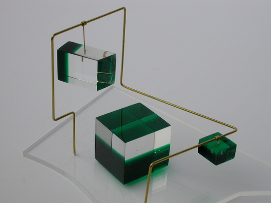
6.5.8.2 展示模型
- 定案后内部展示
- 评价呈阶段性，当对多个方案优选时，可采用料黏土、木材、石膏，及3D打印模型。
6.5.8.3 功能模型或样机
对技术性能测试分析，及时修正设计。
6.5.9 设计评价中的一些问题
6.5.9.1 评价程序确定
- 确定问题：分析评价问题，认清性质，明确评价要求及所要实现基本问题。
- 理清目标：针对评价对象，选择体现其特点、品质等因素作为评价目标，建立评价系统，把问题归类。
- 选定方法：选定方法实际评价，得到定性或定量结果，再综合处理，得到评价结论。
6.5.9.2 评价方法选择
- 依据各种评价方法特点
- 依据评价问题性质和特点(明确评价目的和要求)
6.5.9.3 评价特点考量
评价由浅入深，由表及里，由粗到精，评价过程呈发展、完善趋势。
6.5.9.3.1 方案构思阶段
信息量不足，因而评价时应注意以下特点:
- 评价项目包含技术、经济和安全可靠。从定性方面考虑成本。评价目标8~15个为宜。
- 不要确定加权系数，而把评价目标重要性取得大致接近。可将不太重要参量先放一边，集中精力考虑重要项目。
- 可选五分制等较粗标准，以适应阶段信息不足特点。
6.5.9.3.2 结构设计阶段
同一原理方案可用不同结构实现，对多个结构方案评价时，因为较原理方案具体，评价更为细化。
- 技术性能和经济性能分开评价，用技术-经济评价法细化分析。
- 几次方案评价，形成粗结构后评价一次，结构细化后再评比一次。信息量不同，评价目标也有区别。
- 因材料、零件形状和尺寸及加工方法都基本确定，此时评价较精确。
- 因在总体设计阶段中还要考虑其它因素，除明显有重大缺陷而又无法改进方案或总体价值太差方案外，一般不轻易剔除设计方案。
6.5.9.3.3 总体设计阶段
设计方案总评价
- 方案评价目标数目增加许多，评价要求更高。
- 这一阶段信息量较充分，可细化评价。
6.5.9.4 评价结果（数据）处理
对评价数据适当处理，方便评定最佳方案，作出决策。
- 数学分析处理方法(总分计分法)
- 视觉化处理方法(曲线化/图形化)
- 曲线化处理：建立坐标系，把评分结果转化为坐标点，确定与评价结果相对应曲线，以方便评价决策。
- 图形化处理：各坐标轴代表一个评价目标，坐标上点表示某方案在该评价目标分值。
6.5.10 各国(地区)优良设计评选
评价标准以独创、新颖、优良造型及安全性为主，环境、服务、维修也受重视。
- 德国Red Dot红点设计奖
- 德国iF设计奖
- 美国IDEA奖
- 日本G-Mark设计奖
- 韩国GD奖
- 中国台湾精品奖
- 中国创新设计红星奖
6.5.10.1 德国Red Dot红点设计奖
始于1955年，由产品设计奖、传播设计奖及设计概念奖三大奖组成。
- 评审类别：公共空间、栖所、移动运输类、能源、环保、浴室、家用电器、室内用具、照明、家具类、生产力、工作场所、保护、乐龄、生命科学、互动与沟通、娱乐、时尚、教育、康乐。

6.5.10.1.1 红点奖评审标准
- 革新度：概念是否属于创新?或属于现存产品新的更让人期待的延伸补充?
- 美观性：概念外形是否悦目?
- 实现可能：现代科技是否允许概念实现? 如不行，未来1~3年是否可能实现?
- 功能和用途：概念是否符合操作、使用、安全及维护要求?是否满足一种需求或功能?
- 生产效率/成本：概念是否能以合理成本生产出来?
- 人体工学和与人之间的互动：概念是否适用于终端使用者人体构造及精神条件?
- 情感：概念能否提供感官品质、情感依托或其它有趣用法?
6.5.10.2 德国iF设计奖
始于1954年，每年定期举办。
- 奖项包括：产品设计奖、传达设计奖、中国设计奖、包装奖、材料奖、概念奖。
6.5.10.2.1 产品设计奖
交通设计、休闲/生活方式、音频/和视频、电信、计算机、办公/商务、照明、家具/家用纺织品、厨房/家居、浴室/健身、建筑、公共设计/室内设计、医药/保健、工业/手工业、特殊车辆/农业技术、高级研究(概念车)。
- 评选标准：设计质量、制作工艺、材料选择、创新度、环境相容性、功能性、人机工程学、使用可视性、安全性、品牌价值/品牌塑造、通用设计。
6.5.10.2.2 传达设计奖
数位媒体、产品界面、印刷媒体、包装、企业架构、跨媒体、难以成真佳作。评选标准如下
- 数位媒体和产品界面: 用户针对性/内容、使用性 (人性化、导航、功能)、外观与感觉(美感、屏幕设计、动画)、独特性(创意度、原创性、创新性)。
- 印刷媒体和包装: 用户针对性/内容、设计品质/创意度、材料选择/工艺、经济性、用户合适性。
- 企业架构: 任务与目标陈述、建筑与设计品质、工艺和细节专注、材料选择与应用、空间概念与氛围、功能与运用弹性、企业设计、环境协调性。
- 跨媒体: 包含数位媒体和印刷媒体评选标准、强调不同媒体成功结合。
- 难以成真佳作: 提交专案只要难以成真佳作即可。
6.5.10.2.3 中国设计大奖
通信与娱乐、计算机、办公与商务、体闲与生活方式、建筑、家务与家具、工业、照明、医疗、纺织与时装、交通运输、包装设计、公共设计、室内设计、平面/企业设计。
- 评选标准：设计质量、创作工艺、材料选用、创新程度、环保型、功能性、人体工学、操作可视性、安全性、品牌价值/品牌营销、通用设计。
6.5.10.2.4 包装奖
售货包装、展览与运输包装、包装图样、包装材料、包装机械与设备 (评审着重于人体工学、安全与设计质量) 、包装设计与功能性、跨类别、包装概念。
- 评选标准：设计质量、工艺、材料选择、创新性、环保性、功能性、人体工学、操作方式可视化、安全性、品牌价值/品牌塑造、象征性与独立性、生产与物流方面、通用设计。
6.5.10.3 美国IDEA奖
始于1980年，Industrial Design Excellence Awards(最佳工业设计奖)
- IDEA除评选工业产品，还关注包装、软件、展示设计、概念设计等。
- 评判标准：设计创新性、对用户价值、否符合生态学原理，生产环保性、适当美观性和视觉吸引力。
2007年起，International Design Excellence Awards (国际最佳设计奖)
- 向品牌塑造、服务、可持续性及医药 (甚至飞行员和乘客舒适性和安全性) 等不断扩展。
- 竞赛种类多元：从居家办公用品到医疗器械
- 评选标准：市场价值与人性化，严格审查产品否有有效设计和能否带给人类便利性。此外，特别考虑产品否能对弱势者带来尊严和方便。
6.5.10.4 日本G-Mark设计奖
始于1957年，每年根据设计品质、理念和创新程度，颁发给被认为提升消费者生活质量和标准的产品。
6.5.10.4.1 评审项目(2008)
- 身体、生活领域，包括眼镜、服装、鞋帽、箱包、饰品、乐器、体育用品、老年人用品、家用电器、装饰用品、住宅等;
- 工业领域，包括生产物流设备、办公设备、店铺用设备、信息管理、商业设施、生活设施等;
- 移动、网络领域，包括各种交通工具、个人用电子设备、家庭用电子设备、工业用信息设备、企业广告、传媒、数字产品等;
- 试验性高端设计活动，包括在设计中引入高新技术，体现生态环保理念、综合性设计管理等。
6.5.10.4.2 评选指标和标准
除创新、外观造型、安全性，还十分强调产品设计对人们生活品质改善。
- 高度协调性 (Well-balanced)
- 高度品质肯定 (High-qualiftied)
- 高度实用性 (Great-usability)
- 评选标准：美观、安全、原创、吸引力、考虑到消费者想法与需求、符合使用环境、定价与价值相符、有很好功能与效能表现、对使用者友善。
6.5.10.5 韩国GD奖
始于1985年，韩国优良设计奖 (Good Design Products Selection)
- 授予那些在国内或国外上市，整体设计优良，在造型、功能和兖争力等方面都十分突出产品。
- 通过给优秀工业设计授奖，促进设计发展，鼓励创造和创新，为工业设计发展做出贡献。
- GD 奖评选范围：除电子产品、通信和器材、家电、家具、医疗器械等各种消费品 ，还包括环境设计、形象设计等领域。
- GD 奖从设计角度出发，综合考察产品功能、稳定性和质量等要素，评选出优秀产品，并授予质量保证书GD标志。
- 获得这一标志意味着获得市场认可和信赖，产品附加价值随之提高。

6.5.10.6 中国台湾精品奖
Taiwan Excellence Awards，该奖项以参选产品范围广泛和评选严格而出名。
- 参选产品类别：消费性电子及电器产品、电脑硬件及周边设备、网络通信产品等十几种产品。
- 评选标准：研发、设计、品质和行销，更看重产品面、行销面和创新价值表现。
6.5.10.7 中国创新设计红星奖
始于2006年。评审标准如下:
- 创新性：突出科技与艺术结合，有效使用新技术、新材料、新工艺，创新点突出; 设计概念独特新颖，提供新问题解决方案，引领未来产品发展趋势。
- 实用性：功能结构合理，以人为本，考虑人机工程关系，安全耐用。
- 经济性：适合市场需求，具备较高性价比，能够提高企业经济效益，提升产品品牌价值
- 环保性：绿色，节能，环保，有可回收性。
- 工艺性：工艺与材料使用合理，适合批量生产制造。
- 美观性：外观造型设计适度，风格特色突出，色彩设计协调。
6.6 设计与生产
6.6.1 设计产品化
将功能原理方案具体化为零部件及产品合理结构过程。
- 相对方案设计阶段创新要求，本阶段更多反映设计规律合理化要求。
- 确定各零件形态、结构并符合加工工艺性要求，
- 确定构成产品系统元件(或组件) 数目及相互配置关系。
6.6.2 生产计划
企业为达到经营目的建立一套有组织的策划，以推动生产活动。
- 在生产前，企业先考虑市场、资金来源、生产资料等因素，
- 并据此将所要生产产品种类、品质、生产方式、生产场所、生产进程等做一经济合理预定计划。
6.6.2.1 生产计划包括范围
6.6.2.1.1 产品设计
根据企业目标所要求产品形式或市场调查产品构想设计。
- 在不影响产品品质情况下，产品可重新设计，简化生产程序，尽可能降低制造成本。
6.6.2.1.2 制造方式安排
由原料到制成成品，经过完整制造过程设计。
6.6.2.1.3 制造日程安排
把制造过程时间进度安排好，保证在期限内把产品制造出来。
- 生产管制对生产过程严格控制，在预定期限内以最低成本，制造出合乎品质要求、保证数量的产品。
- 生产管制内容：工作指派和工作检查监督。生产计划完整性、合理性越强，生产管制越容易。
6.6.2.2 产品设计对商品化中生产计划问题影响
使产品设计有利于降低生产制造成本和周期，有利于生产计划和管理。
6.6.2.2.1 设计品质
经营者决定产品特性，设计师以此设计开发符合特性的产品。
- 产品品质政策或目标一旦确定后就成为技术要求而交付设计者执行。
6.6.2.2.2 材料选择
选择材料3因素: 产品所应具备功能、材料成本和材料加工处理成本。
- 在材料选择时，要以不损害设计构思为原则，在生产计划上，主要考虑材料成本或加工处理成本。
- 例: 冰箱中制冰盒，可用塑料或铝材来制造。如选用塑料，则材料价格便宜，但模具成本较高; 如选用铝材，模具成本较低，但材料及加工成本则较高。
- 因此，选用材料时，如大批量生产则应选塑料，若产量不大，则应选用铝材。
- 又如塑料制品，可用PS、PP亦可用FRP制造。若用PS或PP，则须使用注射成型钢模，若用FRP，则只需采用很便易木模即可。
- 在材料成本上，FRP略高，但木模人工成本却贵得多，且其外观也不好。
- 因此，材料选择往往要依生产批量大小而定。
- 此外，材料价格并非一成不变，材料行情也是设计选材应考虑因素之一。
6.6.2.2.3 设计标准化
能降低成本，提高互换性，便于制造，生产管理及维修也方便。
6.6.2.2.4 产品可靠性
- 设计尽量简化: 组件越多，可靠性越低。
- 使用足够备用零部件，以形成并联系统，一般较为保险。
- 采用元余性设计: 一般可采用超过实际需安全系数来增加可靠性。
- 方便维护设计: 设计产品时应考虑维护方便和有效性，也间接使产品可靠性提高。
6.6.2.2.5 模块化设计
- 就生产者而言，产品种类越少，数量越多，则生产成本则越低，利润就越高。
- 但用户要求产品丰富多样。
- 为解决这一矛盾，模块化设计观念 (积木式或组合式)。
6.6.2.2.6 制造流程
产品设计后期，应对生产方式、方法和程序有周详考虑。计划生产方法及程序方法包括两方面。
- 产品分析: 了解产品结构及零部件间装配关系。
- 确定合理装配关系: 利用剔除、结合、交换、简化等方法，完善零部件设计和装配关系。最后依装配关系确定生产方法和流程。
6.6.3 生产转化
根据已定方案工艺设计和原型制作，寻求合适制造、组装和表面处理方法，明确需变更部分。
6.6.3.1 可靠性设计
系统、产品或元部件在规定条件和时间内完成规定功能，是衡量系统或产品质量主要因素。
- 系统可靠性随时间延长而逐渐降低。
- 不同使用条件、环境条件和操作技术等条件下同一系统或产品可靠性不一样。
- "规定功能"用系统各性能指标来描述。丧失规定功能状态称为故障或失效"。
- 能力即可靠性指标，如可靠度、失效率和平均寿命等。
6.6.3.1.1 影响系统可靠性因素
- 系统所能完成功能容量与精度(主要功能参数变动范围): 功能增加，使系统复杂化，导致可靠性下降; 功能参数精度要求得高，也将减低系统可靠性。
- 系统工作要求寿命及外界干扰: 可靠性意味着在全部外界条件变化与干扰下正常工作，完成系统功能。
- 组成系统结构与元件质量: 系统由分系统、子系统和元件组成，其可靠性及相互构造关系将影响系统可靠性。要保证一定可靠性需在重量、成本、功率、备份等方面付出代价。
6.6.3.1.2 提高可靠性途径
主要有三个方面，即设计、生产加工和管用养修。从设计方面看:
- a 人机系统综合考虑: 设计时考虑人机特性，搞好功能分配，同时要考虑轻便、灵活、舒适宜人、不易失误等，且还要考虑环境因素。
- b 简单性与冗余性辩证分析: 一般说，越简单越可靠，但也不尽然，过于简单反而不可靠，如省略联动、互锁、保险、限位等机构系统就不安全。越复杂当然不越可靠，只要有必要宛余性即可，片面追求复杂新颖以示高级水平不可取。
- c 原材料与零部件有机选配: 原材料与零部件也并非一定越高级越好，主要取决于部位重要性与特性，含油轴承在高速轻便旋转运动中可靠度要比滚针轴承高。
- 也不一定寿命越长越好，如果一项产品更新周期为五年，则所有零部件、原材料寿命就不应超过这个寿命太多，否则产品已报废许多零部件却完好，造成资源浪费。
- 可靠性设计全部工作包括硬件与软件，包括从设计制造到使用维修，还包括价值工程核算等，不能单纯追求可靠性。
6.6.3.1.3 可靠性设计步骤
- 明确可靠性要求主要指标
- 可靠性预测
- 可靠度分配
- 制定设计书
- 全系统可靠性级别与要求;
- 系统工作环境条件;
- 运输、包装、库存等方面情况;
- 易操作性、易维修性、安全性要求;
- 高可靠性零件明细及其试验要求;
- 薄弱环节核算;
- 制造与装配要求;
- 管理、使用、保养、修理要求。
- 以往经验及故障数据;
- 今后发展与评估意图;
- 预测值与期望值接近可能性;
- 获得高可靠性方法;
- 薄弱环节消除及新生薄弱环节;
- 提高可靠性裕度与协调各种参数;
- 故障率预测 ;
- 对维修性与备件预测。
- 整系统与分系统可靠性关系;
- 分系统对总系统可靠性贡献度;
- 分系统动作时间表与负载谱;
- 满足可靠度费用;
- 可靠性分配到重要零件与组件上 ;
- 修正误动作方案;
- 保证可靠性试验。
- 设计方案综合权衡因素;
- 设计方法自身可靠性;
- 试验方案与计划;
- 选择设计方案;
- 提出保证可靠性设计书 (包括系统可靠性设计与重要零件可靠性设计等)。
6.6.3.2 工程设计
6.6.3.2.1 材料与加工工艺
- 材料实现产品功能物质基础
- 材料影响形态和肌理
- 塑料亚光喷漆：柔和、稳重
- 拉丝金属：现代感和科技感
6.6.3.2.2 装配设计
- 功能合并减少零件数目
- 将多个相关功能零件模块化成为一个装配件
- 用不同颜色区分外观相似零件
- 避免密闭空间装配
- 新零件装配设计应自上而下（先总体装配关系，再具体零件）
6.6.3.3 结构设计
结构紧凑、外形美观、安全耐用、易制造
6.6.3.3.1 模块化设计
对一定范围内不同功能或相同功能不同性能、不同规格产品功能分析，划分并设计出一系列功能模块，通过模块选择和组合构成不同产品
不必全新设计，通过不同模块不同组合开发新产品
- 减少专用件数量
- 降低生产成本
6.6.3.3.2 标准化设计
- 零部件结构使用标准规范
- 结构尺寸使用标准模数或系列数值
- 降低设计与制造成本
- 提高效率和效益
6.6.3.3.3 可拆卸设计
目的：针对回收利用和产品维修来减少资源浪费及废旧产品对环境污染
- 可拆卸程度：废旧零部件易回收并分类处理，及避免拆卸损伤
- 拆卸效率：拆卸过程简单、快捷、省时、省力
- 环保：减少有害有毒材料使用
- 经济：以最低拆卸成本获得最大经济收益
6.6.3.4 模型制作
6.6.3.4.1 目的与应用
- 利用工作模型和生产模型对产品模拟验证，明确把握构造和功能上问题
- 检验设计方案合理性，修改完善方案，为制作产品样机和投入试生产提供依据
- 外部形态与内部结构相适应，测试强度、刚度、抗疲劳度、寿命、振动和噪声等
6.6.3.4.2 制作工艺
- 金属成型：锻造、压力加工、切削、冲压；使毛坯趋于成品：精密铸造、精密锻造、冲压、挤压、鐓锻、压制成形和粉末冶金
- 塑料成型：注塑成型、挤出成型、压制成型、浇注、中空吹塑
- 表面热处理：真空技术、离子氮化、镀渗工艺
- 难加工材料或复杂形面处理：电火花、电解、激光、电子束、超声加工
- 3D打印技术
- 用木材、金属或树脂制作阳模（凸模），再用硅质翻制阴模（凹模）
- 在真空状态下树脂流入硅模，脱泡制成模型
- 此类模型生产转化时验收模型，用于结构检证，如校验复杂曲面和复杂形状
- 外观复杂产品，有时要分解成若个部件分别模具设计
- 车身曲面多，须做原大模型，利于造型研究、生产技术检验和制图检查
- 从模型上读取数据，用于CAD设计或钢板压铸模具加工
- 将实物模型制作与产品结构设计一起使最终方案更具可行性
6.6.3.5 施工设计
- 零件工作图、部件装配图、生产图纸
- 设计说明书、工艺文件、使用说明书
- 市场开发设计
6.6.3.6 生产规模
- 大批量生产：注塑成型或铸模成型制造工艺适合忠实再现构成微妙曲线、有柔和感设计形象。模貝费用昂贵，但能从量产中得到回报。
- 小批量生产：采用真空成型、钣金、精密铸造等工艺。
6.6.3.7 生产技术
- CAD/CAM普及使生产时间和成本大幅降低
- 柔性生产使多品种、小批量生产方式成为现实
6.6.3.7.1 技术应用
- 结构机械部分
- 产品形象、使用方便、操作界面：成形技术和面处理技术产品质感表现关键
- 气压成型、真空成型和金属压铸成型等已达到低成本、高精度，即使与用钢模量产化注塑成型和压铸成型工艺相比也不逊色。
6.6.3.7.2 气压成型技术
有效外观成型技术
铁、铝、塑料、橡胶等
- 铁通过钣金工艺铸型
- 铝通过铸铝成型
- 塑料通过注塑、真空及气压成型
- 对电磁波有屏蔽作用。
- 刚性好。
- 尺寸精度高。
- 阻燃
生产资料类产品 (医疗产品、理化学产品、工程产品等)，一般小批量订货生产，钣金、铸造、焊接加工方法居多，而导入大规模生产设备成型及冲压加工方法有困难，存在成本问题。气压成型和真空成型可解决此问题。
- 对改良塑料加工性能与注塑成型己无差别，并可用于金属板材，通过加热加压方法成型（金属气压成型）。
- 气压成型能与注塑成型一样自由表现曲面特征线及加强筋，包括球面成型。
- 在成本方面也只有压铸成型和注塑成型1/3~1/10。
- 在原成本上因钢模使用较钣金为高，但运作成本较低。一般在500一1000产量产品采用该工艺较为合适。
6.7 设计与营销
6.7.1 设计商品化
商品化是将营销策略用于市场活动中。
- 企业存在与发展关键:不断开发设计新产品及改良老产品
- 从技术、经济、审美等各方面提升产品市场竞争力。
- 用价值工程方法降低成本、提高性能;
- 用造型设计方法对产品形态、色彩、风格式样等加以研究，在保证功能、便于加工前提下，充分创造美观、新蜂、有亲和力造型形象。
- 在设计评价基础上，商品化作业研究
- 产品名称、标志、识别系统及促销环节
- 产品样本和展示
6.7.1.1 商品与产品
6.7.1.1.1 产品类别
- 实体: 产品提供给消费者效用和利益。
- 形式: 产品质量、品和种、花色、款式、规格、商标、包装等。
- 延伸: 产品附加部分，如维修、咨询服务 、分期付款、交货安排等。
6.7.1.1.2 竞争关键不是能生产什么，而是产品所供价值
- 如包装、服务、广告、咨询、购买、及时交货和人们以价值来衡量的一切东西 (美国市场学家利维特)。
- 企业能提供什么样产品和服务去满足广大消费者
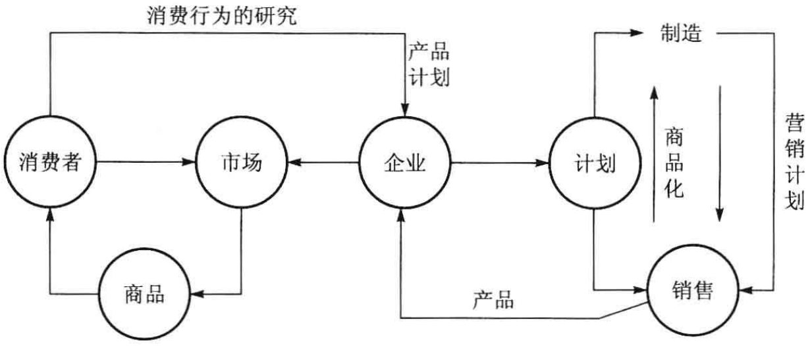
6.7.1.2 商品化决策过程
- 产品构思 (概念)。
- 筛选、评价。
- 产品观念形成与经济分析。
- 产品开发 (造型设计、工程设计、包装设计等)。
- 市场开发 (销售渠道、销售促进等)。
- 商品销售，实现商品化。
6.7.1.3 创新过程中出问题的原因
- 企业技术欠缺
- 或要花费很大成本才能开发出来，财力不足;
- 或预测不准，过高估计市场需求。
6.7.1.4 实现商品化要求
- 须将产品特性与包装确定下来，即确定产品观念与包装观念;
- 对新设备投资，以便大量生产准备工作;
- 须与销售人员正式磋商，以创造执行此方案所需技术与热诚;
- 须与销售部门联系，以便计划一系列广告促销方案。
6.7.1.5 新产品开发影响因素
以公司内部环境衍生生产管理要素和从外在环境衍生市场要素为主构成产品商品化影响因素空间。
- 企业内部: 财务状况和生产制造能力
- 企业外部: 是否开发产品，销售潜力。
6.7.1.5.1 因素关联
- 开发－制造：技术研究
- 开发－财务：投资效益分析;
- 制造－销售：广告、促销，
- 财务－销售：销售利润率。
6.7.1.5.2 销售商品化设计观念范围
- 行销策略：以市场要素为轴，连接设计开发、销售与财务3个基点构成三角形空间。
- 设计策略：由设计开发、制造与销售3个基点所确定空间，商品化另一个层面。
- 生产策略：以生产管理因素为轴，连接制造、设计开发与财务3个基点。
- 销售策略：在生产管理要素另一侧，连接制造、销售与财务所构成三角形空间。
6.7.1.6 服务业帮助快速实现产品商品化
- 产品测试评价服务：配置大量现代知识测试要素和可靠保障
- 知识产权运作服务：为产品商品化实现新进性和有效性提供法律支持和保护
- 市场需求信息服务：为企业时刻关注消费需求，获取第一手市场信息资料，使企业持续开发市场所需新产品，建立先发优势
6.7.1.7 产品"软"价值
同样功能、同样制造成本产品因服务和企业文化差异可能使售价相差几倍。
- 材料成本、人工费用、设备折旧和运输费用等"硬"价值
- 技术新颖性、实用性、优良设计、售后服务及产品文化等"软"价值
6.7.2 营销基本概念
以销定产(1950s)代替以产定销，特点如下
- 不以生产或产品为中心，而以用户或顾客需为中心。销售指导设计和生产。
- 不以推销为主要手段，而采用综合营销。
- 最终目标：盈利，但着眼于满足用户需，非单纯增加销售量。只有符合需才能稳固增加销量。
6.7.2.1 营销观念对设计的作用
营销观念符合设计根本宗旨，即为人服务，提高生活质量。
- 营销观念有助于克服闭门造车，注重市场调查和预测，消费心理研究。
6.7.2.2 影响销售的因素
- 企业不可控：经济环境、人口、政治法律、技术、竞争机制，及社会文化。这类因素决定市场需性质和容量。
- 企业可控(4P营销因素)：产品(Product)、价格(Price)、销售渠道(Place)和促销(Promotion)
- 营销因素如何作出选择，要以企业不能控制环境条件为依据，才能实现预期目标。
6.7.2.3 营销计划与设计配合
- 因人、因地制宜，即充分考虑市场与社会文化环境关系;
- 有利于标准化商品在各地区销售，并有利于产品开发可行性发挥。
- 一个消费市场可依地理、人口、心理及购买者行为划分
- 针对不同市场，采取不同策略，策略选择依据企业资源、产品特点、产品在生命周期中位置、竞争形势等。
6.7.2.4 营销策略(对应营销因素4P)
产品策略、价格策略、销售渠道策略和销售促进策略。
6.7.3 产品策略
提供什么样产品去满足市场需求(整体产品概念)
- 实质产品指向购买者提供基本效用或利益(产品核心)
- 形式产品指实质产品借以实现形式，如质量水平、特色、式样、造型、商标及包装等。
- 延伸产品指用户获得形式产品时所能得到全部利益，即随同形式产品而提供附带服务。
6.7.3.1 产品生命周期营销策略
产品生命周期指产品从进入市场开始，直到被市场淘汰为止所经历全部时间，
- 产品生命周期4个阶段分为导入期、成长期、成熟期和衰退期(图 5-13)，
- 针对产品生命周期不同阶段，其营销策略不同，所作设计工作也不同。
6.7.3.1.1 导入期
以最短时间进入市场和占领市场。运用四个营销因素，即产品、价格、销售促进和销售渠道，适当组合。
- 产品和价格因素都与设计密切相关，
- 大量广告策划和设计，以建立和提高产品知名度。
- 高价格、低促销、广宣传
6.7.3.1.2 成长期
成长期销售额和利润迅速增长，尽可能延长产品成长期，保持旺销活力。
- 提高产品质量，改进功能，增加品种，改进款式、包装以适应市场需。力争进入新细分市场。
- 增加和开辟新销售渠道。
- 广告宣传目标转为: 说服销售者接受和购买该产品。
- 择机降低价格以提高竞争力，并吸引新购买者。
- 从成长期开始，不仅关注产品质量，更关注产品色彩、形态、包装、广告等。
- 提高产品质量和性能
- 开拓新市场，开发新功能
- 树立产品形象
- 增强销售渠道
- 选择适当降价时机(节假日)以吸引消费者，提高竞争力
6.7.3.1.3 成熟期
成熟期销量已达最高点，尽量延长产品生命周期。采用市场改进、产品改进和营销组合改进等策略。
- 产品改良：改良性能、品质和款式以保持老用户，吸引新顾客
- 市场再开发：寻求新细分市场(从城市到农村)
- 营销策略重组：价格、分销、促销(有奖销售)
发展产品新用途和开辟新市场，寻求新顾客。
对产品做某种改进，或为现有使用者开辟新用途，以期使销售量回升。
- 质量改良: 指提高产品质量，增加使用效果;
- 功能改良: 指提高产品实用性、安全性或使用、操作人简便而做出改进;
- 形态改良: 指产品外形改进。
降价、增加广告、改善销售渠道及提供更完善售后服务等。为继续吸引消费者购买，成熟期设计工作
- 设计内容增多一一质量、功能、材质和形态改良
- 着手新产品开发
6.7.3.1.4 衰退期
衰退期不能为企业带来利润
- 立刻放弃策略。已设计好代替性新产品。
- 逐步放弃策略。为减少损失，逐步减产，有序地转移有限资金; 设计替代产品逐步扩大生产。
- 自然淘汰策略。完善设计，将其继续留在市场, 直到完全衰竭或新生, 企业须有很好竞争力，同时也面临较大风险。
- 减少产量或停止生产
- 转向新产品开发与推广
6.7.3.2 产品组合策略
- 产品均有生命周期，为保证稳定盈利，需同时经营生产多种产品(产品组合)。
- 如美国光学公司生产产品超过3万种，美国通用电气公司产品项目达25万种。
- 产品组合策略: 企业据市场需求、自身能力和特长、竞争形势等，对产品项目结构作出决策。
6.7.3.2.1 产品组合策略类型
- 全面型: 向任何用户提供任何所需产品 (如各种服装) 。
- 市场专业型: 即向某类用户提供需各种产品 (如妇女服装)。
- 产品专业型: 即专注于某一类产品生产，将其推销给各类用户 (如女西装)。
- 有限产品专业型: 即集中生产单一或有限产品，以求在某个特定细分市场上提高占有率 (如老年服装)。
- 特殊产品专业型: 企业根据自己特长，生产某些有优越销路特殊产品项目 (开拓市场有限，但竞争威胁小)。
6.7.3.2.2 动态过程使产品组合总处于最佳状态
- 因市场需求和竞争形势变化，部分产品获较快成长，部分产品继续取得较高利润，部分产品趋于衰落。
- 应经常分析产品组合中各项目销售成长率、利润率和市场占有率，判断各项目潜力和趋势，适时开发新产品，停止淘汰(衰退)产品生产。
- 使产品适时投入或退出市场，使企业不断获取较大利润。
6.7.3.2.3 分析产品组合否最佳
- 可用三维坐标方法，如图 5-14 所示。
- 分析各产品项目所处坐标，就能直观地解产品组合状态，采取相应措施，使产品组合处于最佳状态 (即多数产品项目处于图中1区)。
- 另外，只有在解产品组合中各产品利润率、销售增长率和市场占有率以后，弄清各产品在生命周期中所处位置，才有利于确定新产品开发目标、时机等问题。
6.7.3.2.4 研究新老产品关系问题，针对不同情况，采取不同策略
- 既不能延误产品开发时机而使企业在市场竞争中失利，
- 也不能因不恰当产品开发和商品化而破坏企业产品合理组合结构。
- 例: 即将淘汰老产品曾获过普遍喜爱、信任，则新产品在造型风格上延续老产品成功之处。
- 反之，则可考虑在造型风格等方面加以大幅度改变，以克服老产品不良影响。
- 对企业产品组合，在造型、功能、规格等方面加以适当分组，注意产品统一形象问题，使产品组合有系列性或家族感。
6.7.3.3 商标(品牌)策略
6.7.3.3.1 商标归属及使用
采用商标对大部分产品起积极作用，但因商标涉及费用及企业形象等因素，有些情况下就不必采用商标。例: 临时性或一次性商品，试销产品等 (只标明厂名，以示对产品负责)。
制造商对市场不熟悉，或在市场上本企业商标不及销售者时，可采用销售者商标。
- 节省商标设计及管理等费用;
- 有利于解除用户对新产品不信任感，并能提高企业声誉。
- 该商标已在市场上赢得信誉;
- 采用统一商标的各种产品有相同质量水平(如质量水平不同，统一商标会损害有较高质量水平产品信誉)。
- 对企业各项产品分别采用不同商标;
- 对企业各类产品分别采用不同商标。
- 企业产品类型较多，企业生产条件、技术专长在各产品生产线上有较大差别。
如企业拥有多条产品线或有多种类型产品。
- 例:美国通用汽车公司生产多种类型汽车，所有产品都采用GM组成总商标，
- 而对各类产品分别使用卡迪拉克、别克、奥效莫比、庞蒂克和雪佛兰等不同商标，
- 每个个别商标表示一种具体特点产品，如雪佛兰表示普及型，卡迪拉克表示豪华型。
6.7.3.3.2 品牌策略
一种名称、术语、标记、符号或图案及其组合
- 用以识别企业提供给某群(个)消费者产品或服务，并与竞争对手产品或服务区别。
- 品牌不等同于商标 (商标经注册登记，受法律保护和认可)
- 通过商标注册，企业产品可受到法律保护;
- 强有力品牌不仅有助于建立企业形象，且有利于企业管理、生产和销售等一系列活动;
- 品牌化有助于吸引忠实和潜在消费者，而品牌忠诚不仅使销售者在竞争中得到保护，且有助于品牌延伸策略实施和销售者市场细分。
在同样品牌名称下面，在相同产品种类中引进增加产品项目内容，如增加新口味，增加新成分，改变产品形式、颜色和包装规格等。
产品线扩展市场存活率明显高于新品牌成活率。
若原有品牌过于强大，则产品线延伸后产品就很难在消费者心中定位。
利用现有品牌来推出其它产品类别中新产品。
- 借助原有品牌声望，不仅有利于推出新产品，使其易迅速得到消费者认同，
- 在原有品牌盛名下，每种新产品几乎都会被认为高质量。
- 如索尼公司把其品牌用于大多数电子类产品中,使消费者对这些产品能快速认同。
- 若新产品不被消费者接受，可能就会损坏消费者对该品牌下其它产品信任度，甚至损坏品牌形象。
- 品牌延伸滥用，会破坏品牌在消费者心中特别定位，使其不再将品牌名与其名下产品联系起来，造成品牌稀释。
- 例: 1982年，高档派克笔因去争夺低档笔市场，不仅受挫且使其高档笔市场被冲击。
在相同产品类别中引进其它品牌。
- 凸显产品不同个性，满足不同层次消费需求。
- 例: Swatch手表旗下品牌性格迥异(欧米茄、雷达、浪琴 、斯沃琪、天梭)，消费者易根据自己身份、职业、收入、社会地位等作出购买选择。
- Swatch公司在保持品牌个性宗旨下，拟再收购或开发一些品牌，填补现有品牌设计和造型空白，以满足更多消费需求。
- 引入多品牌战略可能会导致公司将资源分配给过多品牌，而不为获取高额利润少数品牌服务;
- 也可能会造成每种品牌只占有很少市场份额，使企业几乎没有利润。
- 两个或更多品牌在一个或一类产品上联合起来，体现相互合作，品牌相互扩张。
- 例: 一汽大众、上海通用、松下一小天鹅。
- 合作双方互相利用对方品牌优势，提高自己品牌知名度，可增强产品竞争力，扩大销量额，
- 同时节约各自产品进入市场时间和费用。
- 在长期使用中，双方公司可能受益不均，甚至产生危及一方利益现象。
- 两家合作公司品牌知名度不同，信誉有高有低，高信誉度品牌形象有可能在合作中受损降低。
- 当企业推出新产品时，发现现有品牌对新产品并不合适时，就需采用新品牌名称。
- 例: 原来生产保健品养生堂开发饮用水时，使用更好品牌名称农夫山泉。
建立一个新品牌不仅成本较其它品牌策略高，也存在失败风险。
- 1956 品牌化系统设计
- 第二次世界大战后,批量生产逐渐集中于大公司。
- 产品种类很少,一定范围产品变得越来越相似,企业产品与竞争对手产品差别不大。
- 这时企业整体形象,而不单个产品形象变得更加重要。不少公司建立自己识别体系。
- 国际商业机器公司(IBM)在1956年任命设计师诺伊斯为设计部主任,
- 他对IBM公司设计全面改造和统一管理。
- 诺伊斯对公司产品外形标准化和系统化。
6.7.3.4 包装策略
- 类似包装策略: 企业所生产各种不同产品，在包装上采用相同图案色彩或其它形式特征，使用户极易发现同一家企业产品。
- 一同包装策略: 把使用时互相关联多种产品纳入一个包装容器中，同时出售。如工具等，既便于使用又扩大销路。
- 再使用包装策略: 原包装商品容器使用后还可作其它用途。物尽其用，引起顾客购买兴趣，同时包装器具持续发挥广告作用。
- 改变包装策略: 当产品在同类商品中质量相似而销路逊色时，应改进包装设计。当一种包装沿用已久，跟不上时代审美要求时，也应推陈出新。
- 附赠品包装策略: 一种促销手段。
6.7.3.5 销售服务策略
对销售服务策略，主要包括服务项目、服务水平、服务形式等。
6.7.4 价格策略
价格影响产品销路，影响企业收入和利润。定价策略有三类:
- a 以成本为中心定价策略;
- b 以需求为中心定价策略;
- c 以竞争为中心定价策略。
- 功能价值分析，降低产品成本，按目标价格精心设计，适当添减附加功能，使价格与价值保持适当平衡等。
6.7.5 销售渠道策略
产品一般经中间商 (代理商、批发商等) 和零售商等环节和消费者见面。
- 根据产品特点和市场情况选择中间商。
- 根据市场因素 (如市场范围大小、用户集中程度、销售批量、市场竞争等)、企业本身条件、产品特点、政策法令等情况，预估可能销售渠道，
- 然后根据这些渠道特点和要求指导产品设计。
- 对不同销售渠道、产品规格、采用标准、造型风格、人机学参数规定、包装设计等因素可能有变，应在设计中加以注意，采取对策。
- 设计本身对销售渠道选择也有影响，可利用设计疏通销售渠道。
6.7.6 销售促进策略
促销与产品形象推广：将产品信息传递给消费者，激发购买动机，扩大销售。
- 广告设计使产品设计思想及目标通过广告表达和宣传。
- 针对不同地区特殊情况与消费者嗜好、偏爱与习惯，按不同市场投入不同产品。
6.7.6.1 促销目的
通过开拓流通渠道，完成向消费者正确传达产品概念和企业理念，提升产品价值，构筑产品形象。
6.7.6.2 产品形象推广
包装样本、广告、展示会
- 在广告方面，通过优质、震撼人心画面，和差别化、个性化诉求打开市场。
- 有些产品自身就能成为很好表现媒介，如法拉利跑车。
6.7.6.3 广告诉求
- 导入期广告诉求
- 成长期广告诉求
- 成熟期广告诉求
- 衰退期广告诉求
6.7.6.3.1 导入期
- 告知产品功能
- 选择最佳利益点(符合需求和创造新需求)
6.7.6.3.2 成长期
- 品牌扩张，丰富内涵，提升品牌认知度
- 竞争企业增多，需塑造品牌形象，加入感性因素(色彩随心换)
6.7.6.3.3 成熟期
- 强化品牌形象(提示广告)和差异化(品牌个性)
- 并衍生新产品概念
6.7.6.3.4 衰退期
- 唤醒人们对品牌怀旧意识
- 并诉求给消费者带来实惠
- 同时推广新产品
6.7.7 信息反馈
产品投放市场后，收集用户反馈信息。对反馈信息分析有效改良产品及加强用户与产品间沟通。
- 建立完善反馈机制
- 制定规范产品信息反馈表
- 加强和完善售后服务
6.8 作业六
- 自拟一设计项目，完成其系统设计流程规划，包括各个阶段的内容和时间安排、各阶段之间的关系，并阐明该流程规划的特点和针对该设计项目开发的要点。
- 做成PPT，10月13日(周日)23:00前发送到anhongz@outlook.com
- 文件名: PSD6-标题-姓名
- 文件类型: 演示文稿或PDF文档
7 产品系统设计趋势
产品设计发展趋势 | 产品系统设计核心走向 | 持续推动产品系统设计
以寻求未来需求为目标，开发新产品
- 以市场调查为基础，重点放在市场预测上;
- 研究人们生活形态，倡导需求创造导向;
- 学会引导需求、创造需求，采用研究开发主动出击策略。
7.1 产品设计发展趋势
产品功能发展 / 产品使用方式发展 / 产品设计定位趋势 / 产品设计者变化
7.1.1 产品功能发展
综合化 / 信息化 / 网络化 / 智能化

7.1.1.1 综合化
- 多功能整合到同一产品
- 手机功能：电话、短信 –> 掌上电脑
7.1.1.1.1 综合化作用
- 减少生产资料消耗，降低生产成本；
- 节省运输空间和使用空间；
- 降低使用产品过程中的学习成本。
7.1.1.1.2 综合化实例
- 惠普多功能激光一体机集成打印 、复印 、扫描、收发传真等功能；
- 降低成本 、节省能源。
7.1.1.2 信息化
产品使用功能和体验功能共同构成企业品牌核心元素，推进产品发展。
- 使用功能
- 体验功能
7.1.1.2.1 使用功能
手机的电话功能
7.1.1.2.2 体验功能
产品提供某种服务以丰富、完善人的体验。
- 如，用户拨打电话时，需完成哪些操作，经过哪些步骤，通话质量如何等感受。
- 键入电话号码自动提示功能
7.1.1.3 网络化
产品功能借助网络手段实现。
- 美FZ4015电饭煲有24小时网络预约功能，上班前准备好晚饭，下班享用。
- 苹果遥控器 Apple Remote 能在房间任何角落控制音乐、照片和DVD。
- 数字电视由网络点播新闻、体育、影视、音乐等，并通过遥控器实现上网。
7.1.1.4 智能化
- 工业机器人完成过程复杂 、耗时费力标准化生产流程，解放劳动力；
- 部分研发人员和制造工人不再考虑如何制造，而考虑制造什么；
- 网络三维打印实现远程真实物品交流；
- 自动化、智能化工业生产 (工业4.0、工业2015)。
7.1.2 产品使用方式发展
体验设计以顾客感性需求为设计目标，通过生动有趣产品，营造完善使用感受。
- 声音和光线强弱实现对灯控制；
- 使用手势及身体姿势控制和操作产品，Xbox Kinect体感游戏；
- Google眼镜捕捉视线移动和语音输入控制，眨眼拍照，查询天气路况等；
- 嗅觉电视让气味飘向屏幕特定位置，如炸鸡出现在屏幕左上角，那里就有炸鸡气味。
7.1.3 产品设计定位趋势
- 功能差异化：对产品功能、效果、性能等多样化和特定需求；
- 造型个性化：对产品形态、颜色等的个性化需求。
7.1.3.1 产品差异化和个性化
- 功能创新
- 性能改善
- 量身定做
7.1.3.1.1 功能创新
- 功能创新获得竞争差异化优势。
- Eliminate, Combine, Separate, Copy, Segment, Vary, Maximize, Invert, Adapt, Magnify, Import

7.1.3.1.2 性能改善
因地制宜产品差异化设计
- 夏天部分地区中午气温超50度，需快速制冷；停电及电压不稳，需低电压启动；
- 冬天北方地区最低温度降到0度，海尔空调推出制热产品方案。
7.1.3.1.3 量身定做
- 海尔静音洗衣机避免夜间洗衣噪音大 (日本木结构住宅, 主妇习惯晚上清洗衣物)；
- 海尔快捷高效洗净 Smart 系列洗衣机，受到新生活群体青睐。
7.1.3.2 市场差异化和个性化
个性化市场策略和设计手段，细分市场，拓展产品设计空间，获得更大市场份额。
7.1.4 产品设计者变化
设计走向普通大众
- 人们知识结构、动手能力和思考能力提高，为参与到设计中提供条件；
- 人们对个性追求不断提高，为获得心目的中满意产品，开始动脑动手参与设计。
7.1.4.1 参与式设计模式
- 把用户引入设计过程中观察、解用户思维模式，使用产品方式；
- 用户自己动手画原型，掌握用户心智模型；
- 用户角色发生改变，从产品使用延伸到产品设计。
7.2 产品系统设计核心走向
服务设计 / 可持续设计
7.2.1 服务设计
7.2.1.1 服务设计定义
有效计划和组织一项服务中涉及人、基础设施、通信交流及物料等因素，提高用户体验和服务质量。
7.2.1.2 服务设计对象
所有提供服务的行业(有形或无形)
- 饭店、学校、机场、医院、公共交通
- 手机、电视和网络
7.2.1.3 服务设计作用
- 有效提高企业形象，使消费者对服务产生更大满意度，吸引更多商业机遇和投资；
- 帮助企业提高服务效率节约成本；
- 减少有形产品在生产过程中对资源和能源过度使用；
- 企业更好地控制服务所提供内容，获得更多回报。
7.2.1.4 例：Odin有机蔬菜供应服务系统
1983s 服务化系统设计
- Odin Holland (www.odin.nl) 在欧洲各国进出口蔬菜水果,运往蔬菜商场或提供订购服务。
- 消费者每周收到一纸袋有机水果和蔬菜及食谱,货源通常来自附近有机蔬果店,
- 由Odin筛选,保证质量,且运输成本最小化,但冬季,有些食物进口。
- Odin为种植者提供指导,基于顾客对特定蔬菜需求预期规划种植。
7.2.1.4.1 Odin服务系统特点
服务系统达到单独产品很难做到经济效益和环保效益，系统化考虑多种要素：
- 利益相关者关系(购买者、蔬果种植者)
- 经济因素、成本和收益
- 蔬菜培育、验证
- 品牌塑造
- 网购系统和流程
- 物流运输规划、包装
7.2.1.5 例：悉尼攀桥旅游
- 于1932年建成通车悉尼大桥共12车道，跨度503米，拱部最高处距海平面122米。
- 攀爬过程中，悉尼港和悉尼歌剧院尽收眼底。
7.2.1.5.1 悉尼攀桥服务内容
- 白天和夜晚 (恶劣天气除外)，每隔10分钟一队由12人组成攀登小组向拱顶出发；
- 攀桥历时3小时，由岩石区大桥基座出发，沿指定路线攀登大桥后返回基座；
- 攀桥前，领队讲解攀爬技巧，播放视频。参加者由模拟器熟悉攀桥技巧，穿攀桥装；
- 领队配数码摄影装备，确保捕捉到每位攀桥者登上桥项精彩镜头，附送团体照；
- 儿童需年满12岁，孕妇不许攀登，攀登者不得酌酒，呼吸测试确保血液酒精没超标；
- 攀桥需98澳元。
7.2.2 可持续设计
3R原则：Reduce, Recycle and Reuse
- 保证功能前提下，减少材料、能源在制造、使用中的消耗，降低产品在使用中或之后对环境的污染。
- 合理使用材料，以贴近自然，无害、节能材料满足产品功能需要，以最少用料实现最佳效果。
7.2.2.1 绿色汽车
考虑环境效益，减少对环境破坏
- 减少能量消耗、提高使用效率，使用能源(天然气/液氢/电和太阳能)低污染/排放；
- 使用新材料和新结构降低物质消耗、并方便零部件回收利用；
- 减少城市空间占用、提高交通通行率。
7.2.2.1.1 奔驰公司汽车全生命周期回收目标
目标：包括塑料和废油液在内的整车回收率达95%以上。
- 从设计开始注重汽车可回收性;
- 生产和使用过程中产生废弃物、废能和废液等全部回收；
- 汽车报废时拆解回收。
7.2.2.1.2 沃尔沃公司与瑞典环境研究所联合开发EPS系统
数据收集与分析：材料，燃料提炼 、制造、使用到废弃全过程对环境影响。
- 据汽车制造材料算出每种汽车环境载荷，以设计出最优生态汽车；
- 塑料或玻璃纤维取代钢板，减轻车身，增加燃料行程及减少装配成本；
- 减少轮胎宽度减少摩擦，达到省油目的。
7.3 持续推动产品系统设计
技术革新、环境保护、以人为本是持续发展时代要求。
- 产品系统构成可持续点建立在以往演变规律基础之上并发展。
7.3.1 发展热点
- 纳米技术应用带来新材料热点
- 流线型趋势带来新风格产品设计
- 生物工程技术发展带来新品开发
7.3.2 系统设计时代价值
- 社会综合
- 产品拓展
- 特定匹配
—全文完—